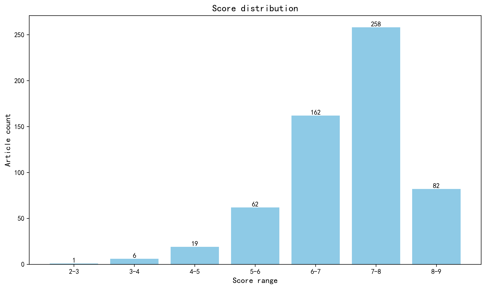

神经科学快讯·第032期 破伤风毒素的逆行转运：宿主受体介导中枢入侵 (2026-10-17)
📊 本周概览
第 032 期 · 文献日期：2026-10-11—2026-10-17（含首尾）。共检索并评估 1167 篇；作者与机构信息来自原始来源及 ROR 匹配。11 篇未取得足够摘要，相关条目已标注为仅供初筛；1070 篇取得地区信息。作者指标未参与本期来源统计。
本期没有条目达到头条推荐门槛，封面采用深度解读中评分最高的 Cell 研究。日期包含预印本版本发布日；跨期历史记录另行核验，排除了 33 篇历史重复及 30 篇非研究记录。Europe PMC 的本周期刊查询均返回零条，已用期刊原站和 PubMed 独立补查；来源覆盖仍受网站访问与索引时效限制，不将零返回视为确认无论文。
已对全部 11 篇缺失摘要记录补查 DOI、Europe PMC、Crossref 及出版社页面，未取得可用的正式科学摘要；其中一条 Crossref 文本仅为评论的被评文章引文，未作为摘要采用。拟发布 555 篇中仍有 5 篇缺摘要（深度解读 1 篇、简要提及 4 篇），均保留资料不足提示。地图、地区分布与评分图按本期可评分语料统计，排除“域外局限”条目。
- 头条推荐: 0 篇
- 深度解读: 276 篇
- 简要提及: 279 篇
- 跨界启发: 0 篇
- 已过滤: 612 篇
🌏 环球视野

地区与机构按本期原始发表记录、ROR 及城市地址规则分别统计；跨地区合作可重复计入，不作为完整机构排名。评分分布不含“域外局限”文章。
🌍 国家/地区分布 TOP 10
| 排名 | 国家 | 文章数量 |
|---|---|---|
| 1 | United States | 244 |
| 2 | China | 63 |
| 3 | United Kingdom | 54 |
| 4 | Germany | 50 |
| 5 | France | 33 |
| 6 | Canada | 32 |
| 7 | Japan | 24 |
| 8 | Switzerland | 22 |
| 9 | The Netherlands | 18 |
| 10 | Italy | 18 |
地区计次合计: 749 次；取得地区信息 511/590 篇
🏢 研究机构 TOP 10
| 排名 | 机构 | 文章数量 |
|---|---|---|
| 1 | Harvard University | 20 |
| 2 | University of Oxford | 16 |
| 3 | Inserm | 15 |
| 4 | Stanford University | 15 |
| 5 | Howard Hughes Medical Institute | 13 |
| 6 | Centre National de la Recherche Scientifique | 12 |
| 7 | University of Pennsylvania | 12 |
| 8 | University of Washington | 11 |
| 9 | University of Cambridge | 9 |
| 10 | Tsinghua University | 9 |
📊 评分分布
| 评分区间 | 文章数量 |
|---|---|
| 2-3 | 1 |
| 3-4 | 6 |
| 4-5 | 19 |
| 5-6 | 62 |
| 6-7 | 162 |
| 7-8 | 258 |
| 8-9 | 82 |
总计: 590 篇评分文章
📈 各领域文章分布
| 领域 | 深度解读 | 简要提及 | 总计 |
|---|---|---|---|
| 系统与环路神经科学 | 65 | 20 | 85 |
| 临床与转化神经科学 | 32 | 45 | 77 |
| 认知神经科学 | 44 | 31 | 75 |
| 分子与细胞神经科学 | 50 | 19 | 69 |
| 方法学 | 28 | 38 | 66 |
| 未知领域 | 0 | 61 | 61 |
| 计算与理论神经科学 | 18 | 30 | 48 |
| 发育神经科学 | 23 | 16 | 39 |
| 感觉与运动神经科学 | 14 | 15 | 29 |
| 社会与情感神经科学 | 2 | 4 | 6 |
合计: 深度解读 276 篇，简要提及 279 篇，共 555 篇
📚 精选文献（按领域分类）
临床与转化神经科学
Directional coordination along the cortical hierarchy is selectively reorganized in schizophrenia
深度解读 8.6/10中文标题: 精神分裂症中沿皮层层次的方向性协调被选择性重组
作者: Wiafe, S.-L., Soleimani, N., Fu, Z. et al.
单位: Georgia State University
研究地区: United States
关键词: 精神分裂症, 皮层层级, 相位同步, lead-lag动态, 反馈/前馈, 静息态fMRI
亮点: 保留lead-lag符号几何的复数相位同步揭示皮层层级的方向性协调轴，并在精神分裂症中呈现选择性重组
核心优势: 跨四个独立队列七个数据集的重复验证，加上GABA镇静与运动想象的双向操控实验，将统计轴锚定为可操控的脑动态属性，并在两个临床队列中复现症状与认知关联的反转
研究局限: 临床证据全部为横断面相关，缺乏纵向或因果干预；方向性轴的具体神经机制（如E/I失衡）仍属推断，且GABA镇静与疾病状态的对应关系需要更直接的电生理验证
目标读者: 精神分裂症神经影像、脑网络动力学、计算精神病学与系统神经科学研究者
推荐理由: 该研究突破将皮层层级视为固定解剖结构的传统框架，利用复数相位同步捕捉有符号的lead-lag几何，揭示了大脑在反馈、前馈与整合三种协调模式间的动态切换。精神分裂症患者的选择性重组体现在层级方向性协调的异常，而非单纯的连接强度改变，为理解该疾病的层级失调提供了动态新维度。方法在七个数据集上可复现，兼具理论创新与转化潜力。
中文标题: 无创超短波神经调控增强类淋巴清除以缓解创伤性脑水肿和阿尔茨海默病病理
作者: Jinwei Liu, Chuang Xu, Huaqiang Ruan et al.
单位: Department of Rehabilitation Medicine, The Second Medical Center & National Clinical Research Center for Geriatric Diseases, Chinese PLA General Hospital, Beijing, China.; Beijing Institute of Basic Medical Sciences, Beijing, China.; Department of Rehabilitation Medicine, The Second Medical Center & National Clinical Research Center for Geriatric Diseases, Chinese PLA General Hospital, Beijing, China.; Beijing Institute of Basic Medical Sciences, Beijing, China.; Graduate School of Chinese PLA General Hospital, Beijing, China.; Beijing Institute of Basic Medical Sciences, Beijing, China. 等
研究地区: China
关键词: 超声 neuromodulation, 类淋巴系统, 脑水肿, 阿尔茨海默病, AQP4, Delta波
亮点: 40.68 MHz超短波经颅非侵入调控以神经元Delta振荡同步为枢纽、经AQP4极化偶联驱动类淋巴体流增强，10分钟内起效并可缓解脑水肿与阿尔茨海默病理
核心优势: 首次将非侵入物理神经调控、神经振荡同步与类淋巴清除三者建立因果链条，并通过化学遗传学沉默与AQP4药理学阻断进行双向必要性验证，同时覆盖健康小鼠机制与TBI/AD两种疾病模型的转化验证
研究局限: USW具体分子-生物物理靶点未明确，Delta振荡与AQP4极化之间的因果中介缺乏直接干预（如振荡闭环调控）验证；10分钟快速体流增强的测量方法与长期安全性、重复暴露效应及大型动物/人体验证仍不充分
目标读者: 类淋巴与胶质细胞生物学研究者、神经调控与物理治疗方向学者、脑水肿与阿尔茨海默病转化神经科学家、系统与计算神经科学研究者
推荐理由: 该研究揭示40.68 MHz超短波（USW）可在10分钟内快速增强健康小鼠的类淋巴流，并同时促进流入和流出，伴随Delta波神经元同步性增加。化学遗传学沉默和AQP4阻断实验表明，USW的效应依赖于神经元活动和AQP4。在创伤性脑水肿和阿尔茨海默病模型中，USW减轻病理并改善功能。这项工作首次将非侵入性神经调控与类淋巴清除联系起来，为脑水肿和神经退行性疾病提供了极具转化潜力的治疗策略。
中文标题: 多发性硬化中室周梯度病理与室管膜反应性及细胞黏附破坏相关
作者: Groh, Adam M. R., Afanasiev, Elia, Thevakumaran, Risavarshni et al.
单位: Department of Neurology and Neurosurgery, Montreal Neurological Institute-Hospital, McGill University, Montreal, Canada; Department of Neurology and Neurosurgery, Montreal Neurological Institute-Hospital, McGill University, Montreal, Canada; McConnell Brain Imaging Centre, Montreal Neurological Institute-Hospital, McGill University, Montreal, Canada; Department of Biomedical Engineering, McGill University, Montreal, Canada; Department of Biomedical Engineering and Physics, Faculty of Medicine, Amsterdam UMC, University of Amsterdam, Amsterdam, The Netherlands 等
研究地区: Canada, The Netherlands
关键词: 多发性硬化, 室管膜细胞, 脑室周围梯度, 超高场MRI, 单核多组学, 细胞黏附
亮点: 室管膜细胞并非被动屏障，其免疫反应性状态驱动脑脊液来源的致病信号在MS中渗入脑室周围组织
核心优势: 整合超高场MRI引导的组织学、电镜和单核多组学，首次将MS室管膜反应性、连接蛋白失调与脑室周围梯度病理直接联系起来，并用IFNγ体内实验验证因果通路
研究局限: 人源证据以相关性为主，IFNγ仅在小鼠中验证且为单一候选配体，室管膜病理与梯度之间的因果方向及对复发预测的独立贡献仍待纵向和干预研究确认
目标读者: 多发性硬化与神经免疫研究者、脑脊液-脑界面与室管膜生物学专家、神经影像与空间组学方法学研究者
推荐理由: 该研究结合超高场MRI引导的组织学、电镜和单核多组学，首次揭示多发性硬化中室管膜细胞反应性与细胞黏附破坏如何驱动脑室周围梯度病理。不仅为CSF介导的神经毒性因子渗透提供了细胞机制，还建立了影像-病理-组学整合的研究范式，对理解MS进展和治疗靶点具有重要转化价值。
中文标题: 阿尔茨海默病常见结构变异的全基因组分析发现FAM193B中一个与风险相关的调控性CCG重复序列
作者: Cao, Han, Fu, Yifan, Zhou, Xiaopu et al.
单位: Division of Life Science, State Key Laboratory of Nervous System Disorders, Daniel and Mayce Yu Molecular Neuroscience Center, The Hong Kong University of Science and Technology, Hong Kong Special Administrative Region, China; InnoHK Hong Kong Center for Neurodegenerative Diseases, Hong Kong Special Administrative Region, China; Guangdong Provincial Key Laboratory of Brain Science, Disease and Drug Development, Shenzhen–Hong Kong Institute of Brain Science, HKUST Shenzhen Research Institute, Shenzhen, China; Division of Life Science, State Key Laboratory of Nervous System Disorders, Daniel and Mayce Yu Molecular Neuroscience Center, The Hong Kong University of Science and Technology, Hong Kong Special Administrative Region, China; InnoHK Hong Kong Center for Neurodegenerative Diseases, Hong Kong Special Administrative Region, China; Division of Life Science, State Key Laboratory of Nervous System Disorders, Daniel and Mayce Yu Molecular Neuroscience Center, The Hong Kong University of Science and Technology, Hong Kong Special Administrative Region, China 等
研究地区: China, United Kingdom
关键词: 阿尔茨海默病, 结构变异, 长读长测序, 短读长测序, CCG重复, FAM193B
亮点: 长读长与短读长测序揭示FAM193B启动子区CCG重复扩增是阿尔茨海默病的新型结构变异风险因子，并通过调控FAM193B表达介导DNA损伤与神经元死亡。
核心优势: 首次在中国人群中以长读长与大规模短读长测序相结合，明确一个常见结构变异（CCG重复扩增）达到全基因组显著性，并用表达数量性状与功能实验串联基因型—表达—病理机制。
研究局限: 发现基于中国人群，跨祖先外推性未知；功能验证主要来自死后脑组织与培养细胞，缺乏体内因果模型，CCG重复扩增的分子机制（如是否形成异常DNA结构）尚未直接阐明。
目标读者: 阿尔茨海默病遗传学、神经基因组学、结构变异与重复扩增疾病研究者，以及神经退行性疾病机制与转化研究科学家
推荐理由: 该研究利用长读长和短读长测序数据，在中国人群中系统分析了结构变异对阿尔茨海默病风险的贡献，发现FAM193B启动子区的CCG重复扩增与AD风险显著相关（OR=2.20），并揭示其调控功能。这项工作突破了传统SNP研究的局限，将结构变异纳入AD遗传架构，为疾病机制理解和风险预测提供了新视角。方法上整合长读长与短读长数据，为复杂基因组区域变异分析树立了范例，对神经退行性疾病的遗传研究具有重要推动作用。
Longitudinal study of Toba/Qom communities reveals delay and shortening of sleep in real time.
深度解读 8.2/10中文标题: 对托巴/科姆社区的纵向研究揭示睡眠在实时发生中的延迟与缩短
作者: Leandro P Casiraghi, Ignacio Spiousas, Laura L Trebucq et al.
单位: Laboratorio Interdisciplinario del Tiempo (LITERA), Departamento de Ciencias de la Vida y Del Comportamiento, Universidad de San Andrés, Vito Dumas 284, Victoria, Buenos Aires B1644BID, Argentina.; Laboratorio Interdisciplinario del Tiempo (LITERA), Departamento de Ciencias de la Vida y Del Comportamiento, Universidad de San Andrés, Vito Dumas 284, Victoria, Buenos Aires B1644BID, Argentina; Consejo Nacional de Investigaciones Científicas y Técnicas (CONICET), Godoy Cruz 2290, Ciudad Autónoma de Buenos Aires C1425FQB, Argentina.; Laboratorio Interdisciplinario del Tiempo (LITERA), Departamento de Ciencias de la Vida y Del Comportamiento, Universidad de San Andrés, Vito Dumas 284, Victoria, Buenos Aires B1644BID, Argentina; Consejo Nacional de Investigaciones Científicas y Técnicas (CONICET), Godoy Cruz 2290, Ciudad Autónoma de Buenos Aires C1425FQB, Argentina. Electronic address: lcasiraghi@udesa.edu.ar. 等
研究地区: Argentina, United States
关键词: 睡眠, 活动记录仪, 纵向研究, 人类, 昼夜节律, 光暴露
亮点: 长达12年的纵向体动记录追踪，在阿根廷Toba/Qom原住民社区捕捉到电力与智能手机普及背景下睡眠时相延迟约1小时、乡村人群十年内睡眠缩短35分钟的真实时间变化。
核心优势: 罕见的长时程纵向设计与自然实验式社区对照（无电乡村 vs 半城市化），结合超过12,000次体动记录睡眠事件和线性混合效应模型，提供了从无电到通电再到智能手机普及过程中睡眠实时变迁的直接证据。
研究局限: 观察性设计难以排除文化适应、季节、农业劳作与生活方式等混杂因素；通电与智能手机使用的时间点与睡眠变化高度共线，作者也承认这两者不能完全解释观察到的时相延迟，因果归因仍有限。
目标读者: 睡眠与昼夜节律研究者、人类进化生物学与生态人类学研究者、公共卫生与全球健康政策制定者，以及对技术现代化如何改变人类行为感兴趣的计算与系统生物学家。
推荐理由: 该研究利用纵向活动记录仪数据，直接揭示了现代化（电力与数字技术引入）如何实时延迟并缩短人类睡眠。通过对阿根廷Toba/Qom原住民社区长达12年的跟踪，发现农村与半城市群体睡眠模式均发生显著变化，为光暴露和数字技术对睡眠-觉醒周期的调控提供了罕见的因果性证据。方法学上，大规模纵向生态数据与混合效应模型的结合，为睡眠的转化研究树立了新标准，对理解昼夜节律紊乱及相关疾病具有重要价值。
中文标题: 星形细胞瘤与少突胶质细胞瘤的基因组演化分歧
作者: Chowdhury, Tamrin, Tesileanu, C. Mircea S., Kocakavuk, Emre et al.
单位: Department of Neurosurgery, Yale University, New Haven, USA; Department of Hematology and Stem Cell Transplantation, West German Cancer Center (WTZ), National Center for Tumor Diseases (NCT) West, University Hospital Essen, University of Duisburg-Essen, Essen, Germany; Department of Neurosurgery, Yale University, New Haven, USA; Department of Neurosurgery, Yale University, New Haven, USA; Department of Radiation Oncology, Seoul National University College of Medicine, Seoul National University Hospital, Seoul, South Korea; Cancer Research Institute, Seoul National University College of Medicine, Seoul, South Korea 等
研究地区: United States, Germany, South Korea, United Kingdom, Italy, The Netherlands, Australia, Luxembourg, Hong Kong, China, Switzerland
关键词: 胶质瘤, IDH突变, 纵向基因组学, 全基因组测序, 克隆演化, 星形细胞瘤
亮点: 183例IDH突变胶质瘤纵向全基因组/全外显子测序揭示星形细胞瘤与少突胶质细胞瘤在进展和治疗压力下沿染色质不稳定与PI3K/NOTCH突变两条不同演化路径分化。
核心优势: GLASS联盟纵向多时点配对样本结合全基因组与全外显子测序，系统解析治疗相关突变特征（SBS11/SBS119/ID8）与两种胶质瘤 divergent 演化轨迹，样本量与纵向设计在同类研究中突出。
研究局限: 以描述性基因组关联为主，缺乏功能实验验证演化克隆的因果驱动作用；样本以低级别为主，治疗暴露异质性可能残留混杂，且新发现突变特征的机制归因仍需实验支持。
目标读者: 神经肿瘤学、癌症基因组学与演化生物学、计算系统生物学及转化医学研究者
推荐理由: 该研究通过对183例IDH突变胶质瘤患者的纵向样本进行全基因组和全外显子测序，揭示了星形细胞瘤与少突胶质细胞瘤在基因组演化上的分歧。研究发现，星形细胞瘤在进展过程中获得更多的驱动基因突变和拷贝数变异，而少突胶质细胞瘤则表现出相对稳定的基因组特征。这种差异为理解两类肿瘤的不同临床行为提供了分子基础，并提示了针对不同演化路径的精准治疗策略。研究还强调了纵向采样在捕捉肿瘤演化动态中的重要性，为神经肿瘤学的转化研究树立了标杆。
Oral Bacterial Translocation Promotes Lung Dysbiosis and Infection Risk after Spinal Cord Injury
深度解读 8.0/10中文标题: 口腔细菌易位导致脊髓损伤后肺部菌群失调和感染风险
作者: Mifflin, K. A., Kigerl, K. A., Manrique, P. et al.
单位: Department of Neuroscience, Belford Center for Spinal Cord Injury, Centre for Brain and Spinal Cord Repair, The Ohio State University; Columbus, Ohio, 43210, US
研究地区: United States
关键词: 脊髓损伤, 肺肠轴, 口腔菌群, 16S rRNA测序, 小鼠, 呼吸道感染
亮点: 脊髓损伤后肺部菌群失调源于口腔共生菌移位而非肠道途径，提示按感染途径给药的新防治策略。
核心优势: 用培养、16S rRNA测序与来源追踪多模态手段，明确区分口腔与肠道来源，并给出可转化的抗生素给药途径证据。
研究局限: 尚为bioRxiv预印本，初步同行评议尚未完成；证据主要来自小鼠模型，人体相关性及机制细节需进一步验证。
目标读者: 神经科学、脊髓损伤与神经免疫、微生物组及临床感染防治研究者
推荐理由: 该研究揭示了脊髓损伤后肺部菌群失调的起源：口腔共生菌易位至肺部，而非传统认为的肠道来源。通过细菌培养、16S rRNA测序和来源追踪，作者证明SCI后口腔菌群快速侵入肺部，加剧感染风险。这一发现将神经损伤与口腔-肺轴联系起来，为理解SCI后呼吸道并发症提供了新机制，并提示口腔卫生干预可能成为降低感染风险的转化策略。研究结合了神经科学与微生物组学，对临床转化具有重要启示。
中文标题: 探究LSD在人脑中的分子与血流动力学效应
作者: McCulloch, Drummond E-Wen, Larsen, Kristian, Johansen, Annette et al.
单位: Neurobiology Research Unit, Rigshospitalet, Copenhagen, Denmark; Department of Psychiatry, Psychiatric Centre Copenhagen, Copenhagen, Denmark; Neurobiology Research Unit, Rigshospitalet, Copenhagen, Denmark; Faculty of Health and Medical Sciences, University of Copenhagen, Copenhagen, Denmark; Neurobiology Research Unit, Rigshospitalet, Copenhagen, Denmark; Department of Neurology, Copenhagen University Hospital Rigshospitalet, Copenhagen, Denmark 等
研究地区: Denmark, Switzerland
关键词: LSD, PET-MRI, 5-HT2AR, 脑血流, 功能连接, 人类
亮点: 首次在人体中同步PET-fMRI揭示LSD的5-HT2AR占据与血流-连接组耦合及非典型药效学
核心优势: 利用同步PET-MRI同时量化LSD的受体占据、脑血流和功能连接，并发现血浆药物水平与主观效应间的逆时针滞后环，为迷幻药临床开发提供关键剂量-占据关系。
研究局限: 样本量极小（仅7名健康志愿者），统计效力有限，且与psilocybin队列的对比为非随机独立样本，结论的普适性和因果推断需更大样本验证。
目标读者: 神经药理学、神经影像学、迷幻药治疗开发及系统神经科学研究者
推荐理由: 该研究首次采用同步PET-MRI技术，在人类中同时量化LSD的受体占据与血流动力学效应，揭示了5-HT2AR占据与全局脑血流增加及功能连接降低的关联。方法学上，同步多模态成像为致幻剂的靶点 engagement 提供了直接证据；转化上，为LSD辅助治疗的心理塑性机制提供了神经生物学基础，对精神疾病治疗开发具有重要参考价值。
中文标题: 揭示左侧海马mGlu5在阿尔茨海默病中的作用
作者: Charleine Zussy, Magalie Mathias, Mathieu Vitalis et al.
单位: IGF, University of Montpellier, CNRS, INSERM, Montpellier 34094, France.; MCS, Institute for Advanced Chemistry of Catalonia, (IQAC-CSIC), Barcelona 08034, Spain.; MMDN, University of Montpellier, INSERM, Montpellier 34095, France.; LIPSTIC LabEx, Dijon 21079, France. 等
研究地区: France, Spain, Canada
关键词: mGlu5, 海马, 阿尔茨海默病, 左右不对称, 小鼠模型, 突触可塑性
亮点: 左侧海马mGlu5信号是AD记忆障碍的关键位点，光控变构调节实现半球选择性精准干预
核心优势: 整合生理性左右不对称、两种AD模型和光控负向变构调节，证明左侧海马mGlu5是功能可靶向的失调信号状态而不仅是受体丢失，并展示跨半球的下游病理正常化。
研究局限: 机制证据主要来自两种过表达/多突变小鼠模型，缺乏人类AD组织或患者数据验证；光控干预的转化可行性和长期安全性未评估。
目标读者: 神经药理学、阿尔茨海默病机制、谷氨酸信号、光药理学与精准神经调控研究者
推荐理由: 该研究揭示了海马mGlu5表达存在生理性左右不对称，且在两种阿尔茨海默病小鼠模型中这种不对称性消失。这一发现将分子层面的受体表达与海马功能偏侧化联系起来，为理解AD中认知衰退的环路机制提供了新视角，并提示mGlu5信号通路可能作为侧化靶点用于治疗开发。研究结合了受体表达定量与行为学，具有转化意义。
Biallelic variants in PIKFYVE cause a hypomyelinating leukodystrophy with endolysosomal dysfunction.
深度解读 7.9/10中文标题: PIKFYVE双等位基因变异导致伴内溶酶体功能障碍的低髓鞘性脑白质营养不良
作者: Luisa Averdunk, Martin Groß, Anna B Hamacher et al.
单位: Department of General Pediatrics, Neonatology and Pediatric Cardiology, Medical Faculty, University Hospital Düsseldorf, Heinrich-Heine University, 40225 Düsseldorf, Germany.; Westdeutsches Zentrum für Kinder- und Jugendgesundheit (WZKJ) (West German center of child and youth health), University Children's Hospital of Cologne, 50924 Cologne, Germany.; Institute of Neuropathology, University Hospital RWTH Aachen, 52074 Aachen, Germany.; Center for Advanced Imaging, Heinrich Heine University Düsseldorf, 40225 Düsseldorf, Germany. 等
研究地区: Germany, United States, Australia, United Kingdom
关键词: PIKFYVE, 低髓鞘性白质脑病, 内溶酶体, PI(3,5)P2, 外显子组测序, 患者成纤维细胞
亮点: PIKFYVE双等位基因变异被确立为低髓鞘性白质脑病的新遗传病因，将PI(3,5)P2内溶酶体稳态与髓鞘形成直接联系起来
核心优势: 多家庭人类遗传学、患者成纤维细胞脂质组学与斑马鱼表型拯救相结合，形成从基因发现到功能验证再到雷帕霉素干预的完整证据链
研究局限: 机制层面仍停留在内溶酶体功能障碍的相关性观察，PI(3,5)P2减少如何选择性损害髓鞘形成缺乏细胞类型特异性实验；患者成纤维细胞功能数据仅来自一个家系，样本量小
目标读者: 神经遗传学、白质脑病与髓鞘生物学研究者，以及内溶酶体/磷脂酰肌醇代谢和斑马鱼疾病模型领域科学家
推荐理由: 本研究通过外显子组/基因组测序在三个家系中发现PIKFYVE双等位基因变异导致一种新的低髓鞘性白质脑病，并利用患者来源成纤维细胞揭示内溶酶体功能障碍（空泡大小、数量及酸化异常）。该工作将PIKFYVE-FIG4-VAC14脂质激酶复合体与神经发育障碍直接联系，扩展了磷酸肌醇代谢异常所致脑白质病的疾病谱，为临床诊断和机制研究提供了新靶点。
中文标题: ALS与衰老骨骼肌的整合转录组图谱界定退化过程的共享与独特分子程序
作者: Mercedes Grima-Terrén, Megan Rommelfanger, Silvia Campanario et al.
单位: Altos Labs, San Diego Institute of Science, San Diego, CA 92121.; Department of Medicine and Life Sciences, Universitat Pompeu Fabra, Barcelona 08003, Spain.; Altos Labs, San Diego Institute of Science, San Diego, CA 92121.
研究地区: United States, Spain
关键词: 单核转录组, ALS, 骨骼肌, 衰老, SOD1G93A小鼠, 运动神经元
亮点: 单核转录组图谱整合ALS与衰老骨骼肌，揭示共享与特异的退化分子程序及ALS特异的肌核亚群。
核心优势: 跨疾病与衰老的单核转录组整合图谱，结合结构与功能验证，解析了神经肌肉接头突触肌核的疾病响应程序及快速糖酵解纤维的退化路径。
研究局限: 主要基于SOD1G93A单一小鼠模型，缺乏人类肌肉组织验证，且单核转录组与功能分析间的因果联系仍需遗传或药理学扰动实验支持。
目标读者: 神经肌肉疾病、运动系统老化、单细胞组学与转化神经科学研究者
推荐理由: 该研究构建了ALS模型与衰老野生型小鼠骨骼肌的单核转录组整合图谱，系统比较了神经源性肌萎缩与年龄相关肌少症的分子程序。研究发现二者共享部分退行性通路，但ALS具有独特的快速萎缩特征，涉及神经肌肉接头失支配和代谢重编程。该图谱为理解运动神经元损伤后肌肉的响应机制提供了宝贵资源，并提示了针对ALS肌肉病理的潜在干预靶点。
中文标题: Friedreich共济失调iPSC模型中自主神经元内在超兴奋性
作者: (Max), S. L., Lees, J., Zhang, H. et al.
单位: St Vincent's Institute of Medical Research
研究地区: Australia
关键词: iPSC, 自主神经元, Friedreich共济失调, 兴奋性, 电生理, 疾病模型
亮点: 首个人源iPSC模型揭示frataxin缺陷导致自主神经元细胞自主性超兴奋，为FRDA自主神经功能障碍提供细胞机制。
核心优势: 三对同基因iPSC系结合电生理、线粒体功能与bulk RNA-seq多模态验证，并发现14q32印记域非编码转录本的协同去抑制这一新颖表观遗传机制。
研究局限: 仅基于体外iPSC分化模型，缺乏在体或患者组织验证；样本量小（三对同基因系），超兴奋性与MEG3/14q32去抑制之间的因果链条未建立。
目标读者: 神经退行性疾病、自主神经生物学、iPSC疾病建模及线粒体与表观遗传研究者
推荐理由: 该研究利用Friedreich共济失调患者iPSC来源的自主神经元，首次直接证明其内在超兴奋性，填补了自主神经功能障碍细胞机制的关键空白。通过电生理和分子分析，揭示frataxin缺乏导致神经元兴奋性异常，为理解FRDA多系统症状提供了新视角，并提示自主神经元可作为治疗靶点。研究结合干细胞模型与功能验证，转化潜力强，对神经退行性疾病和自主神经科学领域具有重要参考价值。
中文标题: 可迁移的条件性脑图谱将皮层-皮层下结构与阿尔茨海默病进展联系起来
作者: Nitin Sharma, Sicheng Dai, Francesco A. Mallus et al.
关键词: 脑图谱, 皮层厚度, 皮层下体积, 阿尔茨海默病, 可迁移模型, 多中心
亮点: 以皮层下结构为条件的可迁移脑生长图能刻画阿尔茨海默病进展中的皮层-皮层下结构分离
核心优势: 在21,351名健康个体、216个站点的大规模数据上验证了条件化规范模型，仅需约20名健康个体重拟合截距即可校准新站点，并在ADNI中证明结构分离对痴呆转化具有超越全局偏差的预测增量。
研究局限: 作为arXiv预印本尚未经同行评审；ADNI转化预测为观察性关联而非因果证据，条件化增益幅度有限，且未与主流多模态生物标志物（如tau-PET、血浆p-tau）进行头对头比较。
目标读者: 神经影像方法学、计算神经科学与阿尔茨海默病生物标志物研究者
推荐理由: 该研究提出条件化脑图谱新框架，将皮层厚度规范模型建立在皮层下体积之上，使个体偏差反映“给定皮层下解剖时皮层是否健康”，并实现跨站点可迁移。利用多中心结构MRI数据，作者将皮层-皮层下耦合偏差与阿尔茨海默病进展关联，为早期识别和疾病监测提供可推广的影像学指标。方法学上，该工作避免了新站点重训练或仅位置-尺度校准的需求，提升了规范模型在临床转化中的实用性，对神经影像生物标志物开发具有重要参考价值。
中文标题: SLITRK2 敲低可挽救人 iPSC 来源突变 FUS-ALS 运动神经元的轴突及功能性神经肌肉接头缺陷
作者: de Jongh, Rianne, Wiersema, Anna F., van Dijk, Charlotte H. et al.
单位: Department of Translational Neuroscience, University Medical Center Utrecht Brain Center, Utrecht University, Utrecht, The Netherlands; VIB-KU Leuven Center for Neuroscience, Department of Neurosciences, KU Leuven, Leuven Brain Institute, Leuven, Belgium; Department of Translational Neuroscience, University Medical Center Utrecht Brain Center, Utrecht University, Utrecht, The Netherlands; Department of Biochemistry and Biophysics, Stockholm University & Department of Cell and Molecular Biology, Karolinska Institutet, Biomedicum, Stockholm, Sweden 等
研究地区: The Netherlands, Sweden, Belgium
关键词: ALS, iPSC, 运动神经元, FUS, SLITRK2, 轴突
亮点: 人源iPSC运动神经元区室特异性3'UTR图谱揭示SLITRK2是FUS-ALS轴突与神经肌肉接头缺陷的可干预节点
核心优势: 构建全iPSC来源的神经肌肉接头芯片模型，结合区室特异性转录本分析，将SLITRK2上调与轴突和突触功能缺陷因果关联，并在多模型中得到验证。
研究局限: 机制研究主要局限于FUS-ALS亚型，SLITRK2下游信号通路及在散发性ALS或其他ALS基因型中的普适性尚未明确；NMJ功能 rescue 的电生理证据深度有限。
目标读者: ALS疾病机制、运动神经元与神经肌肉接头生物学、iPSC疾病建模及神经微流控芯片研究者
推荐理由: 该研究利用人iPSC来源的运动神经元，在FUS-ALS模型中揭示了轴突和神经肌肉接头早期缺陷的分子机制。通过区室特异性转录组分析，发现3'UTR异构体在轴突中的差异表达，并鉴定SLITRK2敲低可挽救轴突和功能缺陷。这项工作不仅深化了对ALS早期病理的理解，也提供了潜在的治疗靶点，对转化神经科学具有重要价值。
A single-nucleus multiome map of the human cerebellum with Alzheimer’s disease and related dementias
深度解读 7.7/10中文标题: 阿尔茨海默病及相关痴呆症患者小脑的单核多组学图谱
作者: Feng, Yayan, Chen, Xin, Song, Wenqiang et al.
单位: Mesulam Center for Cognitive Neurology and Alzheimer’s Disease, Ken and Ruth Davee Department of Neurology, Northwestern University Feinberg School of Medicine, Chicago, USA; Cleveland Clinic Genome Center, Cleveland Clinic Research, Cleveland Clinic, Cleveland, USA; Cleveland Clinic Genome Center, Cleveland Clinic Research, Cleveland Clinic, Cleveland, USA; Department of Genomic Sciences and Systems Biology, Cleveland Clinic Research, Cleveland Clinic, Cleveland, USA 等
研究地区: United States
关键词: 单核多组学, 人类, 小脑, 阿尔茨海默病, 前额叶, 顺式调控
亮点: 首个人类小脑多组学单核图谱，将AD/ADRD细胞类型特异的调控变异与CRISPRi功能验证连通起来
核心优势: 整合RNA/ATAC多组学、轨迹分析、遗传与三维基因组数据，并用患者来源小脑类器官CRISPRi验证SEZ6L2与KANSL1候选调控变异，形成从关联到因果的完整证据链
研究局限: 疾病因果推断仍受样本量、死后组织与单一模型系统限制，小脑与前额叶皮层混合取材难以完全分离区域特异效应，功能验证仅覆盖两个位点
目标读者: 神经退行性疾病遗传学、单细胞多组学、染色质调控与类器官模型研究者
推荐理由: 该研究首次构建了涵盖小脑和额叶皮层的单核多组学图谱，揭示了阿尔茨海默病及相关痴呆中细胞类型特异的转录组和表观遗传改变。识别出的数十万顺式调控连接为理解疾病机制提供了新视角，尤其突出了小脑在痴呆病理中的重要作用。这项工作不仅为神经退行性疾病研究提供了宝贵资源，也展示了多组学方法在复杂脑疾病中的转化潜力。
中文标题: 短期皮层刺激联合靶向康复与软骨素酶ABC改善颈段挫伤后上肢功能
作者: sinopoulou, e., Burnside, E. R., Bartus, K. et al.
单位: UCSD
关键词: 脊髓损伤, 皮质刺激, ChABC, 上肢功能, 康复, 神经可塑性
亮点: 短期硬膜外皮层电刺激联合靶向康复与ChABC即可在颈髓挫伤后持久恢复前肢灵巧功能
核心优势: 采用临床相关颈髓挫伤模型并结合行为学、电生理与解剖学多模态验证，将10周长刺激方案缩短至12天并证明其有效性，转化意义明确。
研究局限: bioRxiv预印本尚未经同行评审，样本量偏小，缺少对刺激参数与疗程长短的系统对照，且ChABC与电刺激的协同作用机制未深入解析，长期功能维持与安全性数据不足。
目标读者: 脊髓损伤修复、神经康复与神经工程研究者，以及转化神经科学和系统神经生物学家
推荐理由: 该研究在颈段挫伤模型中验证了短期皮质刺激联合靶向康复与ChABC酶治疗对前肢功能的改善作用，揭示了联合干预促进神经可塑性的潜力。其创新在于将长期刺激方案缩短，并系统评估了行为学与肌肉活动的恢复，为临床转化提供了更可行的治疗时间窗。对神经科学读者而言，该工作强调了多模式联合策略在脊髓损伤修复中的必要性，并提示皮质刺激与康复训练协同增强环路重塑的机制值得深入探索。
Extracellular vesicle α-synuclein topology reveals disease-associated conformers in brain and blood.
深度解读 7.6/10中文标题: 细胞外囊泡α-突触核蛋白拓扑结构揭示脑与血液中疾病相关构象体
作者: Suman Dutta, Amin Atashgaran, Anis Sahoo et al.
单位: Kavli Institute for Nanoscience Discovery, University of Oxford, Oxford, OX1 3QU, UK.; Department of Physics, University of Oxford, Oxford, OX1 3PU, UK.; Nuffield Department of Clinical Neurosciences, University of Oxford, Oxford, OX3 9DU, UK.; Kavli Institute for Nanoscience Discovery, University of Oxford, Oxford, OX1 3QU, UK.
研究地区: United Kingdom
关键词: 细胞外囊泡, α-突触核蛋白, 帕金森病, 构象异构体, 生物标志物, 质谱分析
亮点: 单囊泡dSTORM表位映射揭示EV上αSyn构象拓扑而非总量可区分帕金森病、DLB与MSA，并可在血清中追踪。
核心优势: 将dSTORM单囊泡成像与定量质谱、电化学发光结合，在死后脑组织及外周血中同时解析EV来源细胞、αSyn聚集状态与N端表位(34-45)暴露构象，实现突触核蛋白病的分子分型。
研究局限: 样本量有限且为横断面死后与血清样本，缺乏纵向验证与独立队列重复；EV分离与抗体表位检测的批次效应、外周血中构象信号的低丰度灵敏度仍需更大规模前瞻性研究确认。
目标读者: 帕金森病与突触核蛋白病研究者、神经退行性疾病生物标志物开发者、细胞外囊泡与单分子成像技术专家
推荐理由: 该研究创新性地结合细胞外囊泡分离、电化学发光、定量质谱和纳米级单囊泡成像，首次系统揭示了脑与血液来源细胞外囊泡中α-突触核蛋白的拓扑结构和疾病相关构象。发现不仅为帕金森病、路易体痴呆和多系统萎缩的病理机制提供了新见解，更推动了基于血液的构象特异性生物标志物开发，对神经退行性疾病的早期诊断和分型具有重要转化价值。
中文标题: 治疗性AIBP表达促进青光眼性神经炎症中的突触保护与视力恢复
作者: Bastola, T., Hwang, S., Shen, Z. et al.
单位: University of California San Diego
研究地区: United States
关键词: 青光眼, AAV2, 视网膜神经节细胞, 突触保护, 神经炎症, TLR4
亮点: AAV2递送AIBP经AIBP-TLR4轴在降眼压之外独立保护视网膜突触与视觉功能，为青光眼提供不依赖IOP的基因治疗新策略
核心优势: 在DBA/2J自发青光眼与微珠诱导高眼压两种模型中，于IOP升高前后给药均显示RGC与视觉电生理保护，并用TLR4结合域缺失突变体和AIBP敲除小鼠建立了机制必要性与充分性
研究局限: 仅为bioRxiv预印本，缺乏同行评议与独立重复；DBA/2J模型与人类青光眼异质性差距大，长期安全性与视神经轴突变性、全视野功能终点未评估；AIBP脂质外排对全身脂代谢的脱靶效应未讨论
目标读者: 青光眼与视网膜神经退行性疾病研究者、基因治疗与AAV载体开发人员、神经炎症与脂筏信号领域科学家
推荐理由: 该研究揭示AIBP通过促进胆固醇外流、抑制脂筏依赖的TLR4炎症信号，在实验性青光眼中保护内层视网膜突触完整性并恢复视觉功能。AAV2介导的hAIBP基因治疗为降眼压之外提供了突触保护和神经炎症调控的新策略，具有明确的临床转化前景，值得神经科学读者关注。
中文标题: 小鼠纹状体内注射扩增的路易体痴呆纤维导致具有LBD结构的纤维积累和神经退行性变
作者: Bagade, A. V., Miller, R., Dearborn, J. T. et al.
单位: Department of Neurology and Hope Center for Neurological Disorders, Washington University School of Medicine, St. Louis, MO, 63110, USA
研究地区: United States
关键词: α-突触核蛋白, 路易体痴呆, 纤维结构, 纹状体注射, 人源化小鼠, 神经退行
亮点: 将人脑LBD来源的扩增α-synuclein纤维注入人源化小鼠，首次在体内维持Lewy折叠结构并复制多脑区病理与黑质多巴胺能神经元丢失。
核心优势: 以三个独立LBD尸检病例来源的扩增纤维进行接种，结合行为学、多脑区磷酸化α-synuclein定量与cryo-EM二维类平均结构比对，构建了结构-病理-表型相互印证的模型链条。
研究局限: 未获得高分辨率三维结构，Lewy折叠的维持主要依赖二维类平均匹配；样本量与时间点有限，缺乏传播路径、突触毒性及可溶性/不溶性组分分离的直接证据，且bioRxiv预印本尚未经同行评审。
目标读者: 神经退行性疾病、蛋白质错误折叠与传播、帕金森病/路易体痴呆模型及生物标志物与药物开发研究者
推荐理由: 该研究利用LBD患者脑组织扩增的α-突触核蛋白纤维，注射到人源化小鼠纹状体后，成功诱发了具有LBD结构特征的纤维积累和神经退行性病变。这项工作首次在体内证实了特定构象的α-突触核蛋白纤维足以驱动LBD样病理，为理解帕金森病和路易体痴呆的致病机制提供了关键证据，并为人源化小鼠模型在突触核蛋白病研究中的转化价值奠定了基础。
Whole-brain receptor markers and hub excitabilities determine acute and long-term outcomes in stroke
深度解读 7.5/10中文标题: 全脑受体标记与枢纽兴奋性决定卒中的急性与长期结局
作者: Schulte, J. D., Vohryzek, J., Monge-Asensio, M. et al.
单位: Universitat Pompeu Fabra
研究地区: Spain
关键词: 卒中, 全脑模型, 受体密度, 数字孪生, 兴奋性, 神经调控
亮点: 以个体化数字孪生将全脑受体图谱与机制模型耦合，首次把受体特异的皮层兴奋性调制与卒中急性和一年期行为结局机制性地联系起来。
核心优势: 创新性地将19种受体/转运体密度图谱嵌入患者个体化全脑机制模型，揭示病灶周围与非病灶周围组织兴奋性调控的受体分离效应，并发现高连接枢纽的急性兴奋性可预测一年后语言恢复。
研究局限: 目前仅为bioRxiv预印本，证据主要基于计算模型拟合与观察性影像数据的相关性推断，缺乏药理学或因果干预验证，受体图谱来源与患者个体差异的匹配度也需进一步检验。
目标读者: 卒中神经影像与恢复机制研究者、计算神经科学与全脑建模学者、神经药理学与神经调控转化研究者
推荐理由: 该研究构建了患者个体的全脑数字孪生，整合19种受体与转运体密度图，以机制模型揭示受体分布与枢纽兴奋性如何决定卒中急性与长期结局。它首次在人类中建立局部受体系统与影像观测之间的机制联系，为理解卒中恢复差异和个体化神经调控提供了可验证的计算框架。
中文标题: 少突胶质细胞应激反应驱动血管性痴呆
作者: Merour, E., Ghatage, T., Corbett, C. et al.
单位: Northwestern Feinberg School of Medicine
关键词: 血管性痴呆, 少突胶质细胞, 白质损伤, 高脂饮食, 高血压, 小鼠模型
亮点: 少突胶质细胞整合应激反应（ISR）被确立为连接心代谢应激与血管性痴呆白质损伤的细胞自主驱动通路及可干预靶点。
核心优势: 机制链条完整：从HF/HBP模型的白质病理与行为表型，经药理学ISR抑制和少突胶质细胞特异性PERK敲除的双重因果验证，并延伸至人类脑小血管病样本的转化证据。
研究局限: 预印本尚未经同行评审；小鼠HF/HBP模型对临床VaD的建模效度有限，人类证据仅为ISR激活的相关性观察，缺乏人体因果或干预数据。
目标读者: 神经退行与脑血管病研究者、少突胶质细胞与髓鞘生物学研究者、整合应激反应/ISR通路研究者及转化神经药理学者
推荐理由: 该研究利用高脂饮食联合高血压的慢性心代谢应激小鼠模型，揭示了少突胶质细胞应激反应驱动血管性痴呆白质损伤的新机制。研究刻画了从少突胶质细胞丢失、髓鞘变薄到认知与情绪行为障碍的渐进过程，为血管性痴呆的细胞病理学提供了关键证据，并提示少突胶质细胞应激通路可作为转化干预的潜在靶点。
中文标题: 松鼠猴自发性脑淀粉样血管病与淀粉样蛋白相关影像异常模型中神经影像与组织病理学的整合研究
作者: Wadghiri, Y. Z., Khan, S., Soliman, M. T. et al.
单位: Department of Neurology, New York University Grossman School of Medicine, New York, NY, USA
研究地区: United States
关键词: 脑淀粉样血管病, 松鼠猴, R2*, ARIA, MRI, 组织病理学
亮点: 松鼠猴自发CAA与ARIA模型首次系统关联7T R2*定量影像与组织病理，揭示ARIA-E的胶质增生/血脑屏障破坏组织特征
核心优势: 在同一非人灵长类模型中将7T多梯度回波R2*定量成像与CAA严重度及ARIA-E/H组织病理直接对照，为CAA抗生前诊断与ARIA风险标志物提供转化基础
研究局限: 样本量小且为横断面年龄分组设计，缺乏纵向追踪与定量影像-病理盲法统计效能；R2*信号受铁、髓鞘、水含量等多因素混杂，因果归因有限；仅见预印本，未经同行评审
目标读者: 阿尔茨海默病与脑小血管病研究者、神经影像方法学与转化神经科学团队、抗淀粉样蛋白免疫治疗安全性评估人员
推荐理由: 该研究在松鼠猴自发脑淀粉样血管病（CAA）模型中，整合R2*定量磁共振成像与组织病理学，系统刻画了CAA和淀粉样相关影像异常（ARIA）的影像-病理关联。松鼠猴作为唯一自发形成丰富CAA和ARIA的非人灵长类模型，其转化价值独特。研究为CAA的生前诊断提供了潜在影像生物标志物，并深化了对ARIA机制的理解，对阿尔茨海默病抗淀粉样免疫治疗的安全性监测具有直接临床意义。
中文标题: 阿尔茨海默病模型中tau相关的脑血与组织氧合的深度依赖性改变
作者: Ruiz-Uribe, N. E., Alfadhel, M., Wolf, N. et al.
单位: Massachusetts General Hospital
研究地区: United States
关键词: 阿尔茨海默病, tau蛋白, 脑氧合, 双光子显微镜, 清醒小鼠, 皮层深度
亮点: 双光子磷光寿命成像在清醒tau小鼠中首次绘制皮层深度依赖的血管与组织氧分压图谱，将tau病理与局部低氧微环境直接关联。
核心优势: 在清醒小鼠中跨皮层深度同步测量毛细血管、微静脉与组织pO2，并结合活体tau缠结染料标记与纵向神经元追踪，技术整合度与数据维度突出。
研究局限: 预印本尚未经同行评审；氧分压与神经元丢失的因果链未建立，纵向分析仅显示消失神经元并非位于相对低氧区域，且清tau转基因未能恢复血管pO2，机制解释力有限。
目标读者: 阿尔茨海默病血管机制、脑血流与氧代谢、双光子活体成像及tau病理研究者
推荐理由: 该研究利用双光子磷光寿命显微成像技术，在清醒的tau转基因小鼠中首次系统测量了不同皮层深度的血管内和组织氧分压，揭示了tau病理进展中脑氧合的动态变化：早期（6个月）毛细血管和微静脉pO2升高，晚期（9个月）深层皮层pO2降低，且与神经元病理相关。这一发现将血管功能障碍与tau病理直接联系起来，为阿尔茨海默病的氧代谢假说提供了直接证据，并强调了皮层深度在神经血管耦合研究中的重要性。
中文标题: 丝氨酸-65磷酸化泛素与阿尔茨海默病中可溶性tau及播种活性相关
作者: Yan, Tingxiang, Hou, Xu, Watzlawik, Jens O. et al.
单位: Department of Neuroscience, Mayo Clinic, Jacksonville, USA; Department of Neuroscience, Mayo Clinic, Jacksonville, USA; Neuroscience PhD Program, Mayo Clinic Graduate School of Biomedical Sciences, Jacksonville, USA
研究地区: United States
关键词: 阿尔茨海默病, Tau蛋白, 泛素化, PINK1, 翻译后修饰, 种子活性
亮点: pS65-Ub修饰的tau被鉴定为AD脑中可播种性、可溶性tau群体的疾病富集分子标志物，将细胞应激信号与tau传播联系起来。
核心优势: 在死后人脑组织中系统关联了pS65-Ub与tau的生化性质（可溶性、高分子量、寡聚、超磷酸化）及功能播种活性，并用抗体去除实验验证因果关系方向。
研究局限: 主要基于死后人脑组织的相关性证据，缺乏在体内模型或纵向样本中对pS65-Ub-tau因果关系与传播时序的直接验证；组织来源队列与年龄/性别匹配细节有限。
目标读者: 阿尔茨海默病、tau蛋白病、蛋白质稳态与神经退行性疾病的神经生物学家和转化研究者
推荐理由: 该研究首次在AD脑组织中鉴定出pS65-Ub共价修饰的tau亚群，并证明该亚群富集于可溶性、高分子量、寡聚化及超磷酸化tau中，且与tau种子活性相关。这一发现将PINK1依赖性线粒体应激信号与tau传播机制直接联系起来，为AD提供了潜在的选择性病理标志物和干预靶点。研究基于人脑组织，临床转化价值突出，值得神经科学读者关注。
中文标题: 急性应激重构缓解期抑郁症患者前扣带回与丘脑底核耦合以影响趋避决策
作者: Kuhn, M., Ging-Jehli, N. R., Palermo, E. H. et al.
单位: McLean Hospital, University of California Irvine
研究地区: United States
关键词: fMRI, 人类, 前扣带回, 丘脑底核, 急性应激, 决策
亮点: 急性应激并非普遍钝化决策，而是重新编排缓解期抑郁者pgACC-STN的价值积累与决策阈值耦合，并可预测一年后症状轨迹。
核心优势: 将分层贝叶斯漂移扩散建模与试次级pgACC/STN神经回归量结合，在同一被试内前后应激设计中分离证据积累与决策阈值的计算-神经机制。
研究局限: 仅bioRxiv预印本、单一应激范式与样本量有限，pgACC/STN fMRI信号的空间特异性与因果推断较弱，一年随访预测需独立队列验证。
目标读者: 计算精神病学、抑郁复发机制、决策神经科学与fMRI计算建模研究者
推荐理由: 该研究聚焦于缓解期抑郁症个体，揭示急性心理社会应激如何重塑前扣带与丘脑底核在趋避决策中的耦合。通过结合计算建模与神经影像，作者将价值整合与决策谨慎的神经机制与应激诱发的复发风险联系起来，为理解抑郁症复发的认知神经基础提供了新视角。研究不仅深化了对应激下决策环路动态的认识，也为早期干预提供了潜在靶点。
中文标题: 利用植入式神经接口揭示胶质瘤进展的神经特征
作者: Stroud, J. P., Bratsch-Prince, J., Coles, L. et al.
单位: Coherence Neuro Global, Inc
关键词: 胶质瘤, 植入式接口, 电生理, 小鼠, 肿瘤进展, 神经-肿瘤交互
亮点: 植入式神经接口在自由活动小鼠中长期追踪胶质瘤进展，γ波段活动可作为跨模型的肿瘤负荷生物标志物并用低维模型预测生长速率。
核心优势: 将慢性在体神经电生理记录与多种胶质瘤模型、化疗干预和机器学习/低维动力学建模结合，提出可闭环刺激的监测平台概念，转化潜力明确。
研究局限: 预印本尚缺同行评议；样本量与动物数量未在摘要中体现，γ活动与肿瘤负荷的因果方向及机制未阐明，跨品系/模型的可重复性和临床外推性仍需验证。
目标读者: 神经肿瘤学、在体电生理与脑机接口、计算系统生物学及转化神经技术研究者
推荐理由: 该研究开发了基于植入式神经接口的长期监测平台，在自由活动小鼠中追踪胶质瘤进展，并记录肿瘤相关神经活动。它首次将神经电生理记录与肿瘤生长动态直接关联，为理解神经环路驱动胶质瘤的机制提供了转化工具，并有望推动实时监测与闭环干预策略。方法学创新与临床转化潜力兼具，值得神经科学读者关注。
中文标题: 下丘脑食欲素-内侧前额叶皮层通路调节雄性小鼠习得性无助范式中的抑郁易感性
作者: Ting Mi, Zhenquan He, Baocong Yu et al.
单位: Department of Human Anatomy, School of Basic Medical Sciences, Ningxia Medical University, Yinchuan, 750000, China.; Department of Human Anatomy, School of Basic Medical Sciences, Ningxia Medical University, Yinchuan, 750000, China.; Key Laboratory of Craniocerebral Diseases of Ningxia Hui Autonomous Region, Ningxia Provincial-Ministerial Joint Collaborative Innovation Center for Characteristic Traditional Chinese Medicine, Ningxia Medical University, Yinchuan, 750000, China.; Key Laboratory of Craniocerebral Diseases of Ningxia Hui Autonomous Region, Ningxia Provincial-Ministerial Joint Collaborative Innovation Center for Characteristic Traditional Chinese Medicine, Ningxia Medical University, Yinchuan, 750000, China. 等
研究地区: China
关键词: 食欲素, 内侧前额叶, 习得性无助, 抑郁易感性, 光遗传学, 小鼠
亮点: 下丘脑orexin→mPFC通路决定习得性无助易感与韧性，并可通过OX1R依赖的兴奋性突触调控逆转抑郁样行为
核心优势: 因果性操控完整（化学遗传学激活/抑制双向验证、OX1R拮抗剂回补、电生理与分子表达多层面证据链），并聚焦易感/韧性个体差异这一临床相关维度
研究局限: 仅限雄性小鼠与习得性无助单一范式，orexin神经元计数与末梢密度为相关性证据、缺乏追踪或纤维光度记录，且未区分LH范式应激与orexin系统变化的因果时序
目标读者: 行为神经科学、应激与精神疾病动物模型、orexin系统与突触生理研究者
推荐理由: 该研究聚焦下丘脑食欲素能神经元向内侧前额叶皮层的投射通路，揭示了其在习得性无助范式下调控抑郁易感性的关键作用。通过结合环路特异性操作与行为学分析，作者将应激诱导的抑郁样行为与特定神经环路的损伤联系起来，为理解抑郁的异质性提供了环路层面的机制解释。这项工作不仅深化了食欲素系统在情绪调节中的功能认识，也为针对难治性抑郁的神经调控策略提供了潜在的转化靶点。
中文标题: 血清素能致幻剂延迟静息态神经血管耦合动力学
作者: Mundel, L., Medel, V., Timmermann, C. et al.
关键词: 裸盖菇素, LSD, DMT, 神经血管耦合, fMRI, 盲反卷积
亮点: 盲解卷积揭示裸盖菇素类致幻剂会延长静息态神经血管耦合延迟，提示既往BOLD功能连接结果可能被血管效应混淆
核心优势: 用盲解卷积把神经血管耦合与非神经血管信号分离开来，并结合全脑生物物理模型把延迟效应归因于血流依赖性反馈增强与血管活性驱动消散变慢，为致幻剂影像学研究提供了可直接采纳的方法学校正框架
研究局限: 尚属bioRxiv预印本，尚未经同行评审；样本量较小且仅覆盖LSD与DMT两种药物，解卷积模型本身依赖血流动力学假设，模型参数的生理可辨识性与跨被试稳定性缺乏独立验证
目标读者: 致幻剂神经影像、神经血管耦合、fMRI方法学与计算系统神经科学研究者
推荐理由: 该研究应用盲反卷积算法分离BOLD信号中的血流动力学成分，发现LSD和DMT均延长静息态神经血管耦合的延迟。这一发现提示致幻剂的神经影像结果可能被其血管效应混淆，对解释相关fMRI研究提出了重要警示，并强调了在致幻剂神经影像中控制神经血管耦合的必要性。
Remyelinating therapy reverses neuronal activity suppression in a mouse model of demyelination
深度解读 7.0/10中文标题: 髓鞘再生治疗逆转脱髓鞘小鼠模型中的神经元活动抑制
作者: Das, A., Borovicka, J., Tobin, H. et al.
单位: Lerner Research Institute, Cleveland Clinic Foundation
关键词: 多发性硬化, 髓鞘再生, 海马, 钙成像, 纵向追踪, 在体电生理
亮点: 长期追踪同一小鼠的髓鞘与CA1神经元活动，揭示脱髓鞘时神经元功能下降先于髓鞘结构损伤，且clemastine修复髓鞘可逆转活动抑制。
核心优势: 对同一批小鼠进行超过100天的纵向活体成像，同时追踪髓鞘变化和单个CA1锥体神经元活动，直接关联结构修复与功能恢复，并揭示性别差异和基线活动依赖的恢复异质性。
研究局限: 仅在bioRxiv预印本阶段，尚未经同行评议；使用cuprizone模型和clemastine单一药物，机制解释和临床转化外推受限；样本量与统计细节未在摘要中体现，因果性证据仍需进一步验证。
目标读者: 神经免疫学、髓鞘生物学、多发性硬化症研究及活体成像领域的系统与计算神经科学家
推荐理由: 该研究通过长期追踪同一批小鼠海马髓鞘与CA1神经元活动，揭示了脱髓鞘过程中神经元功能下降早于髓鞘丢失，而促髓鞘再生治疗可逆转这一抑制。这一发现不仅深化了对多发性硬化等疾病中髓鞘-神经元交互的理解，也为髓鞘再生疗法的功能获益提供了直接证据，强调了治疗时间窗和功能评估的重要性。
中文标题: 酒精使用障碍中受损控制症状在抑制控制的行为与神经标志物及饮酒行为间呈现趋同关联
作者: Boehmer, J., Reinhardt, P., Bottino, M. et al.
单位: Charite - Universitaetsmedizin Berlin
研究地区: Germany
关键词: 酒精使用障碍, 抑制控制, fMRI, 停止信号任务, 行为异质性, DSM-5症状维度
亮点: 在589人大样本中把AUD的“失控”症状维度与停止信号任务的行为缺陷、抑制相关脑区激活减弱及12个月EMA饮酒量打通，为成瘾异质性提供症状—神经—行为三角证据。
核心优势: 大样本非治疗寻求AUD队列结合fMRI Stop-Signal任务与纵向生态瞬时评估，将DSM-5症状域拆分后显示抑制控制缺陷选择性关联“失控”维度而非其他症状域。
研究局限: 仅为关联性横断面设计，无法确立因果方向；behaviors与神经指标效应量有限且bioRxiv预印本未经同行评审，抑制控制任务单一、症状域自评存在共线与异质性残余。
目标读者: 成瘾神经科学、临床神经影像、计算精神病学与AUD干预开发研究者
推荐理由: 该研究针对酒精使用障碍（AUD）中抑制控制缺陷的行为与神经标记不一致问题，在大样本（N=589）中检验了这些标记与特定DSM-5症状维度的关联。研究发现行为与神经抑制控制指标与“ impaired control”症状维度存在聚合性关联，并进一步与饮酒行为相关。这一工作强调了AUD的异质性，表明抑制控制缺陷并非所有AUD患者的共同特征，而是与特定症状维度相关，为基于症状维度的神经认知分型提供了证据，对开发针对性的评估和干预策略具有转化意义。
中文标题: 调节腹侧海马输出改善颞叶癫痫的社会记忆并减少焦虑相关行为
作者: Goodman, A. M., Schellinger, E., Kahn, J. B. et al.
单位: Division of Neurology and CHOP Research Institute, Children's Hospital of Philadelphia
研究地区: United States
摘要: 将颞叶癫痫的社交记忆与焦虑障碍归因于腹侧海马输出的过度兴奋，并用“回路调谐”而非“抑制发作”的思路实现行为改善
优势: 在慢性癫痫模型中同时刻画细胞兴奋性、局部环路抑制与社交及焦虑行为，并用“倒U形”关系把行为改善与残余放电率状态直接关联起来，且设有独立的EEG队列，检验了癫痫发作与行为改善之间的可分离性 局限: 核心证据来自相关性的兴奋状态推断和化学遗传学的双侧操纵，缺乏因果性的闭环调控，也缺乏鉴别性电生理记录；仅限匹罗卡品模型的雄性小鼠，未见到对vCA1/Sub输出到下游靶区的通路特异性验证，且为bioRxiv预印本，尚待同行评审 受众: 癫痫与神经精神共病研究者、系统与计算神经科学家、海马环路及化学遗传学方法学研究者
中文标题: 自闭症与注意缺陷多动障碍中皮层下-皮层环路的差异性重组
作者: Zhou, G., Xie, K., Ngo, A. et al.
单位: McGill University
研究地区: Canada
摘要: 跨诊断多站点队列结合静息态功能连接与回归动态因果建模，区分ASD的丘脑-皮层过度连接与ADHD以尾状核为中心的局灶性纹状体-皮层紊乱。
优势: 将功能连接与有向有效连接（rDCM）以及个体化常模偏差映射整合于同一跨诊断框架，在同一队列中直接对比ASD与ADHD的皮层下-皮层环路，方法设计较为完整。 局限: 尚为bioRxiv预印本，未经同行评审；样本为多站点异质性队列，功能磁共振与rDCM的建模假设及站点效应可能混淆组间差异，且缺乏外部独立样本验证和任务态或因果性证据。 受众: 发育认知神经科学、精神疾病神经影像、计算精神病学与系统生物学研究者
中文标题: C9orf72 ALS 人类多细胞模型中的时序 RNA 剪接失调
作者: Aliya, B., Liu, S., Mansfield, A. et al.
单位: Department of Human Genetics, Emory University School of Medicine, Atlanta, GA, USA
研究地区: United States
摘要: 利用C9orf72患者来源的人脊髓类器官捕捉ALS早期、持续存在的RNA剪接失调，其剪接特征与患者死后组织高度吻合
优势: 纵向人源多细胞脊髓类器官平台将早期RNA剪接失调与疾病进展及细胞死亡联系起来，并得到患者死后组织剪接特征的佐证 局限: 仅基于预印本、单一遗传背景和体外类器官模型；缺乏体内验证，细胞类型分辨率和RBP网络推断均为相关性证据，且时间轴尚不明确 受众: ALS疾病机制、RNA剪接、神经疾病模型与干细胞生物学研究者
中文标题: 三叉神经刺激通过CGRP-PINK1线粒体自噬轴减轻创伤性脑损伤诱导的神经元损伤
作者: Li, C., Powell, K., Wadolowski, S. et al.
单位: The Feinstein Institutes for Medical Research
摘要: 无创三叉神经刺激通过CGRP-PINK1-Parkin轴维持线粒体外膜架构，为TBI后线粒体保护提供非药物神经调控策略
优势: 将三叉神经刺激这一物理神经调控手段与线粒体质量控制（TOM20聚集/PINK1/Parkin）及CGRP信号直接联系，概念上打通了神经调控与细胞器层面保护机制 局限: 预印本未经同行评审，证据链集中于单一通路（CGRP-PINK1-Parkin）和有限模型，缺乏多脑区、多时间点与独立复制验证，TNS特异性与CGRP因果性仍待严格检验 受众: 神经创伤、线粒体生物学、神经调控与转化神经科学研究者
中文标题: ATP1A3 E815K突变破坏儿童交替性偏瘫患者神经元的钠稳态和兴奋性
作者: Makke, M., Lee, C., Lazarov, E. et al.
单位: University Hospital Tuebingen
摘要: 患者来源iPSC神经元揭示ATP1A3 E815K突变选择性消除α3型钠钾泵电流并重塑人类神经元兴奋性
优势: 利用患者iPSC分化的成熟人类神经元系统验证E815K突变导致α3特异性钠泵电流近完全丧失而非α1受累，并将泵功能障碍与膜电位去极化、钠电流密度降低及放电模式改变在因果链上串联，为AHC最严重基因型提供了人类细胞层面的机制模型。 局限: 仅基于单一患者细胞系、缺乏等基因对照或更大样本验证；未直接测量胞内钠浓度动态，钠稳态结论多为电生理间接推断；机制停留在描述性关联，未进行药物或基因救援实验。 受众: 神经发育障碍、离子通道与泵病、运动障碍及iPSC疾病建模研究者
中文标题: 裸盖菇素作用下情境塑造α波段电生理特征
作者: Dhanawansa, V., Stoliker, D., Novelli, L. et al.
单位: Monash University
研究地区: Australia
摘要: 在迄今最大的裸盖菇素脑电数据集（n=56）中，揭示自然情境会重塑裸盖菇素对α频段连接性的影响，甚至使其反转。
优势: 多情境实验设计（观影、闭眼静息、引导冥想、音乐聆听）结合源重建与线性混合模型，系统分离药物、情境及其交互作用。 局限: 为预印本、尚未经同行评审；样本量虽有提升但总体仍有限；频率特异性结论受源重建与相干性方法假设约束，缺乏独立重复验证。 受众: 致幻剂神经药理学、意识神经科学、脑电/脑网络方法与计算系统神经科学研究者
中文标题: LRRK2对多巴胺功能的性别与年龄依赖性调控，以及在LRRK2-G2019S帕金森病敲入小鼠模型中多巴胺释放缺陷的快速逆转
作者: Gentle, C., Kamesh, A., Madranges, J. F. et al.
单位: Montreal Neurological Institute, McGill University
研究地区: Canada
摘要: LRRK2活性对纹状体多巴胺释放的调控具有年龄、性别和基因型依赖性，且中年期存在短暂的抑制可逆窗口
优势: 在多种年龄与性别组合下，使用iGluSnFR和dLight进行活体光学成像，系统比较WT、LRRK2-G2019S和VPS35-D620N敲入小鼠的纹状体谷氨酸与多巴胺释放动态，并直接检验急性LRRK2抑制的效果。 局限: 结论主要基于仅两个敲入模型和有限年龄点的药理学抑制实验，缺乏LRRK2抑制剂剂量或靶点特异性的机制验证；作为bioRxiv预印本，尚未经过同行评审，且年龄与性别分层导致单组样本量可能偏小。 受众: 帕金森病机制研究、LRRK2抑制剂临床转化、多巴胺系统与纹状体环路研究者
中文标题: 内皮CD36将小动脉重塑与阿尔茨海默病的代谢和免疫改变联系起来
作者: Kumar, A., Zhang, J., Harvey, J. et al.
单位: University of Alabama at Birmingham
研究地区: United States
摘要: 内皮CD36被定位为连接阿尔茨海默病小动脉重构、脂代谢与固有免疫转录程序的状态标志物与潜在药理学靶点。
优势: 多模态整合（人类脑转录组图谱、AD患者组织病理、小鼠遗传模型与CRISPR工程化人iPSC来源内皮细胞）围绕同一CD36轴形成跨物种证据链。 局限: 仅基于bioRxiv预印本；人源CD36亚群分析为相关性观察，缺乏内皮特异性CD36功能缺失/回补的因果实验，样本量小（6例患者）且GS4898药理响应未与功能或疾病终点挂钩。 受众: 脑血管生物学、阿尔茨海默病血管发病机制、神经免疫与代谢、iPSC疾病建模及血脑屏障转化研究学者
Continuous amyloid staging complements global amyloid burden in early Alzheimer's disease
简要提及 6.7/10中文标题: 连续淀粉样蛋白分期补充早期阿尔茨海默病的全局淀粉样蛋白负荷
作者: Liu, H., Tong, M., Fang, S. et al.
单位: Indiana University Indianapolis
研究地区: United States
摘要: 用端到端深度学习从区域淀粉样蛋白PET构建连续分期评分，在整体负荷之外捕捉早期AD的时空异质性并预测记忆下降。
优势: 在ADNI训练并在A4+LEARN独立复制认知预测，且通过匹配基线整体淀粉样蛋白负荷验证了分期评分的增量价值，设计思路清晰。 局限: 仅为bioRxiv预印本，尚未经同行评审；模型为黑箱端到端学习、可解释性有限，跨队列预测依赖A4+LEARN同源PET示踪剂和流程，绝对临床分期的外部效度仍待检验。 受众: 阿尔茨海默病神经影像、PET生物标志物、计算神经科学与临床痴呆研究研究者
Feasibility of a Patient-Specific Digital Twin for Ventriculoperitoneal Shunt Trajectory Planning
简要提及 6.7/10中文标题: 患者特异性数字孪生用于脑室腹腔分流管轨迹规划的可行性研究
作者: Kritsanavis Chongsrid, Vich Yindeedej, Supaporn Konmun et al.
摘要: 患者特异性数字孪生为脑室腹腔分流管轨迹规划提供个体化入口与深度，历史对照下显著提升脑室内置管成功率。
优势: 将确定性几何建模与逐患者轨迹搜索结合，在不改变手术技术的前提下仅通过术前规划显著改善置管等级，并给出可落地的耳部标尺与深度两参数方案。 局限: 证据基于11例单臂IDEAL 2a研究与历史对照，存在选择偏倚与时代偏倚；样本量小、无随机化、未报告修订率等长期结局，且数字孪生仅由CT确定性几何构建，缺乏软组织形变与脑脊液动力学的个体化验证。 受众: 神经外科、医学影像与计算生物建模研究者，以及关注手术规划数字孪生转化的临床工程师
中文标题: 大麻二酚在自闭症谱系障碍啮齿动物模型中的精神药理效应：行为结果、神经生物学机制和方法学质量的系统综述
作者: Domingues, B. R. R., Felix, G. S., Bezerra, M. F. L. et al.
单位: University of Sao Paulo
研究地区: Brazil
摘要: 系统梳理大麻二酚在啮齿类孤独症模型中的行为获益与神经机制，并直指临床前研究在随机化、盲法和雌性代表性方面的系统性方法学短板。
优势: 采用PROSPERO注册与SWiM框架进行规范化定性合成，跨药理、遗传及母体免疫激活模型整合行为、神经生物学与方法学质量三重证据。 局限: 仅纳入14项研究且异质性过大无法做定量合并，所纳入原始研究普遍存在随机化、分配隐藏和盲法报告不足，削弱了结论的因果强度。 受众: 神经精神药理学、内源性大麻素系统、孤独症转化神经科学与临床前方法学研究者
中文标题: 新生期肌内注射AAV预先沉默SOD1可改变ALS小鼠模型的疾病轨迹
作者: Gong, X., Xie, Y., Wang, W. et al.
单位: Laboratory Animal Resource Center, Fudan University, Shanghai, China.
研究地区: China
摘要: 新生儿期单次肌注rAAV2-retro递送人工miRNA实现全脊髓SOD1沉默，为SOD1-ALS提供微创预emptive基因治疗新路径
优势: 将rAAV2-retro的逆行转运能力与人工miRNA的安全性结合，在SOD1G93A小鼠中实现全脊髓运动神经元转导并观察到多维度治疗获益，同时以野生型小鼠直接对比揭示shRNA的毒性，安全性论证较为扎实。 局限: 仅基于单一SOD1G93A小鼠模型和新生儿期给药窗口，缺乏剂量-效应关系、长期安全性（尤其是AAV整合与免疫原性）及非人灵长类验证；机制层面未区分SOD1沉默的直接效应与神经炎症等继发改变的因果贡献，且预印本尚未经同行评议。 受众: ALS与运动神经元疾病研究者、基因治疗与AAV载体开发人员、神经退行性疾病转化医学团队
5-HT1A Antagonist WAY-100635 Prevents Chronic Neurodegeneration and Immune Activation After TBI
简要提及 6.5/10中文标题: 5-HT1A拮抗剂WAY-100635预防创伤性脑损伤后的慢性神经变性和免疫激活
作者: Das, A., Dutta, S., Pradhan, L. K. et al.
单位: Indiana University School of Medicine
研究地区: United States
摘要: 5-HT1A拮抗剂WAY-100635在TBI后长期给药可跨视网膜与皮层环路保护神经元和突触，并抑制慢性胶质激活。
优势: 多模态功能与结构证据（视网膜电生理、视动反应、扩散MRI、突触与胶质组织学及行为）系统验证了损伤后6周给药的跨环路神经保护效果。 局限: 仅使用雄性小鼠、单中心预印本、样本量较小且缺少剂量-反应与机制因果验证（如5-HT1A下游通路敲除/阻断），腔体体积未改善提示疗效限于周边环路。 受众: 神经创伤、视觉系统神经科学、神经免疫与胶质细胞生物学及神经药理学转化研究者
中文标题: 低剂量糖皮质激素辅助血流导向装置治疗未破裂颅内动脉瘤改善脑血管结局
作者: Wen, Zhuohua, Chen, Xiheng, Tong, Xin et al.
单位: Department of Cerebral Vascular Disease, Neurological Disease Center, Beijing Anzhen Hospital, Capital Medical University, Beijing, People’s Republic of China; Neurosurgery Center, Department of Cerebrovascular Surgery, The Engineering Technology Research Center of Education Ministry of China on Diagnosis and Treatment of Cerebrovascular Disease, Zhujiang Hospital, Southern Medical University, Guangzhou, People’s Republic of China; Department of Neurosurgery, Beijing Chaoyang Hospital, Capital Medical University, Beijing, People’s Republic of China 等
研究地区: China
摘要: 大型前瞻性队列提示，围手术期短疗程低剂量糖皮质激素可能与血流导向装置术后脑血管事件及支架内狭窄减少相关
优势: 嵌套于前瞻性多中心队列，样本量较大（1327例，倾向评分匹配并做部位精确匹配），同时报告院内事件、2年新发事件和支架内狭窄等多终点，并附未匹配敏感性分析 局限: 观察性设计，糖皮质激素用药存在适应证混杂（可能反映术者风险判断），药物方案、剂量与疗程异质，事件数偏少且机制证据缺失，仅能提示关联而无法确立因果 受众: 神经介入、脑血管病临床研究者、神经外科与围手术期管理研究者，以及关注器械治疗并发症防控的转化研究者
中文标题: 新生儿递送外显子跳跃疗法最大化改善杜氏肌营养不良症mdx52小鼠模型的脑 dystrophin rescue
作者: VACCA, O., Doisy, M., Nagy, C. et al.
单位: Universite Paris-Saclay, UVSQ, Inserm, IMPROVE, 78000 Versailles, France
研究地区: France
摘要: 新生期ICV递送AAV9-U7实现全脑持续外显子跳跃并恢复20-50%脑dystrophin，为DMD中枢共病提供递送策略依据
优势: 在同一mdx52模型中系统比较ASO与AAV9-U7经全身和ICV两种途径的脑内跳跃效率与持续性，明确了载体依赖性持续表达的转化优势。 局限: 仅限单一小鼠模型与单一外显子策略，缺乏行为学/认知功能终点与安全性、剂量-反应及长期毒性数据；预印本尚未经同行评议。 受众: 神经肌肉疾病与基因治疗研究者、核酸药物递送与CNS靶向AAV工程方向的计算与系统生物学家
中文标题: 神经退行性疾病风险个体的脑年龄差距进展研究
作者: Jason Scheffel, Saurabh Sihag
摘要: 基于协方差神经网络的脑龄差纵向轨迹可被基线阿尔茨海默病进展评分分层，提示脑龄差可作为风险人群疾病进展的动态监测指标。
优势: 将VNN驱动的脑龄差与多模态APS结合进行纵向分析，发现基线进展风险可预测脑龄差增长速率，为风险分层提供了可解释的候选影像学标志。 局限: arXiv预印本、样本量与队列细节未在摘要中体现，缺乏外部独立验证与多中心重复；脑龄差与APS的因果方向及临床增益尚不明确。 受众: 神经影像生物标志物、阿尔茨海默病早期预警、机器学习与图信号处理交叉领域研究者
中文标题: 入睡困难患者（伴或不伴抑郁或焦虑症状）的睡眠起始警觉性特征
作者: ABBATTISTA, L., WACQUIER, B., STRAUSS, M.
单位: Hopital Universitaire de Bruxelles, Universite Libre de Bruxelles
研究地区: Belgium
摘要: 连续EEG警觉性指标揭示入睡困难患者的延迟主要发生在首个睡眠epoch之前，且抑郁症状对应更‘不警觉’的睡眠起始——提示相似主诉可能源于不同生理底物。
优势: 大样本（2952例）回顾性PSG队列，结合自校准的iVS警觉性评分、theta/alpha比、微睡眠检测与30秒hypnodensity，多尺度刻画入睡过程，发现传统睡眠分期无法捕捉的警觉性差异。 局限: 回顾性单中心设计、DIS与抑郁/焦虑分组基于自评量表而非临床诊断，缺乏独立验证队列；效应量普遍偏小（睡眠潜伏期之外差异微弱），连续EEG指标为离线概率模型、因果与机制解释有限，且bioRxiv预印本尚未经同行评审。 受众: 睡眠与失眠研究、精神共病（抑郁/焦虑）方向的临床神经科学家、睡眠EEG/多导睡眠图方法学及计算神经生理学研究者
中文标题: 经济困难以性别特异性方式介导与物质使用障碍家族史相关的脑网络动态差异
作者: Schilling, L. S., Hedo, M., Jamison, K. et al.
单位: Weill Cornell Medicine
研究地区: United States
摘要: 经济困境是家庭物质使用障碍风险经性别特异性通路嵌入青少年脑网络动态的关键可调节中介。
优势: 将网络控制理论的转换能量指标与ABCD大样本的性别分层中介分析结合，并进一步探索州政策环境对中介通路的调节潜力，问题框架具有转化价值。 局限: 仅基于基线横断面数据，中介分析无法确立因果方向；转换能量为间接网络控制指标，缺乏直接神经生理验证；效应量普遍偏小，男性通路解释力弱，政策投射部分仅为探索性外推。 受众: 成瘾神经科学、发展认知神经科学、神经影像与网络控制理论研究者、青少年心理健康政策研究者
Does perturbed adaptive myelination contribute to cognitive dysfunction in Alzheimer's disease?
简要提及 6.4/10中文标题: 扰动适应性髓鞘形成是否导致阿尔茨海默病的认知功能障碍？
作者: Charles Ffrench-Constant
单位: Faculty of Medicine and Health Sciences, University of East Anglia, Norwich, United Kingdom.
研究地区: United Kingdom
摘要: 将活动依赖性适应性髓鞘化假说引入阿尔茨海默病认知衰退的解释框架，聚焦灰质少突胶质细胞的被忽视角色。
优势: 提出一个概念清晰、可检验的机制假说：灰质少突胶质细胞介导的适应性髓鞘化受损可能连接神经活动改变与认知丧失，为AD研究提供新切入点。 局限: 作为观点/假说类文章，缺乏新的实验数据或系统性的文献定量整合，论证多为推测性链条，对已有髓鞘与AD文献的批判性覆盖有限。 受众: 神经退行性疾病、髓鞘生物学与胶质细胞研究领域的科研人员及转化神经科学家
中文标题: 脊髓性肌萎缩小鼠模型中皮层投射神经元表现出早期成熟缺陷和选择性退化
作者: Schellino, R., La Rocca, F., Iezzi, G. et al.
单位: University of Turin
研究地区: Italy
摘要: 在SMA小鼠模型中揭示了皮层投射神经元在症状早期即出现亚型特异的成熟缺陷，并先于细胞丢失，将SMA病理谱系从下运动神经元拓展至大脑皮层。
优势: 采用亚型特异的免疫组化、DiI示踪结合形态计量重建与树突棘分析，在P5和P11两个时点系统刻画了皮层投射神经元的时相与亚型依赖性易感性，时间分辨率与亚型分辨率结合较好。 局限: 仅基于SMNΔ7单一小鼠模型的描述性关联，缺乏SMN缺失导致皮层成熟缺陷的因果机制与功能验证（如电生理或行为学），且与临床SMA皮层病理的相关性尚未建立。 受众: 运动神经元疾病、神经发育生物学及SMA转化研究领域的研究者
中文标题: p70核糖体蛋白S6激酶(p70S6K)作为16p11.2缺失和重复综合征自闭症症状的潜在外周生物标志物
作者: Morella, I., Hall, J., Butter, C. et al.
单位: Department of Biology and Biotechnology, University of Pavia, Pavia, Italy
研究地区: Italy
摘要: 外周血单核细胞中p70S6K蛋白水平降低与16p11.2缺失/重复携带者自闭症症状严重度跨基因型相关，提示一个易获取的候选外周生物标志物。
优势: 在两种相反基因剂量的16p11.2 CNV携带者中均观察到p70S6K一致性降低，且其降幅与自闭症症状严重度相关而非与CNV基因型相关，这一跨基因型的趋同模式具有概念吸引力。 局限: 样本量小、单中心、横断面设计，缺乏独立队列验证与纵向追踪；p70S6K的效应量、特异性和诊断判别力未量化，bioRxiv预印本尚未经同行评审，且PBMC蛋白水平与中枢mTOR通路活性之间的因果链未建立。 受众: 神经发育障碍遗传学、自闭症生物标志物与转化神经科学研究者，以及关注mTOR/ERK通路异常的精神疾病计算与系统生物学家
中文标题: 多发性硬化症抗CD20抗体治疗的新靶点
输入资料不足：原始摘要未取得，当前评估仅供初筛，推送前需核对原文。
作者: Sean A Freeman, Roland S Liblau
单位: University of Toulouse, INSERM, CNRS, Infinity - Toulouse Institute for Infectious and Inflammatory Diseases, Toulouse, France.; Department of Immunology, Toulouse University Hospitals, Toulouse, France.; Department of Neurology, Toulouse University Hospitals, Toulouse, France.; University of Toulouse, INSERM, CNRS, Infinity - Toulouse Institute for Infectious and Inflammatory Diseases, Toulouse, France.
研究地区: France
摘要: 以对抗CD20抗体治疗多发性硬化为切入点，反思B细胞清除疗法中靶点选择与疗效机制的再定位。
优势: 紧扣抗CD20疗法在MS中的转化热点，由领域内知名学者撰写，观点鲜明且面向临床神经免疫读者，可读性强。 局限: 属评论/观点类文章，非原创研究，缺乏原始数据与系统证据链；论证多依赖既有文献的整合与作者立场，全面性和批判性深度有限，难以构成范式性贡献。 受众: 神经免疫学、多发性硬化临床与研究工作者，以及关注B细胞靶向治疗转化策略的读者
中文标题: 分歧分化阵营：患者、生物学与2024年麦克唐纳标准
输入资料不足：原始摘要未取得，当前评估仅供初筛，推送前需核对原文。
作者: Nikos Evangelou, Christopher G S Gilmartin
单位: Mental Health and Clinical Neurosciences, School of Medicine, University of Nottingham, Nottingham, NG7 2UH, UK.; Department of Neurology, Nottingham University Hospitals NHS Trust, Nottingham, NG7 2UH, UK.
研究地区: United Kingdom
摘要: 以2024年McDonald标准更新为切入点，剖析多发性硬化诊断标准演进中的进展不均与生物学基础之间的矛盾。
优势: 由临床神经科与生物学视角共同检视2024 McDonald标准的适用边界，指出诊断标准更新在不同患者群体间收益不均衡这一被忽视的问题。 局限: 属评论/观点类文章，缺乏原始数据与系统证据整合，论点主要依赖作者主观论证，全面性与批判深度有限。 受众: 多发性硬化临床研究者、神经免疫学家及关注诊断标准演进的临床神经科医师
Documenting Trofinetide Treatment Phenotypes in Rett Syndrome with a Dual-LLM Consensus Pipeline
简要提及 5.9/10中文标题: 利用双LLM共识流程记录曲非奈肽治疗Rett综合征的表型
作者: Daniel Palacios, Guantong Qi, Mikael Guzman Karlsson et al.
摘要: 双LLM共识流水线将Rett综合征临床笔记转化为可扩展的曲非奈肽真实世界表型监测工具
优势: 在大规模真实临床笔记（26,763条、108例患者）上验证了双LLM共识抽取框架，并在留出表型上做样本外测试，展示出优于正则匹配的抽取准确性。 局限: 仅在一个中心的数据上评估，专家验证样本量极小（每表型6例、共102例），仅抽取“是否存在”而非变化方向，且缺乏与传统人工图表回顾的系统性比较；方法学主要是对现有LLM流程的应用与验证，创新性有限。 受众: 临床信息学、真实世界证据研究、神经遗传病与数字健康方法学研究者
中文标题: 利用小鼠中Bassoon基因的神经元类型特异性消融解析神经精神相关的行为与结构表型
作者: Kreutzmann, J. C., Angenstein, F., Fejtova, A. et al.
单位: Leibniz Institute for Neurobiology, 39118 Magdeburg, Germany; School of Technology, Sai University, OMR, 603104 Paiyanur, Chennai, India
研究地区: Germany, India
摘要: 通过三种神经元类型特异性Bassoon敲除小鼠，将精神分裂症样感觉门控、恐惧/安全辨别与脑结构改变分离到不同突触群体。
优势: 利用Dlx5/6、Emx1和DAT-cre条件敲除实现突触群体层面的表型解构，并结合行为范式与结构MRI进行多模态关联。 局限: 仅发表于bioRxiv未经同行评审；行为范式组合有限、样本量与统计细节未在摘要中体现，且缺乏电生理或分子机制的直接验证。 受众: 精神疾病模型、突触生物学、行为神经科学及神经影像研究者
中文标题: 自杀、双相情感障碍与重度抑郁症中趋同与趋异的转录组特征
作者: Mishra, R., Wamalwa, A. M., Guason, G. et al.
单位: Columbia University
研究地区: United States
摘要: 跨自杀、双相障碍与重度抑郁的统一转录组比较，揭示共享的应激-缺氧-炎症轴与疾病/脑区特异签名。
优势: 以PRISMA 2020系统综述整合多脑区死后转录组数据并叠加GWAS，在三种精神病理状态间同时刻画共享与特异的分子及转录因子调控特征。 局限: 本质是二次整合的文献汇萃而非原始测序，暴露批次/脑区/用药与死前状态等混杂，样本量与多重检验校正细节不明，MDD仅依赖单一已发表数据集，因果与机制推断仍受限。 受众: 精神疾病分子遗传学、神经病理学与系统生物学研究者，以及关注自杀生物学标志物与转化精神医学的读者
Inter- and intra-individual trajectories of brain sex in different neuroendocrine profiles
简要提及 5.8/10中文标题: 不同神经内分泌特征下脑性别个体间与个体内轨迹
作者: Matte Bon, G., Kimmig, A.-C. S., Comasco, E. et al.
单位: University of Tuebingen
研究地区: Germany
摘要: 用机器学习“脑性别”分类器追踪激素波动下的个体内脑结构轨迹，将口服避孕药、月经周期与妊娠映射为可量化的脑性别偏移。
优势: 将脑性别分类器从群体层面推进到密集采样的个体内轨迹分析，并覆盖自然周期、口服避孕药与妊娠三种神经内分泌状态，概念设计具有吸引力。 局限: 核心个体内证据仅来自3名受试者（1男2女），样本量极小且缺乏独立验证，无法支撑关于激素-脑性别轨迹的稳健推断；同时脑性别分类器的生物学效度与性别二元框架本身仍存争议。 受众: 神经影像学、神经内分泌学、性别差异与激素相关脑可塑性研究者，以及对机器学习在神经科学中应用感兴趣的计算生物学家
中文标题: 22q11.2缺失综合征中的嗅觉缺陷和外周嗅觉系统的结构异常
作者: Roalf, D. R., McDonald-McGinn, D. M., Atkins, A. et al.
单位: University of Pennsylvania
研究地区: United States
摘要: 22q11.2缺失综合征携带独特的外周嗅系统表型——嗅觉识别与辨别缺陷叠加嗅球体积缩小，可与一般精神病谱系青少年部分区分。
优势: 样本量可观且三组对照设计（22q11DS n=101、PS n=56、TD n=52），将行为嗅觉测量与3T结构MRI嗅球体积/嗅沟形态结合，为精神病风险遗传模型提供了多模态外周标志物证据。 局限: 仅为bioRxiv预印本、未见同行评审；效应量中等（嗅球体积r=.39）、PS组多为阴性趋势、各分析样本量不一且缺乏多重比较校正与协变量控制细节，属假设生成性研究，不足以支持因果或诊断性结论。 受众: 精神病风险与22q11.2缺失综合征研究者、嗅觉系统神经科学与发育神经影像学者、遗传模型转化研究者
中文标题: 鼻内L-MYC神经干细胞通过上调CX3CL1和下调ICAM-1恢复创伤性脑损伤后的神经血管与神经免疫稳态
作者: Enright, B., Cheng, J. P., Adhikarla, V. et al.
单位: Department of Stem Cell Biology and Regenerative Medicine, Beckman Research Institute, City of Hope, 1500 East Duarte Road, Duarte, CA, 91010, USA
研究地区: United States
摘要: 单次鼻内递送L-MYC神经干细胞可重编程TBI后神经免疫与神经血管反应，并揭示CX3CL1/ICAM-1的性别保守分子机制
优势: 整合组织学、转录组与多重ELISA，系统刻画TBI后性别依赖的免疫转录状态，并提出跨性别保守的CX3CL1上调和ICAM-1下调候选机制 局限: 仅bioRxiv预印本、单剂量单时间点、样本量与统计细节未充分披露，缺乏行为学与功能恢复证据，机制仍为相关性推断而非因果验证 受众: 神经创伤、神经免疫、神经血管单元与细胞治疗转化研究者
中文标题: 非快速眼动睡眠微结构与青少年早期内化症状及情绪功能相关
作者: Arpaci, H., Lott, M., Dickens, S. et al.
单位: Department of Psychological and Brain Sciences, University of Iowa, Iowa City, IA; Department of Psychiatry, Carver College of Medicine, University of Iowa, Iow
研究地区: United States
摘要: 在9–13岁儿童中，NREM睡眠慢纺锤波时长与慢振荡密度分别与内化症状及情绪加工行为呈现特异性关联
优势: 将自动睡眠纺锤波/慢振荡检测与睡眠前情绪加工任务及家长报告症状结合，提供了睡眠微结构与情绪功能的多层次关联证据。 局限: 样本量小（ANX n=17，NC n=26）、横断面设计、缺乏因果推断，且为bioRxiv预印本、尚未经同行评审，统计稳健性与可重复性有限。 受众: 发展认知神经科学、睡眠生理学、儿童青少年精神病理学及临床转化研究者
中文标题: 跨研究调控因子活性分析揭示帕金森病α-突触核蛋白PFF模型的趋同程序
作者: Tang, Y., Xiao, A., Xiao, Y. et al.
单位: University of Tennessee Health Science Center
研究地区: United States
摘要: 跨数据集计算重建调控网络，揭示α-突触核蛋白PFF模型中共有的多巴胺身份、蛋白稳态与炎症转录程序。
优势: 整合四个小鼠PFF数据集与人类PD单核RNA测序，用ARACNe/VIPER做跨研究调控因子活性元分析，发现EN1/PITX3在人与小鼠Th/TH上游的一致下调。 局限: 仅为预印本、基于间接推断的调控因子活性而非直接实验验证；跨数据集个体TF重叠有限，小鼠与人类一致性呈细胞类型依赖且部分不显著，结论稳健性受限。 受众: 帕金森病模型与α-突触核蛋白研究者、计算神经基因组学与转录调控网络分析人员
Linking anterior cingulate sulcal variability to attention-deficit hyperactivity disorder behavior
简要提及 5.5/10中文标题: 前扣带沟形态变异与注意缺陷多动障碍行为的关联
作者: Hadveck, R. F., Paras, A., Anctil, M. et al.
单位: University of California, Berkeley
研究地区: United States
摘要: 儿童和青少年中左侧旁扣带回沟缺失与ADHD行为严重程度相关联
优势: 利用ADHD-200数据集进行个体水平的PCGS评估，将ACC皮层折叠变异与多动-冲动得分联系起来。 局限: 这是一项基于公开数据集、采用手动标注的横断面相关性研究，逻辑上只是群体层面的关联，因果链薄弱；样本量不大，性别比例失衡也构成可能的混杂因素，并且缺少PCGS与症状关联的特异性检验。 受众: 对ADHD神经影像、皮层形态学和发育神经解剖学感兴趣的研究者
Concurrent anodal tDCS enhances motor learning and increases cortical TrkB phosphorylation
简要提及 5.5/10中文标题: 同步阳极经颅直流电刺激增强运动学习并增加皮层TrkB磷酸化
作者: Wang, Y., Yu, Q., Wen, Y.
单位: Shanghai Center for Brain Science and Brain-Inspired Technology, Shanghai, China
研究地区: China
摘要: 在线阳极tDCS与运动训练同步进行可增强小鼠转棒运动学习，并与刺激皮层TrkB磷酸化升高相关。
优势: 将行为时间窗操纵（在线与离线tDCS）与皮层TrkB磷酸化分子读数及BDNF基因型对照结合，为tDCS的BDNF-TrkB机制提供了初步的因果线索。 局限: 仅以bioRxiv预印本形式出现，样本量、效应量、统计细节不完整，行为改善仅在部分试次显著，分子与行为证据的因果链较弱且缺乏机制干预验证。 受众: 神经调控、运动学习与BDNF-TrkB信号领域的系统神经科学家和转化研究者
中文标题: 商用惯性测量单元步态系统鉴别帕金森病的能力：横断面研究的系统综述与荟萃分析
作者: Jiahao Pan, Hui Tang
单位: Department of Kinesiology and Health Education, The University of Texas at Austin, Austin, Texas, United States of America.; Biomechanics & Neurorehabilitation Lab, Department of Physical Education, Xinjiang Normal University, Urumqi, Xinjiang, China.
研究地区: China, United States
摘要: 商业IMU步态系统区分帕金森病与健康对照：系统综述与荟萃分析显示步态变异性存在中等组间差异，但不足以支持个体水平判别。
优势: 系统检索与双人筛选流程规范，采用Hedges' g、随机效应模型及亚组和小样本效应分析，并诚实报告多IMU与单IMU亚组差异不显著、预测区间跨零等局限。 局限: 仅纳入9项横断面研究且异质性高，效应量偏小（g≈0.37）且无法转化为个体级诊断效能；缺乏诊断准确性指标（如AUC、敏感度/特异度），无法评估临床实用性，也未验证多IMU系统的优越性。 受众: 帕金森病运动评估、数字生物标志物与可穿戴传感研究者，以及神经科临床转化方法学人员
Serum Electrolyte Concentrations Are Associated With Motor Nerve Conduction Velocity in Children
简要提及 5.4/10中文标题: 儿童血清电解质浓度与运动神经传导速度相关
作者: Broser, P. J.
单位: Kinderspital Sankt Gallen
摘要: 生理范围内的离子钙与钠浓度竟与儿童运动神经传导速度显著相关，提示电解质和酸碱状态可微调外周神经兴奋性。
优势: 在神经健康儿童中同时采集神经传导与血气数据，发现离子钙负相关、钠正相关，并首次把碳酸氢盐/酸碱状态纳入传导速度的关联模型。 局限: 仅为横断面相关性分析，样本量与来源未明，缺乏纵向或干预验证，效应量小且难以排除发育、体温等混杂，临床意义有限。 受众: 临床神经生理学、儿科神经病学及神经兴奋性/离子通道研究者
中文标题: 具有多生物标志物分析流程的局灶性癫痫样活动可重复皮层模型
作者: Lopez-Cabezon, C., Gener, T. A., Polo-Rodriguez, A. et al.
单位: Instituto de Investigaciones Biomedicas de Barcelona, CSIC
研究地区: Spain
摘要: 可重复的小鼠桶状皮层4-AP局灶癫痫模型，配套整合振荡功率、多单位活动、快波涟漪与爆发活动的Python多生物标志物分析流程。
优势: 实验准备与开源分析流程整合为可重复框架，并在同一模型中用卡马西平验证多生物标志物的药理敏感性。 局限: 属方法学增量而非机制突破；仅用单一药物、急性麻醉制备、样本量与统计报告不足，且无独立复现或与现有模型的头对头比较。 受众: 癫痫电生理研究者、临床前神经药理学与神经调控研究团队、从事皮层网络计算建模与生物标志物开发的科学家
中文标题: 人类皮质痴呆中亚型选择性神经元脆弱性与代偿性神经胶质重塑
作者: Roy, B., Roy, P. K.
单位: Shiv Nadar University
研究地区: India
摘要: 单细胞转录组提示痴呆皮层存在亚型选择性神经元易损与胶质代偿重塑，但证据仍停留在描述性关联层面。
优势: 整合DLPFC、枕叶皮层和颞叶皮层多区域snRNA-seq与bulk RNA-seq数据，系统刻画细胞亚群比例变化和转录组状态，并提出候选药物重定位线索。 局限: 仅为bioRxiv预印本，缺乏实验验证和独立队列重复；多数据集合并分析的批次校正、细胞类型注释和统计推断透明度不足，药物重定位结论停留在计算预测层面。 受众: 神经退行性疾病、单细胞组学、胶质细胞生物学和计算神经科学研究者
中文标题: 间歇性禁食对成年果蝇创伤性脑损伤暴露后的神经保护作用
作者: Rojas, J. J., Intal, M., Kawwa, A. et al.
单位: San Deigo State University
摘要: 间歇性禁食可延长创伤性脑损伤后成年果蝇寿命、改善行为并降低神经炎症标志物表达。
优势: 在成年果蝇中同时采用两种禁食方案，结合寿命、死亡率和行为学等多维终点，并初步关联AMP类炎症标志物。 局限: 仅基于果蝇模型的预印本，缺乏哺乳动物验证和分子机制解析，暴露与禁食时序设计较粗，样本与统计细节不明。 受众: 神经退行与脑损伤研究、饮食干预与代谢神经保护、果蝇遗传学及转化神经科学研究者
中文标题: 通过临床概念瓶颈模型进行EEG病理检测
作者: Radwan, M., Yazidi, A., Lind, P. G.
单位: Oslo Metropolitan University
研究地区: Norway
摘要: 以临床可解释的EEG生物标志物作为概念瓶颈，在轻量CNN上系统比较纯CBM与混合CBM，并揭示概念保真度与准确率之间的权衡。
优势: 将临床可解释的EEG特征（频带功率、频谱比、alpha峰、半球不对称性、相位锁定值）显式嵌入概念瓶颈，并对概念保真度和信息泄漏进行量化分析，方向对可解释EEG诊断有实际价值。 局限: 整体属于已有CBM框架在EEG上的应用与基准评测，突破性有限；性能不及黑箱基线，纯CBM在CAUEEG上仅约58-60%，概念替换实验暴露严重保真度问题；仅用浅层CNN和两个数据集，缺乏与更强骨干网络及更严谨统计检验的对比。 受众: 可解释机器学习、临床EEG分析、神经工程与脑机接口研究者
中文标题: NE52-QQ57 减轻小鼠脑缺血后的蛋白质磷酸化
作者: Joshi, S., Zhou, Y., Zha, X.-m.
单位: Tulane University
研究地区: United States
摘要: NE52-QQ57 可穿透血脑屏障并在脑内维持 24 小时有效浓度，同时下调缺血后 PKA/PKC/ERK/CREB 磷酸化信号
优势: 将药代动力学（LC-MS/MS 定量脑、血清及外周组织分布）与多条缺血激活信号通路的生化抑制证据结合，为 GPR4 靶向的体内可用性提供了较完整的支持 局限: 投稿于 bioRxiv 预印本、未经同行评审；机制证据以相关性磷酸化变化为主，缺乏 GPR4 基因敲除/敲低或选择性拮抗剂的因果验证，样本量与统计细节不明，且未展示神经功能或梗死体积等结局指标 受众: 脑卒中/血脑屏障与神经血管单元研究者、GPCR 药理学与药物代谢研究者
中文标题: 经皮脊髓电刺激用于遗传性痉挛性截瘫患者功能恢复：一项初步临床试验方案
作者: Vivek K Pandey, Holly M Elliott, Amara G Sharp et al.
单位: Spinal Cord and Brain Injury Research Center (SCoBIRC), University of Kentucky, Lexington, United States of America.; Department of Physiology, University of Kentucky, Lexington, United States of America.; Department of Kinesiology and Health Promotion, University of Kentucky, Lexington, United States of America.; Department of Physical Medicine and Rehabilitation, University of Kentucky, Lexington, United States of America. 等
研究地区: United States
摘要: 非侵入性脊髓刺激在罕见遗传性痉挛性截瘫中的首次前瞻性试验方案，探索神经调控与血液生物标志物的转化联系。
优势: 面向缺乏疾病修饰疗法的罕见病HSP，首次系统前瞻性评估tSCS的安全性与可行性，并整合三维步态生物力学、肌电及多组学生物标志物探索应答机制。 局限: 仅为单臂开放标签先导试验方案，无假刺激对照、样本量小（15人）且尚无结果数据，无法推断疗效因果性或机制；tSCS在HSP中的概念新颖性有限。 受众: 脊髓损伤与神经康复、神经调控、罕见神经遗传病及临床转化研究者
中文标题: 伴与不伴精神病性症状的双相障碍中童年创伤与皮层厚度的关系：诊断分组与创伤亚型的影响
作者: Chapagai, D., Hodges, G., Mutraji, A. et al.
单位: The Ohio State University
研究地区: United States
摘要: 探索性分析显示童年创伤亚型与双相障碍皮层厚度的名义关联，但无结果通过多重比较校正，提示需更大样本验证。
优势: 基于公开PARDIP数据集，按双相障碍伴/不伴精神病性特征分组，并遵循ENIGMA指南进行创伤亚型与皮层厚度的线性混合效应建模。 局限: 所有皮层厚度与创伤关联均未通过多重比较校正，样本量小（n=120），结论仅为初步探索，证据强度不足以支撑顶刊发表。 受众: 双相障碍与童年创伤方向的临床神经影像研究者、精神病理学与神经发育领域学者
中文标题: 高精度慢振荡经颅直流电刺激(so-tDCS)对伴有睡眠及主观认知抱怨的老年人的个性化评估：一项随机临床试验的研究方案
作者: Hanna Lu, Xi Ni, Natalie Shu Yang et al.
单位: Department of Psychiatry, The Chinese University of Hong Kong, Hong Kong SAR, China.; Department of Psychiatry, The Chinese University of Hong Kong, Hong Kong SAR, China.; Department of Linguistics, The Chinese University of Hong Kong, Hong Kong SAR, China.; Department of Psychology, University of Greifswald, Greifswald, Germany. 等
研究地区: China, Germany, Australia
摘要: 一项针对伴睡眠障碍的主观认知下降老年人的高清慢振荡tDCS随机双盲安慰剂对照试验方案，试图以电极-皮肤阻抗作为个体化实时神经生理监测指标。
优势: 将频率特异性高清so-tDCS与睡眠障碍及主观认知下降的早期干预相结合，并引入电极-皮肤阻抗在线监测以实现个体化刺激，设计包含唾液Aβ与多维认知睡眠结局及12周随访。 局限: 仅为研究方案（protocol），尚无任何结果或疗效证据；样本量每组40人偏小，终点以主观认知与替代生物标志物为主，且电极-皮肤阻抗作为个体化神经生理指标的机制依据与临床价值尚未验证。 受众: 关注非侵入性脑刺激、睡眠与认知老化转化研究的临床神经科学家及临床试验方法学研究者
分子与细胞神经科学
中文标题: PTPRS介导破伤风神经毒素侵入中枢神经系统
作者: Pengsheng Chen, Huan Wang, John Manion et al.
单位: Department of Urology, Boston Children's Hospital, Boston, MA 02115, USA; Department of Surgery, Harvard Medical School, Boston, MA 02115, USA; Department of Microbiology, Harvard Medical School, Boston, MA 02115, USA.; Department of Urology, Boston Children's Hospital, Boston, MA 02115, USA; Department of Surgery, Harvard Medical School, Boston, MA 02115, USA; Department of Microbiology, Harvard Medical School, Boston, MA 02115, USA; Department of Microbiology and Molecular Genetics, University of Pittsburgh School of Medicine, Pittsburgh, PA 15213, USA.; Program in Cellular & Molecular Medicine and Howard Hughes Medical Institute, Boston Children's Hospital, Boston, MA, USA; Department of Biological Chemistry and Molecular Pharmacology, Harvard Medical School, Boston, MA, USA. 等
研究地区: United States, Sweden
关键词: 破伤风神经毒素, PTPRS, 逆行转运, 运动神经元, 内体, 小鼠
亮点: 破伤风神经毒素经运动神经元逆行入脑的宿主受体被锁定为PTPRS，首次为毒素入中枢提供可干预的分子靶点
核心优势: 从无偏pull-down/质谱到自建活体荧光素酶运输实验、条件性基因敲除、结构与功能突变体，多模态证据链闭环证明PTPRS是TeNT逆行运输的必需宿主受体，并给出可成药/可改造的入脑通路。
研究局限: 机制与干预验证主要限于小鼠运动神经元通路，人类相关性、其他神经元亚群及血脑屏障穿越场景的普适性尚未充分展示；PTPRS作为受体的内源性配体竞争与脱靶风险仍需评估。
目标读者: 神经感染与毒素学、轴突运输与突触生物学、结构生物学、药物递送及转化神经科学研究者
推荐理由: 该研究首次鉴定受体蛋白酪氨酸磷酸酶σ（PTPRS）为破伤风神经毒素（TeNT）逆行转运进入中枢神经系统的宿主受体。通过Pull-down/质谱筛选及新型体内荧光素酶转运实验，作者证明全局或运动神经元特异性敲除PTPRS可阻断TeNT入脑，且PTPRS-TeNT在内体中相互作用并阻止毒素转位。这一发现不仅填补了TeNT逆行转运机制的空白，也为靶向PTPRS干预毒素入侵及相关神经疾病提供了新思路，具有重要的分子细胞神经科学价值。
An aging-sensitive secreted phospholipase confers neuroprotection and cognitive resilience
深度解读 8.5/10中文标题: 一种衰老敏感型分泌型磷脂酶赋予神经保护与认知韧性
作者: Vicidomini, Cinzia, Goode, Travis D., Yu, Ruilin et al.
单位: Department of Chemistry, Purdue University, West Lafayette, USA; Department of Psychiatry, Massachusetts General Hospital, Harvard Medical School, Boston, USA; Harvard Stem Cell Institute, Cambridge, USA; Broad Institute of MIT and Harvard, Cambridge, USA; Picower Institute for Learning and Memory, Massachusetts Institute of Technology, Cambridge, USA; Department of Brain and Cognitive Sciences, Massachusetts Institute of Technology, Cambridge, USA 等
研究地区: United States, The Netherlands, Japan
关键词: 小鼠, 海马齿状回, 分泌型磷脂酶, 认知储备, 突触丢失, 脂质代谢
亮点: 一个随衰老上调的分泌型磷脂酶Pla2g2f被鉴定为维持脂质稳态、保护记忆的补偿性“广播”信号，为认知储备提供了分子抓手。
核心优势: 从无偏筛选出发，结合小鼠遗传学（敲除与增益）、催化位点突变、人脑关联以及人iPSC来源小胶质细胞的跨物种验证，将Pla2g2f的脂滴/胆固醇酯调控与衰老期突触丢失、胶质炎症和记忆衰退因果串联。
研究局限: 核心证据仍以小鼠为主，人类数据主要是关联性的；Pla2g2f下游受体及DGC到小胶质细胞间信号传递的具体分子通路尚未阐明，长期增益干预的安全性与可翻译性有待验证。
目标读者: 衰老与神经退行性疾病研究者、脂质生物学与胶质细胞生物学家、认知储备与转化神经科学研究者
推荐理由: 本研究通过体内筛选鉴定出衰老相关分泌型磷脂酶Pla2g2f，其在齿状回颗粒细胞中随年龄上调并与人类认知储备相关。敲除该基因加剧突触丢失、微胶质炎症、星形胶质增生、神经发生受损及脂质代谢紊乱，首次将分泌型磷脂酶与认知韧性机制直接联系。工作为理解衰老过程中认知储备的细胞分子基础提供了新视角，并提示脂质信号通路是干预靶点。
中文标题: 阿片类药物效能开关实现可逆的光学镇痛控制
作者: Luca Posa, Giovanna R Romano, Xiang Ji et al.
单位: Department of Chemistry, University of Pennsylvania, Philadelphia, PA 19104, USA.; The Bridge Institute, Michelson Center for Convergent Biosciences, University of Southern California, Los Angeles, CA 90089, USA; Department of Molecular and Cellular Biosciences, University of Southern California, Los Angeles, CA 90089, USA.; Department of Biochemistry & Biophysics, Weill Cornell Medicine, New York, NY 10065, USA. 等
研究地区: United States, Brazil
关键词: 光药理学, μ-阿片受体, 偶联效力, 结构生物学, 镇痛, 小鼠
亮点: 光控阿片类药物实现可逆、可重复的精准镇痛，并通过构象依赖的MOR信号机制将疗效与副作用分离。
核心优势: 将光开关药理学、冷冻电镜结构与在体行为学整合于同一分子体系，首次在原子层面解释阿片 efficacy switch 并实现局部光激活镇痛。
研究局限: 小鼠模型与局部光照限制临床转化；AM-3 的长期安全性、光毒性及人体深部组织光递送仍未验证。
目标读者: 神经药理学、疼痛机制、GPCR结构生物学与光遗传学/化学遗传学研究者
推荐理由: 该研究开发了可逆光控的μ-阿片受体激动剂AM-3，通过光驱动从低效力到高效力的构象转换，实现了对受体信号和镇痛的精准时空控制。结构分析揭示了光控效力的分子基础，为分离阿片类药物的治疗效应与副作用提供了新策略，并展示了光药理学在解析G蛋白偶联受体信号机制中的强大潜力。
中文标题: 体内无病毒谱系追踪与活体成像揭示NeuroD1不能将小胶质细胞重编程为神经元
作者: Xiaoyu Li, Yuxin Li, Yue Cao et al.
单位: Department of Neurology, Zhongshan Hospital, Laboratory Animal Center, Fudan University, Shanghai, China.; National Children's Medical Center, Children's Hospital, Institute for Translational Brain Research, State Key Laboratory of Medical Neurobiology, MOE Frontiers Center for Brain Science, Fudan SANS Neuroscience Center, Fudan University, Shanghai, China.; National Children's Medical Center, Children's Hospital, Institute for Translational Brain Research, State Key Laboratory of Medical Neurobiology, MOE Frontiers Center for Brain Science, Fudan SANS Neuroscience Center, Fudan University, Shanghai, China.; Department of Neurology, Zhongshan Hospital, Laboratory Animal Center, Fudan University, Shanghai, China. 等
研究地区: China
关键词: NeuroD1, 小胶质细胞, 谱系追踪, 活体成像, 细胞重编程, 病毒-free
亮点: 用无病毒谱系追踪、双光子活体成像和单细胞转录组多模态证据，直接否定NeuroD1可将小胶质细胞转分化为神经元的流行观点
核心优势: 无病毒遗传谱系追踪结合纵向活体双光子成像与scRNA-seq，多时间点、多模态、覆盖生理与损伤条件，证据链完整且结论收敛
研究局限: 阴性结果研究，机制层面仅提示持续表达诱导小胶质细胞凋亡，未深入解析为何NeuroD1在该谱系中失效及与既往阳性报道差异的技术根源
目标读者: 神经再生、胶质细胞生物学、细胞命运重编程及谱系追踪方法学研究者
推荐理由: 该研究采用无病毒遗传谱系追踪系统，在小鼠体内特异性诱导小胶质细胞表达NeuroD1，并结合活体成像追踪其命运。结果明确显示NeuroD1并不能将小胶质细胞重编程为神经元，从而对先前报道的跨谱系转分化提出质疑。这项工作凸显了严谨谱系追踪在再生医学中的重要性，为胶质细胞重编程领域提供了关键的方法学参照和可重复性标准。
中文标题: 5-HT2A受体在皮层第5层锥体神经元中介导裸盖菇素的神经可塑性效应而非致幻效应
作者: Baker, Jacob J., Kogan, Emily, Ma, Shaorong et al.
单位: Department of Molecular, Cell and Developmental Biology, University of California Santa Cruz, Santa Cruz, USA; Department of Molecular, Cell and Developmental Biology, University of California Santa Cruz, Santa Cruz, USA; Department of Biological Sciences, Lehigh University, Bethlehem, USA
研究地区: United States
关键词: psilocybin, 5-HT2A受体, 第5层锥体神经元, 突触重塑, 光遗传学, 小鼠
亮点: 皮层第5层锥体神经元中的5-HT2A受体特异性驱动裸盖菇素的突触重塑效应，而与致幻样行为（头抽搐反应）解耦，为分离致幻与治疗作用提供细胞学基础。
核心优势: 利用细胞类型特异性操控在同一动物模型中直接双重分离5-HT2A受体的神经可塑性与致幻相关行为效应，概念清晰且转化意义明确。
研究局限: 头抽搐反应仅为致幻的间接啮齿类代理指标，且突触形成/消除的动态证据主要依赖成像与形态学，行为学因果链和跨脑区、跨物种推广仍需验证。
目标读者: 精神药理学、突触可塑性、血清素系统及致幻剂转化神经科学研究者和计算/系统神经生物学家
推荐理由: 该研究通过细胞类型特异性操作，首次分离了psilocybin诱导的神经可塑性与幻觉效应的受体机制：皮层第5层锥体神经元上的5-HT2A受体是突触重塑所必需且充分的，却非致幻行为（甩头反应）所依赖。这一发现不仅深化了对致幻剂作用机制的理解，也为开发非致幻性神经塑形药物提供了明确的细胞靶点，对精神疾病治疗策略具有重要启示。
中文标题: Elp1 是髓系分化与脑内再定植所必需的
作者: Mader, Marius Marc-Daniel, Li, Wanhua, Scavetti, Alexa et al.
单位: Institute for Stem Cell Biology and Regenerative Medicine, Stanford University School of Medicine, Stanford, USA; Department of Pathology, Stanford University School of Medicine, Stanford, USA; Department of Chemical and Systems Biology, Stanford University School of Medicine, Stanford, USA; Institute for Stem Cell Biology and Regenerative Medicine, Stanford University School of Medicine, Stanford, USA; Department of Pathology, Stanford University School of Medicine, Stanford, USA; Department of Neurosurgery, University Medical Center Hamburg-Eppendorf, Hamburg, Germany; Research Institute Children’s Cancer Center Hamburg, Hamburg, Germany; Research Institute Children’s Cancer Center Hamburg, Hamburg, Germany; Department of Pediatric Hematology and Oncology, University Medical Center Hamburg-Eppendorf, Hamburg, Germany; Institute for Stem Cell Biology and Regenerative Medicine, Stanford University School of Medicine, Stanford, USA; Department of Pathology, Stanford University School of Medicine, Stanford, USA; Department of Chemical and Systems Biology, Stanford University School of Medicine, Stanford, USA; Department of Neuroscience, Korea University College of Medicine, Seoul, Republic of Korea; Department of Biomedical Sciences, Korea University College of Medicine, Seoul, Republic of Korea 等
研究地区: United States, Germany, South Korea, Japan, United Kingdom
关键词: 小胶质细胞, 髓系分化, 造血干细胞, 细胞移植, Elp1, 体外扩增
亮点: 可扩展的原代造血干祖细胞平台完成约2万基因扰动筛查，锁定Elp1为骨髓分化与脑内微胶质再定植的关键调控因子。
核心优势: 将原代HSPC体外扩增、CRISPR大规模筛选、星形胶质细胞诱导分化与脑内移植再定植串联为完整闭环，实现从分子到体内功能的多层验证。
研究局限: 人源相关性未验证，筛选集中于体外分化表型，Elp1经由UPR调控分化的具体分子通路及在疾病模型中的治疗价值仍需深入。
目标读者: 神经免疫学、造血与干细胞生物学、微胶质替换治疗及功能基因组学研究者
推荐理由: 该研究首次鉴定Elp1为造血干祖细胞向髓系分化并重建脑内小胶质细胞池的关键细胞内在调节因子。通过建立体外扩增原代HSPC（cHSPCs）并结合大规模遗传筛选，克服了原代HSPC稀缺的瓶颈，为小胶质细胞替代疗法提供了新的分子靶点与可扩展的技术平台。这项工作将分子机制与细胞治疗策略相结合，对神经退行性疾病和脑白质疾病的细胞替代治疗具有重要转化意义。
中文标题: 逆向工程路易体提示α-突触核蛋白病理为凝聚体病
作者: Sansevrino, R., Korobeinikov, A., Chen, J.-H. et al.
单位: Charite - Berlin University Medicine
研究地区: Germany
关键词: α-突触核蛋白, 路易体, 相分离, 蛋白质凝聚体, 计算建模, 帕金森病
亮点: 无需接种“种子”即可从头重建类路易体结构，提出α-突触核蛋白病理遵循从相分离凝聚体逐步固化并最终形成β-折叠纤维的途径，为α-突触核蛋白病提供“凝聚体病”的新视角。
核心优势: 研究整合体外重构、计算建模与最小细胞系统，并借助蛋白质组学、活细胞成像、光电关联显微和软X射线断层等多模态手段，将相分离凝聚与路易体样结构的形成及膜性细胞器和线粒体在肌动蛋白依赖性下的重排联系起来。
研究局限: 目前仍为bioRxiv预印本，尚未经过同行评审；类路易体结构只是模型系统中的重构产物，“凝聚体到纤维”这一轨迹在人体组织与原代神经元中的生理相关性、以及因果时序仍需进一步验证。
目标读者: 神经退行性疾病研究者、蛋白质相分离与生物凝聚体领域学者、细胞生物学家及从事帕金森病和路易体痴呆机制与药物研发的科研人员
推荐理由: 该研究通过体外重构、计算建模和最小细胞系统，证明α-突触核蛋白与支架蛋白的相分离可重现路易体样结构，从而提出路易体病理的“凝聚体病”新范式。其无偏蛋白质组学筛选进一步揭示了关键相互作用因子，为理解帕金森病等突触核蛋白病的起始机制提供了超越传统纤维种子模型的新视角。这项工作将相分离理论、定量建模与神经退行性病理直接联系，对分子神经科学和计算生物学读者均有重要启发。
中文标题: 缬氨酸结合前额叶mGluR5变构位点以维持社会行为
作者: Shan, X., Zhu, T., Wang, Y. et al.
单位: Xinhua Hospital, Shanghai Jiao Tong University School of Medicine
研究地区: China
关键词: 缬氨酸, mGluR5, 内侧前额叶, 社交行为, 变构位点, 冷冻电镜
亮点: 缬氨酸作为饮食来源的变构配体直接结合mGluR5新口袋，将氨基酸可用性与前额叶社交行为环路相连
核心优势: 多模态证据链（LiP-SMap、SPR、cryo-EM、突变分析）锁定mGluR5缬氨酸选择性变构位点，并结合饮食限制、局部补充和Bckdk遗传操作建立从分子到行为的因果链
研究局限: 预印本尚未经同行评审；核心行为表型主要依赖单一社交范式，信号偏向与内源性大麻素/CB1门控的因果中介仍需体内环路水平的直接验证
目标读者: 系统神经科学、分子神经药理学、代谢与行为神经科学及神经发育障碍研究者
推荐理由: 该研究首次揭示缬氨酸通过结合mGluR5的变构位点直接调控mPFC环路，从而维持社交行为。结合LiP-SMap、SPR、冷冻电镜和突变分析，作者证明了缬氨酸的特异性作用，并发现饮食限制缬氨酸或加速BCAA分解代谢会破坏社交互动，而局部补充缬氨酸可挽救行为。这项工作将氨基酸代谢与受体信号传导、神经环路和行为联系起来，为神经发育障碍中社交缺陷的机制提供了新视角，并提示了潜在的营养干预靶点。
中文标题: 黏附性G蛋白偶联受体Latrophilin-3的聚类驱动兴奋性突触组装
作者: Huyan, C., Bhat, A., Landa, G. et al.
单位: Stanford University
研究地区: United States
关键词: Latrophilin-3, 兴奋性突触, 纳米簇, 光遗传学, 超分辨成像, 突触组装
亮点: 光控Latrophilin-3纳米簇集揭示黏附GPCR通过配体诱导的区室化信号驱动兴奋性突触组装的新范式
核心优势: 将内源性纳米尺度簇集定量分析与光遗传学可控簇集实验结合，直接证明聚集本身足以触发突触形成，并分离出G蛋白信号与支架招募的双重需求。
研究局限: 预印本尚未经同行评审；机制主要在体外/简化体系验证，缺乏在体验证与内源配体生理浓度下的因果证据，且仅聚焦Latrophilin-3单一成员。
目标读者: 突触生物学、黏附GPCR信号、化学生物学与光遗传学工具开发及神经发育研究者
推荐理由: 该研究揭示黏附GPCR Latrophilin-3通过纳米级聚类驱动兴奋性突触组装，创新性地结合超分辨成像与光遗传学控制聚类，证明受体聚集本身足以触发突触形成。这一发现不仅为突触特异性建立提供了新的分子机制，也为通过光控蛋白聚集操纵突触组装提供了通用方法学框架，对理解神经环路发育和突触功能障碍相关疾病具有重要意义。
中文标题: 突触囊泡脱锚定诱导低频抑制
作者: Melissa Silva, Federico F Trigo, Isabel Llano et al.
单位: Departamento de Señalización Neuronal y Glial; Instituto de Investigaciones Biológicas Clemente Estable, Montevideo, Uruguay.; Université Paris Cité, CNRS, Saints-Pères Paris Institute for the Neurosciences, Paris, France.
研究地区: France, Uruguay
关键词: 突触可塑性, 低频抑郁, 囊泡池, 活性区, 海马, 电生理
亮点: 突触前囊泡的“脱坞”而非耗竭驱动低频突触抑制，重塑对短时程可塑性的机制解释。
核心优势: 在单个活跃区直接计数释放囊泡，结合高频与双脉冲刺激实验，系统区分脱坞与钙依赖再坞事件，逻辑链条紧密。
研究局限: 模型主要基于特定哺乳动物中枢突触，分子身份（脱坞的囊泡池标志物）和跨突触类型普适性尚待验证，且未直接观测脱坞结构过程。
目标读者: 突触生理学、系统神经科学、计算神经科学及学习记忆领域研究者
推荐理由: 该研究挑战了突触抑制源于囊泡耗竭的经典观点，通过精确计数单个活性区的囊泡释放事件，发现低频刺激下突触抑制主要由囊泡脱锚定而非释放池耗竭引起。这一发现重塑了对突触短时程可塑性的机制理解，为计算模型提供了新的约束，对理解神经环路信息处理具有重要意义。
中文标题: 轴突起始段中AnkyrinG相关复合物的双周期性
作者: Gülberk Bayraktar, Josephine K Dannersø, Sean D S Hansen et al.
单位: Interdisciplinary Institute for Neuroscience, University of Bordeaux, CNRS UMR 5297, Bordeaux FR - 33077, France.; Department of Anatomy and Cell Biology, University Medical Center Göttingen, Göttingen DE - 37099, Germany.; Danish Research Institute for Translational Neuroscience, Nordic European Molecular Biology Laboratory Partnership for Molecular Medicine, Department of Molecular Biology & Genetics, Aarhus University, Aarhus C DK - 8000, Denmark.
研究地区: Denmark, France, Germany
关键词: 轴突起始段, AnkyrinG, βIV-血影蛋白, 周期性细胞骨架, 超分辨成像, 双周期性
亮点: 用膨胀显微与冷冻电子断层成像直接解析轴突起始段190纳米周期内AnkG双分子化学计量与~80纳米间距，把AIS支架从“周期性存在”推进到“分子级 stoichiometry”层面。
核心优势: 首次在完整AIS周期尺度上给出AnkG每周期恰好两个分子、C端相隔约80纳米的直接结构证据，并揭示neurofascin-186簇大小可变但仍与AnkG配对周期相容，方法互补性强。
研究局限: 样本与脑区/发育阶段覆盖有限；AnkG绝对计数依赖标记效率与膨胀各向同性假设，neurofascin-186的分子排列仍属推断而非直接解析，功能意义未验证。
目标读者: 轴突生物学、细胞骨架与细胞黏附、超分辨成像及冷冻电镜断层成像方法学研究者
推荐理由: 该研究在轴突起始段（AIS）的经典~190 nm细胞骨架周期性之外，揭示了AnkyrinG相关复合物的双周期性组织。这一发现挑战了AIS支架均一重复的传统观点，为理解动作电位起始和轴突身份维持的分子编排提供了新的结构框架。其高分辨率成像与定量分析策略对细胞骨架和膜蛋白定位研究具有方法学借鉴意义。
中文标题: 微外显子调控密码揭示与自闭症相关的遗传变异
作者: Parada, Guillermo E., Bretschneider, Hannes, Li, Jack Daiyang et al.
单位: Donnelly Centre, University of Toronto, Toronto, Canada; Department of Molecular Genetics, University of Toronto, Toronto, Canada; Donnelly Centre, University of Toronto, Toronto, Canada; Vector Institute, Toronto, Canada; Centre for Developmental Neurobiology, King’s College London, Guy’s Campus, London, UK; The Francis Crick Institute, London, UK; Donnelly Centre, University of Toronto, Toronto, Canada; Vector Institute, Toronto, Canada 等
研究地区: Canada, United Kingdom, Spain, United States
关键词: 微外显子, 可变剪接, 自闭症, 单细胞转录组, 遗传变异, 小鼠模型
亮点: 通过机器学习解码神经元microexon剪接的序列调控密码，并据此系统识别与自闭症相关的罕见遗传变异
核心优势: 将扩展的microexon图谱、可预测的序列调控码与自闭症患者遗传变异的功能解读相整合，形成从转录组发现到疾病变异解释的闭环。
研究局限: 变异的功能影响主要基于机器学习预测和关联分析，缺乏大规模实验验证；自闭症关联信号在特发性个体中的效应量与因果方向仍需独立队列重复。
目标读者: RNA剪接与转录组学研究者、神经发育与精神疾病遗传学研究者、计算与系统生物学家
推荐理由: 该研究系统绘制了神经元微外显子图谱，发现了数百个新微外显子，并揭示了自闭症相关遗传变异对微外显子剪接的广泛影响。通过结合转录组 profiling 和遗传变异分析，作者建立了一个“微外显子调控代码”，将非编码变异与剪接调控联系起来，为理解自闭症遗传风险提供了新视角。研究还发现微外显子具有神经元亚型特异性，提示其在神经环路特化中的作用。这项工作不仅深化了我们对可变剪接在神经发育和疾病中功能的认识，也为功能基因组学分析提供了重要资源。
中文标题: 代谢物介导的运动过度逆转恢复纤毛功能
作者: Chen, Zhe, Guo, Zhengyang, Lu, Keyu et al.
单位: State Key Laboratory of Membrane Biology, Beijing, China; Tsinghua-Peking Center for Life Sciences, Tsinghua University, Beijing, China; Beijing Frontier Research Center for Biological Structure, Tsinghua University, Beijing, China; McGovern Institute for Brain Research, Tsinghua University, Beijing, China; MOE Key Laboratory for Protein Science, Beijing, China; School of Life Sciences, Tsinghua University, Beijing, China; Physik Department E22, Technische Universitat Munchen, Garching, Germany; Children’s Hospital, National Clinical Research Center for Child Health, Zhejiang University School of Medicine, Hangzhou, China 等
研究地区: China, Germany
关键词: 秀丽隐杆线虫, 纤毛, 驱动蛋白, 代谢物, 甘油, IFT
亮点: 代谢物介导的构象调谐可逆转驱动蛋白超活性突变导致的纤毛缺陷，揭示“体外超活性、体内功能低下”悖论的机制与可干预性。
核心优势: 通过前向遗传筛选、代谢物定量、体外运动实验与分子动力学模拟多模态闭环，提出甘油通过缓解颈螺旋松弛来逆转A340V驱动蛋白功能缺陷的机制。
研究局限: 核心机制证据主要来自秀丽隐杆线虫单基因模型和体外/模拟体系，A340V颈螺旋构象调谐结论尚未在哺乳动物神经元或人类疾病模型中验证，100倍甘油升高的生理相关性与潜在副作用未充分讨论。
目标读者: 纤毛生物学、驱动蛋白/马达蛋白、神经发育与感觉神经元功能、代谢物调控与计算生物物理研究者
推荐理由: 该研究在秀丽隐杆线虫中揭示了驱动蛋白OSM-3(A340V)突变导致纤毛缩短却运动活性升高的矛盾表型。通过遗传筛选发现OSM-7缺失可升高细胞内甘油水平，从而恢复纤毛结构和IFT，且甘油补充足以重现 rescue。工作将代谢物与纤毛功能直接联系，为纤毛相关疾病（如纤毛病）提供了新的代谢干预思路，并强调超活性突变表型的可逆性。
中文标题: MFN2相关的星形胶质细胞功能障碍导致神经元过度兴奋和抑郁样行为
作者: Feng-Xia Ma, Min Wang, Shuo-Yan Fang et al.
单位: Department of Clinical Pharmacy, Affiliated Hospital of Jiangsu University, Jiangsu University, Zhenjiang 212001, Jiangsu, China.; Jiangsu Key Laboratory of Neurodegeneration, Department of Pharmacology, Nanjing Medical University, Nanjing 211166, China.; Changzhou Second People's Hospital, Changzhou Medical Center, Nanjing Medical University, Changzhou 213000, China. 等
研究地区: China
关键词: 星形胶质细胞, MFN2, 线粒体动力学, 抑郁症, 谷氨酸清除, SMART-seq
亮点: 揭示星形胶质细胞MFN2-β-arrestin2-STAT1轴驱动谷氨酸清除障碍与神经元过度兴奋，为抑郁症提供超越神经元中心视角的胶质靶点。
核心优势: 多模态证据链完整：从CSDS小鼠海马星形胶质细胞SMART-seq、患者血浆/尸检脑组织/iPSC星形胶质细胞、条件性敲低与在体钙成像到无标记蛋白质组学，系统串联分子机制、细胞表型与行为学因果。
研究局限: MFN2上调与线粒体过度融合/自噬受损的因果方向在人体样本中仍为相关性证据；β-arrestin2-STAT1上游调控的直接分子互作细节及星形胶质细胞丢失对神经环路的具体贡献尚未完全拆解，且CSDS单一模型限制泛化。
目标读者: 神经胶质生物学、抑郁症病理机制、线粒体动力学与转化神经科学研究者
推荐理由: 该研究首次将线粒体融合蛋白MFN2与星形胶质细胞功能障碍直接联系起来，揭示了抑郁症中星形胶质细胞丢失的新分子机制。通过SMART-seq技术对人诱导多能干细胞来源的星形胶质细胞进行转录组分析，结合小鼠模型，作者证明MFN2缺失导致星形胶质细胞线粒体动力学异常、谷氨酸清除受损，进而引起神经元过度兴奋和抑郁样行为。这项发现不仅拓展了我们对抑郁症中胶质细胞病理的理解，还提出了靶向星形胶质细胞线粒体动力学作为潜在治疗策略的可能性，对神经科学和转化医学具有重要启示。
中文标题: GPRC5B-Fyn信号轴通过靶向LRRC8A调控VRAC活性
作者: Yulia Kostritskaia, Héctor Gaitán-Peñas, Sara Bertelli et al.
单位: Istituto di Biofisica, Consiglio Nazionale delle Ricerche, Genova 16149, Italy.; Institute of Biology, Institute of Biology, Humboldt Universität zu Berlin, Berlin 10115, Germany.; Department of Cell Biology, Physiology and Immunology, Physiology Unit, Faculty of Medicine, Universitat Autònoma de Barcelona, Bellaterra 08193, Spain.; Department of Physiological Sciences, School of Medicine and Health Sciences, Institute of Neurosciences, University of Barcelona, L'Hospitalet de Llobregat 08907, Spain.; Neuroscience Program, Bellvitge Biomedical Research Institute, L'Hospitalet de Llobregat 08908, Spain.; Institute for Molecular Medicine, MSH Medical School Hamburg, Hamburg 20457, Germany. 等
研究地区: Germany, Spain, Italy
关键词: GPRC5B, Fyn, LRRC8A, VRAC, 星形胶质细胞, 磷酸化
亮点: 一条孤儿受体-激酶-通道信号轴（GPRC5B-Fyn-LRRC8A）首次揭示VRAC的门控机制，并将该机制与脑白质营养不良相关通道功能障碍直接联系起来。
核心优势: 从分子互作、磷酸化位点鉴定到原代星形胶质细胞与重构体系的跨层次验证，系统性地建立了GPRC5B-Fyn通过LRRC8A Y362位点抑制VRAC激活的完整通路，并给出MLC1调控该轴的疾病相关机制。
研究局限: Y362磷酸化仅为预测位点，缺乏直接的质谱或磷酸化特异性抗体证据；重构体系与体内生理条件下该轴的贡献比例、以及GPRC5B作为孤儿受体的内源性配体仍不明确。
目标读者: 离子通道与转运体生物学、胶质细胞生物学、神经信号转导及白质脑病转化研究的研究者
推荐理由: 该研究揭示了孤儿受体GPRC5B与Src家族激酶Fyn形成信号轴，通过磷酸化LRRC8A的Y362位点抑制体积调节性阴离子通道（VRAC）的激活。这一发现不仅填补了VRAC生理性门控机制的空白，将GPCR信号与离子通道调控直接联系，还为理解星形胶质细胞体积调节和神经递质释放等过程提供了新视角。研究结合原代星形胶质细胞与重构系统，方法严谨，机制清晰，对细胞信号转导和神经胶质细胞功能研究具有重要推动意义。
中文标题: 外周神经损伤通过Lin28/let-7通路改变代谢功能和神经元兴奋性
作者: Xinbei Li, Sang-Min Jeon, Ariella Kornfeld et al.
单位: Department of Neurosurgery and Neurosurgery Pain Research Institute, Johns Hopkins University School of Medicine, Baltimore, MD 21205, USA.; Solomon H. Snyder Department of Neuroscience, Johns Hopkins University School of Medicine, Baltimore, MD 21205, USA.; Solomon H. Snyder Department of Neuroscience, Johns Hopkins University School of Medicine, Baltimore, MD 21205, USA.; Department of Molecular Biology and Genetics, Johns Hopkins University School of Medicine, Baltimore, MD 21205, USA. 等
研究地区: United States
关键词: 神经损伤, DRG, Lin28/let-7, 代谢调控, 神经元兴奋性, RNA结合蛋白
亮点: 周围神经损伤通过Lin28/let-7轴重编程感觉轴突局部代谢，进而驱动外周与脊髓水平的异常兴奋性，为神经病理性疼痛提供代谢-翻译调控层面的新靶点。
核心优势: 多模态证据链完整：损伤后Lin28/let-7的时空表达动态、感觉神经元特异性miRNA:靶RNA互作组图谱、离体轴突呼吸功能测定与局部let-7回补 rescue，以及伤害性神经元条件性Lin28敲除对代谢和外周/脊髓神经元活动的双重缓解，形成从分子到环路的功能闭环。
研究局限: 机制主要基于相关性时序与条件性敲除的整体 rescue，缺乏轴突内 Lin28 直接操控（如轴突特异性定位突变或局部翻译报告系统）来确证因果方向；代谢读数以离体组织呼吸为主，在体代谢通量与神经元兴奋性之间的因果链仍待验证；疼痛行为学终点呈现有限，临床转化距离较远。
目标读者: 神经病理性疼痛、感觉神经元生物学、轴突代谢与局部翻译调控、RNA结合蛋白与miRNA领域的研究者，以及系统神经科学和转化医学读者
推荐理由: 本研究揭示外周神经损伤后，RNA结合蛋白Lin28在DRG伤害性神经元中上调，通过let-7通路重编程代谢并增强神经元兴奋性，从而连接神经损伤与持续感觉异常。该工作将代谢调控与离子通道功能联系起来，为神经病理性疼痛提供了新的分子机制和潜在干预靶点，对理解损伤后神经系统可塑性具有重要价值。
中文标题: 多模态伤害感受器TRPV1的独特功能性开放状态
作者: Bo Hyun Lee, Shisheng Li, Simon Vu et al.
单位: Department of Physiology and Membrane Biology, University of California Davis, School of Medicine, Davis, CA 95616.; Department of Pharmacology, School of Pharmacy, Qingdao University, Qingdao 266071, China.; Department of Physiology and Membrane Biology, University of California Davis, School of Medicine, Davis, CA 95616.; Department of Physiology and Membrane Biology, University of California Davis, School of Medicine, Davis, CA 95616.; Department of Physiology, College of Medicine, Gyeongsang National University, Jinju 52727, Republic of Korea. 等
研究地区: United States, South Korea, China
关键词: TRPV1, 离子通道, 单通道电生理, 荧光记录, 疼痛, 构象状态
亮点: TRPV1并非单一激活态：不同刺激稳定出功能与孔道构象迥异的开放态，且双刺激共激活反而延缓通道开放
核心优势: 以单通道电导分级、异常摩尔分数效应、定点荧光记录和Rosetta结构建模多模态交叉验证，将TRPV1门控重构为刺激分区的多态过程
研究局限: 结构构象证据主要依赖荧光报告和计算模型，缺乏高分辨率冷冻电镜或膜片钳-结构直接对应；共激活延缓开放的亚基间构象不相容假说仍需更直接的跨亚基实验检验
目标读者: 离子通道生物物理学、疼痛与伤害感受研究、计算结构生物学及药理学研究者
推荐理由: 该研究挑战了TRPV1多模态激活汇聚于单一开放态的经典模型，通过单通道电生理和位点特异性荧光记录，证明不同刺激（热、酸、辣椒素）稳定了具有不同电导和孔道构象的功能性开放态。异常摩尔分数效应测量进一步支持孔道构象差异。这项工作为理解伤害感受器如何编码不同模态刺激提供了新框架，并对靶向特定开放态的镇痛药物开发具有启示意义。
中文标题: 小鼠Malat1长非编码RNA内的B1 SINE元件作为内部核糖体进入位点介导微肽翻译
作者: Wen Xiao, Tanja Hann, Zion Perry et al.
单位: Department of Molecular Biophysics and Biochemistry, Yale University, New Haven, CT 06511, USA.; Department of Biological Chemistry and Institute of Genomics and Proteomics, University of California, Los Angeles, CA 90095, USA.; Department of Microbiology, Immunology, and Molecular Genetics, University of California, Los Angeles, CA 90095, USA. 等
研究地区: United States
关键词: Malat1, IRES, 微肽, RNA二级结构, B1 SINE, 翻译调控
亮点: 在小鼠Malat1长非编码RNA内部发现一个由B1 SINE元件构成的IRES，驱动M1微肽的帽非依赖性翻译，揭示了“非编码”RNA中隐藏的翻译功能单元。
核心优势: 多模态证据链完整：体内化学探测与结构建模定义三段茎环结构，亲和纯化鉴定Rack1与hnRNP A2/B1等IRES辅因子，敲低实验验证其对报告基因及内源M1微肽翻译的必要性。
研究局限: 机制研究主要集中在小鼠神经元及单一微肽，B1 SINE来源IRES在人类或其他细胞类型中的保守性、生理功能及M1微肽下游效应尚未阐明。
目标读者: 非编码RNA生物学、翻译调控、RNA结构生物学及神经元分子机制研究者
推荐理由: 该研究揭示了小鼠Malat1 lncRNA中一个B1 SINE元件作为内部核糖体进入位点（IRES），驱动微肽M1的翻译。通过体内化学探测和结构建模，定义了一个三茎环RNA二级结构，该结构足以介导不依赖帽的翻译。这一发现将重复元件与非编码RNA的翻译控制联系起来，为神经系统中微肽的功能研究提供了新视角，并强调了RNA结构在调控翻译中的重要性。
中文标题: 竞争性突触前蛋白复合体协调基础神经传递与稳态可塑性
作者: Wen-Chieh Hsieh, Tae Hee Han, Rosario Vicidomini et al.
单位: Section on Cellular Communication, Eunice Kennedy Shriver National Institute of Child Health and Human Development, NIH, Bethesda, MD 20892.
研究地区: United States
关键词: 果蝇, 神经肌肉接头, 突触传递, 稳态可塑性, PlexinB, 蛋白质复合物
亮点: 果蝇神经肌肉接头中相互竞争的突触前蛋白复合物构成分子开关，使神经元在稳定基础传递与稳态增强之间切换。
核心优势: 通过遗传与分子解剖将PlexB/Neto-α/KaiR1D与Sema2b/PlexB/Neto-α两套复合物的竞争性组装与功能状态转换直接对应，并利用解离缺陷变体分离基础传递与稳态可塑性。
研究局限: 机制主要基于果蝇神经肌肉接头这一单一模型系统，PlexinB/Neto-α竞争性开关在哺乳动物中枢突触及体内行为层面的保守性尚缺直接证据。
目标读者: 突触生理学、稳态可塑性、神经环路稳定性及果蝇遗传学研究者和计算系统生物学家
推荐理由: 该研究在果蝇神经肌肉接头发现两个竞争的突触前多分子复合物，分别控制基础突触传递与稳态增强，并鉴定了驱动状态转换的分子开关。这项工作首次将长期突触稳定性与快速补偿性可塑性统一到同一分子框架下，为理解神经元如何兼顾稳定与灵活提供了机制性突破。其提出的竞争性组装模型对突触生物学和稳态可塑性领域具有广泛启示，值得神经科学读者重点关注。
The histone variant H2A.Z regulates sex differences in Alzheimer's disease pathophysiology.
深度解读 8.0/10中文标题: 组蛋白变体 H2A.Z 调控阿尔茨海默病病理生理中的性别差异
作者: Luca A Hategan, Jian Qi Luo, Samantha D Creighton et al.
单位: Department of Molecular Biology and Genetics, Cornell University, Ithaca, NY 14853, USA.; Department of Psychological & Brain Sciences, University of Toronto Mississauga, Mississauga, ON L5L 1C6, Canada.; Department of Cell & Systems Biology, University of Toronto, Toronto, ON M5S 3G3, Canada. 等
研究地区: Canada, United States
关键词: 阿尔茨海默病, 性别差异, 组蛋白变体H2A.Z, 海马, 人类, 小鼠
亮点: 组蛋白变体H2A.Z被确立为阿尔茨海默病性别差异的染色质调控枢纽，其占位变化方向在男女患者中相反，并对记忆产生性别与疾病阶段依赖的双向效应。
核心优势: 在死后人脑海马与5xFAD小鼠中平行验证H2A.Z占位的性别相反改变，并通过H2A.Z.1敲低实现因果性行为与病理操控，将表观遗传机制与AD性别易感性直接挂钩。
研究局限: 机制仍以H2A.Z占位与敲低表型关联为主，缺乏对下游转录程序及雌雄激素/性染色体通路的解析；小鼠模型单一且人类样本量未明确，阶段依赖性效应的可重复性有待验证。
目标读者: 神经退行性疾病、表观遗传学、染色质生物学及性别差异研究领域的科研人员与转化医学研究者
推荐理由: 该研究首次将组蛋白变体H2A.Z确立为阿尔茨海默病(AD)性别差异的关键表观遗传调控因子。通过对死后人类海马和5xFAD小鼠的分析，发现H2A.Z占据在女性AD患者中降低、在男性中升高，且女性中H2A.Z在转录起始位点(TSS)的减少伴随总H2A.Z增加，提示其从TSS向其他区域重分布。这一发现不仅揭示了AD性别偏倚的新机制，也为开发性别特异性治疗策略提供了潜在靶点，对理解衰老相关染色质变化与神经退行性疾病的关系具有重要意义。
中文标题: 初级纤毛通过经典cAMP级联促进GPCR神经传递
作者: Fagan, R. R., He, X. J., Stuurman, N. et al.
单位: University of California, San Francisco
研究地区: United States
关键词: 初级纤毛, GPCR, cAMP/PKA, 神经传递, 小鼠, 光遗传学
亮点: 初级纤毛并非限制而是促进经典cAMP/PKA级联，将D1R多巴胺神经传递从纤毛传播至胞体PKA储存，改写纤毛信号区室化范式。
核心优势: 直接挑战“纤毛信号仅限非经典、局部cAMP通路”的主流观点，展示内源性D1受体在纹状体中等棘神经元纤毛处启动cAMP与PKA活性并长程扩散至胞质，且纤毛空间对齐多巴胺能轴突曲张与胞体PKA储存。
研究局限: 预印本未经同行评审，证据主要依赖体外/离体荧光报告系统，缺乏在体行为学或环路水平的功能验证，样本量与统计细节尚不透明。
目标读者: GPCR信号、纤毛生物学、纹状体多巴胺系统及神经传递区室化研究者
推荐理由: 该研究突破了初级纤毛仅作为局部信号平台的既有观点，证明纤毛可通过经典cAMP/PKA级联将GPCR神经传递信号传播至纤毛外效应器。结合光遗传学、钙成像和电生理等技术，作者揭示了纤毛在神经传递中的主动传播作用，为理解GPCR信号在时空上的整合机制提供了新范式，对神经调质传递和纤毛病相关神经功能障碍的研究具有重要意义。
中文标题: 85株家族性痴呆iPSC系的多组学分析揭示细胞多样性与类器官发育调控因子
作者: Le Qi, Taylor Bertucci, Susan Borden et al.
单位: Program in Neurogenetics, Department of Neurology, David Geffen School of Medicine, University of California, Los Angeles, Los Angeles, CA, USA.; Neural Stem Cell Institute, 150 New Scotland Ave., Albany, NY, USA.; UK Dementia Research Institute at the University of Edinburgh, Edinburgh EH16 4SB, UK; Institute of Neuroscience and Cardiovascular Research, University of Edinburgh, Edinburgh EH16 4SB, UK. 等
研究地区: United States, United Kingdom
关键词: iPSC, MAPT, 多组学, 单细胞RNA测序, DNA甲基化, 基因组编辑
亮点: 对85株携带MAPT突变的家族性痴呆iPSC系进行系统多组学质控，揭示基因组完整性与编辑历史如何混淆疾病建模并损害类器官分化。
核心优势: 多模态深度表征（全基因组测序、长读长MAPT位点测序、bulk与单细胞RNA测序、DNA甲基化芯片）覆盖85株iPSC系，系统识别出非预期编辑事件、复发性20q11.21重复及其与ID1表达升高和皮质类器官模式化受损的关联，并证明未转化系作为同基因对照的必要性。
研究局限: 核心发现属于对已知iPSC伪影（20q11.21重复、脱靶编辑）的系统性确认与扩展，而非范式性突破；研究聚焦MAPT相关痴呆的细胞系质控层面，尚无疾病机制或治疗靶点的功能验证，且以iPSC系与类器官为模型，距体内病理仍有距离。
目标读者: iPSC疾病建模、神经退行性疾病、类器官与基因组编辑质量控制领域的研究者，以及计算与系统生物学家
推荐理由: 该研究对85株携带MAPT突变及同基因对照的iPSC系进行了系统的多组学刻画，整合全基因组测序、长读长测序、bulk与单细胞转录组及DNA甲基化数据，揭示了可重复的iPSC细胞状态及类器官发育的调控因子。这项工作为区分疾病相关生物学与细胞状态、基因组完整性及基因编辑历史造成的变异提供了重要框架，对利用iPSC模型研究神经退行性疾病具有方法学与资源价值，并强调了多组学质控在疾病建模中的必要性。
中文标题: 线粒体NAD+输入门控神经元对活跃SARM1的韧性
作者: Barbar, L., Bhat, A., Chen, S. J. et al.
单位: Washington University School of Medicine
研究地区: United States
关键词: SARM1, NAD+, 线粒体, 轴突退化, SLC25A51, 代谢
亮点: 线粒体NAD+输入而非细胞质NAD+丢失是SARM1轴突变性的关键瓶颈，SLC25A51过表达可在SARM1持续激活下维持代谢与神经元存活。
核心优势: 通过SLC25A51增强线粒体NAD+输入，在SARM1持续激活背景下同时挽救线粒体与细胞质代谢、延缓轴突变性和神经元死亡，提出了可干预的下游节点。
研究局限: 仅有预印本、尚未经同行评审；机制证据主要来自体外与AAV模型，线粒体-细胞质代谢耦合的因果链条和长期安全性仍需更多在体验证。
目标读者: 神经退行性疾病、轴突生物学、线粒体代谢与NAD+生物学研究者，以及转化神经科学和基因治疗方向读者
推荐理由: 该研究重新定义了SARM1介导轴突退化的代谢机制，证明线粒体NAD+耗竭而非胞质NAD+丢失是神经元死亡的关键环节。通过SLC25A51增强线粒体NAD+输入可维持线粒体功能并保护神经元，为轴突病变提供了新的治疗靶点。研究将NAD+代谢、线粒体功能与神经元存活直接联系，对理解神经退行性疾病的早期代谢事件具有重要意义。
iGABASnFR Imaging Reveals that GABA Clearance is rapidly overwhelmed in the Cerebral Cortex.
深度解读 7.8/10中文标题: iGABASnFR成像揭示大脑皮层中GABA清除迅速不堪重负
作者: Reyna L Gariepy, Jesse B Blackman, Anushree S Gupte et al.
单位: Department of Neuroscience, Tufts University School of Medicine, Boston, MA 02111, United States.; Department of Neuroscience, Tufts University School of Medicine, Boston, MA 02111, United States.; Neuroscience Program, Tufts Graduate School of Biomedical Sciences, Boston, MA 02111, United States.; Synaptic Physiology Section, NINDS Intramural Research Program, National Institutes of Health, Bethesda, United States. 等
研究地区: United States
关键词: GABA清除, GABA转运体, 荧光传感器, 皮层抑制, 双光子成像, 小鼠
亮点: 荧光GABA传感器揭示皮层GABA清除在活动爆发中迅速饱和，扩散主导而转运体作用有限，挑战IPSC与胞外GABA动态等同的传统假设
核心优势: 首次用iGABASnFr在体光学解析胞外GABA时空动态，结合电生理与建模多模态验证，直接对比IPSC与胞外GABA信号并揭示异突触GABAA受体脱敏机制
研究局限: 依赖单一荧光传感器且缺乏绝对浓度定量，GAT贡献的负结果可能受传感器亲和力与时间分辨率限制，模型参数与在体真实几何存在简化，结论主要限于小鼠感觉皮层
目标读者: 抑制性突触生理学、GABA能网络动力学、神经递质成像技术开发及计算神经科学研究者
推荐理由: 该研究利用新型GABA荧光传感器iGABASnFR，首次在活体皮层直接观测细胞外GABA的清除动力学，发现GABA清除迅速被压倒，挑战了基于电生理记录的间接估计。这一发现对理解抑制性调控的时程和GABA能信号的空间范围具有重要意义，也为神经递质动态监测提供了强大方法学工具。
中文标题: 小鼠神经类器官扰动图谱解析大胶质细胞反应性并提名退化驱动因子
作者: Dupre, J.-S., Signer, M., Rao, J. et al.
单位: Roche Institute of Human Biology (IHB)
关键词: 类器官, 星形胶质细胞, Muller胶质, 单细胞测序, 扰动图谱, 小鼠
亮点: 小鼠神经类器官扰动图谱将大胶质细胞炎症反应性与光感受器退变应激程序通过gp130-STAT3轴直接串联。
核心优势: 跨脑区与视网膜类器官的单细胞扰动筛选结合体内基准比对，系统解析Muller胶质反应状态并提名可靶向的gp130-STAT3驱动机制。
研究局限: 仅为预印本，尚未经过同行评审；小鼠类器官对产后神经-大胶质成熟状态的模拟程度以及13条通路的筛选覆盖度仍需独立验证，机制结论主要依赖转录组关联。
目标读者: 神经胶质生物学、视网膜与神经退行性疾病研究、类器官与单细胞组学、系统与计算神经科学研究者
推荐理由: 该研究构建了覆盖多脑区与视网膜的小鼠神经类器官扰动图谱，在一个月内实现出生后神经-大胶质细胞状态的转录组成熟，并系统解析星形胶质细胞和Muller胶质对炎症等扰动的反应状态。其创新在于将类器官模型与大规模扰动筛选结合，鉴定出大胶质细胞反应性的保守转录程序，并提名神经退行性变的候选驱动因子，为胶质细胞生物学和疾病建模提供了 scalable 平台。
中文标题: 纹状体星形胶质细胞μ-晶状体蛋白（Crym）缺失导致早期亨廷顿病病理生理学
作者: Matthias Ollivier, Shengnan Xia, Neža Cankar et al.
单位: Department of Physiology, David Geffen School of Medicine, University of California, Los Angeles, Los Angeles, CA 90095-1751, USA. Electronic address: matthias.ollivier@igf.cnrs.fr.; Department of Drug Design and Pharmacology, University of Copenhagen, Copenhagen, Denmark.; Department of Pathology and Cell Biology, Columbia University Irving Medical Center, New York, NY 10032, USA. 等
研究地区: United States, Denmark, United Kingdom
关键词: 星形胶质细胞, 亨廷顿病, μ-crystallin, 纹状体, 小鼠模型, 行为学
亮点: 纹状体星形胶质细胞μ-crystallin缺失驱动亨廷顿病早期病理，靶向恢复可改善行为与分子表型。
核心优势: 跨物种（人脑组织、脑脊液、小鼠模型）验证Crym/μ-crystallin下调，并通过选择性星形胶质细胞恢复证明因果性及早期行为改善，同时揭示与人类HD转录组的重叠。
研究局限: 对晚期运动缺陷无效，且机制上未完全阐明μ-crystallin如何调控星形胶质细胞与神经元互作； rescue实验主要依赖单一小鼠模型，人类数据为相关性。
目标读者: 神经退行性疾病研究者、胶质细胞生物学家、亨廷顿病临床与转化科学家、系统神经生物学家
推荐理由: 该研究聚焦纹状体星形胶质细胞亚群中μ-crystallin（Crym）的缺失，在亨廷顿病（HD）患者脑组织、脑脊液及小鼠模型中均发现其表达下调。通过选择性恢复星形胶质细胞μ-crystallin，研究改善了HD小鼠的星形胶质细胞和神经元形态、电生理特性、基因表达以及早期强迫和重复行为，而晚期运动缺陷未受显著影响。这项工作揭示了星形胶质细胞在HD早期病理中的关键作用，为疾病修饰干预提供了新的细胞特异性靶点。
中文标题: 一种新型一氧化氮(NO)依赖的"分子开关"通过持续激活一氧化氮合酶(NOS)介导普通章鱼脑中的LTP
作者: Ana Luiza Turchetti-Maia, Tal Shomrat, Flavie Bidel et al.
单位: Faculty of Marine Sciences, Ruppin Academic Center, Michmoret, Israel.; Dept. Neurobiology, Silberman Institute of Life Sciences, The Hebrew University, Jerusalem, Israel.; Faculty of Marine Sciences, Ruppin Academic Center, Michmoret, Israel.; Dept. Neurobiology, Silberman Institute of Life Sciences, The Hebrew University, Jerusalem, Israel. 等
研究地区: Israel
关键词: 一氧化氮, LTP, 章鱼, 垂直叶, 突触可塑性, NOS持续激活
亮点: 头足类独立演化出的学习记忆中枢中，持续激活的NOS构成NO依赖的正反馈“分子开关”，实现非蛋白合成依赖的突触LTP维持。
核心优势: 在章鱼垂直叶中鉴定出一种机制上区别于经典sGC-cGMP通路、依赖高浓度NO与S-亚硝基化样共价修饰的LTP表达与维持新模式，为趋同演化下的Hebbian学习规则提供了分子层面的证据。
研究局限: 核心“分子开关”模型主要基于药理学干预（NOS抑制剂/NO供体）与电生理推断，缺乏直接的S-亚硝基化蛋白质组学鉴定及NOS持续激活的分子环路因果验证；部分LTP擦除仅在突触亚群中观察，样本与定量证据的稳健性需更多独立重复。
目标读者: 学习记忆与突触可塑性研究者、一氧化氮信号与氧化还原生物学研究者、比较神经生物学与演化神经科学学者
推荐理由: 该研究在章鱼垂直叶中揭示了一种全新的NO依赖“分子开关”机制，通过NOS的持续激活介导LTP的表达与维持，且不依赖蛋白质合成。这一发现挑战了NO仅作为逆行信使触发LTP的经典观点，将NO信号从“诱导者”重新定位为“维持者”，为突触可塑性提供了进化上独立的分子逻辑。鉴于章鱼与哺乳动物认知能力的趋同进化，该机制可能代表了记忆稳固的一种保守计算原理，对理解LTP的多样性和人工神经网络中的持续活动具有启发意义。
中文标题: 溶酶体脂质组学鉴定糖基化双(单酰甘油)磷酸作为突变GBA1的新型生物标志物
作者: Lin, C., Iguchi, M., Oh, J. et al.
单位: Stanford University
研究地区: United States
关键词: GBA1, 溶酶体, 脂质组学, 帕金森病, 生物标志物, 小鼠模型
亮点: 溶酶体免疫沉淀脂质组学揭示糖基化BMP(22:6_22:6)是突变GBA1的毒性功能获得性生物标志物
核心优势: 用LysoIP在溶酶体层面富集检测到全组织脂质组学遗漏的HexBMP(22:6_22:6)，并借KO与错义突变体的差异将其与突变GCase的毒性功能获得机制直接关联，同时在人GD脾和脑样本中验证临床相关性。
研究局限: 主要基于D409V敲入小鼠与有限患者样本，HexBMP作为GCase底物的酶学证据及毒性功能获得因果链仍不完整，且缺乏纵向与多突变系统性定量；预印本尚未经同行评审。
目标读者: 溶酶体贮积症与帕金森病遗传机制研究者、脂质组学与生物标志物开发人员、GBA1靶向治疗转化研究者
推荐理由: 该研究通过溶酶体免疫纯化（LysoIP）结合脂质组学，在Gba1 D409V敲入小鼠的脑和肝溶酶体中鉴定出糖基化双(单酰甘油)磷酸（HexBMP）的异常累积。HexBMP作为一种新型溶酶体脂质标志物，不仅拓展了对GBA1突变所致溶酶体功能障碍的理解，也为帕金森病和戈谢病的早期诊断与治疗监测提供了潜在生物标志物。研究强调了非经典脂质途径在GBA1相关神经退行性疾病中的重要性，对开发靶向溶酶体的干预策略具有转化意义。
中文标题: 星形胶质细胞AMPAR依赖的奇偶性信号维持突触强度
作者: Elazar, N., Ravenel, J. R., Kim, J. et al.
单位: Department of Cell Biology, Duke University School of Medicine, Durham, NC, USA; Howard Hughes Medical Institute, Chevy Chase, MD, USA; Aligning Science Across
研究地区: United States
关键词: 星形胶质细胞, AMPAR, 突触可塑性, LTD, 纹状体, DART
亮点: 星形胶质细胞AMPAR作为“校验信号”监控突触传递，其失配可将持续谷氨酸活动转化为一种新型非经典LTD，从而稳定活跃突触。
核心优势: 提出星形胶质细胞AMPAR谷氨酸感知作为突触校验信号的原创概念，并借助AstroHTP实现细胞类型特异性药理学分离，揭示一种依赖非离子型NMDA受体信号、突触后表达的新型LTD。
研究局限: 目前仅为bioRxiv预印本，证据主要来自小鼠纹状体SPN的急性药理学干预，缺乏分子通路细节、慢性/行为层面验证及跨脑区、跨突触类型的普适性证据。
目标读者: 胶质细胞-突触相互作用、突触可塑性、纹状体环路及细胞类型特异性药理学研究者
推荐理由: 该研究揭示星形胶质细胞通过AMPAR感知谷氨酸，并与神经元信号比较产生“奇偶校验”信号，从而在持续谷氨酸能活动中维持突触强度。作者开发的AstroHTP技术实现了细胞类型特异性药理学操控，发现星形胶质细胞AMPAR抑制可将 ongoing 活动转化为强效LTD，且不直接影响神经元AMPAR或基础传递。这一发现不仅阐明了胶质细胞在突触稳态中的主动角色，也为理解神经-胶质相互作用提供了新范式。
中文标题: 神经元FICD通过调节多巴胺受体动态塑造动机行为
作者: Weaver, K. J., Abdon, B., Toth, B. et al.
单位: university of michigan medical school
研究地区: United States
关键词: FICD, 多巴胺受体, 内质网应激, 动机行为, 果蝇, AMPylation
亮点: 内质网AMPylase酶FICD通过调控多巴胺受体成熟与稳态，跨物种塑造动机行为
核心优势: 跨果蝇、线虫和小鼠三个物种验证FICD-多巴胺受体轴的进化保守性，并将内质网蛋白质稳态调控与复杂动机行为直接关联。
研究局限: 机制链条尚不完整，缺乏FICD对Dop1R1直接AMPylation或具体分子修饰位点的证据，行为学结论主要依赖敲低且分子层面多为主相关而非因果验证，预印本尚未经同行评审。
目标读者: 行为神经科学、多巴胺信号传导、内质网蛋白质稳态与跨物种疾病模型研究者
推荐理由: 该研究首次揭示内质网AMPylase FICD通过调节分子伴侣BiP的动态变化，影响多巴胺受体的折叠与运输，进而塑造动机行为。在果蝇模型中，FICD的缺失导致多巴胺受体信号异常和动机缺陷，建立了从ER蛋白质稳态到复杂行为的因果链条。这项工作将细胞应激响应机制与神经环路功能直接联系，为理解动机行为的分子基础提供了新视角，并提示ER稳态调节可能成为精神疾病治疗的潜在靶点。
Oligodendrocyte ER-phagy Restricts Excessive Myelination by Degrading Sphingolipid Synthases
深度解读 7.6/10中文标题: 少突胶质细胞ER-phagy通过降解鞘脂合成酶限制过度髓鞘化
作者: Zhang, T., Barbosa, D., Bhambri, A. et al.
单位: The University of Texas Southwestern Medical Center
研究地区: United States
关键词: 少突胶质细胞, ER-phagy, 髓鞘化, 鞘脂合成酶, 自噬, 小鼠
亮点: 少突胶质细胞通过ER-phagy降解鞘脂合成酶来限制髓鞘过度生长，为髓鞘厚度调控提供内源刹车机制。
核心优势: 将选择性自噬(ER-phagy)、内质网稳态与鞘脂代谢直接联系到髓鞘厚度调控，并用人源遗传学手段验证因果链，概念新颖且机制路径清晰。
研究局限: 尚为bioRxiv预印本，未经同行评审；体内功能恢复与长期髓鞘表型、细胞类型特异性及ER-phagy受体分子机制需进一步验证和独立重复。
目标读者: 胶质细胞生物学、髓鞘发育与髓鞘疾病、自噬与脂质代谢研究方向的研究者
推荐理由: 该研究揭示少突胶质细胞中一种选择性自噬——内质网自噬（ER-phagy）——通过降解鞘脂合成酶来限制髓鞘过度生长的机制，填补了中枢神经系统髓鞘负调控因子的关键空白。研究将自噬、脂质代谢与髓鞘发育紧密联系，为理解髓鞘厚度的精确调控提供了全新视角，并为低髓鞘化及脱髓鞘疾病的治疗策略提供了潜在靶点。
中文标题: 水钉扎热点驱动模板化tau聚集
作者: Chung-Ta Han, Karen Tsay, Samuel Lobo et al.
单位: Department of Chemistry and Biochemistry, University of California, Santa Barbara, CA 93106-9510.; Department of Chemical Engineering, University of California, Santa Barbara, CA 93106-5080.; Department of Chemistry, Northwestern University, Evanston, IL 60208-3113. 等
研究地区: United States
关键词: Tau蛋白, 蛋白质聚集, 朊病毒样传播, 分子动力学模拟, 神经退行性疾病, 生物物理学
亮点: 结合实时SOFAST-HMQC NMR与MD模拟，锁定tau纤维末端一个残基特异的水介导“钉扎热点”，揭示模板化聚集的两步dock-and-lock机制。
核心优势: 在真实时间尺度上追踪种子诱导的tau聚集，并以位点特异自旋标记阻断实验直接因果验证钉扎热点对纤维延伸的功能必要性，多模态证据链较完整。
研究局限: 仅基于jR2R3-P301L单一构建体与体外重构体系，缺乏细胞内或动物模型验证；水结构化的因果作用仍以相关性证据为主，且“热点”定义依赖模拟与NMR信号的间接推断。
目标读者: tau蛋白病机制、蛋白质聚集与相分离、生物物理NMR及分子模拟方向的研究者
推荐理由: 该研究通过多尺度计算与实验方法，揭示了内在无序蛋白Tau通过单一主导“水钉”热点实现模板化聚集的结构机制。这一发现不仅解释了Tau纤维种子竞争性堆叠的物理原理，还为理解tauopathy的朊病毒样传播提供了可检验的分子模型，对开发靶向聚集界面的干预策略具有重要指导意义。
Lysosomal Glycosaminoglycan Catabolism Regulates Microglial Cell State in the Developing CNS
深度解读 7.5/10中文标题: 溶酶体糖胺聚糖分解代谢调控发育中枢神经系统中小胶质细胞的细胞状态
作者: Hope, K. T., Zhang, Y., Basu, A. et al.
单位: Case Western Reserve University
研究地区: United States
关键词: 小胶质细胞, 糖胺聚糖, 溶酶体降解, 细胞状态, 发育CNS, 细胞外基质
亮点: 小胶质细胞通过溶酶体GAG降解主动重塑发育期ECM，其代谢缺陷驱动DAM样非稳态转录程序
核心优势: 将溶酶体GAG分解代谢与发育期小胶质细胞状态转换直接联系，并用LC-MS与scRNA-seq多模态验证GUSB缺失的GAG累积及转录后果
研究局限: 仅基于单一MPS VII小鼠模型与GUSB单基因扰动，缺乏GAG清除与细胞状态之间的因果回补实验及跨脑区验证
目标读者: 神经免疫学、胶质细胞生物学、细胞外基质生物学及溶酶体贮积症研究者
推荐理由: 该研究揭示小胶质细胞通过溶酶体降解糖胺聚糖（GAGs）参与发育中CNS的细胞外基质重塑，并发现GAG清除受损会驱动小胶质细胞向非稳态（疾病相关）状态转变。这一发现将溶酶体代谢、ECM重塑与小胶质细胞状态调控联系起来，为理解发育期小胶质细胞功能及其在疾病中的异常状态提供了新机制。研究结合遗传与成像方法，具有较高的创新性和神经科学意义。
中文标题: Dishevelled2凝聚体通过MTCL1依赖的微管招募控制轴突起始段（AIS）的组装和功能
作者: Belmonte, S., Poirault-Chassac, S., Villagomez, J. et al.
单位: 1. Univ. Bordeaux, INSERM, Neurocentre Magendie, U1215, F-33077, Bordeaux, France. and 4. Biochemistry and Biophysics Facility of the Bordeaux Neurocampus
研究地区: France
关键词: Dvl2, 相分离, 轴突起始段, 微管, PCP信号, MTCL1
亮点: Dvl2凝聚体经MTCL1依赖的微管招募机制组织轴突起始段近端亚结构域，将平面细胞极性信号支架、结构组装与神经元兴奋性直接串联起来。
核心优势: 在体内和体外培养海马神经元中，将Dvl2定位为位于Ank-G上游的AIS近端亚域组成成分，并通过MTCL1介导的凝聚体到微管的招募机制将凝聚体支架、微管组织与动作电位AIS依赖性成分联系起来。
研究局限: 目前以bioRxiv预印本形式存在；关键机制证据主要依赖敲低、结合分子扰动和相关性定位，缺少Dvl2凝聚体特异性体内扰动以及直接可视化动态招募的实验，因此从凝聚体到AIS功能的因果链条尚不够严密。
目标读者: 细胞与分子神经科学、轴突生物学、平面细胞极性信号、生物分子凝聚体以及神经发育障碍研究者
推荐理由: 该研究揭示Dishevelled2通过相分离形成凝聚体，招募MTCL1调控微管聚集，从而控制轴突起始段（AIS）的组装与功能。这一发现将PCP信号、生物分子凝聚与神经元极性建立联系起来，为理解AIS形成机制提供了全新视角，并可能为自闭症、癫痫等神经发育障碍的病理机制提供线索。
中文标题: 抑制线粒体碳酸酐酶-VB可挽救阿尔茨海默病模型中的脑内皮应激与记忆损伤
作者: Nicole L Lemon, Elisa Canepa, Rafael Vázquez-Torres et al.
单位: Alzheimer's Center at Temple, Department of Neural Sciences, Lewis Katz School of Medicine, Temple University, Philadelphia, PA, USA.; Department of Pharmaceutical Sciences and Moulder Center for Drug Discovery Research, Temple University School of Pharmacy, Temple University, Philadelphia, PA, USA.; Department of Pharmaceutical Sciences and Moulder Center for Drug Discovery Research, Temple University School of Pharmacy, Temple University, Philadelphia, PA, USA.; Alzheimer's Center at Temple, Department of Neural Sciences, Lewis Katz School of Medicine, Temple University, Philadelphia, PA, USA.
研究地区: United States
关键词: 阿尔茨海默病, 线粒体, 碳酸酐酶, 脑内皮细胞, 记忆, 小鼠模型
亮点: 靶向线粒体碳酸酐酶CA-VB可缓解阿尔茨海默病模型中的脑血管内皮应激并挽救记忆，提示线粒体代谢-血管轴是可成药的治疗节点。
核心优势: 药理与遗传双重操作（CA-V抑制剂与CA-VB敲除）在人类脑微血管内皮细胞与3xTg小鼠中形成跨物种、跨层面的证据链，并直接连接到记忆行为终点。
研究局限: 机制仍主要停留在Aβ诱导的线粒体凋亡与内皮激活层面，CA-VB下游分子通路及与tau病理的因果交互未充分解析；动物模型单一、样本与长期安全性数据有限。
目标读者: 神经血管单元、阿尔茨海默病转化研究、线粒体代谢与药物开发领域的研究者
推荐理由: 该研究聚焦线粒体碳酸酐酶CA-VB，通过药理学与遗传学手段在脑微血管内皮细胞中特异性抑制其活性，缓解阿尔茨海默病模型的内皮应激并改善记忆。工作将线粒体代谢、脑血管功能与认知障碍直接联系，为AD早期血管机制提供了新证据，并确立了CA-VB作为可转化靶点的潜力，对开发血管导向的AD干预策略具有重要参考价值。
中文标题: 星形胶质细胞对胞体NMDAR的促进支撑海马E-S增强
作者: Xi Dong, Zhaohui Chen, Yi Fu et al.
单位: Department of Neurosurgery, Huashan Hospital, Institute for Translational Brain Research, State Key Laboratory of Brain Function and Disorders, Minister of Education Frontiers Center for Brain Science, Fudan University, Shanghai 200032, China.; Minister of Education Innovative Center for New Drug Development of Immune Inflammatory Diseases, Fudan University, Shanghai 201203, China.; Department of Neurosurgery, Huashan Hospital, Institute for Translational Brain Research, State Key Laboratory of Brain Function and Disorders, Minister of Education Frontiers Center for Brain Science, Fudan University, Shanghai 200032, China.
研究地区: China
关键词: 海马CA1, 星形胶质细胞, GluN2B-NMDAR, E-S增强, 钙成像, 突触可塑性
亮点: 星形胶质细胞通过囊泡释放D-丝氨酸调控神经元胞体NMDAR，驱动海马E-S增强这一非突触强度型内在可塑性。
核心优势: 将胶质细胞信号、胞体NMDAR、A型钾通道与E-S耦联可塑性串联成完整机制链，并揭示其对后续LTP阈值的元可塑性调控。
研究局限: 证据主要来自离体海马切片和药理学干预，缺乏在体行为或环路输出层面的因果验证，且D-丝氨酸来源与胞体NMDAR定位的分子特异性仍需更严格区分。
目标读者: 海马可塑性、胶质细胞-神经元相互作用及系统神经科学研究者
推荐理由: 该研究揭示了E-S增强这一独立于突触强度的可塑性形式的细胞机制：突触诱导后，CA1锥体层星形胶质细胞钙活动持续升高，并通过GluN2B-NMDAR依赖的胞体信号通路增强神经元输入-输出耦联。工作将星形胶质细胞从被动支持角色提升为E-S可塑性的主动调控者，为理解学习记忆中神经元兴奋性的持续变化提供了新的胶质-神经元相互作用框架。
中文标题: 人类CHRNA6 3'UTR变异改变青少年VTA的分子环境与microRNA结合而不改变Chrna6转录本丰度
作者: Hajy Heydary, Y., Castro, E. M., Gurholt, K. S. et al.
单位: University of California, Irvine
研究地区: United States
关键词: CHRNA6, 3'UTR, microRNA, VTA, 青春期, 尼古丁
亮点: 非编码成瘾风险变异通过miRNA空间互作与性别依赖的翻译后调控分层起效，为CHRNA6 rs2304297的机制之谜提供体内证据
核心优势: 在青少年VTA体内整合转录本丰度、稳定性、多聚腺苷酸化、预测折叠与miRNA共定位，提出基因型决定分子互作、性别决定功能后果的双层模型，直接针对非编码SNP机制空白
研究局限: bioRxiv预印本未经同行评审，样本量有限且关键功能证据（miRNA-365-5p调控的直接因果、蛋白水平变化）仍为相关性与计算预测，多组学信号（Enpp6/Retsat/Polq）与行为表型的因果链未闭合
目标读者: 成瘾神经生物学、非编码变异与miRNA调控、尼古丁受体遗传学及转化精神病学研究者
推荐理由: 该研究深入解析了CHRNA6 3'UTR单核苷酸多态性rs2304297在青春期腹侧被盖区（VTA）的分子机制，发现该变异不改变转录本丰度或稳定性，而是通过改变局部分子环境（如microRNA结合）发挥功能。利用人类化大鼠模型，结合性别和基因型依赖的尼古丁反应，揭示了非编码区变异影响行为表型的精细调控途径。这项工作将遗传变异、非编码RNA调控与成瘾相关神经环路联系起来，为理解青春期尼古丁易感性的个体差异提供了新视角，对分子神经科学和计算生物学交叉研究具有启发意义。
中文标题: 不同SETD1A突变与遗传背景对人诱导多能干细胞来源海马神经元的影响
作者: Hong, Y., Zhao, T., Yang, Q. et al.
单位: Perelman School of Medicine at the University of Pennsylvania
研究地区: United States
关键词: hiPSCs, SETD1A, 海马神经元, 遗传背景, 突变位置, 精神分裂症
亮点: 同一SETD1A基因不同截短突变在等基因hiPSC海马神经元中产生分子/细胞表型分歧但网络缺陷趋同，且遗传背景影响甚微
核心优势: 构建五种遗传背景、早/晚外显子提前终止密码子及患者特异突变的等基因hiPSC大panel，在多层级（分子、细胞、网络）系统比较突变位置与遗传背景效应，并推翻晚外显子患者突变的预测功能缺失、提示功能获得。
研究局限: 仅收录于bioRxiv未经同行评审；海马齿状回颗粒细胞样神经元为体外分化模型，网络层面表型与在体精神分裂症病理的因果关联有限，机制救援实验仅涉及LSD1抑制且不完全。
目标读者: 精神疾病遗传学、hiPSC疾病建模、神经发育与突触生物学及表观遗传学研究者
推荐理由: 该研究系统比较了SETD1A不同突变位置及遗传背景对人诱导多能干细胞来源海马神经元的影响，揭示了无义突变位置效应和遗传背景对表型异质性的贡献。这项工作强调了在疾病建模中精确考虑突变类型和背景匹配的重要性，为精神分裂症等SETD1A相关障碍的机制研究和药物筛选提供了更可靠的细胞平台。
中文标题: 小胶质细胞早老素-1调节神经元功能与记忆相关行为
作者: Paula da Silva Frost, Carley A Martinez, Alon Millet et al.
单位: Department of Neuroscience, Medical University of South Carolina, Charleston, South Carolina, USA.; Institute for Behavioral Genetics, University of Colorado Boulder, Boulder, Colorado, USA.; Department of Integrative Physiology, University of Colorado Boulder, Boulder, Colorado, USA.; Tri-Institutional Program in Computational Biology and Medicine, The Rockefeller University, New York, New York, USA.; Laboratory of Systems Cancer Biology, The Rockefeller University, New York NY.; Department of Neuroscience, Medical University of South Carolina, Charleston, South Carolina, USA. 等
研究地区: United States
关键词: 小胶质细胞, PS1, 单细胞测序, 小鼠, 海马, 突触可塑性
亮点: 小胶质细胞Presenilin-1作为神经元兴奋性与记忆的生理性“刹车”，其缺失可增强突触功能和记忆保持。
核心优势: 多模态证据链完整：单细胞RNA测序、PhosphoTRAP、离体电生理与自由活动钙成像相互印证，将小胶质细胞PS1与NMDAR依赖的突触可塑性及记忆行为直接关联。
研究局限: 机制链条中CCL7–CCR5的因果性主要依赖生物信息学预测，缺乏直接的功能救赎或阻断实验；行为增强仅限雄性小鼠且效应量有限，细胞亚群归属的推断性较强。
目标读者: 胶质细胞生物学、突触可塑性、学习记忆与神经退行性疾病机制研究者
推荐理由: 该研究在小胶质细胞中特异性敲除PS1，意外发现雄性小鼠记忆增强，并通过单细胞测序鉴定出Cd52-lo小胶质细胞亚群的扩增。这一发现挑战了PS1在记忆中的传统神经元中心观点，揭示了小胶质细胞对神经元功能和记忆行为的动态调控，为阿尔茨海默病等认知障碍提供了新的细胞靶点。
中文标题: 星形胶质细胞无义介导的mRNA衰变调控钙信号以支持突触功能并影响焦虑样行为
作者: Lituma, P. J., Deveci, A., Barrio-Alonso, E. et al.
单位: Weill Cornell Medical College
关键词: 星形胶质细胞, NMD, Upf2, 钙信号, 焦虑行为, 小鼠
亮点: 星形胶质细胞通过无义介导mRNA降解（NMD）调控钙信号，进而影响突触功能与焦虑样行为，首次将RNA质量控制通路与胶质细胞生理和行为联系起来。
核心优势: 多模态证据链完整：条件性敲除Upf2结合电生理、钙成像、行为学与生物信息学，并做回补实验验证因果性，概念新颖。
研究局限: 预印本未经同行评审；NMD靶转录本与钙信号之间的分子机制仍为相关性推断，回补实验的细胞特异性与行为因果链需进一步验证。
目标读者: 胶质细胞生物学、RNA代谢与神经调控、焦虑障碍机制及系统神经科学研究者
推荐理由: 本研究首次揭示星形胶质细胞中无义介导的mRNA降解（NMD）通路通过调控钙信号来影响突触功能与焦虑样行为。利用条件性敲除Upf2的小鼠模型，结合电生理、钙成像和行为学，作者证明NMD核心因子Upf2缺失导致基础钙信号增强、突触功能障碍及焦虑行为增加，而恢复钙信号可逆转表型。该工作将RNA代谢与胶质细胞信号传导联系起来，为理解星形胶质细胞在神经精神疾病中的作用提供了新机制。
中文标题: Kv4.2-mGluR5复合体驱动改善认知灵活性小鼠模型中的增强去强化效应
作者: Cole Malloy, Jia-Hua Hu, Ying Liu et al.
单位: Molecular Neurophysiology and Biophysics Section, The Eunice Kennedy Shriver National Institute of Child Health and Human Development, Bethesda, MD 20892.; Section on Neuroplasticity, National Institute of Mental Health, Bethesda, MD 20892.; Molecular Neurophysiology and Biophysics Section, The Eunice Kennedy Shriver National Institute of Child Health and Human Development, Bethesda, MD 20892.; Division of Neurology, Department of Pediatrics Children's Hospital of Philadelphia, Philadelphia, PA 19104.
研究地区: United States
关键词: Kv4.2, mGluR5, 海马, 突触可塑性, 认知灵活性, 去增强
亮点: Kv4.2 C端磷酸化位点通过mGluR5偶联增强去增强化，为认知灵活性提供突触层面的可塑性机制。
核心优势: 利用新近构建的Kv4.2TA敲入小鼠，将特定磷酸化位点突变、mGluR5依赖的STDP去增强化与认知灵活性行为改善直接联系起来，形成从分子到行为的连贯证据链。
研究局限: 证据主要基于单一敲入模型和特定海马突触范式，Kv4.2-mGluR5复合物的直接生化证据及跨脑区、跨任务泛化性有限，行为改善的因果特异性仍需更多独立验证。
目标读者: 突触可塑性、海马学习记忆、认知灵活性及精神疾病机制研究的神经科学家与系统生物学家
推荐理由: 该研究利用Kv4.2TA敲入小鼠模型，揭示了电压门控钾通道Kv4.2 C端磷酸化位点（T607）突变通过增强mGluR5依赖的去增强（depotentiation），驱动海马元可塑性变化，从而提升认知灵活性。这项工作将离子通道磷酸化、代谢型谷氨酸受体信号与记忆更新行为直接联系，为理解认知灵活性的突触机制提供了新视角，并提示Kv4.2-mGluR5复合体可作为调控认知功能的潜在靶点。
中文标题: CENP-A 在活动诱导的神经元可塑性中的功能借用
作者: Stankovic, A., Gonzalez-Bohorquez, D., Mallona, I. et al.
单位: University of Zurich
研究地区: Switzerland
关键词: CENP-A, 组蛋白变体, 活动依赖性, 突触可塑性, 基因表达, 小鼠
亮点: 经典着丝粒组蛋白CENP-A被“征用”为非着丝粒核池，直接驱动活动依赖的即刻早期基因转录与学习记忆，揭示染色质层面的突触可塑性新机制。
核心优势: 概念新颖：将CENP-A从着丝粒身份决定因子拓展为有丝分裂后神经元活动依赖可塑性的调控因子，并在小鼠与人脑类器官中提供跨物种保守性初步证据。
研究局限: 预印本阶段证据链尚不完整：非着丝粒CENP-A池的分子身份、沉积机制及其与FOS/ARC转录的直接因果环节未充分解析，功能 rescue 与必要求证实验仍显薄弱。
目标读者: 神经表观遗传学、学习记忆与染色质生物学研究者，以及关注脑类器官疾病建模的系统神经科学家
推荐理由: 该研究揭示经典着丝粒组蛋白变体CENP-A在成熟神经元中受突触活动动态调控，并形成非着丝粒核池，参与活动依赖性基因表达和突触可塑性。这一发现突破了CENP-A仅维持着丝粒功能的传统认知，将染色质特化与神经活动-转录偶联联系起来，为理解学习记忆的分子机制提供了新视角。
中文标题: 单细胞蛋白质组学揭示甘油-3-磷酸穿梭部分解偶联以补偿Alexander病GFAP突变中的电子传递链功能障碍
作者: van Gelder, C. A., Daoutsali, E., Attour, Y. et al.
单位: UMC Utrecht
研究地区: The Netherlands
关键词: 单细胞蛋白质组学, 星形胶质细胞, GFAP, 亚历山大病, 线粒体功能障碍, 甘油-3-磷酸穿梭
亮点: 单细胞蛋白组学区分GFAP剂量效应与AxD突变特异性效应，揭示ETC功能障碍及G3P穿梭部分解偶联驱动的代谢重编程
核心优势: 用单细胞蛋白组学在宽GFAP表达谱上分离剂量依赖与突变特异性效应，并结合患者来源类器官多模态验证线粒体ETC组装缺陷与G3P穿梭重塑
研究局限: 预印本尚未经同行评审，单细胞蛋白组学通量与定量精度有限、细胞样本量及类器官验证深度未充分披露，机制因果性（如ETC缺陷驱动G3P解偶联）仍以相关性为主
目标读者: 神经胶质细胞生物学、白质脑病与神经退行性疾病机制、线粒体代谢及单细胞蛋白组学研究者
推荐理由: 该研究利用基于质谱的单细胞蛋白质组学，在亚历山大病GFAP突变模型中区分了突变特异性效应与GFAP累积效应，揭示了甘油-3-磷酸穿梭与电子传递链功能障碍的部分解偶联。这一发现不仅深化了对星形胶质细胞代谢适应机制的理解，也为罕见白质营养不良的病理机制提供了新的代谢视角，并展示了单细胞蛋白质组学在神经科学中的强大应用潜力。
Vitamin D binding protein in ventral CA3 of the hippocampus drives stress-induced depression.
深度解读 7.3/10中文标题: 海马腹侧CA3区的维生素D结合蛋白驱动应激诱导的抑郁
作者: Yan Kong, Zihan Huang, Cuiju Zeng et al.
单位: Department of Neurology in Affiliated Zhongda Hospital and Jiangsu Provincial Medical Key Discipline, School of Medicine, Institute of Neuropsychiatry, Key Laboratory of Developmental Genes and Human Disease in Ministry of Education, Southeast University, Nanjing, Jiangsu, China.; Shenzhen Key Laboratory of Precision Diagnosis and Treatment of Depression, Department of Mental Health and Public Health, Faculty of Life and Health Sciences, Shenzhen University of Advanced Technology, Shenzhen Institute of Advanced Technology, Chinese Academy of Sciences, Shenzhen, Guangdong, China.; Department of Biochemistry and Molecular Biology, School of Medicine, Southeast University, Nanjing, Jiangsu, China.; Department of Neurology in Affiliated Zhongda Hospital and Jiangsu Provincial Medical Key Discipline, School of Medicine, Institute of Neuropsychiatry, Key Laboratory of Developmental Genes and Human Disease in Ministry of Education, Southeast University, Nanjing, Jiangsu, China.; Department of Biochemistry and Molecular Biology, School of Medicine, Southeast University, Nanjing, Jiangsu, China.
研究地区: China
关键词: VDBP, 腹侧海马CA3, 慢性应激, 抑郁症, CaMKIIα神经元, 小鼠
亮点: 发现腹侧CA3兴奋性神经元中的维生素D结合蛋白通过结合PIK3R3抑制PI3K-Akt-mTOR通路、诱发过度自噬，从而驱动应激诱导的抑郁行为，并提供了多层级干预验证。
核心优势: 从高表达发现、细胞类型特异性操控、分子互作机制到干预回救形成完整闭环，并将VDBP-PIK3R3界面作为潜在靶点，细胞自主性机制清晰、通路逻辑完整。
研究局限: VDBP在抑郁中的新作用与depression的因果链主要依赖单基因过表达/敲低及CUMS一种模型，缺乏多样本验证、独立队列与抑郁患者组织证据；PIK3R3是否为唯一关键介质及自噬—行为因果仍需更严格检验。
目标读者: 抑郁症分子机制、应激神经生物学、突触与自噬通路研究者及转化精神医学读者
推荐理由: 该研究在慢性不可预见温和应激（CUMS）易感小鼠的腹侧海马CA3区兴奋性神经元中鉴定出维生素D结合蛋白（VDBP）表达上调，且与抑郁样行为严重程度相关。通过病毒载体过表达和敲低实验，作者证明VDBP通过抑制神经元活动、减少树突棘密度等机制驱动应激易感性，将VDBP从传统的维生素D转运蛋白重新定位为抑郁症的关键分子调节因子。这一发现不仅为抑郁症的分子病理学提供了新视角，也为靶向VDBP的转化研究开辟了潜在治疗途径。
中文标题: 地佐环平衍生物K2060在NMDA受体上表现出增强的阻断作用并受损的Mg2+阻断，对听源性癫痫提供强保护
作者: Kolcheva, M., Netolicky, J., Misiachna, A. et al.
单位: Institute of Experimental Medicine of the Czech Academy of Sciences, Department of Neurochemistry, Videnska 1083, 142 20 Prague, Czech Republic
研究地区: Czechia
关键词: NMDA受体, 电生理, HEK293T, 海马切片, 小鼠, 癫痫
亮点: GluN2A-N615突变去除Mg2+阻滞这一生理约束后，K2060凭借更慢解离与更强捕获展现优于美金刚和氯胺酮的抗惊厥药理特征
核心优势: 在重组受体、急性脑片和GluN2A-N615S敲入小鼠三个层面系统比较K2060与美金刚/氯胺酮，并首次将Mg2+阻滞受损与阻断剂效能提升及体内抗听源性惊厥保护直接关联
研究局限: 研究以bioRxiv预印本形式发布、缺乏同行评审；机制证据主要依赖HEK293T重组受体和单一敲入模型，药代动力学与长期安全性数据缺失，且听力惊厥模型向其他NMDAR功能亢进疾病的外推有限
目标读者: NMDA受体药理学、抗癫痫与兴奋性毒性转化研究、神经药理学与药物开发研究者
推荐理由: 该研究揭示GluN2A-N615突变削弱NMDA受体Mg2+阻断后，新型dizocilpine衍生物K2060仍保持强阻断效力，且相较美金刚和氯胺酮表现出更优的突变耐受性。结合海马切片电生理与听源性癫痫模型，K2060展现出显著抗惊厥保护，为靶向NMDA受体的癫痫治疗提供了有前景的候选分子，并提示Mg2+阻断特性在药物设计中的关键意义。
中文标题: 突触microRNA失调在22q11.2缺失综合征人类神经元模型中协调异常的谷氨酸能传递
作者: Niu, W., Guo, J., Ran, X. et al.
单位: Emory University
研究地区: United States
关键词: 22q11.2缺失综合征, miRNA, 谷氨酸能传递, 脑类器官, 精神分裂症, 人类神经元
亮点: 通过整合mRNA-microRNA网络分析，将22q11.2缺失综合征的突触microRNA失调与谷氨酸能传递异常及精神分裂症风险机制直接联系起来。
核心优势: 利用患者来源的iPSC 2D神经元与3D皮层类器官，结合电生理、转录组和突触体测序的多模态验证，并用microRNA敲低实验建立因果链。
研究局限: 仅以bioRxiv预印本形式呈现，缺乏同行评审；hsa-miR-185-5p/hsa-miR-128-3p的因果证据主要来自体外敲低回补，体内验证和患者组织直接证据有限。
目标读者: 神经发育与精神疾病遗传学、突触生理学、iPSC类器官模型及非编码RNA调控研究者
推荐理由: 该研究利用人类2D皮层神经元和3D皮层类器官模型，揭示22q11.2缺失综合征中突触microRNA失调如何驱动谷氨酸能传递异常。研究将染色体微缺失、miRNA调控与兴奋性突触功能联系起来，为理解精神分裂症高风险基因的致病机制提供了人类细胞水平的证据，并提示miRNA可能是潜在干预靶点。
中文标题: 可塑性诱导的肌动蛋白聚合将内吞区室定位在受刺激树突棘的基部
作者: Wong, V. C., Walpita, D., Liu, Z. J. et al.
单位: Janelia Research Campus
研究地区: United States
关键词: 树突棘, 内吞体, 溶酶体, 肌动蛋白聚合, 单颗粒追踪, 活细胞成像
亮点: 诱导突触可塑性时，树突干中的肌动蛋白聚合将内体与溶酶体锚定在受刺激棘的基部，从而维持谷氨酸受体周转，并支持棘的持续增大。
核心优势: 活细胞成像与单颗粒追踪相结合，首次将可塑性诱导的肌动蛋白聚合与内吞区室在受刺激棘基部的定位和滞留直接联系起来，并将这种空间组织与谷氨酸受体周转及棘持续增大相关联。
研究局限: 仅以bioRxiv预印本形式发表，尚未经过同行评审；研究主要基于体外培养体系的描述性相关观察，缺乏肌动蛋白聚合或内吞区室定位的因果性扰动实验，样本量与统计细节在摘要中不明确。
目标读者: 突触可塑性、树突棘细胞生物学、膜运输与细胞骨架动力学方向的神经科学家及细胞生物学家
推荐理由: 该研究利用活细胞成像和单颗粒追踪，揭示了塑性刺激后内吞体和溶酶体被肌动蛋白聚合依赖性地锚定在受刺激树突棘基部。这一发现将突触结构可塑性与内吞途径的组织定位直接联系，为理解突触可塑性中膜重塑和信号调控提供了新的细胞生物学机制。
中文标题: DAP12缺陷小胶质细胞在Nasu-Hakola病中呈现不依赖TREM2的抗原呈递状态并引发胶质-神经元级联反应
作者: Leon, J., Yoshinaga, S., Koya, I. et al.
单位: RIKEN Center for Integrative Medical Sciences, Yokohama, Japan; Institute for Neurodegenerative Diseases, University of California, San Francisco, San Francisco
研究地区: Japan, United States
关键词: 小胶质细胞, Nasu-Hakola病, 单核RNA测序, 空间转录组, TREM2, 抗原呈递
亮点: 单细胞与空间转录组绘制Nasu-Hakola病脑图谱，揭示DAP12缺失使小胶质细胞进入不依赖TREM2的抗原提呈状态，并触发胶质到神经元的级联损伤。
核心优势: 在极罕见NHD人脑样本中整合snRNA-seq与空间转录组，跨前额叶与海马两区域一致地描绘小胶质细胞状态偏移及星形、少突与神经元的多细胞级联，且与已发表队列相互印证。
研究局限: 核心证据仅基于单一供者，样本量极小且缺乏功能验证与因果实验；bioRxiv预印本尚未经同行评审，DAP12缺陷状态与TREM2非依赖性的机制结论仍需独立队列和模型验证。
目标读者: 神经免疫学、胶质细胞生物学、神经退行性疾病与单细胞/空间组学研究者
推荐理由: 该研究利用单核RNA测序和空间转录组技术，首次揭示了DAP12缺陷小胶质细胞转变为CIITA驱动的MHC II类高表达抗原呈递状态，且此过程不依赖TREM2。研究进一步描绘了从胶质细胞到神经元的级联改变，为Nasu-Hakola病这一罕见痴呆的发病机制提供了全新视角，并强调了小胶质细胞状态转换在神经退行性疾病中的核心作用。
中文标题: ATP1A3功能障碍改变儿童交替性偏瘫患者人类神经元的兴奋性与发育轨迹
作者: Thompson, C. H., Simmons, C. Q., Wafa, S. A. et al.
单位: Northwestern University Feinberg School of Medicine
关键词: ATP1A3, hiPSC, GABA能神经元, 谷氨酸能神经元, 兴奋性, 发育轨迹
亮点: 利用等基因hiPSC来源的谷氨酸能与GABA能神经元，将ATP1A3-G947R突变直接联系到钠钾泵电流减弱、离子稳态失衡、放电能力下降以及GABA能传递兴奋-抑制转换延迟这一发育轨迹异常。
核心优势: 采用同基因突变校正对照，在两种人源神经元亚型中多模态验证泵功能、Na+/K+稳态、兴奋性与GABA能发育时序，因果链清晰且细胞类型分辨力强。
研究局限: 仅为bioRxiv预印本，单一复发突变、体外hiPSC体系缺乏神经网络与在体验证，泵电流幅度小、染料法测钠精度有限，发育时序结论依赖体外培养时间窗。
目标读者: 神经发育障碍、离子通道与转运体、hiPSC疾病建模及癫痫/偏瘫机制研究者
推荐理由: 该研究利用hiPSC衍生的谷氨酸能和GABA能神经元，揭示了ATP1A3-G947R突变导致神经元兴奋性改变和发育轨迹异常，为儿童交替性偏瘫的病理机制提供了细胞水平证据。研究结合电生理和发育时间轴，突出了Na/K-ATPase在神经元兴奋性调控中的关键作用，对理解神经发育障碍具有重要意义。
中文标题: 成年中脑多巴胺能神经元单侧酪氨酸羟化酶缺失揭示急性多巴胺功能障碍大鼠模型中神经调节蛋白1的减少
作者: Greer, L. K., Harr, A. E., Hoffman, A. F. et al.
单位: National Institute on Drug Abuse, NIH
研究地区: United States
关键词: 多巴胺, 酪氨酸羟化酶, 神经调节蛋白1, 大鼠, 中脑, 纹状体
亮点: 在成年大鼠中使用CRISPR敲除中脑多巴胺神经元中的酪氨酸羟化酶，建立急性多巴胺功能障碍模型，并揭示纹状体多巴胺下降前神经调节蛋白1的下调。
核心优势: 将细胞类型特异性CRISPR敲除、单核RNA测序和多巴胺测量相结合，首次建立成年期诱导的TH缺失大鼠模型，并捕捉纹状体多巴胺下降前的早期转录变化。
研究局限: 关键表型依赖单一诱导方式且仅报告两周时间点；中脑TH/多巴胺下降约90%时纹状体内容物未受影响这一结果需要更直接的通路/转运验证，神经调节蛋白1下调与邻近细胞转录变化之间的因果链尚未建立。
目标读者: 帕金森病与突触核蛋白病模型研究、多巴胺系统生物学、CRISPR疾病建模及单细胞组学研究者
推荐理由: 该研究在大鼠中建立单侧中脑多巴胺能神经元酪氨酸羟化酶缺失模型，发现纹状体神经调节蛋白1（neuregulin1）表达下调，并伴随运动与奖赏相关行为缺陷。这一工作将多巴胺功能障碍与神经调节蛋白信号联系起来，为帕金森病等突触核蛋白病的分子机制提供了新的候选通路，提示neuregulin1可能作为干预靶点。
中文标题: 胆汁酸受体TGR5调节海马神经干细胞状态与衰老
作者: Kaushik, D., Dugam, P., Sarkar, G. et al.
单位: Neuroscience and Ageing Biology Division, CSIR-Central Drug Research Institute, Lucknow, U.P. (226031), India. Academy of Scientific and Innovative Research (Ac
研究地区: India
摘要: 胆汁酸受体TGR5作为衰老海马神经干细胞池的代谢调控开关，可同时解除静息与衰老而不驱动神经元分化。
优势: 多层面证据链较完整：从体外原代NSC、BMP4/IL-6应激模型到18月龄小鼠行为学与海马蛋白质组，并将TGR5定位为连接胆汁酸代谢、自噬流与神经发生龛衰老的候选靶点。 局限: 仅bioRxiv预印本，关键结论依赖单一激动剂TC-G 1005和局部shRNA敲低，缺乏TGR5全身敲除/条件敲除遗传学验证；BrdU/PCNA增殖读数无法完全区分增殖与分化命运，DCX阴性结果与“不驱动分化”的因果推断需谱系追踪支持；蛋白质组“部分年轻化”为描述性关联，样本量与统计效力未在摘要中体现。 受众: 神经发生与衰老生物学研究者、代谢-脑轴与GPCR信号研究者、海马认知老化及转化神经科学家
Molecular anatomy of the entorhinal cortex
简要提及 6.9/10中文标题: 内嗅皮层的分子解剖学
作者: Morello-Megias, A., Dhulipalla, B. S., Kahvecioglu, H. A. et al.
单位: Boston University School of Medicine
研究地区: United States
摘要: 小鼠内嗅皮层的单核转录组图谱揭示内侧与外侧亚区分子梯度及猕猴保守性，为阿尔茨海默病选择性易损性提供解剖学分子框架
优势: 整合snRNAseq、原位杂交与公共转录组数据，系统绘制小鼠EC分子图谱，并首次以分子证据支持ECIIa亚区为连续梯度而非突变边界，同时展示与猕猴的跨物种保守性 局限: 仅为bioRxiv预印本，缺乏功能验证与蛋白水平确认；snRNAseq覆盖深度与细胞数未在摘要中充分说明，跨物种比较仅限有限标记基因，未涉及人类数据 受众: 内嗅皮层与海马回路研究者、阿尔茨海默病机制研究者、单细胞转录组学与比较神经解剖学学者
中文标题: 雄性啮齿类动物下丘脑内侧基底部星形胶质细胞脂肪酸摄取与生酮作用协调适应性代谢反应以对抗高脂饮食暴露
作者: Navarro i Batista, K., Ellersiek, N., Kulka, P. et al.
单位: University of Zurich
研究地区: Switzerland
摘要: 下丘脑MBH星形胶质细胞的脂肪酸摄取与生酮代谢被证实是协调全身能量平衡、抵御高脂饮食诱导肥胖的适应性枢纽
优势: 采用跨物种（小鼠FATP4敲除与大鼠HMGCL敲低）、跨尺度（在体能量代谢表型与离体原代星形胶质细胞基因表达）验证，将星形胶质细胞脂质代谢与棕色脂肪产热、能量消耗及早期摄食行为直接联系起来，拓展了胶质细胞在代谢调控中的主动角色。 局限: 机制链条仍以相关性为主：FATP4与HMGCL干预缺乏星形胶质细胞特异性、时间可控的遗传工具，未直接测定MBH局部酮体/乳酸通量，也未能区分神经元与胶质细胞贡献；仅限雄性啮齿类，且预印本尚未经同行评议。 受众: 神经代谢、星形胶质细胞生物学、能量稳态与肥胖病理生理学研究者
中文标题: 脉络丛多组学整合图谱揭示上皮功能的保守分子程序
作者: Dennis, E., Tieu, E., Fass, S. B. et al.
单位: Massachusetts General Hospital
研究地区: United States
摘要: 跨物种整合八套单细胞数据构建脉络丛多组学图谱，并首次用Visium HD空间转录组正交验证上皮功能模块。
优势: 整合多数据集与多物种的单细胞/单核转录组，结合第四脑室空间转录组验证及跨组织（视网膜色素上皮）比较，资源价值明确且候选调控因子（OTX2、MSX1、GLIS3）可检验。 局限: 作为bioRxiv预印本，核心结论主要来自计算整合与相关性推断，缺乏功能实验验证；跨数据集批次效应与物种差异可能影响保守程序的可靠性，空间验证仅限小鼠第四脑室，跨物种空间与蛋白层面证据有限。 受众: 脑屏障与脑脊液生理、脉络丛生物学、单细胞多组学与空间转录组方法学研究者，以及神经退行性疾病和药物递送领域读者
中文标题: CaMKIV磷酸化调控转录抑制因子REST/NRSF的活性与半衰期
作者: Hanako Tsushima Semini, Beatrice Corradi, Caterina Canevari et al.
单位: Center for Synaptic Neuroscience and Technology, Istituto Italiano di Tecnologia, Largo Rosanna Benzi, 10, 16132 Genova, Italy.; Department of Experimental Medicine, Università degli Studi di Genova, Viale Benedetto XV 3, 16132 Genova, Italy.; Center for Synaptic Neuroscience and Technology, Istituto Italiano di Tecnologia, Largo Rosanna Benzi, 10, 16132 Genova, Italy.; Analytical Chemistry Facility, Istituto Italiano di Tecnologia, 16163 Genoa, Italy. 等
研究地区: Italy
摘要: CaMKIV 磷酸化修饰为 REST 这一神经基因主抑制因子提供钙依赖性快速降解开关，将活性依赖转录调控与稳态可塑性直接连接
优势: 以 Ser322 磷酸化位点为锚，结合分子动力学模拟、磷酸化模拟突变和电生理稳态可塑性实验，构建从分子机制到环路功能的完整证据链，且缺失 REST 时 CaMKIV 对 EPSC 振幅的调节受阻，提示二者存在功能互作 局限: 机制核心依赖磷酸化模拟突变而非内源性磷酸化位点敲入或磷酸化特异性抗体验证，CaMKIV 与 REST 的内源相互作用及生理刺激下的磷酸化计量关系尚缺直接证据；稳态可塑性实验仅在离体切片特定范式进行，行为层面与在体相关性未验证 受众: 神经可塑性、活性依赖基因转录调控、钙信号与激酶信号通路、突触稳态研究领域学者
中文标题: AAV6基因组在细胞内的积累调控小胶质细胞反应性及视网膜基因治疗中的炎症反应
作者: Pereira, A., Ducloyer, J.-B., Demilly, J. et al.
单位: Nantes University, CHU de Nantes, INSERM UMR 1089, TaRGeT Translational Research in Gene Therapy, F 44200 Nantes, France
研究地区: France
摘要: AAV6在视网膜基因治疗中通过胞内病毒基因组大量蓄积触发DNA损伤应答与小胶质细胞反应性，为解释载体相关炎症提供机制线索。
优势: 结合小型猪视网膜基因治疗在体模型与人iPSC来源小胶质样细胞的体外对照，将AAV6与AAV8的胞内基因组蓄积差异与转录组反应性及DNA损伤应答联系起来。 局限: bioRxiv预印本尚未经同行评审；在体模型样本量有限、缺乏基因组蓄积与炎症的因果干预验证，机制链条仍属相关性证据。 受众: 基因治疗载体开发、视网膜神经科学、小胶质细胞生物学与神经免疫研究者
中文标题: 星形胶质细胞特异性dsRNA-ADAR1信号将先天免疫与帕金森病中的补体激活联系起来
作者: Liu, Y., Halliday, G., Fu, Y.
单位: The University of Sydney
研究地区: Australia
摘要: 星形胶质细胞中dsRNA积累与ADAR1 p150诱导将先天免疫与补体激活在帕金森病皮层中特异性偶联
优势: 整合死后人脑免疫荧光与三个独立单核转录组数据集，提出细胞类型特异性的dsRNA-ADAR1-补体轴模型，并强调该回路为组成性存在而非疾病诱导 局限: 仅为bioRxiv预印本，缺乏功能实验验证（如ADAR1敲低/过表达或dsRNA刺激实验）；转录组分析在协变量校正后总体通路活性无组间差异，核心结论依赖网络耦合模式，因果性与方向性不明确；样本量和统计细节未在摘要中充分披露 受众: 帕金森病神经免疫学、胶质细胞生物学、RNA编辑与先天免疫、神经退行性疾病转化研究学者
中文标题: 阿片使用障碍史与人类背根神经节中改变的神经免疫特征相关
作者: Barry, A. M., Schaub, M., Lesnak, J. B. et al.
单位: University of Texas at Dallas
摘要: 人背根神经节的神经免疫转录组分析将阿片使用障碍与外周感觉神经元敏化及胶质-免疫衰老样改变联系起来
优势: 直接使用有和无阿片使用障碍的供体人背根神经节，罕见地将人体周围神经系统组织与神经免疫及感觉神经元生理读数配对。 局限: 作为bioRxiv预印本，基于死后人体组织的相关设计无法确立因果关系，供体元数据、样本量和协变量控制未经同行评审；机制主张超出描述性数据。 受众: 疼痛神经生物学、神经免疫学、阿片使用障碍转化研究和人体组织转录组学研究者
Separation, isolation, and membrane lipid profiling of selectively vulnerable and resilient neurons
简要提及 6.4/10中文标题: 选择性易损与韧性神经元的分离、隔离及膜脂质谱分析
作者: Sadek, M., Yokomizo, M., Williams, E. et al.
单位: Massachusetts General Hospital/Harvard Medical School
研究地区: United States
摘要: 用双膜不通透染料联合FACS，将培养体系中的易损与耐受神经元分离，为神经元选择性易损性打开单细胞脂质组学窗口。
优势: 将细胞活力/膜完整性差异转化为可分选标记，实现了易损与耐受神经元的物理分离，并初步证明膜脂组成差异的可检测性，方法简洁、可扩展。 局限: 仅为预印本，概念验证规模小；双染料策略的分子特异性与假阳性/假阴性未充分验证，脂质组学为单一组学、缺乏功能因果实验与在体/疾病模型验证。 受众: 神经退行性疾病机制、神经元选择性易损性、脂质组学与流式分选方法学研究者
中文标题: 磷酸酶减少与谷氨酸受体过度磷酸化在朊病毒病早期至晚期持续存在
作者: Rajic, A. J., Ojeda-Juarez, D., Sarkar, D. et al.
单位: Department of Pathology, University of California at San Diego
研究地区: United States
摘要: 同一小鼠品系中磷酸酶持续缺失与谷氨酸受体超磷酸化贯穿朊病毒病全程，将早期突触功能障碍与神经元过度活跃联系起来。
优势: 纵向设计覆盖临床前至临床期，并在22L之外的RML毒株中验证Arc升高，提示该通路是保守的朊病毒反应。 局限: 仅基于生物化学与表达相关性证据，缺乏磷酸酶操控或受体磷酸化位点突变的因果功能实验，且数据尚未经同行评审。 受众: 神经退行性疾病、突触信号转导和朊病毒病机制研究者
中文标题: Raf-MEK-ERK信号通路介导FLT3诱导的机械性痛觉超敏及降低雄性啮齿动物吗啡镇痛效果
作者: Leyris, J.-P., Ajas, D., Bertin, J. et al.
单位: Univ Montpellier, INM INSERM 1298
摘要: FLT3通过Raf-MEK-ERK通路敏化TRPV1并削弱吗啡镇痛，为神经免疫-阿片交互提供一条可干预的胞内信号轴。
优势: 从HEK293T细胞、原代DRG神经元到 rodent 行为的多层次验证，较为完整地串联了FLT3→ERK→TRPV1敏化→机械性异常疼痛与吗啡镇痛下降这一信号链。 局限: 仅以bioRxiv预印本形式呈现，关键行为学证据依赖药理学抑制剂且缺乏条件性基因敲除/敲低验证，雌性数据缺失或未充分报告，ERK与TRPV1敏化之间的因果链尚不完整，样本量与统计细节不可核验。 受众: 疼痛神经生物学、神经免疫学、阿片类药物药理学及信号转导研究者
中文标题: 当长寿成为化学：为何啮齿动物大脑缺乏神经黑色素
作者: Canales, C., Ilarduya, M. M., Chocarro, J. et al.
单位: CNS Gene Therapy Program, Center for Applied Medical Research (CIMA), University of Navarra, Pamplona, Spain
研究地区: Spain
摘要: 长寿是神经黑色素累积的化学前提：裸鼹鼠在两年后才出现蓝斑色素，为啮齿类“无色素”表型提供了寿命约束解释。
优势: 以跨物种寿命差异切入，用不同年龄裸鼹鼠的组织学证据将神经黑色素累积与寿命动力学直接关联，概念新颖且简洁。 局限: 仅基于组织学染色与单一物种相关性，缺乏黑色素化学鉴定、定量动力学和因果实验；且为bioRxiv预印本，尚未经同行评审，结论外推需谨慎。 受众: 帕金森病与神经黑色素研究者、衰老生物学与比较神经解剖学学者
Dual Roles of Interferon-γ Receptor in Somatostatin Interneurons at Baseline and During Inflammation
简要提及 6.2/10中文标题: 生长抑素中间神经元中干扰素-γ受体在基线和炎症状态下的双重作用
作者: Rezaei, S., Tomoda, T., Marcotte, M. et al.
单位: Centre for Addiction and Mental Health (CAMH), Toronto, ON, Canada; Department of Pharmacology and Toxicology, University of Toronto; Department of Psychiatry,
研究地区: Canada
摘要: SST中间神经元中的IFNGR信号在稳态下维持行为与分子稳态，在炎症中却介导LPS诱导的分子损伤——免疫-抑制性环路交互的双重角色。
优势: 用条件性敲除直接拆解了SST细胞内在IFNGR信号在基线与LPS炎症两个状态下的功能分离，为“炎症易损SST中间神经元”提供了细胞自主性证据。 局限: 预印本，仅用LPS急性模型与行为/分子表达相关性证据，缺乏电生理、细胞类型特异性回补及因果环路层面的直接验证。 受众: 神经免疫学、GABA能中间神经元生物学、抑郁症机制与系统神经科学研究者和计算/系统生物学家
中文标题: ZFP36是髓系细胞中P2X4受体的转录后调节因子
作者: Gilabert, D., Ahmadi, N., Gentil, L. et al.
单位: IGF, Universite de Montpellier, CNRS, INSERM, Montpellier, France
研究地区: France
摘要: ZFP36 identifies a post-transcriptional layer of P2X4 receptor regulation in spinal microglia, linking mRNA translation and protein availability to purinergic pain signaling.
优势: Combines ribosome-associated mRNA measurements, 3'UTR reporter assays, and phosphorylation-dependent ZFP36 signaling to propose a coherent post-transcriptional control mechanism for P2X4 in microglia. 局限: The abstract-level evidence is largely correlative and reporter-based, with in vivo protein-level validation and loss-of-function rescue of neuropathic pain behavior appearing insufficient, along with a major reliance on phosphorylation perturbation rather than direct RNA-binding assays. 受众: Microglia biology, purinergic signaling, neuropathic pain, and RNA-binding protein researchers
中文标题: 颗粒蛋白前体缺乏通过组织蛋白酶B介导的NLRP3炎症小体激活促进神经炎症
作者: Aggarwal, G., Banerjee, S., Bhadra, A. K. et al.
单位: Saint Louis University School of Medicine
摘要: 连接GRN单倍剂量不足、cathepsin B与NLRP3炎症小体组装的FTD机制链条，并以GRN-ASO作为潜在纠正手段。
优势: 在Grn小鼠、人源GRN-KO小胶质细胞及患者成纤维细胞中采用多模型并行验证，并用药理学与siRNA双重抑制cathepsin B，外加ASO回补实验，机制链条相对完整。 局限: 关键因果证据仍依赖相关性与体外敲低/抑制实验，缺乏NLRP3或cathepsin B遗传缺失在Grn小鼠中的体内行为与病理挽救数据，IL-1β切割与炎症小体活化的直接功能读出也不足，且仅以bioRxiv预印本形式呈现、未见同行评审。 受众: 神经退行性疾病、神经免疫与胶质细胞生物学研究者，以及关注FTD-GRN转化治疗与溶酶体-炎症轴的研究人员
中文标题: 什么是致病性？结构脆弱性导致膜蛋白 ATP1A3 的不同表型
作者: Sweadner, K. J., Ozelius, L. J., Domingo, A. et al.
单位: Mass General Hospital
摘要: 以ATP1A3为例，从蛋白质结构脆弱性出发，解释同一离子泵基因如何产生从功能丧失、功能获得、折叠缺陷到蛋白互作异常的多条致病路径。
优势: 将基因型-表型关系按结构元件（甘氨酸、脯氨酸、β折叠、蛋白互作界面、异常转录本）分层，为变异解读提供了有助于临床遗传学的机制框架。 局限: 以整合性观点与结构-表型关联为主，缺乏系统的变异功能实验或多模态验证，证据强度受限于二手数据和相关性推断，且尚处于预印本阶段。 受众: 神经遗传学、离子通道与转运体生物学、临床基因组学及变异解读研究者
中文标题: 阿尔茨海默病小鼠模型中蓝斑神经元自发与诱发活动的解耦联：早期突触与离子通道重塑
作者: Zhao, B., Li, M., Yi, L. et al.
单位: Hackensack Meridian Health Center for Discovery and Innovation
研究地区: United States
摘要: 早期AD中蓝斑去甲肾上腺素能神经元的突触抑制与离子通道重塑共同导致自发放电与诱发输出解耦
优势: 将离体膜片钳电生理、电压门控电流分析与定量免疫荧光结构证据结合起来，在同一早产期AD模型中系统刻画了蓝斑神经元兴奋性失调的双重机制。 局限: 仅依赖3xTg单一模型且样本与统计细节在摘要中不可见，缺乏在体记录或在体去甲肾上腺素释放验证，结构-功能因果关系及对网络层面影响仍属推断，且稿件处于bioRxiv预印本阶段未经同行评审。 受众: 阿尔茨海默病早期机制、蓝斑-去甲肾上腺素系统、神经电生理与突触可塑性研究者
中文标题: LPS刺激后及miRNA相关囊泡给药后脑细胞外囊泡富集制剂的探索性蛋白质组学分析
作者: Brown, K., Wang, Y., Shan, Z. et al.
单位: Michigan Technological University
研究地区: United States
摘要: 脑EV富集制剂的探索性蛋白质组学提示LPS神经炎症与miRNA干预的候选标志物（Lamb2、Ptgfrn），但整体效应未获统计校正与独立验证支持。
优势: 在脑来源EV富集样品中同时刻画神经炎症与miRNA-EV干预的蛋白质组响应，并对干预效应做个体蛋白水平的探索性分层，为后续验证提供候选清单。 局限: 每组仅3个样本、全部差异均未通过FDR校正，缺乏独立验证与EV载体对照，无法区分miRNA特异性效应与载体贡献，结论高度探索性。 受众: 从事神经炎症、细胞外囊泡与miRNA治疗转化的神经生物学家和蛋白质组学研究者
中文标题: 猴头菇与多奈哌齐对Aβ1-42诱导N2a细胞中淀粉样蛋白积累及自噬相关清除的调节作用
作者: Moselakgomo, N., Mthethwa, W. S., Kemp, G. et al.
单位: University Of The Free State
研究地区: South Africa
摘要: 猴头菇甲醇提取物与多奈哌齐在Aβ损伤N2a细胞中显示局部协同的细胞活力保护及BACE1/自噬相关蛋白方向性变化
优势: 整合LC-MS成分分析、FRET法BACE1抑制、Bliss独立模型组合矩阵与巴弗洛霉素A1配对的自噬流蛋白检测，在同一细胞模型中系统评估单药与联合效应。 局限: 仅为体外N2a细胞系研究，蛋白水平差异均无统计学意义，自噬流未获确证，BACE1 IC50变异极大（69.97±36.10 µg/mL），协同结论基于单一浓度点且缺乏机制因果验证，与顶刊体内/功能验证标准差距明显。 受众: 神经药理学、天然产物药物开发及阿尔茨海默病转化研究领域的临床前研究者
发育神经科学
中文标题: 出生时呼吸的启动关闭了再生能力
作者: Song, X., Cai, X., Hegarty, S. et al.
单位: Harvard Medical School
研究地区: United States
关键词: mTOR, 视网膜神经节细胞, 出生过渡, 再生能力, CO2, 小鼠
亮点: 出生后首次呼吸引发的CO2外排通过pH-SNRK-mTOR轴瞬间关闭中枢神经系统及多组织的再生能力，且该过程在成年期可被CO2吸入或Snrk敲除逆转。
核心优势: 提出一个新颖且高度可检验的生理开关模型：将出生、呼吸、CO2/pH、SNRK与mTOR再生潜能串联为跨器官的统一机制，并在成年RGC轴突损伤模型中展示CO2吸入或Snrk缺失可恢复再生，概念整合度强。
研究局限: 尚为bioRxiv预印本，未经同行评审；关键因果链（CO2外排→细胞内碱化→SNRK激活→mTOR抑制）主要依赖药理学与遗传操作的相关性证据，缺乏SNRK直接感受pH或CO2的分子证据；跨器官普适性与长期再生功能恢复仍需独立重复和更严格的在体验证。
目标读者: 神经再生、发育神经生物学、视网膜神经节细胞与轴突损伤研究、代谢信号（mTOR/AMPK家族）及系统生理学研究者
推荐理由: 该研究揭示出生后呼吸启动导致的CO2排出是mTOR信号迅速下降并关闭中枢神经系统再生能力的关键触发因素。通过监测mTOR活性，作者发现小鼠视网膜神经节细胞等组织在出生后数分钟内即失去再生潜能，且这一过程由CO2外排驱动。该发现不仅为理解发育过程中再生能力关闭的时序与机制提供了全新视角，也为通过调控CO2/pH通路促进神经修复提供了潜在靶点。
中文标题: 海马三突触环路的延迟成熟导致情景样记忆的长期发育
作者: McKenzie, C., Ramsaran, A. I., Saderi, M. et al.
单位: Hospital for Sick Children
关键词: 海马, 三突触环路, 情景记忆, 小鼠, 环路成熟, 经验依赖可塑性
亮点: 海马三突触环路（DG-CA3-CA1）的延迟成熟及其活动依赖性调控，为情景样记忆关键期的出现提供了统一的环路与细胞机制。
核心优势: 将环路发育、经验依赖可塑性、PV中间神经元周围神经网成熟与CA1编码集群约束整合为一条连贯机制，直接解释情景记忆关键期。
研究局限: 仅为bioRxiv预印本，尚未经同行评审；核心因果证据主要来自小鼠发育时间窗与操作实验，向人类情景记忆及更广泛认知功能的推广仍需验证。
目标读者: 发育神经生物学、学习记忆与海马环路、系统神经科学及计算神经科学研究者
推荐理由: 该研究揭示了海马三突触环路（DG-CA3-CA1）的延迟成熟是情景记忆高分辨率形成的环路基础。通过比较MEC→CA1单突触与三突触通路的发展轨迹，发现CA3→CA1连接在P20-P24期间急剧成熟，且该过程受神经活动和早期经验调控。这项工作是发育神经科学与系统神经科学的漂亮结合，为理解记忆功能成熟提供了明确的环路机制，并提示早期经验对认知发展的长远影响。
中文标题: 低黏附机制促进发育中大脑的轴突生长
作者: Alfadil, E., Filser, S., Escribano, B. et al.
单位: German Center for Neurodegenerative Diseases (DZNE)
研究地区: Germany
关键词: 轴突生长, 活体成像, 小鼠, 细胞外基质, 黏附分子, 脑发育
亮点: 胚胎脑内长时程活体成像显示，皮层轴突靠微管驱动的低黏附机制实现比体外快一个数量级的生长
核心优势: AxoVivo活体胚胎成像平台与SUSHI超分辨阴影成像结合，首次在体直接观察生长锥细胞骨架动态并排除牵拉细胞外基质模型
研究局限: 结论主要基于小鼠皮层投射神经元这一单一系统，低黏附机制在不同轴突类型和脑区的普适性尚未验证，且预印本尚未经同行评审
目标读者: 发育神经生物学、轴突生长与细胞骨架研究者，以及活体成像技术开发者
推荐理由: 该研究利用长时程脑片活体成像和新型AxoVivo平台，揭示了发育中轴突通过低黏附机制实现快速生长的原理，解决了体外培养与体内生长速度不匹配的长期谜题。结合遗传学和药理学扰动，研究提供了轴突生长速度调控的分子框架，对理解神经环路形成和再生障碍具有重要意义。方法学创新AxoVivo为亚细胞分辨率活体成像提供了强大工具。
中文标题: 青少年皮层成熟过程中的拐点信号揭示精神病理风险
作者: Clauss, J. A., Zhi, D., Perdomo, S. A. et al.
单位: Massachusetts General Hospital and Harvard Medical School
研究地区: United States
关键词: 结构MRI, 纵向队列, 青少年, 皮层成熟, 精神病理风险, 脑发育轨迹
亮点: 近3万例纵向MRI揭示青少年皮层成熟拐点序列，并将早熟感觉皮层的厚度异常与四年后精神病理症状出现联系起来
核心优势: 在ABCD大样本纵向队列中系统刻画皮层成熟轨迹的时空异质性，发现稳健的皮层成熟拐点，并将早期感觉皮层厚度与后续精神病理风险及基因共表达网络相联系
研究局限: 相关性与预测性证据无法确立因果；精神病理症状多为问卷或量表评估；皮层厚度测量对扫描仪、头动等混杂敏感；基因共表达重叠为空间相关而非机制验证；预印本尚未经同行评审
目标读者: 发育神经影像、精神疾病神经发育机制、计算神经科学与影像遗传学研究者
推荐理由: 该研究基于29,482份纵向结构MRI扫描，首次在如此大规模样本中系统刻画了青少年皮层成熟轨迹的拐点特征，并将其与精神病理风险关联。其创新在于将皮层发育的个体化拐点作为中介变量，连接了神经发育理论与精神疾病发病机制，为理解青春期精神障碍的起源提供了可量化的影像标记。方法学上，该工作展示了大数据纵向队列与统一质控在检测微小效应中的关键作用，对未来发育队列研究具有示范意义。
中文标题: 绘制人类全生命周期大脑的性别差异图谱
作者: Zhu, M., Sun, L., Xia, M. et al.
单位: State Key Laboratory of Cognitive Neuroscience and Learning, Beijing Normal University, Beijing, 100875, China;Institute for Advanced Study, Beijing Normal Univ
研究地区: China
关键词: 结构磁共振, 生命周期, 性别差异, 规范性建模, 皮层厚度, 大数据
亮点: 首个覆盖受孕后266天至100岁、近6万人的性别特异性人脑结构寿命轨迹图，揭示成熟时序的性别差异及其在五种神经精神疾病中的偏差检测增益。
核心优势: 样本量巨大（59,915人）、年龄跨度覆盖全生命周期、296个结构表型系统建模，并直接验证性别特异性模型在健康人群偏差估计和五种疾病极端偏差检测中的实际增益，转化价值明确。
研究局限: 为bioRxiv预印本，未经同行评审；横断面数据无法直接推断个体纵向成熟轨迹；性别差异的生物学机制（激素、遗传、环境）未加解析；疾病队列的性别分层样本量与混杂控制细节有待核实。
目标读者: 神经影像学、发展/老化神经科学、计算神经科学与精神疾病生物标志物研究者
推荐理由: 该研究基于近6万健康个体的结构神经影像数据，构建了性别特异性的全生命周期脑发育图谱，系统描绘了296个结构表型在成熟时序上的性别差异。其核心价值在于揭示了男性达到峰值里程碑普遍晚于女性的规律，为理解脑发育的性别二态性提供了迄今最大规模的规范性参考，对发育神经科学和精准医学具有重要借鉴意义。
中文标题: SCN1A单倍剂量不足破坏神经祖细胞网络并加速人Dravet综合征前脑组装体中的神经发生
作者: Dogra, D., Fong, H., Zhang, S. et al.
单位: University of Calgary
研究地区: Canada
关键词: Dravet综合征, SCN1A, 类组装体, 神经发育, 单细胞测序, 人类
亮点: SCN1A单倍剂量不足在Dravet综合征中破坏人类腹侧前脑祖细胞的钙网络协同，将疾病起源从抑制性神经元功能障碍前移至皮层发生早期
核心优势: 利用患者来源的背腹侧前脑组装体，结合单细胞转录组与祖细胞钙成像，揭示群体水平连接缺陷而非单细胞电生理异常，并提出腹侧区作为治疗靶点
研究局限: 证据主要基于体外组装体模型，缺乏体内验证与因果 rescue 实验；样本量与患者异质性信息有限；bioRxiv 预印本尚未经同行评审
目标读者: 神经发育生物学、Dravet综合征与癫痫研究、干细胞与类器官模型、计算与系统神经科学研究者
推荐理由: 该研究利用患者来源的背腹侧前脑类组装体，揭示了SCN1A单倍剂量不足在神经发育早期的作用：SCN1A表达于脑室区神经祖细胞，其减少破坏祖细胞网络并加速神经发生。这一发现挑战了Dravet综合征仅由抑制性神经元功能障碍驱动的传统观点，将疾病机制前移到发育阶段，为早期干预提供了新靶点。类组装体模型为研究人类特异性皮层发育和疾病提供了强大平台。
中文标题: 青少年白质成熟的高度可重复多站点模式
作者: Steven L Meisler, Matthew Cieslak, Joëlle Bagautdinova et al.
单位: Masonic Institute for the Developing Brain, University of Minnesota Medical School, Minneapolis, MN 55414, USA; Department of Pediatrics, University of Minnesota, Minneapolis, MN 55414, USA.; The Penn Lifespan Informatics and Neuroimaging Center, University of Pennsylvania, Philadelphia, PA 19104, USA; Lifespan Brain Institute of Penn Medicine and CHOP, University of Pennsylvania, Philadelphia, PA 19104, USA; Department of Psychiatry, University of Pennsylvania, Philadelphia, PA 19104, USA.; The Penn Lifespan Informatics and Neuroimaging Center, University of Pennsylvania, Philadelphia, PA 19104, USA; Lifespan Brain Institute of Penn Medicine and CHOP, University of Pennsylvania, Philadelphia, PA 19104, USA; Department of Psychiatry, University of Pennsylvania, Philadelphia, PA 19104, USA. Electronic address: steven.meisler@pennmedicine.upenn.edu. 等
研究地区: United States, Sweden, Italy, Germany, Switzerland
关键词: dMRI, 人类, 白质成熟, ABCD队列, 多中心, 可重复性
亮点: 2.4万例青少年纵向dMRI数据资源库证明NODDI/DKI/MAP等非高斯微结构指标比传统张量指标更敏感、更抗噪，且ComBat-GAMM纵向协调显著提升跨厂商可复现性。
核心优势: 规模空前的ABCC 3.1.0开放资源（>24,000例、8-17岁、62个白质束、含质控指标与个体化纤维束追踪），并系统比较了三类微结构度量对发育效应与图像质量的敏感性-稳健性权衡。
研究局限: 本质为数据资源与方法学基准论文，缺乏对青少年白质成熟神经生物学机制的因果或细胞层面验证；尚需独立队列与多厂商前瞻性设计确认ComBat-GAMM的泛化边界与残余偏差。
目标读者: 发育认知神经科学、神经影像方法学、扩散MRI微结构建模与大规模纵向队列研究者
推荐理由: 该研究发布了ABCC 3.1.0资源，包含超过24,000例8-17岁青少年dMRI数据集，提供了经过完全处理的图像、细致的图像质量指标和先进的微观结构指标。研究展示了青少年白质成熟的多中心高度可重复模式，为发育神经科学提供了大规模、标准化的开放数据基础，并凸显了方法学严谨性在跨站点研究中的重要性。
中文标题: 婴儿视觉皮层中粗粒度与细粒度特征调谐的发育
作者: Dineen, A. T., O'Doherty, C., Truzzi, A. et al.
单位: Trinity College Dublin
研究地区: Ireland
关键词: 婴儿fMRI, 视觉皮层, 深度神经网络, 特征调谐, 粗精细加工, V1
亮点: 清醒婴儿fMRI结合发育启发式模糊训练DNN，首次揭示婴儿视觉皮层从V1到外纹状皮层的粗/细特征调谐层级发育轨迹及持续粗特征偏差
核心优势: 将清醒婴儿fMRI与按图像模糊程度分别训练的发育启发式DNN结合，用跨物种（生物与人工视觉系统）发育比较揭示V1在2个月已成熟、而V2-V4呈现延长的粗特征偏差，且该偏差无法用视力发育解释
研究局限: 预印本尚未经同行评审；婴儿fMRI样本量有限、个体变异大，DNN作为视觉皮层发育代理模型的生态效度与生物合理性存在争议，粗特征偏差的神经机制尚缺因果证据
目标读者: 发育认知神经科学、婴儿神经影像、视觉系统发育与计算神经科学（DNN/生物视觉比较）研究者
推荐理由: 该研究结合清醒婴儿fMRI与发育启发的深度神经网络，首次系统揭示婴儿视觉皮层对粗、细空间特征调谐的发育轨迹。发现V1在2个月时已具成熟调谐，而V2-V4呈现延长发育并偏向粗特征，为理解视觉层级功能特化提供了关键证据。方法上创新性地用图像模糊训练DNN来探测皮层调谐，为 infant fMRI 研究提供了可推广的范式。
中文标题: 视觉经验开始后雪貂视觉皮层单个神经元兴奋性突触输入的功能重组
作者: Juliane Jaepel, Clara Tepohl, Rachel Satterfield et al.
单位: Functional Architecture and Development of Cerebral Cortex, Max Planck Florida Institute for Neuroscience, 1 Max Planck Way, Jupiter, FL 33458, USA. Electronic address: david.fitzpatrick@mpfi.org.; Functional Architecture and Development of Cerebral Cortex, Max Planck Florida Institute for Neuroscience, 1 Max Planck Way, Jupiter, FL 33458, USA.
研究地区: United States
关键词: 视觉皮层, 树突棘, 经验依赖可塑性, 雪貂, 双光子成像, 突触输入
亮点: 用单树突棘功能成像追踪视觉经验如何重组兴奋性输入的朝向、方向和双眼映射
核心优势: 在视觉经验起始前后纵向比较单个L2/3神经元的树突棘功能与空间组织，同时覆盖功能重组与树突域聚类重塑两个维度。
研究局限: 样本限于雪貂初级视皮层L2/3，观测为相关性，尚未直接证明重组与行为或环路输出之间的因果联系；功能成像的分辨率与信噪比限制了对弱输入和细枝级动态的刻画。
目标读者: 发育神经生物学、系统神经科学、突触可塑性与计算神经环路建模研究者
推荐理由: 该研究在雪貂视觉皮层发育关键期，通过纵向成像追踪单个树突棘的功能与空间组织，揭示了视觉经验如何重组兴奋性突触输入以塑造单个神经元的反应特性。它首次在单突触水平上将经验依赖的可塑性与网络功能成熟联系起来，为理解感觉皮层发育中“先天骨架”与“经验雕琢”的交互提供了直接证据，对发育与系统神经科学均有重要启示。
中文标题: 视裂处细胞凋亡塑造视网膜短暂性髓系细胞状态
作者: Ghena, N., Warner, W. S., Landaverde Rodriguez, Y. et al.
单位: University of Utah
研究地区: United States
关键词: 小胶质细胞, 视网膜, 视裂, 细胞凋亡, CD206, 髓系细胞
亮点: 视裂作为视网膜髓系细胞入口，局部凋亡微环境塑造CD206+瞬态状态并揭示其独特CSF1R非依赖存活需求
核心优势: 将视裂闭合、凋亡波与髓系细胞定植在时空上直接耦合，并通过Cx3cr1/Itgam及Atoh7扰动证明凋亡负荷与CD206表达汇聚于受限发育窗口，概念整合清晰。
研究局限: 主要基于小鼠胚胎形态学与相关性证据，缺乏CD206+状态的功能命运追踪和单细胞转录组等分子层面因果验证，CSF1R抑制选择性存活的机制未阐明。
目标读者: 发育神经生物学、视网膜生物学、髓系细胞/小胶质细胞生物学及神经免疫研究者
推荐理由: 该研究揭示视裂是胚胎期髓系细胞进入视网膜的主要入口，且该过程与局部凋亡波在时空上耦合。凋亡微环境诱导定植髓系细胞呈现瞬时CD206+状态，且凋亡负荷与CD206表达跨发育阶段相关。这一发现将发育性细胞死亡与免疫细胞状态异质性联系起来，为理解视网膜髓系细胞定植及组织重塑提供了新机制，对神经免疫与发育生物学具有重要启示。
中文标题: 发育期前额叶髓鞘化塑造抑制性中间神经元功能与成年社会行为
作者: Yamauchi, T., Kamikawa, K., Yamamuro, K. et al.
单位: Kumamoto University
研究地区: Japan
关键词: 前额叶, 髓鞘化, 少突胶质细胞, 抑制性中间神经元, 社会行为, 小鼠
亮点: 发育期前额叶髓鞘化通过调控PV中间神经元成熟塑造成年社交识别能力
核心优势: 采用局部与广谱遗传性髓鞘化抑制策略，结合空间转录组、电生理与人类精神分裂症组织验证，构建了少突胶质细胞-PV中间神经元发育耦合的跨物种证据链。
研究局限: 机制链条仍以相关性为主，Myrf依赖的髓鞘操纵难以完全排除少突胶质细胞其他功能及发育代偿效应，行为表型局限于社交新颖性偏好且仅限雄性小鼠。
目标读者: 发育神经生物学、髓鞘与胶质细胞生物学、精神疾病机制及社会认知神经科学研究者
推荐理由: 本研究通过在小鼠青春期内侧前额叶皮层特异性干扰Myrf依赖的髓鞘化，揭示了发育期少突胶质细胞生成对抑制性中间神经元功能及成年社会新颖性偏好的关键作用。该工作将发育髓鞘形成、皮层兴奋/抑制平衡与社会认知行为直接联系，为精神疾病中早期髓鞘异常导致社会功能缺陷提供了机制解释，并强调了发育时间窗的重要性。
中文标题: P-body介导的RNA降解调控神经嵴上皮-间质转化
作者: Arvind Arul Nambi Rajan, Michael L Piacentino, Marianne E Bronner et al.
单位: Department of Cell and Tissue Biology, University of California San Francisco, San Francisco, CA 94143.; Eli and Edythe Broad Center of Regeneration Medicine and Stem Cell Research, University of California San Francisco, San Francisco, CA 94143.; Division of Biology and Biological Engineering, California Institute of Technology, Pasadena, CA 91125.; Division of Biology and Biological Engineering, California Institute of Technology, Pasadena, CA 91125.; Department of Cell Biology, Johns Hopkins University School of Medicine, Baltimore, MD 21205. 等
研究地区: United States
关键词: 神经嵴, 上皮-间质转化, P-body, RNA降解, Wnt信号, 活细胞RNA成像
亮点: P-body通过3'UTR靶向降解Draxin mRNA，为神经嵴EMT的时序控制提供空间化RNA代谢机制。
核心优势: 在体内结合活体RNA成像与CRISPR/Cas9敲低DDX6，将P-body、Draxin mRNA降解与神经嵴EMT表型直接串联，并与人类DDX6突变表型形成呼应。
研究局限: 核心机制主要依赖DDX6扰动和报告体系，P-body与Draxin转录本的空间共定位仍为相关性证据；DDX6扰动存在多效性，直接因果链和P-body特异性贡献需进一步验证。
目标读者: 发育神经生物学、RNA代谢与神经嵴/EMT研究领域学者
推荐理由: 该研究揭示了神经嵴细胞上皮-间质转化（EMT）过程中一个此前未知的转录后调控层：Draxin mRNA通过其3'UTR被靶向至P-body进行快速降解，从而精确控制Wnt信号的瞬时脉冲。利用活体报告基因和活细胞RNA成像，作者将RNA代谢与发育可塑性直接联系起来，为理解神经嵴delamination的时序控制提供了新机制。这项工作不仅深化了对EMT调控网络的认识，也凸显了P-body在发育信号动态中的核心作用，对神经发育和细胞生物学领域具有广泛启示。
中文标题: 斑马鱼幼体全脑功能成熟的特征
作者: Legare, A., El Amine Barkat, M., Lebordais, M. et al.
单位: Université Laval
研究地区: Canada
关键词: 斑马鱼, 全脑成像, 功能连接, 网络成熟, 钙成像, 自发活动
亮点: 全脑多模态成像揭示斑马鱼幼体从分子发生到宏观网络模块化的协同成熟轨迹
核心优势: 整合全脑结构与功能成像及HaloTag神经元生日标记，在单个脊椎动物模型中同时刻画了解剖生长、细胞活动统计与中尺度网络拓扑的成熟过程，并发现功能连接逐渐摆脱物理距离约束、模块化增强。
研究局限: 预印本未经同行评审，纵向时间窗口仅覆盖4–8 dpf（受精后4–8天），缺乏行为学或因果扰动验证，且斑马鱼幼体结果向哺乳动物外推的普适性有限。
目标读者: 发育神经生物学、系统神经科学、全脑成像与计算神经科学研究者
推荐理由: 该研究利用全脑结构和功能成像，首次系统描绘了斑马鱼幼鱼从4到8天全脑功能网络成熟的过程。研究发现脑生长具有区域异质性，功能连接在特定子网络内增强或减弱，自发活动逐渐复杂化。这项工作为理解脊椎动物全脑功能网络发育提供了重要见解，并建立了可推广的研究范式。
中文标题: 新生儿调节并同步其非营养性吮吸行为与声音的时间结构
作者: Arioli, M., Federici, A., Silvestri, V. et al.
单位: University of Milano-Bicocca
研究地区: Italy
关键词: 新生儿, 听觉节律, 感觉运动同步, 非营养性吸吮, 行为学, 人类
亮点: 出生数小时的新生儿即可将非营养性吸吮节律选择性对齐声音的时序结构，提示感觉运动同步的先天起源。
核心优势: 在24–72小时新生儿中结合连续吸吮记录与幅度平方相干分析，证明吸吮—声音耦合具有刺激特异性，而非仅由唤醒或一般节律驱动。
研究局限: 样本量中等且仅含健康足月儿，bioRxiv预印本尚未经同行评审；相干分析为观察性关联，缺乏对因果机制（如听觉—运动通路）的直接检验，行为效应量亦有限。
目标读者: 发育认知神经科学、婴儿感知运动发展、听觉—运动同步及计算神经科学研究者
推荐理由: 该研究首次揭示新生儿在出生后数天内即可根据听觉刺激的时间结构调节并同步其非营养性吸吮行为。通过对比高结构性与高变异性声音流，发现新生儿能灵活适应并同步于稳定节律，表明感觉运动同步能力在发育极早期已具雏形。这一发现为理解节律感知与运动耦合的神经基础提供了重要证据，对发育神经科学和感觉运动整合研究具有启示意义。
中文标题: FOXG1时空协调纹状体棘状投射神经元的亚型命运特化及斑块/基质身份
作者: Shuangshuang Dong, Lijuan Sun, Feng Xiong et al.
单位: State Key Laboratory of Membrane Biology, International Data Group/McGovern Institute for Brain Research, Tsinghua-Peking Joint Centre for Life Sciences, School of Life Sciences, Tsinghua University, Beijing 100084, China.; Jiangsu Provincial Key Laboratory of Critical Care Medicine, Department of Histology and Embryology, School of Medicine, Southeast University, Nanjing, Jiangsu 210009, China.; New Cornerstone Science Laboratory, Institute for Brain and Intelligence, Southeast University, Nanjing 210096, China.; School of Biological Science and Medical Engineering, Southeast University, Nanjing, Jiangsu 210096, China. 等
研究地区: China
关键词: scRNA-seq, 小鼠, 纹状体, SPN亚型, FOXG1, patch/matrix
亮点: FOXG1 被证实是纹状体投射神经元亚型命运与斑块/基质区室身份的关键时空调控枢纽
核心优势: 结合 scRNA-seq 与分阶段（祖细胞期与分裂后）条件性敲除，系统解析了 FOXG1 对 dSPN、iSPN 与 eSPN 命运及斑块/基质模式的差异化调控，并给出直接转录靶点证据。
研究局限: 证据以小鼠遗传学与转录组相关性为主，缺乏单细胞谱系追踪和直接转录调控的定量验证，也未整合人类纹状体发育或功能层面的因果检验。
目标读者: 发育神经生物学、纹状体与基底节环路、计算与系统生物学及神经精神疾病机制研究者
推荐理由: 该研究利用单细胞转录组测序结合功能缺失实验，揭示了转录因子FOXG1在纹状体棘状投射神经元亚型（包括新发现的eSPN）命运特化及patch/matrix区室身份确定中的时空协调作用。研究不仅阐明了eSPN与iSPN的发育亲缘性，还为理解纹状体神经元多样性的发育逻辑提供了关键分子框架，对基底 ganglia 环路组装与相关疾病机制具有重要启示。
中文标题: 解析听觉神经祖细胞的干性以实现大规模神经元筛选
作者: Rousset, F., Pepe, L., Sarhadi, M. et al.
单位: The inner ear and Olfaction lab, Department of Clinical Neurosciences, University of Geneva, Geneva, Switzerland
研究地区: Switzerland
关键词: 听觉神经前体细胞, 干细胞, WNT信号, 高通量筛选, 耳蜗, 神经再生
亮点: 以转录组、染色质与代谢多模态刻画WNT/SMAD抑制驱动的听觉神经祖细胞干性状态，并落地人源可行性与大规模神经元筛选平台。
核心优势: 从分子机制（Id1/Id2下调、proneural bHLH位点开放）到代谢重编程、人源验证再到2560化合物筛选，形成较完整的转化链条。
研究局限: 创新点主要在于既有CHIR-DS体系的系统表征而非新范式，机制因果性（如代谢与干性维持的直接关系）缺乏功能扰动验证，且为预印本、筛选仅报告候选而未做验证。
目标读者: 听觉神经生物学、内耳再生医学、干细胞与类器官、神经药物筛选研究者
推荐理由: 该研究通过WNT激活与双SMAD抑制建立可扩增的听觉神经前体细胞体系，并解析其干性维持与神经发生能力的分子程序。这不仅为耳蜗神经元再生提供了可操作靶点，也建立了大规模神经元筛选平台，对感觉神经生物学与药物发现具有双重意义。
Milk-derived extracellular vesicles are functional mediators of postnatal neuroimmune rescue
深度解读 7.4/10中文标题: 乳汁来源的细胞外囊泡是出生后神经免疫救援的功能性介质
作者: De Albuquerque Silva Braga, G., Pando, P., Hazzard, H. et al.
单位: Massachusetts College of Pharmacy and Health Sciences
研究地区: United States
关键词: 母乳细胞外囊泡, 产后神经免疫, 母婴信号传递, 小胶质细胞, 护理行为, 小鼠
亮点: 母乳来源的细胞外囊泡将环境经验转化为子代神经免疫编程信号，并足以逆转母体免疫激活导致的行为缺陷。
核心优势: 首次将哺乳期环境富集编程的乳源EVs与子代小胶质细胞转录组及社会行为 rescue 直接联系，提出母婴间功能性EV通讯的新范式。
研究局限: 证据主要基于大鼠MIA模型和BV2细胞系，缺乏EVs在体内靶向小胶质细胞及miRNA cargo因果性的直接验证，样本量与统计细节未在摘要中体现。
目标读者: 神经免疫学、发育神经生物学、细胞外囊泡与母婴健康研究者
推荐理由: 该研究揭示母乳来源的细胞外囊泡是产后神经免疫系统发育的关键功能介质，将母代护理经验转化为子代免疫与神经发育信号。它首次在功能层面证明母乳EV货物可重塑小胶质细胞状态并 rescue 逆境经历导致的神经免疫缺陷，为理解母婴沟通的分子桥梁提供了直接证据，对发育神经免疫学与早期干预策略具有重要启示。
中文标题: 环境共选择染色质潜能将产前缺氧与持续性皮层环路功能障碍联系起来
作者: Cristancho, A. G., Joseph, D. J., Cassidy, M. M. et al.
单位: Perelman School of Medicine at the University of Pennsylvania
研究地区: United States
关键词: 单核RNA测序, 染色质可及性, 小鼠, 皮层, 缺氧, 转录调控
亮点: 瞬时产前缺氧通过“劫持”发育中染色质潜能，预先编码持久的皮层环路功能障碍
核心优势: 在缺氧后即刻以单核转录组与染色质可及性双模态捕获超过14万核，揭示染色质层面的细胞类型特异性扰动先于转录应激反应，并与青少年期树突棘和兴奋性表型形成时序链条。
研究局限: 仅基于bioRxiv预印本，尚未经同行评审；缺氧后即刻与青少年期之间存在较长的时间断层，缺少中间时间点的因果追踪；染色质扰动与突触/兴奋性表型之间的直接因果证据（如扰动关键增强子）不足；小鼠模型向人类产前缺氧的转化外推有限。
目标读者: 发育神经生物学、表观基因组学、神经环路与疾病模型研究者
推荐理由: 该研究结合单核RNA测序和染色质可及性图谱，揭示了产前短暂缺氧通过环境诱导染色质潜力重编程，导致皮层神经环路持久功能障碍。超过14万核的跨细胞类型分析表明，缺氧触发保守的转录应激反应，并改变发育轨迹，为早期应激如何“编程”长期脑功能异常提供了表观遗传机制。这项工作将发育编程与环路功能联系起来，对理解神经发育障碍的起源具有重要启示。
中文标题: 内体相关Rab GTP酶控制神经环路组装的不同方面
作者: Katherine X Dong, Yanbo Zhang, Hui Ji et al.
单位: Department of Biology, Howard Hughes Medical Institute, Stanford University, Stanford, United States.
研究地区: United States
关键词: Rab GTPases, 内体运输, 神经环路组装, 果蝇, 克隆分析, 受体 trafficking
亮点: 利用克隆分析与缺失等位基因，在体内系统拆解Rab5、Rab11介导的内吞分选与循环通路在神经环路组装不同阶段中的分工。
核心优势: 在同一体内体系中以克隆性缺失等位基因比较早期、晚期与循环内体Rab蛋白在多个环路组装阶段的作用，揭示了Rab5与Rab11调控事件的高度分离性，并刻画了内体区室随神经元成熟而变化的时空分布。
研究局限: 机制层面仍以遗传学相关性为主，缺乏对具体受体货物及下游信号的直接追踪与因果验证；Rab蛋白的多效性使细胞自主与非自主效应难以完全区分，且结论主要基于果蝇特定感觉环路，跨物种与跨环路普适性有待检验。
目标读者: 神经环路发育、膜运输与内吞调控、果蝇遗传学及系统神经生物学研究者
推荐理由: 该研究利用克隆分析在果蝇中系统解析了Rab GTPase介导的内体运输对神经环路组装的特异性贡献，揭示了早期、晚期和循环内体途径在受体定位和突触形成中的不同作用。这项工作将细胞生物学中的膜运输机制与发育神经科学中的环路构建直接联系起来，为理解神经元如何精确调控表面受体以指导连接特异性提供了重要机制见解，并提示内体运输异常可能是神经发育障碍的潜在病因。
中文标题: 小鼠感觉神经元在出生后早期的轴突生长不由再生相关基因介导
作者: Molina-Esteve, B., Crugeiras, J. M., Sanchez-Maldonado, A. et al.
单位: Universitat Autonoma de Barcelona
研究地区: Spain
关键词: 背根神经节, 轴突再生, 再生相关基因, 小鼠, 发育阶段, 转录组
亮点: 出生后早期感觉神经元轴突再生不依赖经典再生相关基因（RAGs）激活，提示发育阶段特异的再生机制。
核心优势: 结合坐骨神经压伤模型、两种背根神经节亚群（PV与TrpV1）、多时间点（P4/P10/P30）转录组测序与条件损伤培养实验，系统对比了早期与成年期再生及RAG程序的差异。
研究局限: 仅限小鼠感觉神经元且为bioRxiv预印本，缺乏机制性因果验证（如RAG强制表达/敲低）与成年中枢或运动神经元交叉确认；条件损伤范式的体外结果与体内再生关联仍需谨慎解读。
目标读者: 外周神经再生、发育神经生物学、转录组学及再生医学研究者
推荐理由: 该研究挑战了再生相关基因（RAGs）在早期出生后感觉神经元轴突生长中的必要性。通过比较不同发育阶段背根神经节神经元在损伤后的再生能力与RAG表达，发现早期阶段再生不依赖RAGs上调，而P30时则依赖。这一发现揭示了发育阶段依赖的再生机制转换，对理解中枢神经系统再生失败及开发促再生策略具有重要意义。
中文标题: 饮用水中调控限值暴露杀菌剂后小鼠的神经生物学改变与自闭症样表型
作者: Salvador-Prince, L., Vignon, A., Alenda, U. G. et al.
单位: INM, INSERM, University of Montpellier, CNRS
研究地区: France
关键词: 杀菌剂, 母体暴露, 自闭症样表型, 小鼠, 行为学, 神经发育毒性
亮点: 低于饮用水监管限值的杀菌剂混合物即可扰乱皮层发育，并诱导小鼠出现自闭症样行为与A2A受体靶点。
核心优势: 选题具有公共卫生转化价值：采用孕期暴露模型，在低于欧洲监管标准、即0.3 g/L对0.5 g/L的剂量下报告皮层发生、突触与谷氨酸能信号改变及行为表型，并提出腺苷A2A受体为苯胺嘧啶类杀菌剂的分子靶点。
研究局限: 预印本，尚缺乏同行评审；行为学表型与分子机制之间的因果链，即A2A受体是否介导该表型，证据不足；野生型小鼠混合暴露与人群暴露之间仍有较大差距，并且缺乏剂量-反应关系与独立重复。
目标读者: 环境神经毒理、神经发育障碍病因学、公共卫生政策与农药监管评估方向的研究者
推荐理由: 该研究在野生型小鼠中证明，饮用水中符合欧盟监管限值的杀菌剂混合物母体暴露即可导致子代出现自闭症样行为及神经生物学改变。这一发现挑战了当前农药残留安全阈值假设，为神经发育障碍的环境病因学提供了直接实验证据，对公共卫生政策与发育神经科学具有重要转化意义。
中文标题: 产前IL-6水平升高通过靶向围产期GABA能信号破坏海马早期电活动模式及氯稳态
作者: Desiato, Genni, Fraviga, Edoardo, Cassani, Thomas et al.
单位: IRCCS Humanitas Research Hospital, Rozzano, Milan, Italy; Department of Biomedical Sciences, Humanitas University, Pieve Emanuele, Milan, Italy; IRCCS Humanitas Research Hospital, Rozzano, Milan, Italy; Institute of Neuroscience (IN-CNR), Consiglio Nazionale delle Ricerche, Vedano al Lambro, Italy; IRCCS Humanitas Research Hospital, Rozzano, Milan, Italy 等
研究地区: Italy, Canada, Germany
摘要: 母体IL-6通过STAT3依赖的GABA能突触调控，扰乱新生雄性海马早期电活动模式与氯离子稳态，加速GABA极性转换。
优势: 将母体免疫激活的细胞因子信号直接与围产期海马早期网络活动及氯离子稳态的发育轨迹联系起来，并给出STAT3依赖的GABA能机制，体内多层面证据链较完整。 局限: 表型仅限雄性后代且主要基于相关性/药理学干预，IL-6–STAT3–GABA通路与长期行为或疾病表型之间的因果链尚不完整，雌性及跨脑区的普适性未验证。 受众: 发育神经生物学、神经免疫学、精神疾病风险机制及GABA能信号通路研究者
中文标题: 早期生活应激通过中脑边缘系统改变和额纹状体功能障碍诱导性别二态性脑衰老
作者: Souza, A. C., Tibirica, I. C. G., Mariano, V. S. et al.
单位: UNICAMP
研究地区: Brazil
摘要: 产前应激通过中脑边缘系统改变与额纹状体功能障碍，驱动雄雌小鼠沿不同轨迹加速脑老化，为将性别作为生物学变量纳入胎儿编程研究提供了纵向证据。
优势: 纵向设计覆盖12至18月龄，结合行为、认知与母性照料的多层次表型分析，清晰识别出雄雌应激后代在快感缺失、活动度及记忆衰退时序上的分离轨迹。 局限: 机制证据以相关性推断为主，神经雌激素、胰岛素抵抗与多巴胺功能的因果链缺乏直接干预验证；仅限C57BL/6J单一品系且样本量未在摘要中披露，削弱泛化性与统计稳健性。 受众: 神经发育与老化研究、应激生物学、性别差异神经科学及胎儿编程领域的科研人员
中文标题: lingering 的触摸：同步轻拍增强新生儿对听觉节律的神经追踪
作者: Hegde, M., Edalati, M., Kosem, A. et al.
单位: UPJV
研究地区: France
摘要: 同步轻拍可短暂增强新生儿对摇篮曲节奏的神经追踪，且效果在触觉停止后仍持续
优势: 在新生儿中结合高密度EEG与脑-刺激相干及TRF建模，清晰分离出触觉同步对听觉节律编码的跨模态增强及其滞后效应 局限: 仅40名足月新生儿、单一时序范式与被动聆听，缺乏行为或发育结局关联，且为bioRxiv预印本，尚未经同行评审 受众: 发育认知神经科学、多感觉整合、婴儿EEG/神经节律编码及早期语言音乐感知研究者
中文标题: 儿童与青少年社会脑连接组的跨状态稳定性与成熟相似性
作者: Lee, J., Eilbott, J., Kelly, C. et al.
单位: University of British Columbia
研究地区: Canada
摘要: 稳定-相似性耦合在社会脑区更强且随年龄呈性别特异性变化，为青春期社会脑发育提供新窗口
优势: 大样本（769名6-21岁青少年）、跨静息与观影两种状态的FC测量，并揭示边缘级多元模型可捕获传统汇总分析丢失的空间异质性发育效应 局限: 横断面设计无法确立个体内发育变化；成熟参照样本仅36人且为bioRxiv预印本；单变量年龄效应经FDR校正后均不显著，主要结论依赖耦合与多变量模型 受众: 发展认知神经科学、神经影像方法学、社会神经科学与计算精神病学研究者
Open Dataset of Developmental Timelines for Corresponding Milestones in Mice, Rats, and Humans
简要提及 6.7/10中文标题: 小鼠、大鼠和人类对应里程碑发育时间线的开放数据集
作者: Amici, E., Grimson, R., Vazquez-Borsetti, P.
单位: CONICET
研究地区: Argentina
摘要: 首个整合小鼠、大鼠和人类发育里程碑的开放数据集，揭示跨物种发育关系的显著非线性及四分之一幂变换的线性化潜力。
优势: 系统化构建的开放数据集（覆盖783条记录、371个里程碑），并提供了可复用的标准化与质量控制流程，对跨物种发育转化研究有直接工具价值。 局限: 核心为数据集与描述性探索分析，缺乏独立实验验证；四分之一幂模型的证据主要依赖伴随的建模研究，且里程碑数据的异质性与物种覆盖不均可能限制推断强度。 受众: 发育神经生物学、比较生物学、计算系统生物学及临床前动物模型设计研究者
ISL1 is required for the terminal differentiation and maintenance of Starburst Amacrine Cells
简要提及 6.6/10中文标题: ISL1 是 Starburst 无长突细胞终末分化与维持所必需的
作者: Santana Agreda, Y. C., Wright, K. M.
单位: Oregon Health & Science University
研究地区: United States
摘要: ISL1被确立为星爆无长突细胞从泛无长突细胞状态获得并维持终末身份的关键转录因子开关
优势: 利用无长突/水平细胞前体选择性条件敲除，规避了Isl1在双极细胞和视网膜神经节细胞中的关键作用，从而干净地分离出SAC自主性功能；并采用早期与迁移后双时间窗缺失策略，区分了分化与维持两个阶段。 局限: 证据限于小鼠视网膜的单细胞类型描述性表型分析，缺乏ISL1下游直接转录靶标的机制解析及电生理/功能回救实验；且为bioRxiv预印本，尚未经同行评议，结论的普适性与环路层面因果性有待强化。 受众: 视网膜发育神经生物学、神经环路与方向选择性、转录因子调控神经元亚型特化的研究者
中文标题: 人类听觉皮层频率拓扑调谐的发育持续期较长
作者: Ogunlade, O., Gomez, J.
单位: Princeton University
研究地区: United States
摘要: 用游戏化fMRI群体感受野建模，首次在儿童与成人中直接追踪人类听觉皮层频率拓扑调谐的长期成熟轨迹及其与行为阈值的关系。
优势: 将游戏化fMRI、pRF建模与行为心理物理测量结合在同一批儿童和成人被试中，直接描绘音调拓扑图从童年到成年的发育轨迹，并给出次级听觉区存在可预测后部拓扑图的证据。 局限: 仅以bioRxiv预印本形式出现，未经同行评审；儿童fMRI数据受头动、信噪比和样本量限制，pRF模型假设与频率调谐估计的稳健性、行为关联的因果解释均需更多验证，且发育队列的横断设计难以完全排除年龄混杂。 受众: 听觉神经科学、发育认知神经科学、神经影像方法学及计算建模研究者
中文标题: Syntaxin-1及其结合蛋白1-1是涡虫行为和脑再生所必需的
作者: Clay, K. B., Roberts, P. A., Lechtreck, K. F. et al.
单位: University of Georgia
摘要: 在涡虫中建立突触蛋白遗传学工具，将STX-1/STXBP1-1与运动行为及富突触脑区的再生直接关联。
优势: 首次在涡虫再生模型中系统敲低保守突触融合机器组分，并观察到行为缺陷与脑再生区域特异性受损，为研究再生过程中的突触发生提供了可操作的切入点。 局限: 仅基于RNAi敲低和有限的行为/形态学表型，缺乏突触超微结构、电生理或分子互作证据来确证STX-1与STXBP1-1确实是功能性突触组分；表型特异性与脱靶效应控制不足，且bioRxiv预印本尚未经同行评审。 受众: 再生神经生物学、突触生物学及涡虫模式生物研究者
中文标题: Meis2是发育中视网膜GABA能无长突细胞存活所必需的
作者: Alqahtani, S., Kerstein, P. C.
单位: Purdue University
研究地区: United States
摘要: Meis2 是出生后 GABA 能无长突细胞亚型特异性存活所必需，而非早期命运决定因子
优势: 利用条件性敲除小鼠，结合发育时间窗和亚型特异性定量分析，清楚区分了 Meis2 在早期特化与出生后存活中的不同作用，并发现多巴胺能无长突细胞（TH）与星爆无长突细胞（ChAT）对 Meis2 的依赖性存在差异。 局限: 结论主要依赖单一基因敲除模型和 cleaved caspase-3 免疫标记，缺乏转录组或染色质层面机制证据来直接证明 Meis2 调控的存活因子；样本量、统计细节及亚型标记特异性在摘要层面无法评估。 受众: 视网膜发育神经生物学、神经退行性细胞死亡机制及转录因子调控网络研究者
中文标题: 缺氧缺血兔胎儿的脑血流动力学与细胞色素c氧化酶
作者: Cortese, L., Lo Presti, G., Berdun, S. et al.
单位: ICFO - Institut de Ciencies Fotoniques
研究地区: Spain
摘要: 在体兔胎脑缺血模型中，bNIRS与DCS同步测得胎儿缺血时oxCCO不降反升，提示胎儿脑代谢适应不同于新生儿。
优势: 将bNIRS与DCS联用，首次在子宫内胎兔中同步获取StO2、THC、rCBF与oxCCO四类血流动力学和线粒体氧化还原指标，技术组合与同步对照设计具有方法学价值。 局限: 样本量极小（仅5只胎兔，对照4只），统计推断与个体差异评估受限；oxCCO信号的特异性、信噪比和定量校准在胎儿在体条件下缺乏充分验证，且结论“胎儿代谢模式独特”的证据链尚不完整（无新生儿子宫外直接对照）。 受众: 胎儿与新生儿脑血流代谢研究者、近红外光学成像方法学开发者、围产期缺氧缺血脑损伤转化研究团队
中文标题: 早期多巴胺升高改变雌雄幼鼠母爱分离的行为后果
作者: Reis, A. L. d. A. L., Valverde, P. B., Avritzer, S. C. et al.
单位: Universidade Federal de Minas Gerais
研究地区: Brazil
摘要: 早期多巴胺升高与母体分离在幼鼠中非叠加性交互，行为后果取决于性别、行为域和发育时序
优势: 2×2×2析因设计（L-Dopa±、母体分离±、雌雄）结合五个行为范式与海马体积分析，系统检验了神经化学与环境扰动在敏感期的交互而非简单累加。 局限: 仅bioRxiv预印本、样本量与统计细节未充分披露，行为学层面证据为主、缺乏多巴胺系统与海马的分子/电生理机制验证，结论的因果链条与可重复性待同行评审确认。 受众: 发育神经生物学、行为神经科学、精神疾病发育起源及神经药理学研究者
中文标题: 人类神经发育代谢转换的模型
作者: Pettit, S. N., Kornfeld, A. T., Morales, C. et al.
单位: Johns Hopkins University School of Medicine
研究地区: United States
摘要: 用NGN2诱导的人神经元分化体系可重现神经发育中的代谢重编程，为高通量研究早期神经发育障碍提供可复现的平台。
优势: 将NGN2诱导分化流程标准化并提升分化均一性，同时用基因表达、细胞呼吸和线粒体形态三类读数交叉验证代谢状态，方案可操作性强。 局限: 属于方法学验证型预印本，缺乏新机制发现或疾病模型的因果证据；分化均一性与代谢成熟度的定量基准、与体内人脑发育的对应关系仍待严格验证。 受众: 神经发育生物学、诱导多能干细胞疾病建模、线粒体与代谢神经科学及高通量药物筛选研究者
中文标题: 母婴产前抑郁随机临床试验观察性随访中的婴儿海马体与杏仁核体积
作者: Demers, Catherine H., Hankin, Benjamin L., Deer, LillyBelle K. et al.
单位: University of Colorado Anschutz Medical Campus, Department of Psychiatry, Aurora, USA; University of Denver, Department of Psychology, Denver, USA; University of Illinois at Urbana-Champaign, Department of Psychology, Champaign, USA; University of Utah, Department of Psychology, Salt Lake City, USA 等
研究地区: United States, Switzerland
摘要: 产前人际心理治疗随机试验的婴儿随访提示，干预组婴儿右侧海马体积较低，且海马体积较小与后续负性情绪较低相关，为产前抑郁干预的跨代神经效应提供了初步但需谨慎解读的线索。
优势: 依托已有随机临床试验（NCT03011801）开展观察性婴儿随访，将产前抑郁干预、婴儿6周海马/杏仁核体积与6个月负性情绪串联，设计思路具有跨代转化价值。 局限: 样本量仅109例且为探索性结局，多重比较未充分校正，效应量偏小（r=0.19），海马体积降低与负性情绪降低的方向性解释存在歧义，观察性随访无法排除混杂与产后环境中介，结论稳健性有限。 受众: 发展神经科学、围产期精神医学、神经影像与临床试验研究者
中文标题: 缺氧诱导因子2α不调控皮层脑发育
作者: Jennifer Lanto, Laura Rohmann, Tim Theege et al.
单位: Department of Neurology, University of Rostock, Rostock, Mecklenburg-Western Pomerania, Germany.; German Centre for Neurodegenerative Diseases (DZNE) Rostock-Greifswald, Rostock, Mecklenburg-Western Pomerania, Germany.; Department of Neurology, University of Rostock, Rostock, Mecklenburg-Western Pomerania, Germany.
研究地区: Germany
摘要: 条件性敲除与母体氧张力操控表明HIF-2α并非皮层发育中氧信号的关键介质，提示存在HIF-2α非依赖的氧感知通路。
优势: 在体与离体结合，系统操纵氧水平并分析多个皮层神经元亚型，为HIF-2α在皮层发育中的非必要性提供了直接证据。 局限: 阴性结果论文的机制深度有限，未鉴定介导氧效应的实际分子通路；仅观察E16.5单一时间点，且HIF-1α或其他HIF亚型的代偿可能性未充分排除。 受众: 发育神经生物学、缺氧信号转导、皮层发育与神经干细胞研究者
中文标题: 带薪家庭假对谁有益？婴儿白质与语言发展的不平等回报
作者: Lazarus, M. F., Nelson, C. A.
单位: Harvard University
研究地区: United States
摘要: 带薪家庭假对婴儿脑白质发育的益处并非普适，而是集中于母亲受教育程度较高的家庭，提示政策效果受家庭资源调节。
优势: 将社会政策（带薪家庭假）与婴儿白质微结构及语言发展联系起来，并在大样本前瞻性队列中检验母亲与父亲教育水平的调节效应，问题具有现实政策意义。 局限: 仅发现母亲教育调节的交互效应且为横断面/观察性关联，无因果推断；效应局限于部分白质束、未通过多重比较校正的稳健性验证；样本量在分层后偏小（n=148），语言结局无显著关联，机制解释薄弱。 受众: 发展认知神经科学、社会政策与儿童发展、神经影像及公共卫生研究者
中文标题: 早期万古霉素和美罗培南治疗对斑马鱼幼鱼微生物-肠-脑轴信号传导的独特影响
作者: Faimann, I., Ghosh, A., Tatzl, E. et al.
单位: Medical University of Graz
研究地区: Austria
摘要: 不同抗生素在斑马鱼幼体中塑造出可区分的微生物群—肠—脑轴信号特征，将万古霉素与脑内精氨酸—多胺通路抑制、美罗培南与外周神经递质升高联系起来。
优势: 在单一发育模型中多模态整合微生物组、行为、神经递质与代谢数据，并揭示抗生素类别与组织特异的代谢通路特征。 局限: 仅限斑马鱼幼体且为描述性关联研究，缺乏因果验证与功能救援实验，机制深度和转化外推有限。 受众: 微生物组—肠—脑轴、神经发育与代谢组学研究者和计算系统生物学家
感觉与运动神经科学
A high-dimensional population code in the bat motor cortex during natural dexterous flight.
深度解读 8.4/10中文标题: 蝙蝠运动皮层在自然灵巧飞行中的高维群体编码
作者: Boaz Styr, Kevin K Qi, Xing Chen et al.
单位: Helen Wills Neuroscience Institute, University of California, Berkeley, Berkeley, CA 94720, USA; Biophysics Graduate Group, University of California, Berkeley, Berkeley, CA 94720, USA.; Department of Bioengineering, University of California, Berkeley, Berkeley, CA 94720, USA; Lawrence Berkeley National Laboratory, Berkeley, CA, USA.; Department of Bioengineering, University of California, Berkeley, Berkeley, CA 94720, USA; Department of Neuroscience, University of California, Berkeley, Berkeley, CA 94720, USA; Helen Wills Neuroscience Institute, University of California, Berkeley, Berkeley, CA 94720, USA. Electronic address: boaz_styr@berkeley.edu. 等
研究地区: United States
关键词: 无线记录, 群体编码, 运动皮层, 蝙蝠, 三维运动学, 自然行为
亮点: 自由飞行蝙蝠无线记录揭示运动皮层以毫秒级稀疏混合选择性构建高维群体编码，挑战节律主导的经典运动皮层观。
核心优势: 在自然精细飞行行为中实现大规模无线神经记录与三维翼运动学同步，直接检验并修正了基于受限范式的运动皮层群体动力学理论。
研究局限: 单物种、单任务范式，神经元稀疏性与翼拍相位锁定的因果作用及跨行为泛化性仍需扰动实验验证。
目标读者: 系统与计算神经科学家、运动控制研究者、比较神经生物学及神经工程读者
推荐理由: 该研究在自由飞行蝙蝠的翼运动皮层进行大规模无线记录，同时三维追踪翼运动学，揭示了自然灵巧飞行中高维群体编码的存在。尽管飞行控制复杂，蝙蝠通过精确调整单个翼拍实现准确飞行。这项工作将自然行为、大规模电生理与运动学结合，为理解复杂运动控制的神经计算提供了新视角，并凸显了高维群体编码在自然行为中的重要性。
Precision cell-state silencing of injured afferents alleviates spontaneous neuropathic pain
深度解读 8.4/10中文标题: 精准沉默损伤传入神经的细胞状态缓解自发性神经病理性疼痛
作者: Cooper, A. H., Chrysostomidou, P., Jurado Santos, A. et al.
单位: University of Glasgow
研究地区: United Kingdom
关键词: 神经病理性疼痛, 初级传入神经元, 光遗传学, 化学遗传学, 染色质可及性, 基因治疗
亮点: 以染色质可及性图谱指导设计损伤响应型病毒载体，实现对损伤感觉神经元的>95%特异性标记，并结合PSAM4-GlyR化学遗传学沉默，在不影响正常感觉功能的前提下缓解自发性神经病理性疼痛。
核心优势: 从机制验证（损伤传入纤维活动驱动自发痛但对正常感觉非必需）到转化工具（损伤响应型AAV载体+临床相关化学遗传学抑制器）形成完整闭环，且在人源感觉神经元上验证了沉默效果。
研究局限: 目前仅为bioRxiv预印本，尚未经同行评议；小鼠模型中的长期安全性、载体脱靶及免疫原性数据有限，向非人灵长类或临床转化的可行性仍需系统评估。
目标读者: 神经病理性疼痛机制与基因治疗研究者、感觉系统神经科学家、病毒载体与化学遗传学工具开发人员、转化神经科学和疼痛临床研究者
推荐理由: 该研究精准锁定损伤的初级传入神经元，利用化学和光遗传学证明其活动驱动自发性疼痛却对正常感觉功能非必需，从而开辟治疗窗口。基于染色质可及性图谱开发的损伤响应型病毒载体，实现了细胞状态特异性沉默，为神经病理性疼痛提供了安全、有效的基因治疗新策略，并展示了从机制到干预的转化路径。
中文标题: 蚊子离子型受体配体识别与门控的结构基础
作者: Xu, Li, Wang, Xin, Quan, Xuebo et al.
单位: Institute of Systems and Physical Biology, Shenzhen Bay Laboratory, Shenzhen, China; Institute of Bio-Architecture and Bio-Interactions (IBABI), Shenzhen Medical Academy of Research and Translation (SMART), Shenzhen, China; Guangdong Provincial Key Laboratory of Infection Immunity and Inflammation, Institute of Infectious Diseases, Shenzhen Bay Laboratory, Shenzhen, China 等
研究地区: China
关键词: 冷冻电镜, 离子型受体, 蚊子, 嗅觉, 配体识别, 门控机制
亮点: 首次以原子分辨率捕捉蚊子离子型受体从配体结合到孔道开放的完整门控链条，为阻断蚊虫寻宿主行为提供结构蓝图。
核心优势: 同一IR8a-IR75k复合物涵盖apo闭合态、配体诱导开放态及两种脂肪酸结合胞外域结构，搭配分子动力学模拟与电生理验证，多模态证据链完整。
研究局限: 仅聚焦单一受体复合物与两种羧酸配体，未展示其他IR成员或行为学层面的在体功能证据，门控机制在昆虫IR家族中的普适性尚待验证。
目标读者: 昆虫神经生物学、感觉受体结构与门控机制、化学生态学及蚊媒防控研究者
推荐理由: 该研究利用冷冻电镜解析了疟疾蚊IR8a-IR75k复合物在四种状态下的结构，首次揭示了昆虫离子型受体识别羧酸类配体及通道门控的分子机制。研究不仅填补了IR家族结构信息的空白，也为理解蚊虫宿主搜寻的神经编码提供了结构基础，对开发新型驱蚊剂具有重要指导意义。
中文标题: 四眼鱼Anableps anableps腹侧视网膜的演化重塑实现空中视觉
作者: Perez, Louise, Shi, Lina, Daspit, Alyssa et al.
单位: Department of Biological Sciences, Louisiana State University, Baton Rouge, US
研究地区: United States
关键词: 四眼鱼, 视网膜, 单核转录组, 空间转录组, 视蛋白, 空中视觉
亮点: 四眼鱼通过腹侧视网膜发育性扩张与视蛋白表达区域重塑，实现水面上方与水下同时成像的进化创新
核心优势: 以单核与空间转录组学结合机器学习视蛋白光谱预测，在保留经典视锥亚型框架下揭示视网膜区域化重编程的发育机制，并跨物种比较（鳉鱼）验证边界位移假说
研究局限: 机器学习光谱预测缺乏体外光谱光度学或电生理直接验证，且单核与空间转录组主要基于转录本丰度，蛋白水平与功能成像证据不足；掠食行为层面的视觉功能验证缺失
目标读者: 进化发育生物学、视觉神经科学、视网膜转录组学与比较基因组学研究者
推荐理由: 该研究以四眼鱼为模型，结合单核与空间转录组学，揭示了腹侧视网膜发育扩张及区域特异性视蛋白表达（opn1mw2替换opn1lw）如何支持水陆双重视觉。机器学习预测表明Opn1mw2的光谱特性适应空中光环境，为感觉系统的进化创新提供了分子与发育机制。这项工作不仅阐明了视网膜区域化与功能适应的关系，也为视觉修复与仿生光学提供了新思路。
中文标题: 调控食管过敏性炎症的小鼠神经免疫环路
作者: Kellerman, Kendall M., Rochman, Mark, Natale, Mia A. et al.
单位: Medical Scientist Training Program, University of Cincinnati College of Medicine, Cincinnati, USA; Division of Pain Management, Department of Anesthesia, Cincinnati Children’s Hospital Medical Center, Cincinnati, USA; Pediatric Pain Research Center, Cincinnati Children’s Hospital Medical Center, Cincinnati, USA; Department of Pediatrics, University of Cincinnati College of Medicine, Cincinnati, USA; Division of Allergy and Immunology, Cincinnati Children’s Hospital Medical Center, Cincinnati, USA; Division of Allergy and Immunology, Cincinnati Children’s Hospital Medical Center, Cincinnati, USA; Immunology Graduate Program, University of Cincinnati College of Medicine, Cincinnati, USA; Medical Scientist Training Program, University of Cincinnati College of Medicine, Cincinnati, USA; Division of Pain Management, Department of Anesthesia, Cincinnati Children’s Hospital Medical Center, Cincinnati, USA 等
研究地区: United States
关键词: 嗜酸性食管炎, 神经免疫, 伤害感受器, Nav1.8, 2型炎症, DRG
亮点: 鉴定一条由IL-4/IL-13经NaV1.8+感觉神经元与IGF-1驱动的2型神经免疫回路，将食管过敏性炎症与疼痛行为直接联系起来。
核心优势: 从过敏原暴露、痛行为、神经支配密度到条件性敲除Il4ra及IGF-1R药理抑制的多层次因果链条，辅以EoE患者食管神经密度增加的人体验证，机制闭环较为完整。
研究局限: 证据主要来自单一小鼠过敏模型，人体数据仅为描述性神经密度比较，缺乏疼痛与回路组分的直接关联；IGF-1上下游细胞来源与回路时序仍未完全厘清。
目标读者: 神经免疫学、感觉神经生物学、胃肠病学与嗜酸性食管炎转化研究研究者
推荐理由: 本研究揭示了一条驱动嗜酸性食管炎（EoE）过敏炎症与疼痛的小鼠神经免疫环路：过敏原暴露增加食管Nav1.8+感觉神经支配并敏化伤害感受器，DRG表达2型细胞因子受体，提示神经-免疫双向互动。该工作将感觉神经生物学与黏膜免疫学结合，为EoE疼痛和炎症提供了机制解释及潜在治疗靶点，对神经免疫交叉领域具有重要启发。
中文标题: 非线性感觉整合驱动构型嗅觉表征
作者: Bokman, E., kalij, I. P., Waxman, Y. et al.
单位: Hebrew University
关键词: 秀丽隐杆线虫, 嗅觉编码, 配置性表征, 非线性整合, 钙成像, 感觉外周
亮点: 线虫感觉末端单个神经元非线性整合即可产生构型嗅觉编码，将高阶知觉机制下推到感觉外周
核心优势: 在C. elegans中结合钙成像与定量模型，首次系统性地将单神经元非线性（NAND/XOR样逻辑门）与群体构型编码及行为层面的协同吸引、理性选择违背联系起来。
研究局限: 仅基于线虫模型且为bioRxiv预印本，行为学证据以吸引行为和选择违背为主，缺乏对下游回路因果操纵及跨物种（尤其哺乳动物）的验证；部分构型混合物的非线性机制分子基础未阐明。
目标读者: 嗅觉与感觉整合研究者、计算神经科学家、系统与行为神经科学家、比较神经生物学研究者
推荐理由: 该研究挑战了配置性嗅觉表征仅源于高级皮层处理的传统观点，利用秀丽隐杆线虫在感觉外周揭示了非线性感觉整合足以产生配置性表征。通过钙成像和计算建模，作者证明多数混合物的单神经元反应可由组分线性整合预测，但特定组合则出现非线性交互，从而编码全新品质。这一发现将配置性编码的神经基础下移至感觉输入端，为理解复杂刺激感知提供了简约而强大的环路机制，对嗅觉编码理论及跨物种比较具有重要启示。
Spectral tuning and signaling of diverse and far red-sensitive rhodopsins in mantis shrimp eyes.
深度解读 7.7/10中文标题: 螳螂虾眼中多样且远红敏感视紫红质的频谱调谐与信号传导
作者: Camille Brouillon, Alina Pushkarev, Marjorie A Liénard et al.
单位: Institut für Biologie, Experimentelle Biophysik, Humboldt-Universität zu Berlin, 10115 Berlin, Germany.; GIGA Institute, University of Liège, 4000 Liège, Belgium.; Institut für Biologie, Experimentelle Biophysik, Humboldt-Universität zu Berlin, 10115 Berlin, Germany.; Leibniz-Forschungsinstitut für Molekulare Pharmakologie, Berlin 13125, Germany. 等
研究地区: Germany, Belgium, United Kingdom, United States
关键词: 视紫红质, 螳螂虾, 光谱调谐, G蛋白耦合, 远红光, 色觉
亮点: 螳螂虾中眼带17种视紫红质的功能表达谱揭示远红光敏感与光可逆性，将甲壳动物色觉边界拓展至远红光谱。
核心优势: 在单篇研究中系统解析17种视紫红质的光谱调谐、Gq/Gi信号偶联偏好与视网膜结合机制，并首次报道多种远红光敏感（>600 nm）的动物视紫红质及蓝/红光可逆转换。
研究局限: 功能证据主要来自异源表达与体外光谱/信号测定，缺乏在体电生理或行为学色觉验证，且“17种均参与色觉”的推断需生理层面直接支持。
目标读者: 视觉神经科学、比较生理学、光遗传学工具开发及G蛋白偶联受体信号研究者
推荐理由: 该研究系统鉴定了螳螂虾中17种视紫红质，揭示其通过Gq/Gi双耦合实现功能多样性，并阐明光谱调谐的分子机制。尤其发现三种视紫红质吸收峰超过600纳米，拓展了动物远红光感知的边界。这项工作不仅深化了对复眼色觉多样性的理解，也为光遗传学工具开发提供了新候选，对感觉神经生物学和视蛋白工程具有重要参考价值。
中文标题: 早期视觉系统的中央凹化异谱匹配
作者: William Broderick, Gizem Rufo, Jonathan Winawer et al.
单位: Meta, New York, United States.; Flatiron Institute, Simons Foundation, New York, United States.; Department of Psychology, New York University, New York, United States.; Center for Neural Science, New York University, New York, United States. 等
研究地区: United States
关键词: 视觉系统, 中央凹, 外周视野, 空间池化, 心理物理学, 计算模型
亮点: 用超大视野合成刺激揭示中央凹到外周的特征特异性空间池化尺度，并证明临界缩放取决于图像统计量、比较类型与合成初始化方式。
核心优势: 实验视野远超以往研究（53.6°×42.2°），以临界池化窗口缩放为统一量度，系统比较亮度与频谱能量两种特征模型，并分离出比较类型和初始化图像对知觉判别的影响。
研究局限: 研究限于早期视觉特征（亮度、频谱能量）与心理物理判别任务，缺乏神经生理或成像层面的直接验证；临界缩放估计依赖特定模型参数化与合成算法，向自然场景与更高层视觉泛化仍需检验。
目标读者: 视觉心理物理学、计算神经科学与早期视觉建模研究者
推荐理由: 该研究通过心理物理实验与计算建模，系统比较了局部亮度和频谱能量两种特征在视野不同偏心度下的空间池化特性，并构建了能预测图案辨别性能的‘中央凹化异元’模型。它揭示了早期视觉系统对空间特征进行位置依赖的空间平均这一简洁原理，为理解外周视觉的模糊性提供了定量框架，对视觉假体设计和图像压缩等应用具有指导意义。
中文标题: 儿童听觉拓扑映射显示自闭症中高频过度表征
作者: Chen, B., Boxberger, A., Mahmalji, J. et al.
单位: San Diego State University
研究地区: United States
关键词: fMRI, 人类, 听觉皮层, 孤独症, 频率拓扑, 神经发育
亮点: 儿童自闭症听觉皮层拓扑图出现高频过度表征，提示早期发育期音调拓扑图形成异常可能是声音敏感性的神经基础
核心优势: 在86名6-11岁儿童中采用被动聆听fMRI范式，首次在自闭症儿童中揭示与动物模型一致的高频过度表征，并将音调拓扑图与照护者报告的声音敏感性直接关联
研究局限: 样本来自bioRxiv预印本，尚未经同行评审；横断面设计无法确定因果方向，音调拓扑图与行为相关性的效应量和统计稳健性未知，且缺乏遗传或发育纵向证据
目标读者: 自闭症神经影像、听觉系统发育、系统神经科学及转化精神病学研究者
推荐理由: 该研究采用儿童友好的被动聆听fMRI设计，在86名6-11岁儿童中绘制了初级听觉皮层的频率拓扑图，发现孤独症及相关神经发育障碍儿童表现出高频过表征，而典型发育儿童则呈现与成人相似的高-低-高频率梯度。这一发现揭示了孤独症声音敏感性的皮层机制，将感觉映射的个体差异与神经发育障碍联系起来，为理解孤独症的感知异常提供了新的生物标志物视角。
中文标题: 人类体感的单神经元相关物
作者: Liu, B., Bjanes, D., She, L. et al.
单位: California Institute of Technology
研究地区: United States
关键词: 单神经元记录, 人类, 后顶叶皮层, 初级体感皮层, 触觉意识, 电生理
亮点: 在人类慢性皮层内记录中同时捕捉PPC与S1单神经元活动，揭示触觉意识由PPC编码而S1主要追踪刺激强度的互补神经代码。
核心优势: 利用三名四肢瘫痪参与者的长期皮层内微电极阵列，在接近阈值的自然振动触觉任务中同时获得PPC与S1大群体单神经元活动，直接比较意识相关活动与物理刺激编码，数据稀缺且珍贵。
研究局限: 样本仅三名临床参与者且记录局限于抓握相关网络，刺激为人工振动触觉，结论向健康人群和自然触觉的泛化受限；bioRxiv预印本尚未经同行评审，统计推断与意识报告的因果性仍需进一步验证。
目标读者: 系统神经科学、触觉与意识研究、脑机接口以及人类单神经元记录方向的研究者
推荐理由: 该研究利用人类慢性颅内记录，首次在单神经元水平同时监测后顶叶皮层（PPC）与初级体感皮层（S1）在触觉感知中的活动，直接比较两区域对主观感觉的贡献。其创新在于以稀有的人类单细胞数据揭示触觉意识的神经相关物，为长期争议的PPC vs S1之争提供关键证据，并推动对意识神经机制的细胞级理解。
中文标题: 从LLM衍生的描述符学习自然气味混合物的感知几何
作者: Farhad Pashakhanloo, Venkatesh N. Murthy
关键词: 嗅觉, 气味混合物, 大语言模型, 感知相似性, 计算建模, 自然刺激
亮点: 用大语言模型生成的感官描述作为可扩展监督信号，从分子组成预测复杂天然气味混合物的知觉相似性
核心优势: 构建了超过1200种食物气味混合物和8000多个分子组分的大规模数据集，并证明LLM衍生的化学感觉描述能为混合物知觉相似性预测提供有效监督，学习到的低秩分子嵌入与独立人类气味描述空间对齐
研究局限: 知觉标签来自LLM代理而非直接人类行为测量，存在循环性与效度隐患，混合物相似性预测的绝对精度未报告，且外部分子特征仅在有限监督下带来增益
目标读者: 嗅觉与化学感觉神经科学家、计算神经科学与系统生物学研究者、气味信息学与机器学习交叉领域研究者
推荐理由: 该研究利用大语言模型从分子描述符预测自然气味混合物的感知相似性，在超过1200种食物气味混合物上构建了从化学组成到知觉几何的映射。它突破了传统单分子研究的局限，为理解复杂自然刺激的知觉组织提供了可扩展的计算框架，对嗅觉神经科学及更广泛的感觉编码研究具有重要启发。
Acoustic Context Shapes Cortical Encoding of Spectral Discrimination in Normal and Impaired Hearing
深度解读 7.1/10中文标题: 声学背景塑造正常与受损听力中频谱辨别的皮层编码
作者: Undurraga Lucero, J. A., Stefancu, I., Rekswinkel, M. et al.
单位: Interacoustics Research Unit
研究地区: Austria
关键词: EEG, 听觉皮层, 听力损失, 声学背景, 频谱分辨, 听觉变化复合波
亮点: 用新型离散频谱-时间调制范式揭示听觉皮层对频谱对比的编码受声学背景与时间包络统计调制，并在正常与听损人群中建立与行为分辨阈值的直接联系。
核心优势: 在同一EEG框架内系统操控声学背景（时间roving）与刺激类型（DSTM vs 传统STM），并同时记录ACC与ASSR，清晰分离了强度驱动与频谱驱动的皮层分辨机制，且将电生理指标与行为阈值及年龄/听阈之外的方差联系起来。
研究局限: 作为bioRxiv预印本尚未经同行评审；单中心EEG样本量未在摘要中给出，听损组与正常组的混杂因素（如年龄、助听器使用）控制程度未知，且ACC/ASSR指标的重测信度与跨刺激泛化性仍需独立验证。
目标读者: 听觉神经科学、临床听力学、脑电生理与计算听觉建模研究者
推荐理由: 该研究利用EEG记录听觉变化复合波（ACC）和听觉稳态反应（ASSR），系统探讨了声学背景和时间包络变化对正常听力与听力受损者皮层编码频谱对比度的影响。通过比较传统频谱-时间调制（STM）与新型离散频谱刺激，揭示了背景依赖的皮层编码机制，为理解听力损失的中枢代偿提供了电生理证据。方法学上，ACC与ASSR结合的分析框架对感觉编码研究具有借鉴意义。
中文标题: 起始即强效：降阶梯镇痛给药方案相较传统升阶梯方案可增强疼痛缓解效果
作者: Mintah, M., Daunizeau, J., Tinnermann, A.
单位: University Medical Center Hamburg-Eppendorf
研究地区: Germany
关键词: 安慰剂效应, 疼痛, 阿片类药物, 剂量方案, 期望, 临床试验
亮点: 给药顺序本身即可塑造镇痛安慰剂效应：先强后弱的降阶梯方案优于传统升阶梯方案。
核心优势: 以随机对照的热痛实验直接检验给药顺序对安慰剂镇痛的因果作用，将临床给药策略与期望学习理论联系起来，构思简洁且转化意涵明确。
研究局限: 样本为82名健康被试的实验室热痛范式，使用安慰剂而非真实阿片类药物，且单中心单次研究，临床外推与真实用药情境下的效应量仍待验证；机制层面仅停留在期望解释，缺乏神经或学习模型的直接证据。
目标读者: 疼痛神经科学、安慰剂效应与期望学习研究者，以及临床疼痛管理与阿片类药物减量策略制定者
推荐理由: 该研究挑战了传统镇痛药物从低剂量开始逐渐加量的方案，提出起始高剂量的递减方案能增强安慰剂效应，从而在减少阿片类药物用量的同时改善疼痛缓解。这一发现将期望管理与临床剂量策略相结合，为疼痛治疗提供了简单可行的转化路径，对神经科学中安慰剂机制研究和临床实践具有重要启示。
中文标题: 配对关联刺激诱导半球间视觉可塑性
作者: Crespi, F., Guidali, G., Arrigoni, E. et al.
单位: University of Milano-Bicocca
研究地区: Italy
摘要: 偏侧化视觉配对关联刺激可跨半球诱导时序依赖的V1可塑性并改善对侧视野对比检测
优势: 三项实验整合VEP神经生理、对比检测行为与半球间视运动迁移，首次系统刻画偏侧化vPAS的时序特异性及其对未受刺激半球的调控。 局限: 仅限健康受试者的bioRxiv预印本，样本量与效应量未报告，机制推断（如半球间通路）缺乏直接神经环路证据，且行为效应局限于对比检测。 受众: 视觉神经科学、经颅磁刺激与神经调控、神经可塑性及视觉康复研究者
中文标题: 选择性A或C传入神经阻滞证实其在触觉愉悦感中的双重作用，但未涉及触觉疼痛调制
作者: Albinni, B., Crankshaw, L. N., Jones, E. et al.
单位: University of California, San Diego
研究地区: United States
摘要: 通过选择性外周神经阻滞，在健康成人中直接检验A纤维与C纤维对触觉愉悦感和触觉镇痛的双重因果作用。
优势: 采用选择性A/C纤维阻滞结合轻柔刷拂与深压两种范式，为A纤维参与触觉愉悦感提供了罕见的因果证据，并区分了愉悦感与镇痛的通路。 局限: 样本限于健康成人与浅表桡神经阻滞，样本量较小且缺乏神经生理学直接验证阻滞选择性，结论外推至临床疼痛人群需谨慎。 受众: 触觉与疼痛神经科学、躯体感觉系统研究者、神经调控与镇痛机制研究者
中文标题: 初级视觉皮层中运动的潜在编码
作者: Hannah Germaine, Isaiah Choi, Stephen D Van Hooser et al.
单位: Department of Biology, Brandeis University, Waltham, Massachusetts, United States of America.; Volen National Center for Complex Systems, Brandeis University, Waltham, Massachusetts, United States of America.; Department of Mathematics, Brandeis University, Waltham, Massachusetts, United States of America.; Department of Biology, Brandeis University, Waltham, Massachusetts, United States of America.; Department of Mathematics, Brandeis University, Waltham, Massachusetts, United States of America. 等
研究地区: United States, France
摘要: 猫V1中方向偏好随时间频率反转的四类皮层映射图式，揭示运动信息以潜在分布式编码而非不变简单编码表征
优势: 大规模猫V1联合参数采样（朝向、方向、空间频率、时间频率）结合CNN解码，系统揭示方向偏好随TF反转的皮层图式多样性，并证明运动信息可在全皮层准确解码。 局限: 仅基于猫模型且为PLOS期刊，结论向灵长类/人类V1及自然视觉的泛化性有限；CNN解码准确性不等同于因果编码证据，潜在编码机制缺乏扰动或因果实验验证。 受众: 视觉系统神经科学家、皮层功能架构与计算神经科学研究者
Reaching movements in virtual reality depend on the seen avatar arm and not just the acting arm
简要提及 6.7/10中文标题: 虚拟现实中的伸手运动取决于所见的虚拟手臂而非仅由实际动作手臂决定
作者: Ipwanshek, O., Babin, K., Gribble, P. L. et al.
单位: Western University
摘要: 在VR中看到的虚拟手臂身份（左臂还是右臂）会独立于真实运动手臂影响伸手轨迹的直线度，揭示视觉身体信息对运动控制的直接调制。
优势: 采用KINARM机器人结合VR的2×2被试内设计，干净地分离了控制手臂与所视虚拟手臂的作用，并在行为层面给出方向性明确的效应。 局限: 目前仅为bioRxiv预印本，样本量与被试特征未在摘要中充分说明，效应量较小且机制层面（如感觉运动整合或身体表征）缺乏神经生理证据，距离顶刊所需的机制深度与可推广性仍有差距。 受众: 感觉运动控制、VR神经科学与康复神经科学研究者
中文标题: 小鼠简单细胞感受野形状的变异性
作者: Meshcherina, D., Auffarth, B., Lindeberg, T.
单位: KTH Royal Institute of Technology
研究地区: Sweden
摘要: 从Allen Institute钙成像数据中重建小鼠简单细胞感受野，直接测量感受野形状的伸长率变异，为几何协变感受野理论提供跨物种证据
优势: 将灵长类和猫V1中基于朝向图预测的感受野伸长率变异假说，推广到无朝向图、呈盐胡椒组织的小鼠V1，并定量分离测量噪声与真实生物学变异 局限: 仅基于bioRxiv预印本且完全依赖Allen Institute的公开钙成像数据再分析，缺乏电生理金标准验证与机制性因果检验；钙成像信噪比对感受野精细形状重建的限制未充分量化 受众: 视觉神经科学家、计算神经科学建模者、小鼠V1研究者及关注感受野几何理论的系统生物学家
Eye versus hand effector-specificity in the parieto-frontal cortex and cerebellum in humans
简要提及 6.5/10中文标题: 人类顶额叶皮层和小脑中眼与手的效应器特异性
作者: Rubino, C., Masoudi, K., Gallivan, J. et al.
单位: York University
摘要: 多变量fMRI揭示眼与手运动在顶-额皮层和小脑中广泛存在效应器特异性空间模式，尽管单变量激活高度重叠
优势: 采用线索分离的事件相关fMRI将视觉编码、运动规划与执行三阶段分离，并结合单变量与多变量模式分析，系统比较眼动与reach在皮层和小脑的重叠与区分，方法设计清晰且覆盖面广 局限: 样本量仅19人，属预印本未经同行评审；多变量可区分性可能受信噪比和体素选择影响，缺乏跨被试解码泛化或与行为表现的直接关联，因果性证据不足 受众: 运动控制、眼动与reach整合、人类神经影像及小脑功能研究领域的系统与认知神经科学家
中文标题: 人类颅内记录揭示听觉光栅诱发的伽马活动特征
作者: Gulati, D., Rao, M. B., Mundlamuri, R. C. et al.
单位: Indian Institute of Science, Bengaluru, India
研究地区: India
摘要: 颅内记录直接检验听觉光栅诱发gamma活动的宽带/窄带性质，纠正了EEG层面的解读歧义
优势: 利用癫痫手术患者的颅内电极近距离记录STG/Heschl's gyrus，以高空间分辨率解决了EEG无法区分宽带与多窄带节律的问题，并结合清醒与麻醉两种状态进行比较。 局限: 样本量仅7例患者、记录位点和状态异质性大，且缺乏对刺激参数的系统操纵来充分支持“选择性”结论；作为bioRxiv预印本，尚未经同行评议，统计效力有限。 受众: 听觉神经科学、颅内电生理、脑机接口与神经影像方法学研究者
中文标题: 行为生态变异性塑造感觉群体编码的结构与内容
作者: Yuan, A., Li, H., Katzner, S. et al.
单位: LMU Munich
研究地区: Germany
摘要: 行为与内源性状态的结构化波动重塑感觉群体编码的统计结构与信息内容
优势: 将行为状态、注意和唤醒等调制因素纳入群体编码的信息论框架，提出感觉编码理论需同时适应外部自然统计与内部状态统计的双重挑战。 局限: 仅为bioRxiv预印本，证据来自单一脑区（dLGN）与简化概率模型，缺乏因果操纵和多脑区、多模态验证，对下游行为相关性的直接证据有限。 受众: 系统神经科学、计算神经科学与视觉编码理论研究者
Short-Term Plasticity of Contrast Surround Suppression During Repeated Psychophysical Measurement
简要提及 6.2/10中文标题: 重复心理物理测量中对比度环绕抑制的短期可塑性
作者: Jin, N., Zhang, Q., Cai, Y.
单位: Zhejiang University
研究地区: China
摘要: 短时程心理物理测量中对比度环绕抑制本身会随重复测量快速增强，提示抑制性归一化权重具有经验依赖性可塑性。
优势: 通过四个实验系统操控中心-周边朝向、刺激时空特性与采样密度，将测量时间尺度上的抑制增强与刺激条件依赖性区分开来，并用模型分析刻画时程差异。 局限: 仅限预印本、样本量与统计细节未在摘要中呈现；效应量较小且限于对比度抑制，运动抑制无系统性变化，机制解释（归一化重加权）仍为推断而非直接神经证据。 受众: 视觉心理物理学、知觉学习与归一化计算模型研究者，以及关注测量稳定性与可重复性的系统神经科学家
中文标题: 机械敏感通道TMEM63B参与背根神经节的有害热感觉
作者: Chang Ye, Yan-Yu Zang, Gui-Fang Duan et al.
单位: Department of Anesthesiology, Nanjing Drum Tower Hospital, Affiliated Hospital of Medical School, Nanjing University, Nanjing, China.; Guangdong Institute of Intelligence Science and Technology, Zhuhai, China.; Ministry of Education Key Laboratory of Model Animal for Disease Study, Model Animal Research Center, Medical School, Nanjing University, Nanjing, China.; State Key Laboratory of Natural and Biomimetic Drugs, School of Pharmaceutical Sciences, Peking University Health Science Center, Beijing, China. 等
研究地区: China
摘要: 机械敏感通道TMEM63B意外成为伤害性热感受的新参与者，其热敏感性受膜脂环境（花生四烯酸）调控
优势: 通过全局与DRG条件性敲除、钙成像、电生理及重组通道等多层面证据，将机械敏感通道TMEM63B与伤害性热感受直接关联，并提出脂质依赖的调制机制，概念上具有新意 局限: 重组TMEM63B单独的热反应仅中等，核心表型依赖花生四烯酸等脂质条件，存在人工膜环境依赖风险；缺乏感觉神经元特异性救援实验和TMEM63B与TRPV1等经典热通道的遗传交互/环路层面验证，PLOS期刊定位下机制深度与因果链完整性未达顶刊严苛标准 受众: 躯体感觉神经生物学、离子通道与热感受研究、脂质信号与膜生物物理领域研究者
中文标题: 抓握与放置物体的伸手计划在共享的皮层-小脑机制中引发不同的神经动力学
作者: Georgiadis, P., Luabeya, G. N., Freud, E. et al.
单位: York University
摘要: 高密度EEG结合微状态与SVM解码，揭示抓握与放置共享小脑-皮层环路但采用不同时空动态。
优势: 将运动学精细量化与高密度EEG微状态、低频解码结合，在共享环路框架下刻画Grasp与Place的时空动态差异。 局限: 预注册bioRxiv稿件、样本量中等（31人）、仅 scalp EEG 无源定位/因果验证，任务特异性解码证据偏弱。 受众: 运动控制与感觉运动整合神经科学家、EEG/脑电解码与计算神经科学研究者
中文标题: 目标大小与位置不确定条件下的抓握行为
作者: LeBlanc, K. A., Lacroix, A. T. D., Benwell, J. A. et al.
单位: Dalhousie University
研究地区: Canada
摘要: 当目标未知时，抓握计划如何被竞争物体“带偏”：揭示不确定性下运动规划的不对称干扰
优势: 采用go-before-you-know范式结合3D运动捕捉，直接检验并反驳了“运动平均化”假说，提出不确定条件下抓握计划优先保证成功获取目标的不对称干扰模式。 局限: 作为bioRxiv预印本尚未经同行评审；仅基于两种圆柱物体和有限行为学指标，缺乏神经机制或计算模型的直接证据，样本与范式泛化性有限。 受众: 运动控制、感觉运动整合与认知神经科学研究者，以及对动作规划计算模型感兴趣的系统与计算生物学家
中文标题: 嗅觉刺激对成人姿势控制的影响：一项系统综述
作者: Yunus Sadir, Mojtaba Khosravi, Hossein Khazanin et al.
单位: Ministry of National Education of the Republic of Turkey, Erzurum Provincial Directorate of National Education, Erzurum, Turkey.; Department of Sports Medicine and Emerging Technologies, Faculty of Sport Sciences and Health, University of Tehran, Tehran, Iran.; Department of Sports Injury and Corrective Exercise, Faculty of Physical Education and Sport Sciences, University of Guilan, Rasht, Iran. 等
研究地区: Türkiye, Iran, United Arab Emirates
摘要: 气味效价与任务需求共同调制成人姿势控制，为嗅觉-运动整合及平衡康复提供初步框架
优势: 严格遵循PRISMA 2020与Cochrane手册并注册PROSPERO，采用Downs and Black清单与GRADE框架评价证据质量，方法学流程规范且透明。 局限: 纳入研究仅10项、365名受试者且以叙述性综合替代定量合并，多数结局证据确定性为低至极低，无法支持因果推断或临床转化结论。 受众: 感觉运动整合、姿势控制与平衡康复研究者，以及关注嗅觉多感官效应的系统神经科学家
中文标题: 大脑如何处理内部与外部声音：听觉声音外部化的fMRI研究
作者: Fivel, L., Brunelin, J., Leroux, G. et al.
单位: INSERM
研究地区: France
摘要: 比较声音外化与内化感知的fMRI全脑激活差异，将planum temporale定位为听觉外化的关键节点
优势: 采用三种空间化条件（混响外化、无混响外化、双耳无混响内化）的直接对比设计，并对两类外化声音进行内部对照，使外化效应与单纯声学线索部分分离 局限: 样本量仅29人且为bioRxiv预印本，缺乏预注册与多重比较校正细节的证据；单一3T fMRI模态、无行为或心理物理外化评分逐试次回归，无法排除声学差异（混响/双耳线索）与注意、显著性等混杂因素，结论的因果性与可重复性有限 受众: 听觉神经科学、神经影像方法学及精神分裂症等幻觉相关听觉外化障碍研究者
中文标题: 秀丽隐杆线虫中LITE-1依赖的光感知和高浓度二乙酰回避的遗传需求不同
作者: Koh, A., Chen, C., Brown, A. E.
单位: Imperial College London
研究地区: United Kingdom
摘要: 同一受体LITE-1介导光感与化学感却依赖不同下游信号通路，提示感觉模态特异性信号分流。
优势: 以行为学遗传学拆解清晰区分LITE-1光感与双乙酰高浓度回避的遗传需求，提出cGMP非依赖的化学感觉分支。 局限: 仅基于bioRxiv预印本的行为学证据，缺乏分子、电生理或成像层面的机制验证，且回避实验范式与浓度特异性控制细节有限，结论需同行评议与独立重复。 受众: 线虫感觉生物学、化学感觉与光传导信号通路研究者
方法学
中文标题: 基于Seal的时空AI建模：发育中人脑的基因调控与变异效应
作者: Hao, Yun, Park, Christopher Y., Theesfeld, Chandra L. et al.
单位: Center for Computational Biology, Flatiron Institute, New York, USA; Princeton Precision Health, Princeton University, Princeton, USA; Lewis-Sigler Institute for Integrative Genomics, Princeton University, Princeton, USA; Center for Computational Biology, Flatiron Institute, New York, USA; Princeton Precision Health, Princeton University, Princeton, USA 等
研究地区: United States
关键词: AI, 基因调控, 变异效应, 人脑发育, 时空建模, 迁移学习
亮点: 一种可解释的AI迁移学习框架，将遗传变异与发育中人脑的时空调控程序相连，揭示自闭症风险在短暂胎儿兴奋性神经元中的阶段特异性负荷。
核心优势: Seal在26个脑区、30种细胞类型和7个发育阶段的尺度上整合表达与变异效应预测，并借助瞬时胎儿细胞类型中的新发调控变异负担提供机制解释，从GWAS架构到队列级变异负担形成了完整链条。
研究局限: 预测从根本上仍受训练数据稀疏的短暂发育阶段和细胞类型限制；新发变异负担和GWAS架构信号需要独立队列和实验扰动验证，模型黑箱可解释性与计算可复现性也需公开评估。
目标读者: 计算与系统神经科学家、神经基因组学与人类遗传学研究者、致力于脑发育和神经精神疾病变异的疾病遗传学家
推荐理由: 该研究提出了Seal——一个可解释的AI迁移学习框架，用于在时空分辨率下建模发育中人脑的基因表达和变异效应，覆盖26个脑区、30种细胞类型和7个发育阶段。Seal通过将变异与转录调控因子在时空背景下联系起来，提供机制性解释。这项工作对于理解神经发育障碍的遗传基础具有重要意义，并为神经科学中的计算方法应用提供了新思路。
中文标题: 跨物种AAV平台用于精准的小胶质细胞 interrogations
作者: Fengting Yu, Ruiyu Wang, Run Di et al.
单位: New Cornerstone Science Laboratory, Chinese Institute for Brain Research (CIBR), Beijing 102206, China; Beijing Institute for Brain Research, Chinese Academy of Medical Sciences and Peking Union Medical College, Beijing, China.; State Key Laboratory of Cognitive Neuroscience and Learning, Beijing Normal University, Beijing 100875, China; New Cornerstone Science Laboratory, Chinese Institute for Brain Research (CIBR), Beijing 102206, China; Beijing Institute for Brain Research, Chinese Academy of Medical Sciences and Peking Union Medical College, Beijing, China.; Department of Neurology & Innovation Center for Neurological Disorders, Xuanwu Hospital, Capital Medical University and National Center for Neurological Disorders, Beijing, China. 等
研究地区: China
关键词: AAV, 小胶质细胞, 基因编辑, 启动子, 跨物种, 脑内递送
亮点: 一个Cre非依赖的跨物种AAV平台，将小胶质细胞特异性转导从小鼠拓展到灵长类和人脑切片，并支持钙成像、化学遗传学与CRISPR编辑。
核心优势: 多模块工程化设计（446-bp MSRE、AAV2/9.m衣壳、miRNA神经元去靶向、小胶质细胞定制密码子优化）与跨物种验证（小鼠、大鼠、恒河猴、人离体脑片）相结合，实现了>90%特异性和持久表达。
研究局限: 多西环素辅助递送在灵长类和人脑片中的长期安全性、免疫原性与可重复性尚未充分评估；跨物种效率差异及不同载荷间的定量比较仍需更多独立验证。
目标读者: 神经免疫学、胶质细胞生物学、基因治疗载体开发及系统神经科学研究者
推荐理由: 该研究开发了一套不依赖Cre重组酶的AAV平台，通过446 bp小胶质细胞特异性调控元件、高产量衣壳AAV2/9.m、miRNA介导的神经元去靶向以及小胶质细胞密码子优化，实现了脑内递送后超过90%的小胶质细胞特异性表达。这一工具解决了小胶质细胞靶向效率低、脱靶表达和载荷性能不稳定的难题，为在多种物种中精确操作小胶质细胞提供了通用、高效的方法，将显著推动胶质细胞生物学和神经免疫研究。
中文标题: 刺激重叠混淆了脑电基础模型基准测试中的泛化评估
作者: Cui, H., Zhu, Y., Xu, T. et al.
单位: Department of Biomedical Engineering, College of Engineering, Shantou University, Shantou, China
研究地区: China
关键词: EEG, 基础模型, 基准测试, 泛化, 刺激重叠, 神经解码
亮点: 审计设计区分被试泛化与刺激泛化，揭示EEG基础模型基准中刺激重叠导致的虚假性能增益
核心优势: 训练匹配审计严格控制被试、试次与刺激数量，跨七个数据集十项任务系统量化刺激重叠贡献（如FACED-9上77%的超随机性能），并揭示预训练模型优势集中于熟悉刺激
研究局限: 结论主要基于EEG情绪数据集，任务类型与刺激模态有限，且未提供模型架构层面的机制解释，bioRxiv预印本尚未经同行评审
目标读者: EEG解码、脑机接口、神经基础模型与基准方法学研究者
推荐理由: 该研究系统性地揭示了EEG基础模型基准测试中的一个关键混淆：训练集与测试集共享刺激材料会导致对泛化能力的错误估计。作者通过控制刺激重叠的训练匹配审计，在多个EEG情感解码任务上证明，模型性能的提升部分源于对特定刺激的识别而非对新刺激的迁移。这项工作对神经科学领域日益依赖大规模预训练模型进行神经解码的研究具有重要警示意义，并提出了更严谨的评估范式，有助于推动可复用神经表征研究的健康发展。
中文标题: 自由活动小鼠全皮层单细胞活动图谱绘制
作者: Guo, C., Xie, M., Qiu, G. et al.
单位: Peking University
研究地区: China
关键词: 微型显微镜, 自由活动, 全皮层成像, 单细胞分辨率, 小鼠, 钙成像
亮点: 3.75克头戴介观镜实现自由活动小鼠全皮层单细胞钙成像，开启行为-全皮层网络的直接观测。
核心优势: COMET在极小重量下兼顾10mm视场与单细胞分辨率，5分钟记录超15000个L2/3神经元，并以双光子基准验证空间与事件级动态一致性，硬件软件全开源。
研究局限: 仅预印本、未经同行评审；单光子宽场成像深度限于浅层L2/3，无法记录深层皮层，且存在血流与神经纤维网背景污染；去噪流程对弱活动神经元可能引入偏差；行为任务仅取社会互动与恐惧条件化两例，网络动态结论的泛化性有限。
目标读者: 系统与行为神经科学家、光学工程与神经技术开发者、全皮层网络与计算神经科学研究者
推荐理由: COMET微型显微镜以3.75克重量实现自由活动小鼠全皮层单细胞钙成像，突破了视场、分辨率与设备重量的传统权衡，并整合像差校正技术提升成像质量。该工具使研究者首次能够在自然行为中同时追踪分布式皮层网络的活动，为系统神经科学提供了前所未有的观测窗口。
中文标题: 基于共价化学半合成生物传感器对大脑突触锌的成像与记录
作者: Hao Zhu, Seiji Sakamotob, Keisuke Nakamura et al.
单位: Department of Material Chemistry, Graduate School of Engineering, Kyoto University, Kyoto 615-8510, Japan.; Department of Synthetic Chemistry and Biological Chemistry, Graduate School of Engineering, Kyoto University, Kyoto 615-8510, Japan.; Division of Synthetic Chemistry for Molecular Systems, SANKEN (The Institute of Scientific and Industrial Research), The University of Osaka, Ibaraki 567-0047, Japan.; Department of Synthetic Chemistry and Biological Chemistry, Graduate School of Engineering, Kyoto University, Kyoto 615-8510, Japan. 等
研究地区: Japan
关键词: 突触锌, 共价化学, 半合成生物传感器, 化学敲入, 谷氨酸能突触, 活体成像
亮点: 用共价化学“化学敲入”在活体脑内原位构建半合成锌离子整合剂量计，首次实现突触间隙锌的突触级空间成像与累积记录。
核心优势: 将活性依赖锌探针通过化学敲入策略定点整合到内源AMPA/GABA_A受体，在活体小鼠脑内构建区域特异、亲和力可调的半合成传感器，实现突触水平锌成像与积分式记录。
研究局限: 证据主要来自海人藻酸诱导癫痫模型，受体亚型选择性、锌释放定量校准与长期生物相容性仍需更多验证；对生理状态下突触锌动态的普适性尚待确立。
目标读者: 神经化学、突触生理学、活体成像与化学生物学工具开发研究者
推荐理由: 该研究开发了基于共价化学的半合成生物传感器，通过化学敲入策略在活体小鼠脑中实现突触锌离子的成像与记录。其创新在于将神经受体与活性锌探针结合，使传感器像积分剂量计一样累积记录突触活动，首次在突触分辨率下捕捉锌离子动态。这项工作为研究锌在突触可塑性和兴奋性传递中的角色提供了强大工具，并展示了化学遗传学与蛋白质工程在神经科学方法学中的融合潜力，对理解锌相关生理与病理过程具有重要意义。
中文标题: Nethobench：预测设计与条件塑造生成神经动力学的结构真实性
作者: Marion, B., de Vicente, A., Mahn, M. et al.
单位: Netholabs, London, UK
研究地区: United Kingdom
关键词: 预测模型, 神经动力学, 基准测试, 结构一致性, 随机系统, 模型评估
亮点: 把神经预测模型的评价从单点轨迹拟合转向分布、时序谱、关系、几何与状态动力学五类结构一致性，揭示不同预测范式生成的是“不同结构”的神经动态。
核心优势: Nethobench以已知动力学的随机系统与定向扰动做校准验证，并跨小鼠钙成像、Neuropixels和人颅内记录三种模态检验，证明结构指标能识别点误差无法暴露的失效模式。
研究局限: 预印本尚未经同行评审；结构指标族的权重与解释仍依赖经验参考校准，跨物种、跨记录模态的可比性和下游任务收益需外部独立复现。
目标读者: 计算神经科学、神经数据建模与基准评测、系统神经科学以及脑机接口/神经解码研究者
推荐理由: Nethobench 针对神经群体活动预测模型提出了超越逐点预测保真度的评估框架，强调对随机、部分观测系统统计与动力学结构的保持。该基准涵盖分布、时序-频谱、关系、几何与状态动力学五类指标，并通过定向扰动验证其敏感性。这项工作为计算神经科学社区提供了更严谨的模型比较工具，有助于推动预测模型从拟合单次实现转向捕捉真实神经动力学的结构特征。
中文标题: 光映射成熟丘脑和皮层的电耦合网络
作者: Mitchell J Vaughn, David S Uygun, Radhika Basheer et al.
单位: VA Boston Healthcare System; and Department of Psychiatry, Harvard Medical School, West Roxbury, MA 02132, USA.; Weill Institute for Neurosciences and Department of Neurology, University of California, San Francisco, San Francisco, CA 94143, USA.; Department of Biological Sciences, Lehigh University, Bethlehem, PA 18015, USA.
研究地区: United States
关键词: 电突触, 光遗传学, 电耦合网络, 丘脑皮层环路, spike timing, 神经连接组
亮点: 光遗传脉冲时序计算实现活体电突触网络的快速测绘，揭示成熟丘脑网状核与皮层生长抑素中间神经元的耦合规则。
核心优势: opto-δL将体靶向光敏蛋白的局灶光刺激与基于脉冲时序的电突触强度计算相结合，无需染料或遗传标记即可在体外快速定量绘制电耦合网络，并以丘脑网状核和皮层SST神经元验证了跨亚型、跨百微米尺度的耦合异质性。
研究局限: 方法仅在体外急性切片验证，缺乏在体记录与行为相关性证据；电突触强度依赖间接脉冲时序推断，未与双膜片钳金标准进行系统逐对比较，且光刺激的时空精度对高密度耦合网络可能存在串扰误判。
目标读者: 系统与计算神经科学家、电生理方法学研究者、丘脑与皮层环路研究者
推荐理由: 该研究提出opto-δL方法，通过体细胞靶向光敏蛋白的光刺激结合基于脉冲时序的计算，快速测量和映射电突触强度，克服了多路记录的技术瓶颈。在成熟丘脑和皮层中验证，为电耦合网络提供了可扩展的作图工具，对理解神经环路同步和连接组有重要意义。
中文标题: 利用10.5特斯拉功能性成像跨越人脑空间尺度：初步经验
作者: Vizioli, L., Knudsen, L., Lazarova, Y. Y. et al.
单位: Center for Magnetic Resonance Research (CMRR), University of Minnesota, Minneapolis, MN 55455
研究地区: United States
关键词: 7T以上fMRI, 超高场磁共振, 亚毫米分辨率, BOLD成像, 人类, 视觉皮层
亮点: 10.5 Tesla人体功能成像首次展示0.35 mm级皮层BOLD响应与超高场下超线性信号增益，为介观尺度功能组织成像开辟新平台。
核心优势: 在10.5 T超高场下结合高通道接收阵列与去模糊重建，定量证明亚毫米分辨率增益真实有效，并相对7 T展示诱发电位百分比信号变化与统计显著性的超线性提升。
研究局限: 仅为bioRxiv预印本、样本有限且属部分脑覆盖的初始可行性演示，缺乏与7 T的系统配对比较、生理噪声与伪影控制细节及可重复性验证，尚不足以支撑普适性结论。
目标读者: 超高场MRI方法学、神经影像、系统神经科学与介观尺度人脑功能组织研究者
推荐理由: 该研究首次在10.5T磁场下实现人类脑功能成像，获得0.65-0.35 mm各向同性分辨率的BOLD信号，展示了超高场fMRI在空间分辨率和功能对比度上的突破。这一进展使得在体人脑层状和柱状水平的功能成像成为可能，为系统神经科学提供了前所未有的工具来解析精细环路。尽管目前仅覆盖部分脑区，但其方法学意义重大，值得神经影像和皮层环路研究者密切关注。
Recent developments of fluorescent proteins and biosensors driven by cross-disciplinary insights
深度解读 8.0/10中文标题: 跨学科洞见驱动下的荧光蛋白与生物传感器最新进展
作者: Gest, Anneliese M. M., Mehta, Sohum, Zhang, Jin
单位: Department of Pharmacology, University of California, San Diego, La Jolla, USA; Shu Chien-Gene Lay Department of Bioengineering, University of California, San Diego, La Jolla, USA; Department of Biochemistry and Molecular Biophysics, University of California, San Diego, La Jolla, USA; Department of Pharmacology, University of California, San Diego, La Jolla, USA
研究地区: United States
关键词: 荧光蛋白, 生物传感器, mScarlet, 光稳定性, 长波长, 蛋白质工程
亮点: 跨学科视角系统梳理荧光蛋白与荧光生物传感器在光稳定性、长波长化、筛选与多重成像方面的最新工程进展，并以mScarlet为案例剖析设计逻辑。
核心优势: 以mScarlet为贯穿案例，将化学、物理、工程与筛选技术如何共同驱动FP亮度、光稳定性与波长优化进行了有洞见的整合，而非简单罗列进展。
研究局限: 作为综述缺乏对各类FP/传感器性能的定量横向比较与基准数据，对神经科学特定应用场景（如深部活体成像、长期追踪）的转化指导仍偏概括。
目标读者: 荧光探针与生物传感器工程研究者、活细胞与活体成像的神经科学家、化学生物学及方法学开发者
推荐理由: 该综述系统总结了荧光蛋白与荧光生物传感器工程的最新进展，重点阐述了提升光稳定性、延长波长及优化折叠与成熟动力学的理性设计策略，并以mScarlet为例展示了跨学科见解如何驱动性能突破。对神经科学而言，这些探针是钙成像、电压感知和神经递质检测的核心工具，其性能提升直接决定活体成像的深度、时长与信噪比。文章还讨论了传感器设计从单功能向多功能整合的演进，为开发适用于特定神经环路研究的新型探针提供了可迁移的工程框架，值得分子/细胞神经科学家与成像方法学研究者关注。
中文标题: 人类生物电磁学中的神经-流体耦合动力学
作者: Popov, T., Miller, G. A.
单位: Department of Psychology, University of Konstanz, Konstnaz, Germany
研究地区: Germany
关键词: EEG, MEG, 体积传导, 生物电磁学, 源定位, 流体动力学
亮点: 颅骨与脑脊液的机械-电磁耦合可能使M/EEG信号来源无法唯一归属神经活动，挑战电生理信号解读的基石假设。
核心优势: 用导电流体体模在无神经组织条件下复现出可源定位的振荡性电磁信号，并结合结构MRI与在体M/EEG显示脑脊液体积调节信号幅度，构想大胆且多模态互证。
研究局限: 预印本尚未经同行评审；体模与在体信号之间的因果链条仍属间接，流体运动幅值与神经电流贡献的相对量级、频率特异性及源定位唯一性未做定量拆解，替代解释（如伪迹、运动相关场）排除不充分。
目标读者: M/EEG方法学与神经影像研究者、生物电磁学与神经流体动力学学者、认知神经科学中依赖源定位推断的研究者
推荐理由: 该研究挑战了M/EEG信号仅源于神经活动的传统观点，通过流体模型实验和人体记录证明机械驱动的脑脊液流动可产生可源定位的振荡电磁信号。这一发现对神经影像方法学具有深远意义：它提示M/EEG信号可能混杂非神经流体贡献，要求重新审视源定位模型的假设，并为开发校正方法提供了新方向。对于依赖M/EEG进行脑功能研究的学者，本文提供了重要的技术警示和理论更新。
中文标题: 基于碳纳米管薄膜干电极的多日免重校准电生理接口
作者: Wen, Yuhan, Schlegel, Hanna Hedwig, Fox, David et al.
单位: Department of Electrical Engineering and Computer Sciences, University of California Berkeley, Berkeley, USA; Department of Electrical Engineering and Computer Sciences, University of California Berkeley, Berkeley, USA; Honda Research Institute USA, Inc., San Jose, USA; Honda Research Institute USA, Inc., San Jose, USA 等
研究地区: United States, China
关键词: 碳纳米管, 干电极, 电生理, 阻抗, 运动伪迹, 机器学习
亮点: 碳纳米管薄膜干电极实现无需重训练的14天稳定肌电接口，指向免校准神经接口的硬件驱动新路径
核心优势: 将可规模化roll-to-roll浮动催化CVD制备的CNT薄膜电极与多通道肌电接口演示结合，在自然条件下展示14天稳定信号与免重训练任务表现，并以电极-皮肤界面稳定性而非算法自适应解释性能保持。
研究局限: 核心任务证据限于肌电接口演示，缺乏头皮EEG/长期脑电及跨被试、跨部位泛化验证；与传统湿电极及既有干电极的系统性对照和漂移机制量化仍显不足。
目标读者: 神经工程、脑机接口、可穿戴电生理与柔性电极材料研究者
推荐理由: 该研究提出基于碳纳米管薄膜的干电极接口，通过卷对卷浮动催化CVD实现规模化制备，在电极-皮肤阻抗、信号保真度与运动伪迹抑制之间取得平衡，并支持多日连续记录而无需模型重训练。对神经科学读者而言，其价值在于为长期电生理监测与脑机接口提供低漂移、低伪迹的硬件基础，减少对频繁校准与机器学习重训练的依赖，提升跨天解码稳定性。
中文标题: 千赫兹电刺激驱动广泛神经元激活，时间干涉施加局部节律性调制
作者: Yoshimoto, R., Stern, M. A., Eggers, T. et al.
单位: Emory University
研究地区: United States
关键词: 时间干涉刺激, kHz电刺激, 双光子成像, 小鼠, 计算建模, 神经调控
亮点: 千赫兹电场本身即可广泛激活神经元，而时间干涉仅在干涉中心叠加局灶性节律调制，颠覆了TI依赖低频包络起效的核心前提。
核心优势: 用双光子成像、免疫组化和计算建模多模态直接检验TI的基本假设，明确区分了千赫兹载波的非特异性激活与包络的局灶节律夹带。
研究局限: 预印本尚未经同行评审，机制证据主要来自小鼠成像，刺激参数与深部靶向的空间特异性、行为及长期安全性证据有限。
目标读者: 神经调控、深部脑刺激、时间干涉刺激方法学及计算神经科学研究者
推荐理由: 该研究结合双光子成像、免疫组化和计算建模，系统评估了kHz电刺激和时间干涉（TI）刺激对神经元活动的直接影响。研究发现kHz刺激本身即可引起广泛神经元激活，而TI刺激则通过低频振幅调制实现局灶性节律调控。这一发现挑战了TI刺激领域关于kHz频率场无直接效应的基本假设，为无创深部脑刺激的机制理解和参数优化提供了关键实验证据，对神经调控技术的发展和临床应用具有重要意义。
Robust and replicable effects of ageing on resting-state brain electrophysiology measured with MEG.
深度解读 7.6/10中文标题: 用MEG测量的衰老对静息态脑电生理的稳健且可重复的影响
作者: Andrew J Quinn, Jemma Pitt, Oliver Kohl et al.
单位: Oxford Centre for Human Brain Activity, Wellcome Centre for Integrative Neuroimaging, Department of Psychiatry, University of Oxford, Oxford, United Kingdom.; Institute of Cognitive Neuroscience, University College London, London, United Kingdom.; Centre for Human Brain Health, School of Psychology, University of Birmingham, Birmingham, United Kingdom.; Institute of Clinical Neuroscience and Medical Psychology, Medical Faculty and University Hospital Düsseldorf, Heinrich Heine University, Düsseldorf, Germany. 等
研究地区: United Kingdom, Germany, United States
关键词: MEG, 老龄化, 静息态, 功率谱, EEG, 可重复性
亮点: 用GLM-Spectrum在全频全头尺度刻画老龄化对静息态MEG的影响，并证明该效应可跨数据集复现、对常见协变量稳健。
核心优势: 系统性的可复现性与稳健性分析：跨开放数据集的效应复现、协变量敏感性评估，以及面向未来研究的统计功效框架，方法学严谨度高。
研究局限: 属于方法学与可复现性驱动的增量工作，未提出老龄化神经机制的新理论；证据主要基于关联性静息态观察，缺少纵向或干预验证，且灰质体积等混杂因素仅部分可控。
目标读者: 神经影像方法学、脑老化与认知衰退、MEG/EEG电生理及可复现性研究者
推荐理由: 该研究针对老龄化对静息态脑电生理影响的可重复性问题，系统比较了EEG和MEG记录中的功率谱变化，识别出稳健且可复制的老化相关神经动力学标记。这项工作为建立可靠的脑老化电生理指标提供了关键方法学框架，推动了从基础发现到临床应用的转化，对开发脑健康维护策略具有重要意义。
中文标题: 使用轻量微加工矫正光学器件在自由活动小鼠深脑进行扩展视场双光子成像
作者: Chiara Nardin, Andrea Sattin, Sebastiano Curreli et al.
单位: Optical Approaches to Brain Function Laboratory, Istituto Italiano di Tecnologia, Genova, Italy.; University of Genova, Genova, Italy.; Optical Approaches to Brain Function Laboratory, Istituto Italiano di Tecnologia, Genova, Italy.
研究地区: Italy
关键词: 双光子成像, 自由活动小鼠, GRIN透镜, 像差校正, 微型显微镜, 深部脑区
亮点: 轻量微加工矫正光学将自由活动小鼠深脑双光子成像的有效视场扩大四倍，并揭示丘脑头方向编码的空间稀疏性。
核心优势: 针对GRIN微内窥镜固有像差，用轻量微加工矫正光学在自由行为小鼠深脑成像中实现更均匀的轴向分辨率与超过四倍的有效视场提升；并在丘脑腹后内侧核完成头方向调谐细胞的光学图谱，发现其偏好缺乏空间聚集，兼具方法学与生物学双重价值。
研究局限: 矫正光学为被动固定设计，轴向矫正范围与适用GRIN规格、深度受限；生物学验证仅限于单一丘脑核团与头方向范式，缺乏与其他深脑区域及行为任务的泛化证据。
目标读者: 系统与行为神经科学、双光子显微成像与光学工程、深脑环路功能图谱研究者
推荐理由: 该研究针对微型双光子显微镜结合GRIN透镜进行深部脑成像时固有的光学像差问题，开发了轻量化微加工校正光学元件，显著提升了空间分辨率和有效视场。这一方法学创新使自由活动小鼠深部脑区的大规模神经元群体成像成为可能，为研究自然行为下的神经环路功能提供了关键工具，对系统与环路神经科学具有重要推动作用。
中文标题: 高通量光片3D显微镜全脑微观结构成像用于MRI整合
作者: Hanmer, J. M., D'Antonio, F., Manzano-Patron, J.-P. et al.
单位: Sir Peter Mansfield Imaging Centre, School of Medicine, University of Nottingham
研究地区: United Kingdom
关键词: 光片显微镜, 扩散MRI, 全脑成像, 啮齿类, 跨分辨率配准, 微观结构
亮点: 高通量光片显微与扩散MRI在同一脑内跨尺度整合，从数据驱动组合中预测细胞构筑
核心优势: 在完整啮齿类脑实现与常规组织学时间尺度相当的全脑多重免疫标记光片成像，并在8个遗传多样品系上系统建立dMRI对比度与神经元/星形胶质细胞特征之间的预测模型，展示多对比度组合优于单一对比度。
研究局限: 仅为bioRxiv预印本，尚未经同行评审；预测模型基于相关性与有限品系，跨物种、跨扫描仪及活体转化仍需验证，且组织透明化与免疫标记可能引入结构形变与定量偏差。
目标读者: 神经影像方法学、微观结构MRI、脑图谱与跨尺度整合、组织透明化与光片显微技术研究者
推荐理由: 该研究建立了将全脑光片显微镜与扩散MRI整合的跨分辨率框架，实现了啮齿类全脑细胞构筑的高通量三维映射。其核心创新在于提供了可扩展的配准与验证流程，使MRI微观结构指标能够直接与细胞级特征关联，为解释现有dMRI信号和开发新生物标志物奠定了方法学基础。对系统神经科学而言，这一框架支持在全脑尺度上研究细胞构筑与宏观连接的关系，具有广泛的应用潜力。
中文标题: 啮齿类脊髓损伤与卒中临床前模型中的运动诱发电位：系统综述
作者: Shahid, R., Cooke, D., Balbinot, G.
单位: Simon Fraser University
研究地区: Canada
关键词: 运动诱发电位, 脊髓损伤, 卒中, 啮齿类, 系统综述, 电生理
亮点: 系统梳理83项啮齿类SCI与卒中研究的MEP方案，揭示麻醉与刺激参数异质性如何阻碍可重复性与跨研究比较。
核心优势: 对2015年以来MEP采集与解读方案进行了系统且具批判性的整合，明确指认麻醉异质性、刺激强度报告缺失及募集曲线使用不足等可操作的方法学缺口。
研究局限: 基于预印本且局限于啮齿类SCI/卒中模型，缺乏对未发表研究或非英文文献的覆盖，结论外推至其他物种与疾病模型需谨慎；作为综述未提供新的实验验证。
目标读者: 从事脊髓损伤与卒中临床前研究的神经科学家、电生理学家、转化医学研究者及方法学标准化制定者
推荐理由: 该系统综述系统梳理了2015年以来83项 rodent SCI 和 stroke 研究中的运动诱发电位（MEP）采集与解读方案，揭示了方法学的高度异质性，并提出了标准化建议。对于从事神经损伤与修复研究的学者，本文提供了难得的跨研究比较框架，有助于提升临床前电生理数据的可重复性与转化价值。
LightSuite: scalable atlas registration and cell detection across the central nervous system
深度解读 7.5/10中文标题: LightSuite：跨中枢神经系统的可扩展图谱配准与细胞检测
作者: Karamanlis, D., Xie, Y., Foucher, C. G. et al.
单位: University of Geneva
研究地区: Switzerland
关键词: 全脑图谱配准, 细胞检测, GPU加速, Fos成像, 开源工具, 中枢神经系统
亮点: 开源工具LightSuite用点云初始化与GPU加速背景归一化，把全中枢神经系统的图谱配准与细胞检测从计算瓶颈变成可扩展流程
核心优势: 一个框架统一处理透明脊髓、连续宽场组织切片、光纤轨迹和活体功能超声等多种模态的配准与细胞图谱构建，显著提升大队列研究的可重复性与样本产出
研究局限: 方法学与工程贡献扎实，但缺少系统性的生物学发现；作为bioRxiv预印本尚缺同行评审，多模态验证主要基于小鼠示例，在人类或其它物种及大规模队列上的泛化性与基准对比仍待检验
目标读者: 系统神经科学、全脑成像与图谱、计算神经解剖及生物图像分析工具开发者
推荐理由: LightSuite 针对全脑成像数据量激增与图谱配准、细胞检测计算瓶颈之间的矛盾，提供了可扩展的开源解决方案。其结合抗损伤的点云初始化与非刚性配准，以及 GPU 加速的局部背景归一化，实现了光照不变且快速的细胞检测，显著提升跨样本精度与可重复性。该工具适用于多模态、全中枢神经系统范围的数据，为大规模神经环路研究提供了关键的方法学支撑，值得系统与环路神经科学家关注。
中文标题: 利用K镜实现扫描场旋转以进行沿曲面平面的快速双光子成像
作者: Ghosh, S., Godenzini, L., Telliez, C. et al.
单位: University of Zurich
研究地区: Switzerland
关键词: 双光子成像, K镜, 扫描场旋转, 曲面成像, 谐振扫描, 神经环路
亮点: K镜扫描场旋转配合电可调透镜，使共振扫描双光子显微镜能沿弯曲细胞层高速成像，显著提升同时记录神经元数量
核心优势: 以单一可回装的模块解决共振扫描快轴方向固定与曲面结构对齐之间的矛盾，并在海马锥体层、皮层与海马树突及小脑浦肯野细胞层等多脑区展示实用性，同时开放硬件设计与ScanImage兼容代码
研究局限: 预印本尚未经同行评审；方法学属于工程改进而非概念突破，定量增益（如神经元数量提升幅度、轴向扫描速度上限）与运动伪影、旋转-轴向同步误差等性能边界需更系统表征，且缺乏与传统平面对照的统计效能分析
目标读者: 从事活体双光子钙成像与谷氨酸成像的系统神经科学家、显微镜方法学与光学工程研究者
推荐理由: 该研究提出利用K镜旋转扫描场，使双光子显微镜的成像平面能够沿任意弯曲的神经结构（如皮层折叠、树突分支）进行快速扫描，突破了传统谐振扫描显微镜只能沿固定轴倾斜或弯曲成像平面的限制。方法在保持视频级帧率的同时，实现了对曲面结构的精准聚焦，为在体研究弯曲神经环路的功能活动提供了强大的新工具。
中文标题: Brain FACTs：大规模脑切片中纤维架构、细胞构筑和细胞类型的同切片工作流程
作者: Kooijmans, R. N., Axer, M., Graessel, D. et al.
单位: Heinrich Heine University Duesseldorf
研究地区: Germany
关键词: 3D-PLI, 免疫组化, 多模态成像, 人类大脑, 纤维架构, 细胞类型
亮点: 在同一张大型脑切片上序贯整合三维偏振光成像、多重免疫组化和尼氏染色，首次将纤维构筑与分子定义细胞类型直接配准。
核心优势: 在同一组织切片上序贯整合3D-PLI与多重免疫组化染色，消除个体间变异，实现纤维追踪与细胞类型映射的微米级配准。
研究局限: 预印本尚未经同行评审，验证仅限猴和大鼠，人体大规模切片流程的通量、可重复性和组织质量损失尚未系统量化。
目标读者: 神经解剖学、连接组学、脑图谱绘制和皮层构筑研究方法学研究者
推荐理由: 该研究提出了一种在同一张大型脑切片上顺序进行多重免疫组化标记细胞类型和3D偏振光成像（3D-PLI）获取纤维架构的工作流程（Brain FACTs），实现了在单一样本中关联细胞、连接和构筑。该方法克服了传统方法难以在同一组织上兼容的瓶颈，并减少了跨个体变异的影响，为大规模脑组织多尺度组织学分析提供了可扩展的方案。对神经科学中细胞类型、环路和架构的整合研究具有重要价值。
中文标题: Braintree：用于硅基视觉神经科学的智能体框架
作者: Deb, M., Wang, R., Dipani, A. et al.
单位: Georgia institute of technology
研究地区: United States
关键词: AI智能体, 视觉皮层, 计算模型, 刺激生成, 神经数据科学, 自动化实验
亮点: 用AI智能体闭环自动完成从假设到刺激设计再到脑模型验证的完整在体视觉神经科学实验流程，让计算实验可扩展、可重复。
核心优势: 将文献推理、刺激生成、编码模型预测与结果分析串成可自主迭代且允许人类介入的端到端智能体框架，并在三个逐步开放的科学问题上展示了复现、发现判别维度与区分竞争模型的能力。
研究局限: 完全依赖现有图像可计算编码模型作为“被试”，无法替代真实大脑数据；仅在预印本平台发布，代码与实验协议的可复现性、刺激空间的生态效度以及模型选择偏差尚未经独立验证。
目标读者: 计算神经科学、视觉神经科学、脑编码模型与AI for Science研究者
推荐理由: Braintree 提出了一个面向视觉神经科学的智能体框架，能够端到端地自主运行多实验研究，整合科学知识推理、刺激生成和神经反应预测。尽管当前仅基于硅基模型，但它为加速假设检验和实验设计提供了新范式，尤其适用于需要大量参数搜索和数据分析的计算神经科学。其模块化设计也便于扩展至其他感觉系统。
中文标题: 活体人脑中神经突复杂度与可塑性标志物追踪突触囊泡密度：一项多模态PET-MRI-EEG研究
作者: Agnorelli, C., Peill, J., Kurtin, D. L. et al.
单位: Imperial College London
研究地区: United Kingdom
关键词: PET-MRI-EEG, SV2A, 神经突复杂度, 突触密度, 神经可塑性, 人类
亮点: 多模态[11C]-UCBJ PET-MRI-EEG在活体人脑中把突触小泡密度与神经突复杂度及短时/长时程突触可塑性指标跨模态关联起来
核心优势: 首次在同一批健康被试中整合SV2A PET、NODDI、rs-fMRI与MMN/vLTP EEG，并显示BPND-ODI耦合及BPND-MMN关联在药物挑战后仍可重复，为DWI/EEG指标作为突触可塑性替代标志物提供了跨模态验证
研究局限: 样本量很小（基线18人、氯胺酮11人、DMT 7人），药物挑战无显著效应且部分关联未能重复，横断面相关设计无法确立因果，PET/EEG指标的可重复性与统计效能均有限
目标读者: 神经影像方法学、突触可塑性与精神/神经疾病生物标志物研究者，以及系统神经科学与转化神经科学读者
推荐理由: 该研究首次在活体人脑中系统刻画了[11C]-UCBJ PET测量的突触囊泡密度与弥散MRI衍生的神经突复杂度及功能可塑性指标之间的关系。通过多模态融合，揭示了结构复杂度与突触密度在脑区间的共变模式，为无创评估突触健康提供了可扩展的替代标记。方法学上，该框架将分子影像与宏观结构/功能指标桥接，对理解精神与神经退行性疾病的突触病理具有转化价值。
中文标题: 稀疏刺激生成提高反向相关效率与可解释性
作者: Gargano, J. A., Rice, A., Chari, D. A. et al.
单位: College of the Holy Cross
研究地区: United States
关键词: 反向相关, 稀疏刺激, 心理物理学, 计算建模, 知觉表征, 人类
亮点: 把稀疏性假设前移到刺激生成阶段，用可解释的稀疏刺激提升逆向相关重建的效率和主观可读性。
核心优势: 提出压缩感知的数学变体，并通过一项仿真和两项人类被试实验，在重建质量、样本效率和可解释性三个维度上系统比较稀疏刺激生成与传统逆向相关及压缩感知方法。
研究局限: 尚处于预印本阶段，认知/听觉范式与健康被试的覆盖有限，稀疏基与刺激族选择对泛化性的影响未充分展开，且缺乏独立多实验室复现。
目标读者: 心理物理学、听觉与认知神经科学、计算建模及逆向相关方法学研究者
推荐理由: 该研究针对反向相关法长期存在的效率与可解释性瓶颈，提出用稀疏刺激生成策略替代传统随机刺激。稀疏先验使每个刺激更具信息量，从而减少试次需求并提升重建质量。对神经科学中依赖心理物理反推表征的研究者而言，这一改进可显著降低实验成本，并增强刺激对受试者的可解释性，具有广泛的方法学推广价值。
中文标题: NiCLIP：用于从脑激活图像预测文本的神经影像对比语言-图像预训练模型
作者: Peraza, Julio A., Kent, James D., Nichols, Thomas E. et al.
单位: Department of Psychology, University of Texas at Austin, Austin, USA; Department of Physics, Florida International University, Miami, USA; Big Data Institute, Li Ka Shing Centre for Health Information and Discovery, Nuffield Department of Population Health, University of Oxford, Oxford, UK 等
研究地区: United States, United Kingdom, Canada
关键词: 神经影像, 对比学习, 元分析, 自然语言处理, 认知解码, 人类
亮点: 用对比学习把两万三千篇文献的全文语义直接对齐到脑激活图，让功能解码从关键词匹配升级为自然语言预测。
核心优势: 构建了大规模全文级神经影像-文本对比预训练框架，并在HCP组水平图谱上跨情绪、语言、运动等多域验证，同时能刻画杏仁核、海马、颞顶联合区等具体脑区的功能角色。
研究局限: 方法学上是对CLIP范式的领域迁移而非全新架构，个体水平噪声激活图性能明显下降，且组水平图谱与文本标签间可能存在文献报道偏倚和循环论证风险，缺乏严格的独立外部验证与消融对照。
目标读者: 神经影像方法学、认知神经科学、计算神经科学与脑功能解码研究者
推荐理由: NiCLIP 将对比学习框架引入神经影像元分析，利用超过 23,000 篇文献训练语言-图像模型，实现了从脑激活图直接预测认知任务、概念和领域。相较于传统元分析解码方法，它更充分地捕捉了神经科学文献的语义内容，为基于全脑激活模式的功能解码提供了新范式。该方法有望推动认知神经科学与计算建模的交叉，并提升脑图谱功能注释的自动化水平。
中文标题: 机器学习框架整合视频与脑电揭示小鼠癫痫模型中不同的发作表型
作者: Christine J Liu, Caryn Martin, Allison C Lee et al.
单位: Department of Neurology, Vagelos College of Physicians and Surgeons, Columbia University Irving Medical Center, New York, NY, 10032, USA.; Kavli Center for Theoretical Neuroscience, Mortimer B. Zuckerman Mind Brain Behavior Institute, New York, NY, 10027, USA.; Department of Neurology, Vagelos College of Physicians and Surgeons, Columbia University Irving Medical Center, New York, NY, 10032, USA.; Department of Genetics and Development, Columbia University Irving Medical Center, New York, NY 10032, USA. 等
研究地区: United States
关键词: 机器学习, 视频EEG, 癫痫发作, 小鼠模型, 表型分类, 行为视频
亮点: 联合视频与EEG的机器学习流程在两种小鼠癫痫模型中优于单模态分析并揭示行为相关的SWD亚型
核心优势: 将开源EEG与行为视频工具整合为可扩展的多模态分类流程，在药物诱导和遗传性DEE模型中验证，并能识别人类评分者遗漏的事件与新型非典型SWD表型。
研究局限: 概念与流程层面为现有方法的集成改进而非范式突破；验证限于两种小鼠模型，跨实验室、跨品系及跨癫痫类型的泛化性与开源代码/数据可及性尚未充分证明。
目标读者: 癫痫与神经电生理研究者、行为神经科学家、计算神经科学与神经信息学方法学开发者
推荐理由: 该研究提出了一个整合视频与脑电的机器学习流程，用于自动检测和分类小鼠癫痫发作，克服了传统人工评分的主观性和低通量问题。通过联合分析行为视频与皮层脑电，该方法能识别出不同的发作表型，为癫痫机制研究和抗癫痫药物筛选提供了可扩展的量化工具。其模块化设计也有望推广至其他行为-电生理联合分析场景。
中文标题: 光纤耦合旋转双光子光片显微镜用于幼体斑马鱼生理性前庭成像
作者: Trentesaux, H., Migault, G., Panier, T. et al.
单位: Laboratoire Jean Perrin, IBPS, Sorbonne Université
研究地区: France
关键词: 双光子光片显微镜, 前庭系统, 斑马鱼幼体, 光纤耦合, 旋转刺激, 近红外激发
亮点: 光纤耦合旋转双光子光片显微镜首次实现斑马鱼幼体俯仰轴前庭刺激下的全脑细胞分辨率神经活动成像
核心优势: 系统性地诊断并解决了旋转成像中的多重光学与机械稳定性问题，特别是识别出样品腔热透镜扰动而非光纤为主要限制因素，并给出流体运动抑制方案。
研究局限: 预印本尚未经同行评审；前庭刺激角度范围与行为学验证有限，全脑响应图谱缺乏与已知前庭通路的定量对照，技术通用性尚待独立复现。
目标读者: 系统神经科学、前庭感觉生物学、光学显微成像技术及斑马鱼神经环路研究者
推荐理由: 本研究开发了一种光纤耦合旋转双光子光片显微镜，能够在斑马鱼幼体进行俯仰轴前庭刺激的同时实现高分辨率神经成像。近红外激发避免了可见光对视觉环境的干扰，光纤传输解决了旋转过程中的光路难题。该技术为研究前庭系统的生理功能提供了强大工具，并有望推广至其他需要复杂机械刺激的神经环路研究。
中文标题: 我们本会看到多大的效应？头皮脑电语音解码中的阳性对照、检测下限与数据集陷阱
作者: Blessing Isoyiza Adeika, Onyema Osuagwu
关键词: EEG, 语音解码, 阳性对照, 效应量, 数据集偏差, 可重复性
亮点: 系统审计EEG言语解码：揭穿用肌电伪迹带来的正控制假象，并提出可检测效应下限与数据集使用风险
核心优势: 通过注入已知幅度效应量化五类解码器的检测下限，并揭露ds003626标签反转、类别编码跨版本变更等数据集隐患，方法学严谨、结论可复现且直接可操作。
研究局限: 属方法学审计，未提出新的解码范式或神经机制；发现主要局限于特定公开数据集与EEG模态，检测下限估计的跨中心、跨设备泛化仍需验证，且arxiv预印本尚未经同行评审。
目标读者: 脑机接口与EEG言语解码研究者、系统神经科学家、计算神经科学与方法学研究者、数据集与可重复性审稿人
推荐理由: 该研究对头皮EEG语音解码领域的关键方法学问题进行了系统审计，揭示了阳性对照设计和效应量报告的缺失如何导致对解码性能的过度解读。通过分析三个公开数据集，作者证明在严格控制数据划分和伪迹通道条件下，许多报告的解码效应可能低于可检测下限。这项工作为神经解码研究提供了重要的可重复性框架，并呼吁领域内建立更严格的报告标准，对从事脑机接口和语言解码的研究者具有直接指导意义。
中文标题: Somnus：一种可调、开源的平台，用于生理和疾病小鼠模型中的自动EEG睡眠评分
作者: Brenner, J., Caudill, M., Zoghbi, H.
单位: Baylor College of Medicine
研究地区: United States
关键词: EEG, 睡眠分期, 开源工具, 小鼠, 疾病模型, 可调谐分类器
亮点: 跨实验室通用且可快速微调的开源小鼠EEG睡眠分期平台，以不确定性引导的少量人工校正适配病理模型。
核心优势: 主动学习式人机协作工作流（优先校正低置信epoch）显著降低疾病模型定制分期器的标注成本，并整合EEG/EMG/视频多模态。
研究局限: 仅有预印本、缺乏与既有工具的系统基准对比和独立验证；对视频依赖、跨物种泛化及病理模型中的真实准确率尚不明确。
目标读者: 睡眠与癫痫研究、疾病小鼠模型实验神经科学家、计算神经科学与开源工具开发者
推荐理由: Somnus 提供了一个可调谐、开源的自动化 EEG 睡眠分期平台，解决了小鼠睡眠研究中的关键瓶颈：手动分期耗时且主观。该工具能够适应不同生理和疾病模型，显著提高大规模 EEG 记录的分析效率与一致性，为睡眠、癫痫及神经疾病研究提供可靠方法学基础。
中文标题: 自适应光学晶格光片显微镜实现对天然环境中内源蛋白的关联单分子成像
作者: Malivert, M., Galizia, C. C., Willems, B. A. et al.
单位: Functional Genomics Department (FGA), Center for Neurogenomics and Cognitive Research (CNCR), Vrije Universiteit Amsterdam, The Netherlands
研究地区: The Netherlands
关键词: 自适应光学, 晶格光片显微镜, 单分子成像, 内源蛋白, 三维细胞成像, 神经科学
亮点: 自适应光学晶格光片显微镜结合内源蛋白标记，在完整脑组织中实现像差校正的3D单分子定位与活体单分子追踪。
核心优势: 将自适应光学、可编程PSF整形与晶格光片照明整合为模块化框架，并配套内源细胞表面蛋白标记工具与3D分区分析流程，技术整合度高。
研究局限: 仅为bioRxiv预印本，未经同行评审；证据主要基于内源AMPA受体的展示性实验，缺乏与现有方法的系统定量基准比较及独立重复验证。
目标读者: 超分辨与单分子成像方法学研究者、突触与受体动态研究者、光学工程与神经技术开发者
推荐理由: ALPINE框架将自适应光学、晶格光片显微镜与可编程PSF整形结合，实现了在原生三维环境中对内源蛋白的单分子追踪。其模块化设计和细胞特异性标记工具包，为神经科学中突触蛋白动态、受体运输等研究提供了高灵敏度、高时空分辨率的观测手段，有望推动分子神经科学在完整组织水平上的机制发现。
中文标题: 面向脑电图监测与脑机接口的实时噪声消除
作者: Makkonen, M., Kahilakoski, O.-P., Metsomaa, J. et al.
单位: Aalto University
研究地区: Finland
摘要: 将离线空间滤波噪声抑制算法改造为可实时流式运行的EEG预处理工具，为脑机接口与脑状态监测提供无需假设噪声频谱的在线去噪方案。
优势: 将已建立的SOUND空间滤波框架成功移植到实时流处理架构，并集成到开源软件中，在TMS-EEG与静息态数据上验证了跨指标SNR提升，且对低质量通道收益最明显。 局限: 仅以预印本形式呈现，尚缺乏同行评审；验证限于25名健康被试的TMS-EEG与静息态数据，未在真实BCI闭环任务或在线应用中检验去噪对下游解码性能的实际增益，也缺少与现有实时去噪方法的系统比较。 受众: EEG信号处理、脑机接口工程、TMS-EEG方法与实时神经技术方向的研究者
中文标题: 静息态fMRI中表观动态功能连接由何驱动？
作者: Griffin, B., Wei, Y., Gohil, C. et al.
单位: University of Oxford
研究地区: United Kingdom
摘要: 用双交叉验证与消融实验拆解静息态fMRI的表观动态连接，指出均值与方差动态而非真正共波动才是主要来源。
优势: 方法学设计严谨，结合HMM模型比较、双交叉验证、消融与分半可重复性，并辅以预测行为的外部效度检验，系统解构dFC的动力学来源。 局限: 结论限于HCP静息态数据与所考察的模型类及评估流程，滑窗与HMM等分析对采样噪声和预处理高度敏感；作者未提出能捕获真正条件性跨区域共波动的新模型，且缺乏跨数据集、跨任务与不同TR/扫描时长的泛化验证，对dFC生物学意义的推断仍较保守。 受众: 静息态fMRI方法学、动态功能连接与计算神经影像研究者，以及关注脑连接统计推断的系统与认知神经科学家
中文标题: 具有性转化神经元和肠道的基因组工程秀丽隐杆线虫品系
作者: Liao, C.-P., Ji, H., Hobert, O.
单位: Columbia University
研究地区: United States
摘要: 用CRISPR敲入实现线虫神经元与肠道组织特异性性别转换，为研究性二态性的组织自主效应提供更干净的标准菌株工具
优势: 以单拷贝基因组敲入替代多拷贝转基因阵列，显著降低沉默与错表达风险，并通过性别特异基因表达与行为读数交叉验证 局限: 属工具/资源型工作，概念与机制新意有限；仅验证少数已知性别特异读数，行为表型深度与脱靶/插入位点效应评估较薄，且仅为bioRxiv预印本 受众: 线虫遗传学、神经内分泌与性别差异神经生物学、行为遗传学及需要组织特异性性别嵌合工具的神经科学家
中文标题: 脑龄预测的多宇宙方法：探索模态、偏差调整和脑图谱的影响
作者: Festor, J., Smolders, L., De Baene, W.
单位: Tilburg University
研究地区: The Netherlands
摘要: 用84条分析管线的“多重宇宙”系统量化脑龄预测对模态、偏差校正与脑图谱选择的敏感性，揭示方法学选择可让MAE相差三倍以上。
优势: 多重宇宙设计系统覆盖模态、偏差校正与图谱三类关键选择并检验交互作用，同时评估跨图谱预测特征的可重复性，为脑龄研究的方法学稳健性提供了少见的定量证据。 局限: 仅基于CamCAN单一健康成人队列与弹性回归流程，未涉及临床人群、深度学习模型或外部验证，结论的泛化性与转化意义有限；属方法学敏感性分析而非机制或生物标志物层面的突破。 受众: 神经影像方法学、脑龄生物标志物、认知老化与可重复性科学研究人员
中文标题: 分离单纤维取向分布的混合以提升对交叉白质纤维的敏感性
作者: Adam M. Saunders, Gaurav Rudravaram, Michael E. Kim et al.
摘要: 将交叉纤维识别重构为单纤维分布的盲源分离问题，显著提升低角分离与低体积分数纤维的检测灵敏度
优势: 用约束非线性优化将体素建模为单纤维分布的混合并迭代最小二乘求解，在模拟和多种真实数据上系统性对比fod2fixel，显示交叉检出率从约30%提升到约86% 局限: 仅为arXiv预印本，缺乏同行评审；模拟中纤维采用轴对称简化假设，真实复杂纤维几何与病理组织验证不足，且交叉纤维检出增加的假阳性风险未充分量化 受众: 扩散MRI方法学、白质纤维束成像、微结构建模及计算神经影像研究者
中文标题: 用于追踪持续演化和重叠脑功能状态的时间连接组-独立成分分析框架
作者: Soleimani, N., Wiafe, S.-L., Iraji, A. et al.
单位: Georgia State University
研究地区: United States
摘要: 用多层chronnectogram+空间引导ICA刻画连续演化且相互重叠的脑状态，并把精神分裂症的“高/低波动”悖论落到状态耦合结构上。
优势: 方法层面把“离散瞬态状态”模型推广为状态自身可演化、可重叠、可高阶耦合的连续表征，并在FBIRN数据上给出超越占据率指标的组间重分布证据。 局限: 仅在bioRxiv预印本、单一静息态fMRI数据集上验证；ICA阶数/状态数等关键超参数对结果的影响与可复现性、以及跨数据集和任务泛化尚不充分。 受众: 功能连接动力学、脑状态建模与ICA方法学研究者，以及精神分裂症神经影像研究者
中文标题: 理解训练用于脑疾病分类的3D MRI Transformer中的性能平台期与表征坍缩
作者: Chattopadhyay, T., Shelar, K., Thomopoulos, S. I. et al.
单位: University of Southern California
研究地区: United States
摘要: 谱分析揭示监督式3D MRI Transformer的表征坍缩是性能平台期的根源，为预测数据扩展收益提供诊断信号。
优势: 将线性判别分析的谱阈值理论与Transformer潜在空间特征谱联系起来，用EVR@1=0.90-0.96的单一主成分支配和11-26倍异常尖峰给出可量化的表征坍缩指标，并通过冻结编码器与完整重训练的对照将平台期归因于编码器而非任务难度。 局限: 仅基于ADNI单一队列和三类监督Transformer与一种自监督基线，缺乏独立外部验证与多中心泛化；谱尖峰与平台期之间的因果机制仍属推断，未通过干预性实验（如显式正则化谱或改变潜空间维度）直接验证；bioRxiv预印本尚未经同行评审，理论推导与实证的衔接细节有待核查。 受众: 医学影像AI、计算神经影像、Transformer可解释性与表征学习研究者，以及关注神经退行性疾病分类器可扩展性的临床转化研究者
中文标题: 从内在拓扑到认知预测：个性化皮层分区方法的基准测试
作者: Inceler, Y. C., Burkhardt, M., Giessing, C. et al.
单位: Psychological Methods and Statistics, Department of Psychology, School of Medicine and Health Sciences, Carl von Ossietzky University Oldenburg, Oldenburg, Germ
研究地区: Germany
摘要: 大规模基准测试揭示个性化皮层分区方法在空间对应性、地形变异与下游预测效用之间的权衡。
优势: 在HCP 947名被试上系统比较五种个性化分区方法与组水平图谱，并跨四个预处理流程评估稳健性，提供了方法选择影响脑-行为推断的直接证据。 局限: 未重新估计gMSHBM分区以适配不同预处理流程，限制了对方法间差异的因果归因；预测分析中组图谱精度最高，但未深入解析其与个性化方法权衡的机制。 受众: 神经影像方法学、计算神经科学、脑图谱与脑-行为关系研究者
Development of a genetically encoded fluorescent indicator for monitoring GPR52 activation
简要提及 6.6/10中文标题: 用于监测GPR52激活的基因编码荧光指示剂的开发
作者: Lan, G., Wang, H., Qian, T. et al.
单位: Peking University
研究地区: China
摘要: 首个基于GRAB策略的孤儿GPCR GPR52荧光激活传感器，可在 striatum 实时捕捉活动依赖的内源性配体释放。
优势: 将GRAB模块化传感器设计范式拓展至孤儿受体GPR52，并在急性脑片与培养神经元中实现活动依赖、拮抗剂敏感的实时检测，为孤儿GPCR内源配体鉴定提供可推广工具箱。 局限: 投稿版预印本未经同行评审；仅在HEK293T、培养神经元和急性脑片验证，缺少在体行为或疾病模型中的功能验证，内源配体身份仍未确定，传感器信号特异性（脱靶GPCR交叉反应、配体非依赖性构象变化）需更严格对照。 受众: GPCR药理学、荧光传感器开发、精神疾病与神经退行性疾病机制及药物发现研究者
Cellular diversity in neural organoids is critical for neurodegenerative disease modeling.
简要提及 6.6/10中文标题: 神经类器官的细胞多样性对神经退行性疾病建模至关重要
作者: Shiying Liu, Shi-Yan Ng
单位: Genome Institute of Singapore (GIS), Agency for Science, Technology and Research (ASTAR), Singapore, Singapore.; Institute of Molecular and Cell Biology (IMCB), Agency for Science, Technology and Research (ASTAR), Singapore, Singapore.; Genome Institute of Singapore (GIS), Agency for Science, Technology and Research (A*STAR), Singapore, Singapore.
研究地区: Singapore
摘要: 呼吁将免疫与血管细胞纳入神经类器官，以更真实地建模神经退行性疾病。
优势: 观点鲜明且切中要害：指出当前神经类器官模型普遍缺失免疫和血管组分这一结构性盲区，并提出组分完整性的概念框架。 局限: 作为观点/评论类短文，内容高度凝练但缺乏系统文献梳理、定量证据和可操作的方法学路线图，论证深度有限。 受众: 神经退行性疾病建模、类器官与干细胞生物学、神经免疫及血管生物学研究者
中文标题: 物理信息神经网络用于静息态fMRI中行波结构的个体化恢复
作者: Taghipour L., P., Sotero, R. C.
单位: University of Calgary
研究地区: Canada
摘要: 以波动生成器叠加的物理先验反演受试者特异行波，并以白质几何约束波向
优势: 将行波生成模型与物理信息神经网络结合，并以个体DTI结构连接作为软解剖先验，在多组仿真测试下给出有参数的受试者特异行波描述子 局限: 核心实证效应量很小（p=0.026，仅单个被试内消融），样本为41名ADNI认知正常者且局限于静息态BOLD；七波生成器与七个Schaefer网络的固定锚定强烈依赖先验选择，仿真到真实数据的泛化与可重复性尚未充分验证 受众: 静息态fMRI方法学、行波与传播动力学建模、计算神经影像与物理信息机器学习研究者
中文标题: 三铰回连接个体化折叠拓扑与皮层及浅层白质扩散组织
作者: Chen, M., Dong, X., Cheng, J. et al.
单位: University of North Carolina at Chapel Hill
研究地区: United States
摘要: 以三铰回旋作为个体化折叠地标，将皮层折叠拓扑与皮层及浅层白质扩散微结构组织直接联系起来
优势: 结合7T离体扩散MRI、活体队列复现和纤维束追踪，将个体化高阶折叠拓扑与皮层下扩散各向异性梯度进行多尺度关联。 局限: 离体样本仅6个半球，活体验证仅限于主张量模式复现，扩散指标与髓鞘/纤维结构之间的生物学解释仍为间接推断，且3HG定义与配准方法依赖算法选择。 受众: 神经影像方法学、皮层折叠与白质结构、脑连接组学及比较神经解剖学研究者
中文标题: 一种快速、遗传可操作的人iPSC衍生模型，用于研究阿尔茨海默病及其他疾病中的组织驻留巨噬细胞生物学
作者: Lee, H., Peppler, G. B., Sewell, M. et al.
单位: Icahn School of Medicine at Mount Sinai
研究地区: United States
摘要: 一种简化、可冻存、19天即可获得的人类iPSC来源巨噬细胞模型，能更高效地研究TREM2等AD风险基因与巨噬细胞清除功能。
优势: 将分化流程压缩至19天并可冻存EMP样中间体，M-CSF单因子成熟，实现高纯度iMac并展示对TREM2信号、吞噬和siRNA敲低的高响应性，明显提升遗传操作的可及性。 局限: 仅以bioRxiv预印本形式出现，缺乏同行评审；核心证据多为转录组和体外功能比较，未证明iMacs真正复现组织驻留巨噬细胞的微环境依赖身份，也缺乏体内验证和与真实脑巨噬细胞的系统基准比较。 受众: 神经免疫学、阿尔茨海默病遗传学、巨噬细胞生物学及iPSC疾病建模研究者
A reinforcement learning framework for goal-directed stimulation of engineered neuronal networks
简要提及 6.4/10中文标题: 用于工程化神经元网络目标导向刺激的强化学习框架
作者: Maurer, B., Vasiliauskaite, V., Hengsteler, J. et al.
单位: University of Chicago
研究地区: United States
摘要: 开源低成本闭环强化学习平台实现工程化神经元网络的目标导向刺激
优势: 将低成本开源电生理系统inkube扩展为毫秒级闭环平台，并系统探索了刺激历史依赖性对RL控制的影响 局限: 原理验证性工作：仅以顺时针环形放电序列为目标，缺乏与生物学习/可塑性机制的直接联系及跨网络泛化证据 受众: 计算神经科学、神经工程、体外网络电生理及类器官/培养网络研究者
Real-time posterior probabilistic TMS motor mapping with robust individualized stopping criteria
简要提及 6.4/10中文标题: 实时后验概率TMS运动映射与稳健的个体化停止标准
作者: Qiu, R., Feng, Z.-J., Numssen, O. et al.
单位: Max Planck Institute for Human Cognitive and Brain Sciences
研究地区: Germany
摘要: 以秩相关替代非线性拟合实现毫秒级实时经颅磁刺激运动皮层定位，并用贝叶斯后验概率给出个体化刺激停止准则
优势: 将Spearman秩相关与边际似然后验概率结合做成实时更新框架，在真实与虚拟被试中同时验证计算效率和定位收敛性，并对照手指敲击功能磁共振热点，实用导向明确 局限: 样本量小且仅覆盖手部肌肉与运动皮层；热点以功能磁共振质心为参照，缺少直接电生理或术中验证；预印本尚未同行评审，后验置信阈值的普适性也未跨脑区、跨刺激参数检验 受众: 经颅磁刺激方法学、神经影像与脑图谱、临床神经调控及计算神经科学研究者
中文标题: 通过基因编码模块化荧光探针对循环进行功能和结构分析
作者: Vittani, M., Lee, A. B., Wang, X. et al.
单位: University of Copenhagen
研究地区: Denmark
摘要: 一种可遗传编码的模块化荧光探针小鼠品系，用SpyTag/SpyCatcher化学实现血液与组织间液的持续标记及血脑屏障通透性监测。
优势: 将mScarlet标记与SpyTag-SpyCatcher模块化偶联策略整合到一个Alb启动子驱动的报告小鼠中，提供了一个通用平台，可在活体内报告循环液特性并检测血脑屏障破坏。 局限: 仅以bioRxiv预印本形式出现，仅有摘要，证据薄弱：缺乏同行评审，量化基准有限，荧光穿透深度受限，SpyTag探针系统可能具有免疫原性，且白蛋白启动子驱动的标记可能无法完全代表间液或脑脊液动态。 受众: 血管生物学、血脑屏障生理学和活体神经成像研究者，他们需要用于循环液和通透性检测的遗传编码报告工具。
中文标题: CLEAR-FORCE：用于闭环脑刺激的储备池计算框架
作者: Moreno-Gris, A., Godin, C., Thivierge, J.-P.
单位: University of Ottawa
研究地区: Canada
摘要: 用储层计算FORCE学习构建实时自适应闭环神经控制器，在脉冲网络中实现振荡诱导与病理性振荡抑制。
优势: 将FORCE学习与闭环脑刺激结合，利用固定储层结构降低训练成本，为低功耗实时自适应神经调控硬件提供可行框架。 局限: 仅基于仿真验证，缺乏真实神经活动或硬件在环实验；仅两类脉冲网络模拟，参数敏感性与噪声鲁棒性未充分检验，证据强度有限。 受众: 计算神经科学、脑机接口与闭环神经调控、储层计算和神经工程研究者
中文标题: CortexDecoder：基于皮层平展图的fMRI到图像重建
作者: Imoto-Tar, T., Fung, M., Gurha, A.
单位: University of California, San Diego
研究地区: United States
摘要: 将fMRI皮层平坦图重排为二维图像以获得干净的视觉token，从而让预训练ViT直接接管大脑解码
优势: 平坦图重排使原始fMRI能够进行规整的patch token化并复用预训练CortexMAE编码器，配合语义与低层双分支的交叉注意力桥接以及SDXL，形成一条连贯的fMRI到图像生成流水线。 局限: 仅在单被试上评估，且性能仅为与现有方法相当，未显示超越；缺少与原始体素或表面基线的严格消融，且平坦图重排引入的插值与空间平滑可能人为抬高信号质量。 受众: 脑解码、计算神经影像与视觉重建方向的研究者
中文标题: 短暂闭环经颅磁刺激序列可诱导可控的额中线theta振荡功率
作者: Erickson, B. A., Kim, B., Degenhart, A. et al.
单位: Drexel University
研究地区: United States
摘要: 首次将短串节律TMS锁定到实时FM-theta相位，实现相位依赖的振荡功率方向性调控
优势: 闭环实时相位估计与短串TMS结合的技术路线具有原创性，区分诱发与非锁相成分的分析框架清晰，为因果操控振荡提供了可行范式。 局限: 样本量仅6人，单中心单任务，效应统计仅达p=0.023的临界水平且缺乏独立重复与行为层面的因果证据，结论稳健性远未达到顶刊原创研究标准。 受众: 脑刺激技术、振荡神经科学与工作记忆认知神经科学研究者
中文标题: NeuroMark dFNC：面向个体化与频率分辨的时序连接组学可迁移动态状态模板
作者: Esfahani, M. M., Seraji, M., Salem, S. et al.
单位: Tri-institutional Center for Translational Research in Neuroimaging and Data Science (TReNDS), Georgia State, Georgia Tech, Emory University, Atlanta, GA, USA
研究地区: United States
摘要: 将NeuroMark先验指导网络估计原则扩展到动态功能连接，用UK Biobank参考状态模板在独立临床队列中直接估计个体特异性FNC状态，免去数据集特异的状态发现与事后匹配。
优势: 提出可复用的参考状态模板（基于窗口化FNC与时频矩，比较k-means、ICA、PCA生成方案并做分半可重复性检验），并以约束ICA在新受试者中估计状态模式与连续负荷，为跨队列比较提供共同状态空间。 局限: 证据主要来自bioRxiv预印本，在FBIRN与ADNI上的发现多为状态依赖的分布式边差异，频率分辨结果被作者自述为探索性；模板可迁移性与临床解释力尚缺独立复现和严格多重比较校正支撑。 受众: 静息态fMRI动态功能连接、脑连接组学与计算方法研究者，以及精神分裂症与阿尔茨海默病影像生物标志物研究者
Beyond High-Amplitude Events: Amplitude-Resolved Spatial and Temporal ICA Representations in fMRI
简要提及 6.2/10中文标题: 超越高振幅事件：fMRI中振幅分辨的空间与时间ICA表征
作者: Vu, D. N. T., Calhoun, V.
单位: Georgia Institute of Technology
研究地区: United States
摘要: 用幅值分层的ICA时空表征揭示fMRI信息在振幅连续谱上非单调分布
优势: 提出振幅分辨的时空ICA框架（按全局ICA幅值分层估计FNC、按载荷幅值生成空间相似度矩阵），并用SZ/HC分类验证中幅值区间的判别信息不亚于甚至优于高幅值事件，直接挑战CAPs/高幅值事件范式的隐含假设。 局限: 仅基于单一数据集（FBIRN）和单一分类探针（线性SVM）验证，缺乏独立队列复现、统计显著性校正及噪声/生理伪迹影响分析，且仍属bioRxiv预印本、未明确与现有CAP/ROI基线做严格头对头比较。 受众: 静息态fMRI方法学、脑网络分析与神经影像计算研究者，尤其是关注ICA、CAPs及精神分裂症影像生物标志物的人群
中文标题: 基于自编码器的白质变形异常映射与可视化及其在胶质瘤病例中的应用
作者: Shams, B., Fekonja, L., Vajkoczy, P. et al.
单位: A.I. Virtanen Institute for Molecular Sciences, University of Eastern Finland, Kuopio
研究地区: Finland
摘要: 用卷积自编码器学习几何保持的纤维束嵌入，以全脑异常图快速定位胶质瘤相关的白质形变。
优势: 将自编码器潜空间距离与原生空间几何距离直接对应（R²=0.82–0.98），为全脑纤维束几何异常提供了可量化、分钟级可视化的框架。 局限: 核心验证仅在5例胶质瘤患者中完成，缺乏组织学或术后随访金标准；在有118名健康被试和合成数据训练后，异常分数的临床特异性和可重复性仍不清楚，且结果依赖 tractography 方法。 受众: 神经影像方法学、弥散MRI纤维束示踪、计算神经解剖以及神经肿瘤手术规划研究者
中文标题: 斑马鱼幼鱼运动耐力测定：在神经疾病化学与遗传模型中的原理验证
作者: Oliveira, N. A. S., Pereira Lima, L., Duque, M. et al.
单位: UCIBIO Applied Molecular Biosciences Unit, Mitochondria and Neurobiology Lab, Faculdade de Farmacia, Universidade do Porto, Porto, 4050-313, Portugal
研究地区: Portugal
摘要: 一种用于5–7日龄斑马鱼幼体的重力驱动逆流游泳耐力测试，在化学和TDP43遗传模型中揭示运动疲劳，其动态范围优于自发运动。
优势: 方法学设计实用：重力驱动逆流装置可并行检测多条幼体，并在药理学（咖啡因、MPP+）和TDP43转基因模型中直接展示运动耐力的双向变化与疾病相关表型。 局限: 仅处于bioRxiv预印本阶段且仅提供概念验证，样本量及统计报告未见于摘要；缺乏对ALS或帕金森病机制的直接转化验证，因而证据深度与创新性尚未达到顶刊原创研究的严苛门槛。 受众: 斑马鱼疾病模型研究者、神经肌肉与运动障碍领域科学家、神经药理学与药物筛选研究者
中文标题: 源分解多模态图连接：用于追踪缺血性损伤与治疗的时间混合流形管道
作者: Park, J.
单位: old dominion university
研究地区: United States
摘要: 将rs-fMRI与DTI整合为随时间演化、按来源分解的多模态图连接组，用于追踪缺血损伤及治疗后的网络重组。
优势: 方法构思具有原创性：滑窗内高斯混合模型保留亚体素多峰BOLD动态，再融合DTI结构来源构成时变多模态流形，并借助EnKF追踪组织可逆性坐标，形成可解释、可复现的完整管线。 局限: 尚处于bioRxiv预印本阶段，仅基于非人灵长类光血栓模型，缺乏同行评审与独立队列验证；GMM与EnKF存在较多超参数和建模假设，与单模态基线的比较证据有限，临床转化与跨物种泛化性不明。 受众: 神经影像方法学、计算神经科学、卒中与缺血损伤动物模型及神经信息学研究者。
中文标题: 基于自动分区量化揭示衰老与微生物定植下皮肤神经支配的差异模式
作者: Le Chang, H., Lee, M., Schneider, L. et al.
单位: University of California - San Francisco
研究地区: United States
摘要: 按表皮/真皮分室自动化量化皮肤神经支配，揭示微生物定植与衰老对神经分布的分层特异性影响
优势: 提出全切片拼接、分室解析的自动化神经面积与骨架长度量化流程，边界检测达到观察者间变异水平，并显示合并两层分析会掩盖真皮与表皮内的差异 局限: 仅基于小鼠足底皮肤与预印本状态，无外部独立验证或与表皮内神经纤维密度等金标准的系统比较，样本量与统计细节有限，机制层面解释较弱 受众: 皮肤神经生物学、神经免疫与微生物组、衰老神经科学及图像定量分析研究者
中文标题: 优化间歇性θ爆发刺激：脉冲参数对皮质脊髓兴奋性的影响
作者: Proulx, B., Hasani, S. A., Frechette, A.-J. et al.
单位: Universite de Sherbrooke
研究地区: Canada
摘要: 比较双向与准单向脉冲在iTBS中增强皮质脊髓兴奋性的效力，提示传统脉冲参数未必最优。
优势: 在健康成人中系统比较三种脉冲形状对iTBS后MEP变化的影响，并追踪至刺激后70分钟，具备较好的时间分辨力。 局限: 样本量有限、单中心重复测量设计且仅检测皮质脊髓兴奋性这一替代指标，个体间与个体内变异大，临床转化证据仍不充分。 受众: 从事rTMS/iTBS方案开发与神经调控研究的临床神经科学家和系统神经科学研究者
中文标题: 同步TMS-EEG表征运动与前额叶区间半球信号传播：GABAB受体机制的独立重复验证
作者: Jie Zhou, Yiting He, Chenxia Jin et al.
单位: Centre for Cognition and Brain Disorders, The Affiliated Hospital of Hangzhou Normal University, Hangzhou, China.; Department of Obstetrics, The Affiliated Hospital of Hangzhou Normal University, Hangzhou, China.
研究地区: China
摘要: 用并发TMS-EEG独立重复验证GABAB受体调控运动区间胼胝体抑制，但前额叶无效应提示区域特异性。
优势: 采用双盲安慰剂对照、同被试前后测设计，在运动与背外侧前额叶两个区域同时检验ISP对巴氯芬的敏感性，提供了独立重复证据。 局限: 样本量仅29人、单剂量单时间点，效应量偏小且前额叶阴性结果统计功效不足；机制推断仅基于药理学间接指标，缺乏GABAB受体直接证据或与行为/临床指标关联。 受众: 临床神经生理学、TMS-EEG方法学及胼胝体传递与精神疾病转化研究者
中文标题: 基于头皮脑电的跨被试想象言语解码：在三个公开语料库上的泄漏控制评估
作者: Blessing Isoyiza Adeika, Onyema Osuagwu
摘要: 严格的防泄漏跨被试评估表明，头皮脑电中的想象言语内容无法在个体间迁移，为这一领域的乐观结论泼了冷水。
优势: 防泄漏协议严谨：按断言强制划分训练/测试集，报告精确二项阈值、组检验与自助置信区间，并以482个被试对逐一检验跨被试迁移；对“想象 vs 静息”对比的解码器反转为刺激后状态这一关键混淆做了深入排查。 局限: 主要为阴性结果，未提出新的可迁移表征或方法；仅依赖三个公开头皮脑电语料，信噪比与试次量受限，无法排除侵入式记录或更大单条件数据集下存在可迁移信息的可能；结论“偏好更大单条件数据集”尚缺直接实验验证。 受众: 脑机接口、言语解码、脑电方法学及可重复性研究者
Semantic Alignment of EEG and Text: A Contrastive Learning Framework for Decoding Imagined Speech
简要提及 5.8/10中文标题: EEG与文本的语义对齐：用于解码想象语音的对比学习框架
作者: Shahryar G. Namdari, Francesco Iacomi, Riccardo Barbieri et al.
摘要: 用冻结文本编码器对想象语音EEG做对比对齐，在保留固定类别解码的同时提供相似度检索与内在可靠性排序
优势: 将多模态对比学习迁移到想象语音范式，提出MaxCosine作为无需标签的可靠性指标，并用评测时语义轴与未见句定性探查超越39类标签的语义结构。 局限: 仅基于Chisco五名被试，缺少跨数据集与跨被试泛化、缺乏与强基线及消融的系统比较，'语义结构'证据以定性为主且无神经生理学或因果机制支撑，成果增量偏应用适配。 受众: 脑机接口与EEG解码研究者、语音与语言神经工程学者、多模态对比学习及表征对齐方向的计算神经科学家
中文标题: 人类侧脑室脉络丛大规模综合标注MRI数据集
作者: Huang, L.-Y., Zeng, V., Raymond, N. et al.
单位: University of Rochester Medical Center
研究地区: United States
摘要: 迄今最大规模、专家手动标注的人类侧脑室脉络丛MRI数据集，填补脉络丛分割训练数据空白。
优势: 700例结构MRI经专家逐例人工标注与核验，覆盖多样扫描参数、人口学与临床特征，开放获取将直接推动脉络丛自动分割工具的开发。 局限: 属数据资源类工作，缺乏方法学创新与生物学发现；仅bioRxiv预印本，未见分割模型基准验证或下游临床关联分析，标注质量与可重复性尚待正式同行评审确认。 受众: 神经影像方法学、脑图谱与分割算法研究者，以及关注脉络丛与神经精神疾病关联的临床神经科学家
中文标题: 电影观看用于青少年个体功能脑网络估计
作者: Godfrey, K. J., Grimsrud, G. J., Ramirez, J. S. B. et al.
单位: University of Minnesota
研究地区: United States
摘要: 在青少年精神科样本中系统比较电影观看与注视点静息态用于个体化功能网络估计的可行性
优势: 采用约28-38分钟低运动PFM数据，并借助独立儿科联盟数据(n=466)与重复扫描进行验证，发现网络分配总体保守、仅以相邻网络边界漂移为主，为儿科/患者群体的扫描方案提供实用依据。 局限: 样本量仅19名异质性青少年，属方法学可行性比较而非机制发现；电影内容与注视条件差异可能混淆网络边界估计，且未直接检验网络指标的重测信度或临床预测效度。 受众: 神经影像方法学、发育认知神经科学与临床转化研究人员
Validation of a Commercially Available Non-Woven Fabric Electrode for Mouse Electroretinography
简要提及 5.3/10中文标题: 用于小鼠视网膜电图记录的一种市售非织造布电极的验证
作者: Ishizuka, Y., Kamao, H., Matsuda, J.
单位: Kawasaki Medical School
研究地区: Japan
摘要: 用廉价无纺布电极替代角膜接触镜电极记录小鼠ERG，并在c波记录上表现更优
优势: 同一只小鼠内配对设计比较两种电极，覆盖暗适应/明适应强度-反应曲线、闪烁反应、c波慢动力学及双眼同步记录，验证维度较全面。 局限: 属于方法学验证与工程改进而非科学发现；样本量小、仅限小鼠与单一商用产品，缺乏多中心/跨实验室重复性数据，长期稳定性与组织安全性证据不足，且以bioRxiv预印本形式发表、未经同行评审。 受众: 视觉神经科学、眼科学研究人员及需要高通量小鼠ERG记录的实验室技术人员
中文标题: 用于特定练习正念实验的tDCS导联可分离性与剂量覆盖的计算评估
作者: Bruschi, D. L., Schiavi, A., Joseph, I.
单位: Sunkara Wellness Technologies
摘要: 在20个真实头模型上系统评估tDCS蒙太奇的可分离性与剂量覆盖，提出方向性联合标准以筛选出能区分正念练习的实验方案。
优势: 采用多蒙太奇配对、真实头模型和敏感性分析，明确揭示区域可分离性与剂量覆盖之间的权衡，并指出单一对比指数可能掩盖反向效应。 局限: 纯计算模拟研究，缺乏生理或行为验证；样本仅20个头模型且电流线性缩放；结论局限于特定候选蒙太奇集合，未提供组水平统计推断或实验效度证据。 受众: 关注tDCS实验设计、计算神经刺激建模和正念神经调控的研究者
Linear NeuroPaint: An Efficient Baseline for Cross-Session Neural Alignment and Inpainting
简要提及 5.3/10中文标题: 线性NeuroPaint：跨会话神经对齐与修复的高效基线方法
作者: Yao, Y. J., Xia, J., Paninski, L. et al.
单位: Columbia University
研究地区: United States
摘要: 用线性基准检验跨会话神经对齐与跨脑区填充的可达边界：线性变换足以拟合已记录区域，却无法泛化到未记录区域，且其参数难以解释。
优势: 问题设定清晰且具有诊断价值：以严格超参数搜索证明线性模型在跨区域inpainting上的系统性不足，为多会话神经模型提供了计算高效的对照基线。 局限: 属负结果/基线型工作，创新性有限；仅使用两个Neuropixels数据集，缺少对非线性模型优势来源的机制分析，可解释性主张也未系统量化。 受众: 计算神经科学、系统神经科学及神经数据整合/建模方向的研究者
中文标题: HERO：一种用于精简和优化全脑图谱映射细胞数据集的分层感知分析流程
作者: Shipman, A. L., Centanni, S. W.
单位: Wake Forest University School of Medicine
研究地区: United States
摘要: 一个可插拔的层级感知分析流程，将全脑图谱映射的细胞检测数据缩减、排序并以透明方式可视化，以缓解数据规模与层级复杂性带来的分析障碍。
优势: 针对全脑图谱映射细胞检测数据规模大、层级复杂且分析流程不统一这一现实瓶颈，提供用户友好、编码门槛低的无偏区域选择与精炼流程，并用BST和岛叶两组数据进行示例验证，报告结果与历史示踪文献大致一致；其工程化与可复用性有实际价值。 局限: 实证验证仅为两组示例数据集的结果一致性演示，缺少与已有流程或独立基准的系统定量比较，也未给出统计严谨性、假阳性控制或跨数据集泛化性能的评估；作为bioRxiv预印本，其方法学新颖性和生物学发现突破有限，更接近流程化工具报告而非顶刊级原创机制研究。 受众: 从事全脑介观成像、细胞检测与图谱映射数据分析的神经科学家、图像分析/计算神经科学方法学研究者，以及需要标准化全脑计数数据上报流程的实验神经科学实验室。
中文标题: 操作屋：一种用于小鼠居家笼内自动化操作式条件反射测试的多功能开源平台
作者: Shintaro Otsuka, Yuriko Nakamura, Aya Ito-Ishida et al.
单位: Department of Physiology, Keio University School of Medicine, Shinjuku, Tokyo, Japan.; Laboratory for Brain Development and Disorders, RIKEN Center for Brain Science, Wako, Saitama, Japan.; Department of Physiology, Keio University School of Medicine, Shinjuku, Tokyo, Japan.; Department of Neuroscience, Northwestern University Feinberg School of Medicine, Evanston, Illinois, United States of America.; Department of Physiology, Keio University School of Medicine, Shinjuku, Tokyo, Japan. 等
研究地区: Japan, United States
摘要: 低成本开源的家庭笼自动化操作式条件化平台，实现小鼠认知功能的高通量纵向测试
优势: 开源、低成本、可在家庭笼中对个体饲养小鼠进行自动化触屏与杠杆操作式条件化，并在AppNL-G-F模型中检出5月龄工作记忆缺陷 局限: 行为学表型仅有初步概念验证，缺乏与突触或电生理改变的直接因果联系，PLOS级别平台的创新性与严谨性未达顶刊标准 受众: 行为神经科学、阿尔茨海默病模型研究及神经精神疾病转化研究者
中文标题: 5xFAD小鼠脑内侧前额叶皮层和海马亚区中RT-qPCR参考基因的稳定性
作者: Ilina, A. R., Nikitina, V. A., Trofimov, A. N. et al.
单位: Institute of Experimental Medicine / Saint-Petersburg Institute of bioregulation and gerontology
摘要: 5xFAD小鼠前额叶皮层与海马亚区的RT-qPCR内参基因具有区域特异性，并可按脑区推荐稳定的内参组合。
优势: 在三个脑区分别系统评估7个候选内参基因，并比较5xFAD与野生型，提示Actb在腹侧海马不稳定、Ywhaz在5xFAD腹侧海马下调，具有实用参考价值。 局限: 属方法学验证/资源型工作，创新性有限；仅用RefFinder四种算法整合、样本量与统计细节未明，未做蛋白或独立队列验证，且为bioRxiv预印本未经同行评审。 受众: 从事阿尔茨海默病小鼠模型与脑区基因表达研究的分子神经生物学、实验病理学及RT-qPCR方法学人员
社会与情感神经科学
中文标题: 自我-他人价值对齐塑造可持续决策
作者: Liu, W., Li, H., Chen, R. et al.
单位: Central China Normal University
研究地区: China
关键词: fMRI, 计算建模, 催产素, 自我-他人价值, 可持续决策, 框架干预
亮点: 自我-他人价值对齐作为可持续决策的计算原则：角偏差越小，越倾向选择可持续行为
核心优势: 将计算建模、fMRI、鼻喷催产素因果操纵与在线框架干预整合于同一价值对齐框架，并跨七项实验、N=1386重复验证角偏差指标的预测力。
研究局限: 尚属bioRxiv预印本，未经同行评审；催产素效应量与非特异性（如信任、 salience）难以完全排除，LLM模拟框架效应属类比性证据，生态效度与跨文化泛化待检验。
目标读者: 社会与决策神经科学、神经经济学、计算精神病学及可持续行为干预研究者
推荐理由: 该研究通过四项研究（7个实验，N=1,386）结合计算建模、fMRI、鼻内催产素给药和在线框架干预，揭示了自我-他人价值对齐如何塑造可持续决策。发现当可持续行为被视为互利时更易被选择，而拒绝则与自我-他人价值冲突有关。这为社会决策的神经机制提供了多模态证据，并展示了催产素和框架干预改变价值表征的潜力，对理解亲社会行为的计算基础具有重要意义。
中文标题: 背侧外侧隔区催产素受体信号是小鼠社会传播食物偏好所必需的
作者: Hanyu Fu, Zhiqiu Liu, Jingwei Zhou et al.
单位: Jiangsu Key Laboratory of Brain Disease Bioinformation, Research Center for Biochemistry and Molecular Biology, Xuzhou Medical University, Xuzhou, Jiangsu, China.; Jiangsu Key Laboratory of Brain Disease Bioinformation, Research Center for Biochemistry and Molecular Biology, Xuzhou Medical University, Xuzhou, Jiangsu, China.; Schools of Basic Medicine and Life Science, Xuzhou Medical University, Xuzhou, Jiangsu, China.; Schools of Basic Medicine and Life Science, Xuzhou Medical University, Xuzhou, Jiangsu, China.
研究地区: China
摘要: 背侧外侧隔区催产素受体信号将社会线索与摄食偏好绑定，揭示社会传递食物偏好的亚区特异性环路机制
优势: 通过化学遗传学区分背侧与腹侧LS的功能分工，并结合OXTR-PLC通路机制，建立了从社会信息到摄食动机的相对完整因果链条 局限: 期刊层级与创新性有限；仅用抑制性操控和通路相关性证据，缺乏OXTR细胞特异性操控、投射环路追踪及下游回路因果验证，行为范式单一 受众: 社会神经科学、摄食行为与神经内分泌研究者，以及系统与环路神经科学领域读者
中文标题: 中断右侧额下回在情绪识别期间增加社会脑活动
作者: Kucuk, E., Gofton, H., Smith, C. et al.
单位: university of York
研究地区: United Kingdom
摘要: 将TMS与fMRI结合，证明右侧额下回这一自上而下控制节点被短暂扰动后，社会脑网络远端节点活动反而增强，提示控制环路存在去抑制或代偿性重分配。
优势: 用因果性扰动（连续theta-burst TMS）结合全脑fMRI，直接检验右侧IFG对社会脑网络远端节点的调控作用，设计思路清晰，具有明确机制指向。 局限: 样本量仅20人，组水平全脑分析未强调多重比较校正与效应量，缺乏行为层面的显著交互证据，且bioRxiv预印本尚未经同行评审，结论稳健性有限。 受众: 社会认知神经科学、情绪加工与TMS-fMRI多模态方法学研究者
中文标题: 合作狨猴二元组中发声信号的分配
作者: Nandy, G., Meisner, O. C., Shi, W. et al.
单位: Yale University
研究地区: United States
摘要: 在合作狨猴双体中，社会等级决定叫声类型，任务角色与协作状态决定发声时机，揭示了联合行动中等级-角色-阶段三维组织的声音通信框架。
优势: 首次在配对合作任务中同时刻画优势者t-peep与从属者chirp的功能分工，并将发声时序与协作成败、学习进程和任务角色动态关联，概念框架清晰。 局限: 仅3个狨猴双体、样本量极小且来自预印本未经同行评审；等级与任务角色高度混淆，因果推断受限，声学分类与统计建模细节不足以支撑强结论。 受众: 社会神经科学、动物通信与行为生态学、比较心理学及计算行为建模研究者
Perceived social value is more strongly linked to gossip decisions with age in adolescence
简要提及 5.9/10中文标题: 感知社会价值与青少年八卦决策的关联随年龄增强
作者: Oh, S. J., Song, Y., Lee, J. et al.
单位: KAIST (Korea Advanced Institute of Science and Technology)
研究地区: South Korea
摘要: 青春期社会价值评估与八卦分享决策的耦合随年龄增强：兴趣信息与亲密朋友分享的双重发育轨迹
优势: 双独立样本（行为n=98、fMRI n=101）设计与跨任务（八卦决策与心理状态判断）的ROI重叠分析，为价值-决策耦合的发育变化提供了行为与神经层面的汇聚证据。 局限: 仅bioRxiv预印本，未经同行评审；横断面相关设计无法推断因果发育轨迹；效应量未充分报告，fMRI左侧额下回簇的年龄交互缺乏多重比较校正细节与预注册，且八卦范式的生态效度与青少年自我报告偏差需进一步验证。 受众: 发展认知神经科学、社会决策神经科学及青少年社会行为研究者
系统与环路神经科学
中文标题: 半中心振荡器调控睡眠压力
作者: Hasenhuetl, Peter S., Sarnataro, Raffaele, Vrontou, Eleftheria et al.
单位: Centre for Neural Circuits and Behaviour, University of Oxford, Oxford, UK
研究地区: United Kingdom
关键词: 果蝇, 睡眠, 慢波振荡, 半中心振荡器, 电生理, 光遗传学
亮点: 睡眠压力由果蝇dFBNs双稳态半中心振荡器的慢波活动连续编码，并因果性地驱动睡眠。
核心优势: 通过双稳态半中心振荡器、跨半球抑制性谷氨酸竞争和睡眠历史依赖的可塑性，将睡眠压力的连续编码与睡眠开关的二元转换统一在一个环路框架中，并用光遗传学重现慢波活动直接诱导睡眠。
研究局限: 证据主要来自果蝇dFBNs，从振幅调制信号到二元睡眠–觉醒状态的转换机制尚未解析，跨物种推广性有待验证。
目标读者: 系统与计算神经科学家、睡眠与节律研究者、神经环路与行为可塑性研究者
推荐理由: 该研究在果蝇睡眠控制神经元（dFBNs）中鉴定出类似脊椎动物睡眠慢波的振荡活动，并证明其因果性地调节睡眠压力。通过结合电生理、光遗传学和计算建模，作者揭示了一个由抑制性谷氨酸能突触连接的双侧半中心振荡器，其双稳态UP/DOWN状态驱动慢波活动。这项工作不仅将睡眠慢波从哺乳动物拓展到昆虫，还为睡眠稳态的环路机制提供了简洁而优雅的理论框架，对理解睡眠压力的产生与调控具有里程碑意义。
中文标题: 靶向刺激运动皮层神经元集群驱动习得性运动
作者: Chen, Qiyu, Wu, An, Yu, Bin et al.
单位: Department of Neurobiology, University of California San Diego, La Jolla, USA; Center for Neural Circuits and Behavior, University of California San Diego, La Jolla, USA; Department of Neurosciences, University of California San Diego, La Jolla, USA; Department of Neurobiology, University of California San Diego, La Jolla, USA; Center for Neural Circuits and Behavior, University of California San Diego, La Jolla, USA; Department of Neurobiology, University of California San Diego, La Jolla, USA; Center for Neural Circuits and Behavior, University of California San Diego, La Jolla, USA; Department of Neurosciences, University of California San Diego, La Jolla, USA; Halıcıoğlu Data Science Institute, University of California San Diego, La Jolla, USA; Kavli Institute for Brain and Mind, University of California San Diego, La Jolla, USA
研究地区: United States
关键词: 光遗传学, 钙成像, 运动皮层, 小鼠, 学习运动, 神经编码
亮点: 约20个M1 L2/3神经元的前运动同步刺激即可内部触发学习性群体活动并驱动习得运动，证明M1主动参与运动生成
核心优势: 在行为小鼠中结合双光子钙成像与全息光遗传学，对功能定义的L2/3神经元微群体进行精准因果操控，并用试次间变异与初始状态分析建立了群体活动与运动之间的因果链
研究局限: 仅基于小鼠杠杆按压单一技能范式，约20个神经元的刺激规模与L2/3层局限使跨任务、跨层及灵长类的推广性有待验证；部分试次有活动无运动，提示因果通路仍依赖未完全刻画的下游状态
目标读者: 系统与计算神经科学家、运动控制与光遗传学方法学研究者
推荐理由: 该研究结合双光子钙成像与全息光遗传学，精准靶向M1 L2/3中约20个功能定义的神经元，证明这些神经元的同步活动足以驱动习得性运动。这一发现不仅明确了M1在运动执行中的因果作用，还展示了靶向群体刺激操控行为的潜力，为神经编码与行为控制提供了新证据。
Brain-wide pathways for object identity and location are dominated by internal strategies
深度解读 8.3/10中文标题: 物体身份与位置的全脑通路主要由内部策略主导
作者: Oz Rokach, Renana, Marmor, Odeya, Levy, Yoav et al.
单位: Department of Medical Neurobiology, Faculty of Medicine, The Institute for Medical Research Israel-Canada (IMRIC), The Hebrew University of Jerusalem, Jerusalem, Israel
研究地区: Israel
关键词: 全脑成像, 胡须系统, 内部状态, 策略切换, 小鼠, what/where通路
亮点: 全脑同步记录显示小鼠胡须辨别任务中'what/where'通路并非固定解剖流，而由主动搜索与被动感受两种内部策略动态驱动额部与后部全脑子网络交替主导。
核心优势: 同时在全脑范围记录雄性小鼠执行物体识别与定位任务，结合计算框架揭示内部策略参数（试次历史、当日首任务、训练史）主导后部子网络编码，颠覆了皮层双流并行的经典假设。
研究局限: 仅基于小鼠胡须系统单一感觉模态，样本限于雄性，计算框架对策略参数的因果操控证据有限，后部区域在去额部主导后编码任务信息的机制仍需光遗传或环路层面验证。
目标读者: 系统神经科学、认知神经科学、计算神经科学与行为神经科学研究者
推荐理由: 该研究利用小鼠胡须系统，结合全脑神经元记录，挑战了经典的what/where双通路模型。作者发现物体身份与位置信息并非由固定皮层通路并行处理，而是由受内部策略（主动搜索vs被动感知）驱动的两个交替全脑子网络主导。这一发现将感觉编码从外部参数决定论转向内部状态依赖的动态网络视角，对理解灵活行为与全脑信息整合具有重要意义。
中文标题: 浦肯野细胞轴突中动态极性和动作电位起始的长期重构
作者: Kawaguchi, S.-y.
单位: Graduate School of Science, Kyoto University
研究地区: Japan
关键词: 浦肯野细胞, 轴突, 电压成像, 动作电位, 轴突起始段, 可塑性
亮点: 树突学习相关可塑性可在数天内把浦肯野细胞的动作电位起始位点从胞体推向轴突终末，使单个神经元出现多个局部输入-输出单元。
核心优势: 以基因编码电压成像结合轴突膜片钳，在极小轴突与终末结构上直接追踪动作电位起始位点的长期动态迁移，为“动态极化法则”提供了活动依赖的可塑性修正。
研究局限: 目前为bioRxiv预印本、单实验室数据，Fig尚未经同行评审；学习相关树突可塑性的化学诱导与行为学习的对应关系、以及局部计算单元是否真实影响小脑输出，仍需在体因果实验验证。
目标读者: 小脑与轴突生理研究者、突触可塑性与学习记忆领域学者、计算神经科学家及电压成像方法学开发者
推荐理由: 该研究利用基因编码电压成像结合轴突膜片钳记录，挑战了经典的动态极化法则，揭示了浦肯野细胞轴突中动作电位起始位点的长期可重构性。这一发现不仅更新了我们对神经元信息流方向性的理解，也为轴突信号整合与可塑性研究提供了新的实验范式。高时空分辨率的电压成像方法在细小轴突结构中的应用，为系统与环路神经科学提供了重要的方法学突破。
A brainstem module for backward locomotion reveals direction-selective premotor circuits.
深度解读 8.2/10中文标题: 一个控制后退运动的脑干模块揭示了方向选择性的前运动回路
作者: Zhixiang Liu, Lihui Lu, Run Di et al.
单位: National Institute of Biological Sciences (NIBS), Beijing 102206, China.; Department of Neurology & Innovation Center for Neurological Disorders, Xuanwu Hospital, Capital Medical University, National Center for Neurological Disorders, Beijing 100053, China; Neurodegenerative Laboratory of Ministry of Education of the People's Republic of China, Beijing 100053, China.; Chongqing Institute for Brain and Intelligence, Chongqing 400064, China; New Cornerstone Science Laboratory, Chinese Institute for Brain Research (CIBR), Beijing 102206, China; National Institute of Biological Sciences (NIBS), Beijing 102206, China. Electronic address: liuzhixiang@cibr.ac.cn. 等
研究地区: China
关键词: 小鼠, 脑干, 倒退运动, 谷氨酸能神经元, 光遗传学, 行为学
亮点: 鉴定脑干桥脑后退运动中心（PBLC）及方向选择性前运动环路，揭示前进/后退等导航转换的脑干模块化组织原则。
核心优势: 结合光遗传/化学遗传激活与抑制、多行为情境验证、顺逆行投射追踪及PMn消融挽救实验，系统建立从PBLC到PMn再到脊髓的后退运动下行通路，并与前进、同侧转向和运动终止的邻近脑干模块形成空间组织框架（如小脑上脚、腹侧被盖背外侧核、外侧臂旁核）。
研究局限: 核心证据基于小鼠光遗传/化学遗传操作与解剖示踪，PBLC至PMn通路的突触特异性、局部微环路机制及在自然导航中的因果权重尚未由在体电生理或钙成像直接解析；方向选择性的细胞层面编码仍待验证。
目标读者: 系统与行为神经科学家、运动控制与脑干环路研究者、计算神经科学家
推荐理由: 该研究首次鉴定出脑桥倒退运动中心（PBLC），并揭示其谷氨酸能神经元在倒退运动中的必要性与充分性。通过光遗传学操控和环路追踪，作者描绘了方向选择性的前运动回路，为理解运动方向控制的神经基础提供了关键节点。这项工作不仅填补了倒退运动环路机制的空白，也为系统神经科学中运动导航研究树立了新范式。
中文标题: 恢复性睡眠通过未定带睡眠神经元集群经不同神经环路诱导镇痛
作者: Haiyan Sun, Xin Liu, Xu Zhao et al.
单位: Jiangsu Province Key Laboratory of Anesthesiology and Brain Science & Jiangsu Province Key Laboratory of Anesthesiology, Xuzhou Medical University, Xuzhou 221004, China. Electronic address: haiyansunsmile@foxmail.com.; Jiangsu Province Key Laboratory of Anesthesiology and Brain Science & Jiangsu Province Key Laboratory of Anesthesiology, Xuzhou Medical University, Xuzhou 221004, China.; Jiangsu Province Key Laboratory of Anesthesiology and Brain Science & Jiangsu Province Key Laboratory of Anesthesiology, Xuzhou Medical University, Xuzhou 221004, China; Department of Anesthesiology, Affiliated Hospital of Xuzhou Medical University, Xuzhou 221006, China. Electronic address: caojl0310@aliyun.com. 等
研究地区: China
关键词: 恢复睡眠, 镇痛, 未定带, 睡眠集群, 神经降压素, 光遗传学
亮点: 恢复睡眠通过丘脑底区神经降压素（NTS）睡眠集群分叉投射至下丘脑与后丘脑核，分别独立调控NREM睡眠与镇痛，实现模态特异性。
核心优势: 将睡眠集群、NTS分子标识与下丘脑/后丘脑核分离环路结合，首次在同一群神经元内拆解出睡眠与镇痛的独立输出通路。
研究局限: 仅在小鼠慢性疼痛模型完成，缺乏人体转化验证；睡眠集群与疼痛环路的因果链条主要依赖光遗传/化学遗传操作，长期自然恢复睡眠中的内源性激活证据仍有限。
目标读者: 系统神经科学、睡眠与疼痛环路研究、分子神经生物学及转化医学研究者
推荐理由: 该研究揭示了恢复睡眠镇痛的神经环路机制：未定带（ZI）中一类睡眠激活的神经元集群同时调控NREM睡眠与疼痛感知。光遗传学与电生理结合，证明激活该集群可增加NREM睡眠并降低痛敏，而抑制则相反；慢性疼痛状态下集群活动被抑制。基因谱分析提示神经降压素富集，并鉴定出下游不同环路。这项工作将睡眠-疼痛交互从现象学提升到环路与分子层面，为理解恢复睡眠的生理功能及疼痛治疗提供了新靶点。
中文标题: 果蝇大脑神经分泌网络的突触连接组
作者: Theresa H McKim, Jayati Gera, Ariana J Gayban et al.
单位: Integrative Neuroscience Program, University of Nevada Reno, Reno, United States.; Department of Biology, University of Nevada Reno, Reno, United States.; Neurobiology and Genetics, Theodor-Boveri Institute, Biocenter, University of Würzburg, Würzburg, Germany.; Department of Biology, KU Leuven, Leuven, Belgium.; Integrative Neuroscience Program, University of Nevada Reno, Reno, United States.; Department of Biochemistry and Molecular Biology, University of Nevada Reno, Reno, United States. 等
研究地区: United States, Germany, Belgium
关键词: 果蝇, 神经分泌细胞, 连接组, 突触输入, DH44, 睡眠
亮点: 首个成年果蝇神经分泌细胞突触连接组，以系统动力学影响力指标揭示肠神经元与下行神经元对激素输出的主导调控。
核心优势: 在EM尺度上系统重建神经分泌网络输入输出图谱，并结合线性动力系统影响力度量与单细胞转录组进行跨模态整合，提出肠源信号为NSC活动最强影响者的可检验假说。
研究局限: 基于单一个体连接组，突触推断与功能影响力指标缺乏大规模电生理或行为因果验证；corazonin-DNg27产卵环路的机制解剖仍较初步，副分泌与外围组织投射多依赖计算预测。
目标读者: 果蝇神经回路与连接组学研究者、神经内分泌与系统生理学研究者、计算神经科学与行为遗传学团队
推荐理由: 该研究利用电子显微镜连接组学，首次系统绘制了成年果蝇脑中神经分泌细胞（NSCs）的突触输入网络，揭示了多个NSC类群共享的输入神经元，并鉴定出DH44神经元的关键调控作用。这项工作将激素分泌的环路调控从概念推向了突触分辨率，为理解睡眠、代谢和繁殖等行为的神经内分泌控制提供了结构基础。其方法学框架也可推广至其他神经分泌系统的连接组研究。
中文标题: 脑电图所看不到的：睡眠纺锤波与慢振荡的全脑脑磁图图谱
作者: Calvel, A., Greenlaw, K., Steele, C. J. et al.
单位: Concordia University
关键词: MEG, EEG, 睡眠纺锤波, 慢振荡, 全脑源成像, NREM睡眠
亮点: 用全脑MEG源成像证明单个EEG导联只是睡眠纺锤波与慢振荡的“选择性、复合性”取样，重绘睡眠振荡的空间图谱。
核心优势: 416个皮层、皮层下及小脑区域的MEG源成像同时刻画幅度与密度，揭示快/慢纺锤波与慢振荡存在空间分离且幅度-密度关系相反，并系统显示Cz-M1参考导联的采样偏差。
研究局限: 样本仅19名年轻成人且为日间小睡，源成像对深部结构（丘脑、海马、杏仁核、基底节）的定位精度和慢纺锤波深度依赖使部分结论受限，且为bioRxiv预印本、尚缺独立重复。
目标读者: 睡眠与记忆巩固研究者、临床睡眠脑电与闭环听觉刺激开发者、MEG/EEG方法学与神经影像科学家
推荐理由: 该研究利用同时MEG/EEG记录与全脑源成像，系统比较了睡眠纺锤波和慢振荡在头皮EEG与全脑源空间中的分布差异，揭示了传统EEG检测参数如何系统性过滤掉部分神经活动。这项工作挑战了以少数EEG通道作为金标准的惯例，为睡眠生理机制研究提供了更全面的全脑时空图景，并提示跨模态研究需重新审视参考标准。
中文标题: 肠-脑微生物感知通路介导宿主防御与细菌清除
作者: Runyon, A., Zhang, P., Ye, L.
单位: The Ohio State University
研究地区: United States
关键词: 斑马鱼, 肠脑轴, 迷走神经, 肠内分泌细胞, 钙成像, 光化学刺激
亮点: 一条独立的Trpa1+肠内分泌细胞-迷走神经通路专门感知肠道病原菌刺激，并协调代谢与免疫以促进病原清除。
核心优势: 在斑马鱼活体中整合EEC钙成像、光化学刺激与迷走感觉神经元成像，证明营养感知与微生物感知通路在细胞和环路层面分离，并将该感觉回路与肝脏糖异生、中性粒细胞募集和病原清除的多系统功能联系起来。
研究局限: 目前仅为bioRxiv预印本，未经同行评审；核心结论主要基于斑马鱼模型，Trpa1+EEC–Pacap/5-HT–迷走–cDMV轴在哺乳动物中的保守性、以及病原感知与免疫代谢因果链的分子细节尚需独立验证。
目标读者: 肠-脑轴、神经免疫学、自主神经与内脏感觉系统研究者，以及系统生物学和宿主-病原互作领域科学家
推荐理由: 该研究在斑马鱼模型中结合活体肠内分泌细胞钙成像、光化学刺激和迷走感觉神经元钙成像，首次揭示了肠道细菌通过特定肠内分泌细胞-迷走神经通路被大脑感知的机制。研究发现该通路与感知营养物质的通路相互分离，并参与宿主防御和细菌清除。这项工作将肠脑轴研究从营养感知拓展到微生物感知，为理解大脑如何监控肠道菌群以及神经-免疫互作提供了全新环路框架，对系统神经科学和宿主-微生物互作领域具有重要启示。
中文标题: 中缝核在认知中的作用：行为状态控制的网络层级框架
作者: Nima Khalighinejad, Matthew F S Rushworth
单位: Oxford Centre for Integrative Neuroimaging (OxCIN), Department of Experimental Psychology, University of Oxford, The Life and Mind Building, Oxford, UK. Electronic address: nima.khalighinejad@psy.ox.ac.uk.; Oxford Centre for Integrative Neuroimaging (OxCIN), Department of Experimental Psychology, University of Oxford, The Life and Mind Building, Oxford, UK.
研究地区: United Kingdom
关键词: 中缝核, 血清素, 行为状态, 环路追踪, 计算建模, 光遗传学
亮点: 将中缝核从单一血清素来源重构为嵌入分布式网络、依据环境统计量调控行为状态持续与切换的整合性框架
核心优势: 跨越电生理、环路追踪、细胞类型特异性操控与计算建模的整合视角，把 arousal、patience、flexibility 等分散功能统一到“状态持续—更新—切换”的规范框架下，并提出可检验的网络级预测。
研究局限: 作为观点/框架性文章，缺乏新的原始数据或定量模型验证，框架的可证伪性和边界条件仍待实验检验；对中缝核亚区异质性及非血清素能群体的处理可能偏概括。
目标读者: 系统与计算神经科学研究者、血清素/神经调质领域学者、行为状态与决策神经科学研究者
推荐理由: 这篇综述整合了环路追踪、细胞类型特异性操作、高分辨率神经影像和计算建模的最新进展，提出了中缝核嵌入分布式皮层-皮层下网络以控制行为状态的新框架。它超越了将中缝核功能分散为觉醒、抑制、耐心等的传统观点，强调了其在行为状态维持、更新和切换中的统一作用。对于系统与计算神经科学家而言，该框架提供了理解行为灵活性神经基础的新视角，并指出了多学科方法融合的关键方向。
Nasal inhalations and exhalations evoke distinct prefrontal-cortex responses with constant latency
深度解读 8.0/10中文标题: 鼻腔吸气与呼气诱发具有恒定潜伏期的不同前额叶皮层反应
作者: Laplagne, D. A., Belo, J. A., Dias, A. L. et al.
单位: Universidade Federal do Rio Grande do Norte
研究地区: Brazil
关键词: 呼吸节律, 前额叶, 嗅觉, 电生理, 小鼠, 神经振荡
亮点: 呼吸周期并非简单振荡，而是以恒定100毫秒延迟触发的前额叶感觉诱发电位序列
核心优势: 通过精确量化自然呼吸模式下LFP与鼻气流的时相锁定关系，揭示了恒定时滞这一关键特征，为呼吸信号作为诱发电位而非振荡同步提供了有力证据。
研究局限: 研究仅基于大鼠前额叶LFP，因果性证据不足（如光遗传或电生理干预），且未直接验证嗅觉通路在其中的必要性；样本量和个体差异分析未在摘要中体现。
目标读者: 系统神经科学、呼吸节律与脑功能、嗅觉及前额叶皮层研究者，以及计算神经科学建模者
推荐理由: 该研究挑战了呼吸节律仅作为振荡性“内感受”同步的传统观点，通过精确量化前额叶皮层活动与鼻吸/呼气的时序关系，揭示呼吸周期内存在离散、恒定潜伏期的诱发响应序列。这一发现将呼吸相关脑活动重新定义为序列性感觉事件，为理解呼吸-脑耦合提供了新框架，并对内感受、情绪调节及呼吸训练等研究具有广泛启示。
中文标题: 网格细胞并非六向信号的一个简约来源
作者: Almog, N. Z., Navarro Schroeder, T., Doan, T.
单位: NTNU - Norwegian University of Science and Technology
研究地区: Norway
关键词: 网格细胞, 六方向调制, 内嗅皮层, 电生理, 计算建模, 群体编码
亮点: 分析、模拟与2.3万细胞记录共同表明，六向调制不能直接由网格细胞放电解释，挑战人类fMRI网格信号的主流代理假设
核心优势: 以分析推导、模拟和大规模啮齿类内侧内嗅皮层记录（23,453个细胞）三条证据线系统检验并否定“群体均值六向调制=网格细胞活动”的简约假设，方法学严谨且具可证伪性。
研究局限: 属预印本，尚未经同行评审；结论主要依赖啮齿类电生理与建模，向人类fMRI信号外推仍需谨慎；所提出的替代框架尚待实证检验。
目标读者: 网格细胞与空间导航研究者、人类fMRI神经影像方法学者、计算与系统神经科学家
推荐理由: 该研究挑战了将六方向调制信号作为人类网格细胞活动代理的流行观点。通过解析推导、模拟和23,453个啮齿类内嗅皮层神经元记录，作者证明网格细胞调谐本身无法解释群体水平的平均六方向信号，且网格-头方向联合细胞的网格轴对齐不足。这一发现对认知神经科学中基于fMRI的网格细胞推断提出重要警示，并促使重新审视六方向信号的神经来源。
中文标题: FMR1扰动破坏脆性X综合征中的感觉皮层-纹状体环路与线粒体能量代谢
作者: Yan, Y., Li, D., Yuan, J. et al.
单位: Department of Neurology, Shanghai Geriatric Medical Center, Institutes of Brain Science, State Key Laboratory of Brain Function and Disorders, MOE Frontiers Cen
关键词: 脆性X综合征, FMR1, 皮层纹状体环路, 感觉皮层, 线粒体能量学, 扩散MRI
亮点: FMR1缺陷通过S1-DMS感觉皮层-纹状体环路功能障碍与线粒体能量代谢异常共同驱动脆性X综合征的社交与认知表型
核心优势: 多模态整合极为罕见：人类FXS弥散MRI、小鼠投射特异性钙成像与双向光遗传学、三种患者来源FMR1错义变体的S1靶向表达、区域转录组学，以及MitoQ药物与Mito-OptoEA光遗传学线粒体能量干预，形成从环路到代谢再到行为干预的完整证据链。
研究局限: bioRxiv预印本尚未经同行评议；人源数据仅为结构连接性且样本量未在摘要中说明，小鼠与人类表型的跨物种因果推断存在缺口；三种错义变体的分子机制（如蛋白稳定性、翻译功能）未在摘要层面区分，线粒体干预的行为改善缺乏细胞类型特异性操控，无法排除脱靶效应。
目标读者: 脆性X综合征与神经发育障碍研究者、皮层-纹状体环路与系统神经科学家、线粒体代谢与神经能量学研究者、转化神经药理学与光遗传学工具开发人员
推荐理由: 该研究整合人类扩散MRI与Fmr1敲除小鼠的投射特异性钙成像、双向光遗传学操作及患者相关错义变异表达，系统揭示FMR1缺陷如何破坏感觉皮层-纹状体环路并损害线粒体能量代谢。其创新在于跨物种、多层次的汇聚证据，将环路异常与细胞代谢缺陷联系起来，为脆性X综合征的感觉和认知症状提供了可转化的机制解释，并为靶向线粒体的治疗策略提供了理论依据。
中文标题: 无协同放大的皮层集合临界标度
作者: Ribeiro, T. L., Siddiqui, R., Gifford, B. et al.
单位: Section on Critical Brain Dynamics, National Institute of Mental Health, Bethesda, MD, USA
研究地区: United States
关键词: 视觉皮层, 全息光遗传学, 临界性, 钙成像, 小鼠, 细胞组装
亮点: 全息光遗传刺激揭示皮层神经元集群招募呈亚线性且不逃逸临界动力学：集群传递身份却不放大因果影响
核心优势: 在清醒小鼠视觉皮层中以1–16个锥体神经元为梯度的全息光遗传扰动结合数百神经元成像，跨越两个数量级直接检验集群放大概率，证据链干净且罕见地否定了长期主导的细胞集群协作放大假说
研究局限: 仅限清醒小鼠V1的L2/3锥体神经元与单光子/全息刺激局部观测，招募量级依赖光遗传激活同步性，跨脑区、跨层及行为相关性未验证，且bioRxiv预印本尚未经同行评审
目标读者: 系统神经科学、皮层动力学与临界性理论、光遗传学方法与计算神经科学研究者
推荐理由: 该研究利用全息光遗传学在清醒小鼠视觉皮层中精确激活1-16个锥体神经元，同时钙成像记录数百个邻近神经元，发现单个神经元即可按幂律（指数~0.285）招募数千神经元，符合二维临界渗流转变。这一发现挑战了皮层需要协同放大才能产生显著影响的传统观点，揭示了稀疏连接网络中临界标度行为的出现机制，对理解皮层群体编码和临界性理论具有重要意义。
中文标题: 睡眠期间自发血流动力学振荡协调蛛网膜下腔和脑室中的定向脑脊液流动
作者: Chen, D., Wang, F., Strom, A. et al.
单位: Department of Electrical Engineering and Computer Science, Massachusetts Institute of Technology, Cambridge, MA, USA; Athinoula A. Martinos Center for Biomedica
研究地区: United States
关键词: 睡眠, 脑脊液流动, 7T MRI, 血流动力学, 蛛网膜下腔, 脑室
亮点: 7T同步MRI揭示睡眠中自发血流振荡驱动脑室与蛛网膜下腔方向性CSF循环，挑战以心脏搏动为核心的传统CSF驱动模型。
核心优势: 同时测量皮层血流动力学与慢速蛛网膜下腔CSF流，首次将自发infraslow振荡与全脑方向性CSF输运在相位上统一为单一协调周期。
研究局限: bioRxiv预印本尚未经同行评审；样本量未明、睡眠分期与个体差异控制有限，且血流动力学-CSF耦合的因果性及神经元活动的直接证据仍不足。
目标读者: 系统神经科学、睡眠与神经影像研究者、脑淋巴/CSF清除与流体动力学方向的计算与转化研究者
推荐理由: 该研究利用7T MRI同步测量睡眠中皮层血流动力学与蛛网膜下腔脑脊液流动，首次揭示自发性血流振荡如何协调脑脊液在蛛网膜下腔和脑室之间的方向性流动。这一发现将睡眠、血管动力学与脑脊液循环直接联系起来，为理解脑废物清除机制提供了新的环路水平框架，对神经科学和转化医学具有重要启示。
中文标题: 大规模全光电生理学将兴奋性与连接性联系到体内环路动力学
作者: Qi, Y., Parot, V. J., Wu, X. et al.
单位: Harvard University
研究地区: United States
关键词: 全光电生理, 电压成像, 光遗传学, 抑制性连接, 电连接, 小鼠
亮点: 大规模全光学电生理在体内同时测量兴奋性、突触与电连接，并将细胞属性与自发环路动态直接关联
核心优势: 在单只小鼠约300个L1中间神经元上实现电压成像与靶向刺激配对，系统绘制上千抑制性与电突触连接，并区分突触前后身份对IPSP幅度与衰减的差异化贡献
研究局限: 仅两例动物样本，连接统计依赖测试配对矩阵，体内电压成像信噪比与刺激伪迹限制了对弱连接的检测，行为状态与遗传亚型结论的样本基础不足
目标读者: 系统神经科学、光学电生理方法学、皮层环路与计算神经科学研究者
推荐理由: 该研究开发了大尺度全光电生理学技术，在活体小鼠中同时光遗传靶向刺激和电压成像约300个L1中间神经元，首次系统绘制了抑制性和电连接图谱（1,469个抑制连接和5,752个电连接），并揭示突触前身份决定抑制性突触后电位幅度而突触后身份决定连接概率。这项工作将连接组、内在兴奋性与环路动力学直接关联，为理解皮层微环路计算提供了重要实验框架。
中文标题: 果蝇昼夜节律神经网络的膜蛋白质组学
作者: Chen, C., Chaturvedi, R., Louis, V. et al.
单位: University of Massachusetts Medical School
研究地区: United States
关键词: 果蝇, 生物钟神经元, 膜蛋白质组, 邻近标记, 质谱, 昼夜节律
亮点: 首次以时空分辨的膜蛋白质组学绘制果蝇昼夜节律神经网络图谱，并借助蛋白导向的遗传筛选发现Octβ1R与Piezo分别调控长、短光周期下的运动节律。
核心优势: 将原位蛋白标记质谱、早晚时间分辨采样与遗传筛选整合，从膜蛋白组直接推进到Piezo调控黎明活动及结构可塑性的因果机制。
研究局限: 仅以bioRxiv预印本形式呈现，尚未经同行评审；质谱覆盖深度与特异性、筛选的假阳性控制以及光周期范式的普适性仍需更严格验证。
目标读者: 昼夜节律与系统神经科学研究者、神经蛋白质组学与化学生物学方法学家、果蝇行为遗传学研究者
推荐理由: 该研究首次在果蝇昼夜节律神经网络中应用原位邻近标记结合质谱技术，绘制了早晚两个时间点的膜蛋白质组图谱。不仅验证了已知节律调控因子，还发现了新的膜及膜相关蛋白，为理解节律神经元网络同步与相位差异的分子基础提供了资源。方法学上，将空间蛋白质组学推向神经环路水平，为小规模神经网络的分子解剖树立了范例。
中文标题: 超越放电率：海马空间与记忆的相位编码
作者: Kolibius, L. D., Hermiller, M. S., ter Wal, M. et al.
单位: University of Chicago
研究地区: United States
关键词: 海马, theta相位, 位置细胞, 空间导航, 人类, 大鼠
亮点: 海马theta相位编码在无放电率空间/概念调谐的神经元中独立携带位置与图像信息，重新定义“沉默”神经元的编码角色
核心优势: 跨物种（人/鼠）多范式（虚拟导航、线性轨道、图像观看）一致证明相位调谐独立于放电率，且相位信息可提升位置与图像类别解码
研究局限: bioRxiv预印本未经同行评审；相位调谐的统计阈值与多重比较校正细节、跨数据集泛化及因果性证据尚待完整呈现
目标读者: 海马生理学、空间导航与记忆、神经编码与计算神经科学研究者
推荐理由: 该研究挑战了以放电率定义神经元身份的传统观点，证明海马神经元即使放电率无变化，其 spikes 的 theta 相位仍可编码位置或图像信息。通过跨物种（人类虚拟导航、大鼠线性轨道）分析，揭示了相位编码作为补充空间与记忆表征的普遍机制。这一发现拓展了海马功能编码的维度，对理解记忆编码和空间认知具有重要启示。
中文标题: 小清蛋白中间神经元状态动态调控伽马振荡并在阿尔茨海默病中受损
作者: Keran Ma, Kyerl Park, Patrick S Honma et al.
单位: Gladstone Institute of Neurological Disease, San Francisco, CA 94158, USA; Department of Neurology, University of California, San Francisco, San Francisco, CA 94158, USA.; Gladstone Institute of Neurological Disease, San Francisco, CA 94158, USA; Department of Neurology, University of California, San Francisco, San Francisco, CA 94158, USA; Neuroscience Graduate Program, University of California, San Francisco, San Francisco, CA 94158, USA.; Gladstone Institute of Neurological Disease, San Francisco, CA 94158, USA; Department of Neurology, University of California, San Francisco, San Francisco, CA 94158, USA; Department of Neurobiology and Anatomy, McGovern Medical School, University of Texas Health Science Center at Houston, Houston, TX 77030, USA. Electronic address: keran.ma@uth.tmc.edu. 等
研究地区: United States
关键词: PV中间神经元, 伽马振荡, 钙成像, 电皮质图, 阿尔茨海默病, 状态动力学
亮点: PV中间神经元状态动态而非同步群体活动组织gamma振荡，并在阿尔茨海默病中失调
核心优势: 建立清醒小鼠同部位钙成像与皮层电图同步记录，揭示PV细胞状态转换与gamma振荡的动态耦合，并在J20模型中发现可被Nav1.1上调逆转的异常。
研究局限: J20模型单模型验证，钙信号与电生理的因果推断受限于相关性；Nav1.1恢复实验的细胞特异性与长期效应证据有限，临床转化距离远。
目标读者: 系统与计算神经科学家、中间神经元与振荡研究者、阿尔茨海默病疾病机制及转化研究者
推荐理由: 该研究通过同步钙成像与电皮质图记录，首次在清醒小鼠中揭示PV中间神经元在自发伽马振荡中的动态状态转换，挑战了PV细胞作为均一同步群体的传统观点。发现PV细胞序列招募、短暂失活和频繁状态转换，并证明这些动力学在阿尔茨海默病中被破坏，为理解认知加工中振荡生成的环路机制提供了新框架，并指出了AD中PV细胞状态失调的关键病理环节。
中文标题: 陆生威胁展示中翅膀与腿部运动的神经协调
作者: Shuo Cao, David J Anderson
单位: Division of Biology and Biological Engineering 140-18, California Institute of Technology, Pasadena, CA 91125, USA; Program in Biology, California Institute of Technology, Pasadena, CA 91125, USA. Electronic address: shuocao2026@alumni.caltech.edu.; Division of Biology and Biological Engineering 140-18, California Institute of Technology, Pasadena, CA 91125, USA; Tianqiao and Chrissy Chen Institute for Neuroscience, California Institute of Technology, Pasadena, CA 91125, USA; Howard Hughes Medical Institute, California Institute of Technology, Pasadena, CA 91125, USA. Electronic address: wuwei@caltech.edu.
研究地区: United States
关键词: 果蝇, 威胁行为, 光遗传学, 神经环路, 运动协调, 行为筛查
亮点: 果蝇威胁展示中翅膀与腿部运动的层级化神经协调机制——附肢运动指令如何被“再利用”于社交信号
核心优势: 将大规模功能筛选与雄性果蝇连接组图谱结合，鉴定出AIP命令模块下游两条平行通路：翅膀经特化下行神经元协同控制、腿部经中间神经元拮抗模式化，并借助split-GAL4功能验证，提出社交行为中运动控制的“外适应”框架。
研究局限: 证据主要来自实验室限定的威胁展示范式与连接组推断，自然行为中的因果必要性与充分性、以及从果蝇到其他物种的跨物种推广仍需进一步验证；功能连接测试的样本量及行为量化细节在摘要层面无法充分评估。
目标读者: 系统与行为神经科学、神经环路解剖与连接组学、计算神经生物学研究者
推荐理由: 该研究聚焦果蝇陆地威胁展示行为，揭示了腿与翅膀运动协调的神经基础。通过大规模功能筛查，作者鉴定出一簇AIP(CL062)神经元，其光遗传激活可诱发全部威胁动作。这项工作为理解复杂本能行为中附肢协调的环路机制提供了关键入口，并展示了从神经元到行为组装的清晰路径，对系统与运动神经科学具有重要参考价值。
中文标题: 吸气关闭吸引子支持呼吸的稳健与灵活控制
作者: Nicholas E Bush, Luiz M Oliveira, Zachary T Glovak et al.
单位: Norcliffe Foundation Center for Integrative Brain Research, Seattle Children's Research Institute, Seattle, WA, USA.; Norcliffe Foundation Center for Integrative Brain Research, Seattle Children's Research Institute, Seattle, WA, USA.; Department of Neurological Surgery, University of Washington, Seattle, WA, USA.; Department of Pediatrics, University of Washington, Seattle, WA, USA.; Norcliffe Foundation Center for Integrative Brain Research, Seattle Children's Research Institute, Seattle, WA, USA.; Behavioral Phenotyping Core, Seattle Children's Research Institute, Seattle, WA, USA.
研究地区: United States
关键词: 呼吸节律, 延髓腹侧呼吸柱, 抑制性反馈, 吸引子网络, 在体电生理, 光遗传学
亮点: 吸气关闭吸引子模型挑战经典吸气关闭开关假说，揭示抑制性信号如何通过呼吸网络低维动力学瞬态锁定呼气吸引子，实现体内呼吸节律的稳健与灵活控制。
核心优势: 沿VRC全长的高密度胞外记录结合光遗传扰动NTS GABA能传入与生成式动力系统建模，将抑制性控制直接映射到低维吸引子动力学，方法学层次完整且体内数据与计算模型相互印证。
研究局限: 主要依赖光遗传与药理学扰动，缺乏对NTS-GABA能通路因果特异性回路的精细解剖验证；吸引子模型的参数可辨识性与跨物种泛化性未充分讨论，所谓“吸気关闭吸引子”的瞬态稳定证据仍属间接推断。
目标读者: 呼吸神经生物学、系统神经科学与计算神经科学研究者，重点关注节律生成网络与抑制-兴奋平衡的读者。
推荐理由: 该研究结合在体电生理、光遗传学与计算建模，揭示了延髓腹侧呼吸柱中抑制性反馈与兴奋性递归连接如何协同产生稳定的“吸气关闭”吸引子动力学。这项工作不仅扩展了经典的吸气关闭开关模型，将肺牵张传入的抑制信号纳入环路层面解释呼吸节律的鲁棒性与灵活性，还为理解中枢模式发生器在感觉反馈调制下的动态重组提供了可检验的理论框架。对系统与计算神经科学读者而言，这是呼吸节律环路机制的重要进展。
中文标题: 下丘脑能量节约通路
作者: Douglass, A., Lynch, N., Andina, M. et al.
单位: Beth Israel Deaconess Medical Center and Harvard Medical School
研究地区: United States
关键词: 能量代谢, 体温调节, 下丘脑, 光遗传学, 神经环路, 小鼠
亮点: 弓状核AgRP神经元到中位视前核的神经通路驱动禁食诱导的蛰伏与能量节约
核心优势: 结合通路特异性光遗传激活与抑制、多模态生理读出（体温、心率、能量消耗、BAT产热）以及NPY/GABA神经调质鉴定，系统解析了ARC到MnPO的能量节约环路。
研究局限: 预印本尚未经同行评审；AgRP神经元激活普遍引起负能量平衡，通路特异性与行为状态依赖性（如蛰伏vs.单纯摄食抑制）的分离证据有限，且NPY/GABA的因果贡献仍以药理学/相关性证据为主。
目标读者: 系统神经科学、能量代谢与体温调节、摄食行为及下丘脑环路研究者
推荐理由: 该研究揭示了能量短缺时诱发能量保存策略（如蛰伏）的下丘脑神经通路，解决了 fasting 诱导蛰伏调控环路未知的问题。通过识别 MnPO 神经元下游环路，将能量状态与体温和代谢抑制联系起来，为理解生存策略的神经基础提供了关键节点。研究结合环路追踪与功能操作，对系统神经科学和代谢研究均有重要价值。
中文标题: 海马群体的双模式动力学实现快速而精确的空间编码
作者: Minglong Ren, Shiqing Feng, Qiang Chen et al.
单位: Key Laboratory of Brain Functional Genomics (Ministry of Education), School of Life Sciences, East China Normal University, Shanghai 200062, China; NYU-ECNU Institute of Brain and Cognitive Science at NYU Shanghai, Shanghai 200124, China. Electronic address: xujiamin@bio.ecnu.edu.cn.; Key Laboratory of Brain Functional Genomics (Ministry of Education), School of Life Sciences, East China Normal University, Shanghai 200062, China.; Key Laboratory of Brain Functional Genomics (Ministry of Education), School of Life Sciences, East China Normal University, Shanghai 200062, China; NYU-ECNU Institute of Brain and Cognitive Science at NYU Shanghai, Shanghai 200124, China. Electronic address: lnlin@brain.ecnu.edu.cn.
研究地区: China
关键词: 海马, CA1, 位置细胞, 空间编码, 双模式动力学, 电生理
亮点: 海马CA1以“预置骨架+经验依赖”双模式群体架构，在首次探索中即实现快速精准的空间编码，离线动态前瞻性组织未来位置野。
核心优势: 将清醒与离线群体动态、潜在调谐与位置野涌现时间进程整合到同一双模式框架，为“快速空间编码”提供了细胞分辨率的机制解释，概念清晰且数据链条完整。
研究局限: 单脑区（CA1）、单任务（线性/开放场探索）的观察性证据为主，双模式细胞类型的分子/环路身份未定义，因果操控缺失；离线动态与后续编码的预测关系仍属相关而非充分因果。
目标读者: 海马与空间认知、系统神经科学、计算神经科学及神经编码建模研究者
推荐理由: 该研究揭示海马CA1空间编码遵循双模式架构：预置的“骨干”细胞在首次探索新环境时即形成稳定位置野，主导位置解码；而经验依赖细胞则随经验逐步整合，精细优化空间表征。这一发现挑战了仅依赖突触可塑性的渐变模型，为快速空间学习提供了环路层面的新解释，对理解记忆编码与群体动力学具有重要启示。
中文标题: 背侧纹状体星形胶质细胞将多巴胺与缓慢行为动力学联系起来
作者: Lazaridis, I., Hueske, E., Ahn, G. A. et al.
单位: Massachusetts Institute of Technology
研究地区: United States
关键词: 背侧纹状体, 星形胶质细胞, 多巴胺, 钙成像, 决策, 小鼠
亮点: 星形胶质细胞钙活动标记行为脱离期，并将多巴胺释放与缓慢行为状态周期联系起来
核心优势: 同步记录背侧纹状体多巴胺释放与星形胶质细胞钙活动，并直接操纵星形胶质细胞信号，为胶质细胞参与行为时间组织提供了因果证据。
研究局限: 尚为bioRxiv预印本，未经同行评审；关键因果实验（阻断星形胶质细胞钙信号）范围有限，多巴胺-星形胶质细胞-腺苷通路的分子细节及跨脑区泛化性仍需验证。
目标读者: 系统与行为神经科学家、胶质细胞生物学家、多巴胺与纹状体研究者
推荐理由: 该研究同步记录背侧纹状体多巴胺释放与星形胶质细胞钙活动，发现多巴胺主要表征任务事件，而星形胶质细胞钙信号更紧密追踪休息与脱离任务状态。这一发现将胶质细胞从被动支持角色提升为行为状态转换的主动调节者，为理解多巴胺如何组织行为投入-脱离周期提供了新机制。研究结合在体成像与行为分析，对系统神经科学和计算神经科学均有启发，值得关注。
中文标题: 人类基底外侧杏仁核中视觉环境的表征支持学习与选择
作者: Jang, G., Riels, K., Aberman, E. et al.
单位: Emory University
研究地区: United States
关键词: 人类, 基底外侧杏仁核, 自然视觉, 编码模型, fMRI, 表征学习
亮点: 人类基底外侧杏仁核以低维、可泛化的视觉编码表征自然视觉经验，并直接支持强化学习与选择行为。
核心优势: 用图像可计算编码模型在人类BLA中恢复连续低维视觉表征，且跨被试、跨数据集泛化，并用闭环图像合成对新刺激反应做前瞻性预测，同时将表征信号接入强化学习模型解释人类选择。
研究局限: 尚为bioRxiv预印本，BLA信号受fMRI空间分辨率与部分容积效应限制，表征与学习的因果方向未通过干预确立，行为预测增益幅度与样本量需正式发表后核验。
目标读者: 系统与认知神经科学、人类电生理/fMRI研究者、计算神经科学与强化学习建模研究者、杏仁核与学习记忆领域学者
推荐理由: 该研究首次在人类基底外侧杏仁核（BLA）中揭示了视觉环境的低维连续表征，并证明该表征包含学习与选择所需的信息。通过图像可计算编码模型拟合自然视频响应，作者将BLA从传统的情绪/价值中枢拓展为支持自然感官信息编码的关键节点。这项工作为理解杏仁核在复杂环境中的计算功能提供了新框架，并架起了视觉神经科学与学习决策研究的桥梁。
中文标题: 从人类运动皮层实时解码揭示与意识意图一致的任务无关行动承诺
作者: Verbaarschot, C., de Miguel Gomez, A., Alamri, A. et al.
单位: University of Texas Southwestern Medical Center, TX, USA
研究地区: United States
关键词: 人类, 运动皮层, 脑机接口, 意识意图, 实时解码, 四瘫
亮点: 闭环预判博弈证明运动皮层存在一个任务无关、约在动作前250-400毫秒的“承诺行动”状态，并与被试报告的意识意图高度吻合。
核心优势: 用实时闭环解码与虚拟对手预判的博弈范式，把“准备电位”从被动相关提升为可被外部读取、可被行为验证的承诺状态，并给出与意识意图对齐的量化证据。
研究局限: 仅3名保留腕伸的四肢瘫被试、样本极小且局限于运动皮层单区域记录，预判成功率与意图报告均可能受任务策略和报告偏差影响，因果性仍弱于直接干预。
目标读者: 运动控制与脑机接口研究者、意识与意图神经科学学者、系统与计算神经科学家
推荐理由: 该研究通过在人类运动皮层进行闭环实时解码，揭示了运动前250-400毫秒的神经信号不仅预测动作，更反映一种任务无关的行动承诺，并与意识意图对齐。这一发现挑战了准备性信号仅具运动功能的观点，将运动准备、意识意图和自由意志的控制权联系起来，为脑机接口和运动障碍的神经调控提供了新见解。
中文标题: 人类嗅觉上皮中多巴胺瞬变在奖赏学习中的动态
作者: Sands, L. P., Batten, S. R., Hartle, A. E. et al.
单位: Fralin Biomedical Research Institute at Virginia Tech
研究地区: United States
关键词: 多巴胺, 人类, 嗅觉上皮, 奖励学习, 电化学检测, 强化学习
亮点: 通过嗅觉上皮在健康人身上实现亚秒级多巴胺测量，揭示奖赏学习过程中多巴胺瞬变从结果向预测线索的时间转移。
核心优势: 提出了一种微创、可在健康人身上记录快速多巴胺信号的新途径，并在两种不同奖赏任务中重复观察到符合时间差分预测误差特征的模式。
研究局限: 目前仅为bioRxiv预印本，样本量、嗅觉上皮信号的多巴胺特异性、空间分辨率及行为/药理学因果操控证据尚不明确，结论需经同行评审和独立重复验证。
目标读者: 系统与计算神经科学家、奖赏学习与多巴胺研究者、人类神经生理学及转化神经科学学者
推荐理由: 该研究首次在健康人类嗅觉上皮中实现了亚秒级多巴胺瞬变测量，填补了人类多巴胺信号在体测量的空白。通过两个奖励学习任务，揭示了多巴胺瞬变从奖赏结果向奖赏预测线索的动态转移，且该模式在奖励幅度或时间改变时快速重塑，与经典强化学习模型高度吻合。这一方法为在健康人群中研究多巴胺功能提供了微创窗口，对理解动机、学习和经济决策的神经机制具有重要推动意义。
Progressive neurodegeneration of the locus coeruleus drives rapid eye movement sleep fragmentation
深度解读 7.8/10中文标题: 蓝斑的进行性神经退行性变驱动快速眼动睡眠碎片化
作者: Zelinger, N., Regev, N., Burian, E. et al.
单位: Tel Aviv University
研究地区: Israel
关键词: 蓝斑, REM睡眠, 神经退行性疾病, 去甲肾上腺素, 光遗传学, 小鼠
亮点: Casp3介导的蓝斑渐进性消融模型首次将REM睡眠碎片化确立为蓝斑退变的早期功能标志，并揭示状态依赖性蓝斑钙活动对比度减弱。
核心优势: 建立了可分级、时间可控的蓝斑渐进性退变模型，并结合纵向睡眠记录与钙纤维光度技术，在轻度退变阶段即捕捉到REM碎片化这一早期功能表型，因果证据链清晰。
研究局限: 仅使用成年雌性DBH-Cre小鼠，样本性别单一；bioRxiv预印本尚未经同行评审，Casp3消融的特异性及对邻近去甲肾上腺素能纤维的脱靶效应未充分排除；行为学与睡眠结构分析深度有限，缺乏对REM碎片化下游机制的直接验证。
目标读者: 睡眠与昼夜节律研究者、神经退行性疾病模型研究者、去甲肾上腺素能系统与神经调控领域科学家
推荐理由: 该研究通过选择性消融蓝斑去甲肾上腺素能神经元，首次证明蓝斑退化足以导致REM睡眠碎片化，并揭示其与tau病理的时序关系。这一因果证据将蓝斑退化从睡眠障碍的伴随现象提升为驱动因素，为阿尔茨海默病和帕金森病早期睡眠干预提供了新靶点，对系统环路与转化神经科学均有重要启示。
中文标题: 自适应空间表征的快速涌现
作者: Rogalla, M. M., Nemeth, H. L., Martinez-Voigt, C. et al.
单位: Kresge Hearing Research Institute & Department of Otolaryngology Head & Neck Surgery, University of Michigan Medical School, Ann Arbor, United States
研究地区: United States
关键词: 下丘, 声源定位, 双耳线索, 单耳听力损失, 钙成像, 小鼠
亮点: 单侧听觉剥夺后两小时内，下丘群体空间编码经历表征子空间旋转，在保留原有二耳定位轴的同时启用新的空间信息轴。
核心优势: 结合双光子钙成像与群体子空间分析，在小时尺度上捕捉到外周输入突变后中心群体码快速正交重组的动态过程。
研究局限: 仅基于小鼠下丘单脑区、单感觉模态的预印本证据，缺乏行为层面空间定位表现验证及跨脑区、跨物种泛化支持。
目标读者: 听觉神经科学、群体编码与表征动力学、感觉代偿与可塑性研究者
推荐理由: 该研究利用双光子钙成像监测小鼠下丘神经元在单耳听力损失前后的声音位置编码，发现尽管单细胞反应发生改变，群体水平的位置表征却迅速且稳健地适应了双耳线索的破坏。这一结果揭示了中枢听觉系统在维持稳定空间码的同时灵活应对感觉输入变化的机制，为理解感觉表征的鲁棒性与可塑性提供了新视角。
中文标题: 从感觉到行动：灵长类大脑的分布式细观动力学
作者: Shi, S., Chen, M., Quan, Z. et al.
单位: Division of Translational Neuroscience, Center for Biomedical Imaging and Neuromodulation (C-BIN), Nathan S. Kline Institute for Psychiatric Research, Orangebur
研究地区: United States
关键词: 7-T fMRI, 清醒猕猴, 知觉决策, 中尺度功能域, 全脑成像, 眼跳报告
亮点: 在清醒猕猴上完成全脑1毫米级7T功能MRI成像，发现从感觉、决策到眼动执行，不同脑区内部存在分工明确的中尺度功能域，且这些功能域携带的决策信息随任务阶段与感觉确定性变化。
核心优势: 将清醒猕猴全脑高分辨率功能磁共振与对比度辨别行为任务结合，在全脑尺度直接观察到决策信号在视觉、顶叶、前额叶和运动区的分布式组织，并揭示顶内沟内不同中尺度功能域按感觉确定性分工编码选择信息，这是方法学与概念上的双重推进。
研究局限: 作为预印本，尚未经同行评审；样本仅两只猕猴，统计推断力有限；功能MRI的时间分辨率难以严格区分感觉、决策与运动阶段的动态次序，且中尺度功能域与皮层分层、细胞类型的对应关系仍不明确。
目标读者: 系统与认知神经科学家、灵长类神经影像研究者、决策与计算神经科学建模者
推荐理由: 该研究利用7-T功能MRI在清醒猕猴执行对比度辨别任务时，以1毫米各向同性分辨率绘制了从感觉编码、决策形成到眼跳报告的全脑活动图谱。作者发现体素时间进程可聚类为三种具有不同时间特征的群体，并揭示决策相关信号在空间上组织为分布式中尺度功能域，超越了视觉皮层而遍布全脑。这一工作将中尺度功能域的概念从视觉皮层推广到决策网络，为理解知觉决策的跨脑区组织提供了新的时空框架，对系统神经科学和决策研究具有重要启示。
中文标题: 人脑长联络通路的模块化本质
作者: Maffei, C., Celestine, M. R., Gong, T. et al.
单位: Athinoula A. Martinos Center for Biomedical Imaging, Massachusetts General Hospital & Harvard Medical School
研究地区: United States
关键词: dMRI, 纤维追踪, 人类, 长程联络通路, 模块化组织, 解剖示踪
亮点: 用高分辨率dMRI跨物种验证长联合纤维束并非单一实体，而是由多层不同长度纤维系统组成的模块化结构，挑战了神经影像对白质通路的传统简化观。
核心优势: 在同一通路（SLF背侧支）上整合体内/离体高分辨率dMRI、猕猴示踪与人类PS-OCT，实现跨物种、跨模态、跨尺度的相互验证，直接呼应经典示踪研究。
研究局限: 作为bioRxiv预印本且自称proof-of-principle，仅聚焦单一通路，样本量有限；高分辨率dMRI与光学成像的可推广性和定量一致性仍需更大规模验证。
目标读者: 神经影像方法学、白质解剖与连接组学、系统神经科学及认知网络研究者
推荐理由: 该研究利用高分辨率扩散MRI纤维追踪技术，系统刻画了人类大脑长程联络通路的模块化组织，挑战了将每条通路视为单一实体的传统观点。其发现不仅深化了对脑网络结构架构的理解，也为弥散成像数据的解读提供了更精细的解剖学框架，对系统神经科学和神经影像方法学均有重要推动。
中文标题: 唤醒度信息驱动的神经元雪崩在临界状态附近运作
作者: Stefens, C., Rajpal, H., Canzano, J. S. et al.
单位: Imperial College London
研究地区: United Kingdom
关键词: 临界性, 神经元雪崩, 钙成像, 视觉皮层, 小鼠, 计算建模
亮点: 清醒视觉皮层并非处于单一临界态，而是由多个与唤醒水平相关的重叠神经元雪崩子网络构成，其中唤醒相关子网络最接近临界点并优化信息处理。
核心优势: 将介观双光子钙成像与卷积非负矩阵分解相结合，首次在单细胞分辨率下分离重叠时空雪崩，并以相图形式量化多个子网络距离临界点的差异。
研究局限: 仅基于bioRxiv预印本，尚未经同行评议；临界性指标（动态范围、算法复杂度、时间熵）的推断依赖模型假设，且结论局限于小鼠视觉皮层，跨脑区与跨物种泛化性未知。
目标读者: 系统神经科学、计算神经科学、临界性脑动力学及大规模钙成像分析研究者
推荐理由: 该研究利用介观双光子钙成像在清醒小鼠视觉皮层记录数千神经元，并采用卷积非负矩阵分解分离重叠的时空雪崩，克服了传统视野狭窄导致的亚临界估计偏差。研究发现神经元雪崩并非处于单一动力学状态，而是受觉醒水平调节、在临界点附近运行。这一工作将临界性理论与单细胞分辨率的大规模群体记录相结合，为理解皮层信息处理优化机制提供了新视角。
中文标题: 餐后高甘油三酯血症通过ASC依赖性信号激活小胶质细胞促进饱腹感
作者: Salvi, J., Nedelec, E., Leret, L. et al.
单位: CNRS
关键词: 小胶质细胞, 摄食行为, 饱腹感, ASC炎症小体, 高甘油三酯血症, 小鼠
亮点: 餐后高甘油三酯血症在数小时内激活下丘脑与脑干的微胶质细胞，经ASC依赖的免疫信号通路快速增强饱腹感，颠覆了微胶质细胞反应必然有害的传统观点
核心优势: 概念新颖性强：首次在单餐时间尺度上揭示微胶质细胞参与饱腹调控的生理性有益功能，并与ASC炎症小体信号、性别二态性及肥胖下的信号绕过建立机制联系
研究局限: 研究发表于bioRxiv预印本，尚缺乏同行评审；核心证据以相关性与遗传敲除为主，具体神经元配体、ASC下游效应通路及雌性缺失该反应的机制未阐明，样本量与多模态验证信息在摘要层面不足
目标读者: 神经免疫学、能量代谢与摄食调控、下丘脑与脑干回路研究者，以及关注肥胖与进食障碍转化治疗的系统生物学家
推荐理由: 该研究颠覆了小胶质细胞反应必然有害的传统观点，揭示餐后高甘油三酯血症可在数小时内激活小胶质细胞，并通过ASC依赖信号促进饱腹感。这项工作将神经免疫、能量代谢与摄食行为联系起来，为理解餐后生理调控提供了全新视角，也为肥胖干预提供了潜在靶点。
中文标题: 高血糖可逆性地破坏小鼠的昼夜节律行为
作者: Lloyd, M., Ni, G., Hu, K.-T. et al.
单位: University of Oxford
研究地区: United Kingdom
关键词: 高血糖, 昼夜节律, 糖尿病, 小鼠, 行为学, 可逆性
亮点: 可诱导高血糖小鼠模型证明外周血糖可逆调控昼夜节律行为，补全血糖与生物钟的双向因果链。
核心优势: 同一动物内诱导并逆转高血糖的设计，直接建立可逆因果关系，而非仅依赖相关性或持续性糖尿病模型。
研究局限: 仍为bioRxiv预印本、未经同行评审；行为学以休息-活动节律为主，分子机制（如O-GlcNAcylation）多为关联性readout，缺乏脑区特异性操控或挽救实验。
目标读者: 昼夜节律与睡眠研究者、糖尿病与代谢神经科学家、系统生理学与转化医学研究者
推荐理由: 该研究利用可诱导且可逆转的小鼠糖尿病模型，首次证明高血糖是昼夜节律紊乱的可逆性原因。血糖升高使静息-活动节律振幅降低50%，且与高血糖程度成比例，逆转高血糖后节律恢复。这一发现将代谢状态与时钟功能直接因果关联，为糖尿病相关睡眠和节律障碍提供了机制解释，并提示血糖控制可能改善节律健康，对系统神经科学和代谢疾病转化研究均有重要启示。
中文标题: LEAP2介导小鼠下丘脑促食欲神经元的长期抑制
作者: Lucía Giovanini, María P Cornejo, Ivana M Gomez et al.
单位: Laboratory of Neurophysiology of the Multidisciplinary Institute of Cell Biology [Consejo Nacional de Investigaciones Científicas y Técnicas and Scientific Research Commission, Province of Buenos Aires, National University of La Plata], La Plata, Buenos Aires 1900, Argentina.; Center of Molecular Imaging of Fundación para la Lucha contra las Enfermedades Neurológicas de la Infancia, Escobar 1625, Argentina.; Institut des Biomolécules Max Mousseron, University of Montpellier, CNRS, École Nationale Supérieure de Chimie de Montpellier, Montpellier 34293, France. 等
研究地区: Argentina, France, Sweden, Latvia
关键词: LEAP2, GHSR, AgRP/NPY神经元, 弓状核, 摄食行为, 荧光示踪
亮点: 循环LEAP2通过GHSR持久滞留、不促内化的机制，长效抑制下丘脑AgRP/NPY促食欲神经元及进食
核心优势: 整合荧光示踪、体内外结合实验、药遗传激活与c-Fos验证，系统揭示LEAP2长效厌食的中枢GHSR机制
研究局限: 仅使用雄性小鼠，细胞特异性GHSR敲除与内源性生理浓度下的因果证据不足，长期能量平衡与肥胖模型验证缺失
目标读者: 能量代谢与摄食神经环路、GHSR/ghrelin信号、肥胖与代谢疾病转化研究者
推荐理由: 该研究揭示了LEAP2通过GHSR长期抑制下丘脑AgRP/NPY神经元的新机制，解决了其厌食效应中枢通路不清的关键问题。结合荧光示踪与电生理，证明外周LEAP2可进入弓状核并直接调控摄食神经元，为能量平衡的体液-中枢对话提供了直接证据。对理解肥胖和厌食症的治疗靶点具有重要转化意义。
中文标题: 丘脑皮层而非皮层内输入决定清醒状态下皮层视觉抑制的活动水平
作者: Sibille, J., Teh, K. L., Pysall, J. A. et al.
单位: Charite
研究地区: Germany
关键词: 高密度硅探针, 丘脑皮层输入, 皮层内输入, 视觉皮层, 抑制性神经元, 清醒/麻醉对比
亮点: 高密度硅探针切向插入直接对比丘脑皮层与皮层内输入，揭示丘脑皮层输入而非皮层内输入设定清醒态视觉皮层抑制性神经元活动水平
核心优势: 方法学上利用切向插入高密度探针在体同时捕获丘脑皮层轴突与皮层内连接，结合清醒与轻度麻醉对比及90/10%连接偏好量化与数学建模，系统区分了两类输入的相对贡献
研究局限: 仅为bioRxiv预印本未经同行评审；结论主要基于麻醉对比与建模推断，缺乏光遗传或环路特异性操控的直接因果验证，且局限于视觉皮层第一级中继，跨脑区泛化性未知
目标读者: 系统神经科学、皮层环路与丘脑皮层连接、视觉神经科学及计算神经科学研究者
推荐理由: 该研究利用高密度硅探针切向插入技术，首次在清醒与轻度麻醉状态下同时捕捉丘脑皮层和皮层内输入对视觉皮层抑制性神经元活动的贡献。发现丘脑皮层而非皮层内输入主导清醒期抑制性活动水平，挑战了局部环路主导皮层抑制的传统观点。这一发现为理解感觉信息处理中远端输入与局部环路的相对权重提供了新视角，并展示了高密度探针在解析功能连接中的方法学潜力。
A brain circuit linking sleep loss to pain.
深度解读 7.5/10中文标题: 连接睡眠剥夺与疼痛的脑回路
作者: Miao Li, Guang Yang
单位: Department of Anesthesiology, Columbia University Irving Medical Center, New York, NY 10032, USA.; Department of Anesthesiology, Columbia University Irving Medical Center, New York, NY 10032, USA. Electronic address: gy2268@cumc.columbia.edu.
研究地区: United States
关键词: 睡眠剥夺, 疼痛敏化, 前扣带皮层, 压后皮层, 未定带, 小鼠
亮点: 睡眠丢失致痛敏的跨脑区神经环路新框架：从压后皮层经前扣带皮层到未定带。
核心优势: 清晰整合了近期环路研究，将睡眠剥夺后的机械与热痛敏归因于RSC-ACC-ZI通路，为睡眠-疼痛交互提供了可检验的机制假说。
研究局限: 作为观点/综述类文章，其结论依赖被评述研究的证据强度，缺乏对性别差异、慢性化及环路因果方向性的系统批判。
目标读者: 睡眠与疼痛研究领域的系统神经科学家、环路神经生物学家及转化医学研究者
推荐理由: 该研究首次描绘了睡眠剥夺导致痛觉敏化的多突触环路：压后皮层→前扣带皮层→未定带。通过环路示踪与操控，作者证明该通路对机械和热痛敏化的必要性，将睡眠与疼痛两个重要生理过程在神经环路层面联系起来。这项发现不仅深化了对睡眠-疼痛共病机制的理解，也为开发针对睡眠障碍相关疼痛的干预策略提供了新靶点。
中文标题: 幼年斑马鱼行为变异性的全脑神经基础
作者: Manley, J., Vaziri, A.
单位: Rockefeller University
研究地区: United States
关键词: 斑马鱼, 全脑成像, 行为变异性, 决策, 视觉运动, 钙成像
亮点: 全脑傅里叶光场成像揭示幼年斑马鱼行为变异性由噪声模式与感觉编码维度正交，以及两个脑内稀疏群体解码单试次内部状态所驱动
核心优势: 全脑、单试次分辨率的电生理筛选，结合群体几何分析，将内部状态相关活动与感觉编码活动分离，并以前运动期预测证明其因果相关性
研究局限: 仅为bioRxiv预印本，未经同行评审；行为变异性与预测性神经群体之间的因果联系缺乏光遗传学或扰动实验验证；基于相关性的维度正交与解码结论可能受限于所选特征空间与成像采样偏差
目标读者: 系统与计算神经科学家、斑马鱼行为与全脑成像研究者、内部状态与决策神经环路研究者
推荐理由: 该研究利用斑马鱼幼鱼全脑钙成像，在感觉输入不变条件下探究行为变异性的神经基础。通过分析视觉诱发反应与行为选择的关系，识别出与 fight-or-flight 决策相关的全脑神经活动模式，揭示了行为变异性的环路机制。研究结合计算建模，为理解大脑如何产生灵活行为提供了跨尺度证据，对系统与计算神经科学具有重要参考价值。
中文标题: 母性经验揭示发声处理的时间整合机制
作者: LeMessurier, A., Kaur, G., Paraiso, J. I. et al.
单位: NYU
关键词: 小鼠, 听觉皮层, 双光子成像, 母性行为, 神经环路, 经验依赖可塑性
亮点: 母性经验通过抑制皮层下广泛兴奋、选择性解锁中脑多音节整合通路，重塑幼崽叫声的感觉路由
核心优势: 纵向双光子成像结合光学标记全细胞记录与跨脑区Neuropixels同步记录，系统区分了皮层-纹状体与皮层-下丘两条输出通路的经验依赖性分化
研究局限: 预印本未经同行评审，行为学与因果操纵主要局限于小鼠幼崽叫声范式，跨物种及人类产后可塑性外推有限
目标读者: 听觉神经科学、社会行为与亲代行为神经环路、计算与系统神经生物学研究者
推荐理由: 本研究结合纵向双光子成像与光标记全细胞记录，追踪母性经验如何重塑听觉皮层输出环路对幼崽叫声的处理。发现投射至听觉纹状体与下丘的神经元在经验后表现出时间整合增强，且不同下游靶标的信号路由发生分化，为理解行为相关感觉加工的可塑性提供了环路层面的因果证据。
Nicotinic control of dopamine release shapes striatal output and engages adaptive action selection.
深度解读 7.5/10中文标题: 尼古丁受体调控多巴胺释放塑造纹状体输出并参与适应性动作选择
作者: Guven, E. B., Kocaturk, S., Shiflett, M. et al.
单位: Cardiff University
研究地区: United Kingdom
关键词: 纹状体, 多巴胺, 乙酰胆碱, 烟碱受体, 光遗传学, 行为选择
亮点: 从β2烟碱受体条件性敲除到行为，因果性证明局部胆碱—多巴胺耦合调控纹状体输出并支撑努力与奖赏情境下的适应性行动选择。
核心优势: 用成年小鼠条件性β2-nAChR敲除选择性切断胆碱能中间神经元诱发多巴胺释放，并把突触、环路与行为三层证据串联为因果链。
研究局限: 目前仅为bioRxiv预印本，尚未经同行评议；行为效应依赖特定强化情境与任务范式，细胞类型与脑区特异性仍需更严格证实，跨任务跨物种泛化亦待验证。
目标读者: 纹状体环路、胆碱能与多巴胺系统、强化学习与行动选择方向的系统与计算神经科学家
推荐理由: 该研究直接检验了纹状体内胆碱能中间神经元通过β2烟碱受体局部控制多巴胺释放的因果作用。结合光遗传学、纤维光度记录和行为学，作者揭示了这种局部耦合如何塑造纹状体输出并驱动适应性动作选择，从而调和了此前关于局部乙酰胆碱-多巴胺耦合范围与行为相关性的矛盾结论。这项工作为理解奖赏学习和动作选择的环路机制提供了关键因果证据，对系统与计算神经科学均有重要启示。
中文标题: 纹状体D2神经元在不确定性下门控D1介导的关联编码
作者: Goulton, C. S., Nolan, C. R., Roschanzamir, N. R. et al.
单位: UNSW Sydney
研究地区: Australia
关键词: 背侧纹状体, D1/D2-SPNs, 不确定性, 联想学习, 光遗传学, 小鼠
亮点: 纹状体D2-SPN通过跨细胞PKA抑制门控D1-SPN的联合编码，为不确定性下的动作-结果学习提供细胞级选择机制
核心优势: 提出并验证D2到D1-SPN的直接跨细胞转调控机制，结合光遗传校准的cAMP操控和不确定性强化程序，因果链条较为完整
研究局限: 仅以bioRxiv预印本形式呈现，缺乏同行评审；D2-SPN瞬时招募与转调控的因果证据主要依赖相关性与光遗传操控，细胞类型特异性和下游环路机制仍需独立重复验证
目标读者: 基底神经节、多巴胺与强化学习领域的系统神经科学家及计算神经生物学研究者
推荐理由: 该研究揭示了在不确定环境下，背侧纹状体D2型棘状投射神经元（D2-SPNs）瞬时门控D1-SPNs介导的联想编码，从而筛选出行为相关的预测性关系。这一发现将细胞类型特异的环路动态与强化学习中的信用分配问题联系起来，为理解多巴胺依赖性可塑性如何从竞争性信号中提取有用关联提供了机制性框架。研究结合了光遗传学操作、行为学与计算建模，对系统神经科学和计算神经科学读者均有重要启发。
Rewiring of adult neural networks - learning from structural plasticity across multiple scales
深度解读 7.5/10中文标题: 成人神经网络的重连——从多尺度结构可塑性中学习
作者: Michael Fauth, Han Lu, Jannik Luboeinski et al.
关键词: 结构可塑性, 突触更新, 网络拓扑, 多尺度, 学习与记忆, 计算建模
亮点: 围绕三个引导性问题整合跨尺度结构可塑性证据，并规划实验、理论与计算建模协同路线以推动机制理解与临床及类脑应用。
核心优势: 以调控机制、功能后果、临床与技术转化三个问题贯穿多尺度视角，明确提出实验家、理论家和计算建模者的协作框架，兼具整合性与方向感。
研究局限: 作为arXiv综述/观点类文章，尚无原创实验数据，且摘要显示其以议题梳理和问题提出为主，对现有文献的批判性整合与定量比较深度有待正文检验。
目标读者: 关注突触与结构可塑性、神经网络学习、计算建模及类脑与 neuromorphic 计算的神经科学和计算系统生物学研究者
推荐理由: 这篇综述系统梳理了成人神经网络中结构可塑性的调控机制与功能后果，围绕三个核心问题展开：结构可塑性如何被调控、其功能优势是什么、以及跨尺度研究面临的挑战。文章强调突触连接的形成与消除是网络拓扑适应环境和补偿损伤的基础，并指出这一领域相对于突触可塑性研究的不足。对于系统与计算神经科学家而言，该文提供了从微观突触动态到宏观网络重组的整合视角，有助于理解学习与适应的结构基础，并启发新的计算模型与实验设计。
Ordinal position in auditory sequences is encoded in population dynamics in macaque frontal cortex
深度解读 7.4/10中文标题: 猕猴额叶皮层群体动态编码听觉序列的序数位置
作者: Errington, S. P., Agayby, B., Berger, J. I. et al.
单位: Biosciences Institute, Newcastle University, Newcastle-upon-Tyne, United Kingdom
研究地区: United Kingdom
关键词: 猕猴, 前额叶, 听觉皮层, 群体编码, 序列学习, 电生理
亮点: 额叶群体活动随听觉序列的序位逐步演化，而听觉皮层活动在每个元素后重置，为序位信息与刺激身份信息的分离提供了群体层面的神经证据。
核心优势: 在同一实验范式中同步记录听觉皮层与腹侧前额叶的单神经元群体活动，并借助神经状态空间分析和跨条件解码，直接对比了两个脑区在序位信息与刺激身份信息上的表征差异。
研究局限: 目前为bioRxiv预印本，尚未经同行评审；猕猴为被动听序列任务，缺乏行为学指标来将序位编码与感知或认知功能直接联系起来；样本量与统计细节在摘要中未充分呈现。
目标读者: 听觉与额叶系统神经科学、序列加工与工作记忆、计算神经科学及神经解码研究者
推荐理由: 该研究在猕猴听皮层和腹外侧前额叶皮层同步记录群体神经元活动，发现前额叶群体动态沿听觉序列渐进演化，并在神经状态空间中为不同序位分配 distinct 区域，从而编码序位信息。这一发现揭示了前额叶在时间序列结构表征中的关键作用，为理解序列处理和时间编码的神经机制提供了群体水平的证据，对认知神经科学和系统神经科学均有重要启示。
Dendritic turnover zones support switching between rules without expanding the cortical engram
深度解读 7.4/10中文标题: 树突更新区支持规则切换而不扩展皮层印迹
作者: Pandi, I., Chavlis, S., Oraby, H. et al.
单位: Foundation for Research and Technology-Hellas (FORTH)
研究地区: Greece
关键词: 规则转换, 树突棘动态, 次级运动皮层, 纵向成像, 环路建模, 小鼠
亮点: 树突“周转区”让皮层环踪在规则切换时被局部改写而非整体扩张，为行为灵活性提供了一种节省神经元招募的结构方案。
核心优势: 将新颖的规则切换范式、纵向树突棘成像与环路建模结合，提出并检验“持续性树突周转区”这一可证伪的结构可塑性假说，并把突触重组与环踪规模联系起来。
研究局限: 预印本尚未经同行评审；规则切换范式的行为特异性、M2失活的选择性解释、成像样本量与统计效力，以及模型对“优先消除旧规则突触”的预测仍缺乏直接因果或干扰实验验证。
目标读者: 系统与计算神经科学家、学习记忆与决策研究者、树突/突触可塑性及皮层环踪领域研究者
推荐理由: 该研究结合规则转换行为范式、纵向树突棘成像与环路建模，揭示次级运动皮层（M2）在规则竞争时通过增加顶端树突棘周转实现灵活切换，而不需扩大皮层印迹。这一发现将结构可塑性与行为灵活性直接联系，为理解皮层环路如何平衡稳定与灵活提供了新机制，对系统与计算神经科学均有重要启示。
中文标题: 衰老过程中中脑多巴胺系统的韧性与脆弱性
作者: Gary McMurtrie, Samuel J Mabry, Jill R Glausier et al.
单位: Department of Cell Biology, University of Pittsburgh, Pittsburgh, PA, USA. Electronic address: rocha@pitt.edu.; Geisinger Commonwealth School of Medicine, Geisinger College of Health Sciences, Danville, PA, USA.; Department of Psychiatry, University of Pittsburgh, Pittsburgh, PA, USA. 等
研究地区: United States
关键词: 多物种比较, 人类, 小鼠, 果蝇, 中脑多巴胺, 健康衰老
亮点: 以跨物种、跨性别视角整合中脑多巴胺系统健康衰老的神经适应储备机制，并提出其丧失驱动神经退行性变的统一框架。
核心优势: 将健康衰老与年龄相关神经退行性疾病并置，提出“神经适应储备丧失”这一可检验的整合性假说，并系统涵盖果蝇至人类的跨物种证据。
研究局限: 作为综述缺乏原始数据与定量元分析，核心假说尚待直接因果实验验证，且对具体神经适应分子通路的机制深度与争议梳理可能有限。
目标读者: 多巴胺系统、衰老生物学、神经退行性疾病及转化神经科学研究者
推荐理由: 这篇综述系统整合了果蝇、小鼠、大鼠和人类中脑多巴胺系统在健康衰老过程中的变化，跨越性别与物种，强调了多巴胺神经元功能维持的神经适应机制，并对比了衰老与神经退行性疾病的分子机制。对于理解多巴胺系统在正常衰老中的韧性与脆弱性、以及年龄相关脑疾病的转化研究具有重要参考价值。
中文标题: 分子上不同的黑色素聚集激素神经元亚群的交叉遗传靶向揭示不同且重叠的亚环路架构
作者: Antony, M. S., Miller, P. A., Armstrong, W. P. et al.
单位: University of Connecticut
研究地区: United States
关键词: 下丘脑, MCH神经元, 单细胞测序, 交叉遗传靶向, 神经环路, 摄食行为
亮点: 以交叉遗传学策略首次将分子异质的MCH神经元拆分为Type I/II亚群并绘制其平行亚环路投射架构
核心优势: 将单细胞转录组定义的Tacr3+/− MCH亚群与Tacr3-Flpo、交叉报告系及ConVERGD双重组酶病毒 targeting 结合，实现亚群分辨的投射图谱，方法链条完整且具可推广性
研究局限: 预印本、仅解剖学投射描述而缺乏功能验证（光遗传/电生理/行为），亚群划分依赖单一marker且投射差异的定量统计与可重复性尚待同行评审确认
目标读者: 下丘脑与摄食/睡眠环路研究者、神经解剖学与病毒工具开发人员、系统与计算神经科学家
推荐理由: 该研究通过单细胞转录组分析将表达黑色素浓缩激素（MCH）的神经元划分为至少两个分子上不同的亚群，并利用交叉遗传策略实现了对特定亚群的靶向操控。结合环路追踪，研究揭示了这些亚群在侧下丘脑区既分离又重叠的亚环路架构，为理解MCH神经元在摄食、睡眠和奖赏等行为中的异质性功能提供了关键的分辨率提升。方法学上，交叉遗传靶向与单细胞转录组的结合为解析复杂脑区神经元多样性树立了范例。
AMPK-dependent brain-wide norepinephrine release promotes recovery from metabolic coma in mice
深度解读 7.4/10中文标题: AMPK依赖的全脑去甲肾上腺素释放促进小鼠代谢性昏迷的恢复
作者: Wu, M., Zhang, L., Li, Y. et al.
单位: National Institute of Biological Sciences, Beijing
研究地区: China
关键词: 代谢性昏迷, 蓝斑, 去甲肾上腺素, AMPK, NTS-LC环路, 光遗传学
亮点: AMPK 依赖的 NTS→LC 去甲肾上腺素通路被揭示为一种主动的脑干防御回路由，其全脑去甲肾上腺素释放的规模和持续时间远超过生理性睡眠-觉醒波动，并可被迷走神经刺激招募以加速从代谢性昏迷中的唤醒。
核心优势: 将代谢应激感应（NTS 中的 AMPK）、去甲肾上腺素能唤醒回路与行为性昏迷恢复联系起来，并报告了跨皮层和皮层下区域异常大幅（约 10 倍）的广泛去甲肾上腺素释放，这是对昏迷恢复的机制性而非仅仅是描述性解释。
研究局限: 这是一篇 bioRxiv 预印本，尚无经过同行评审；关键主张——特别是约 10 倍的全脑去甲肾上腺素释放幅度、从 NTS 到 LC 的谷氨酸能回路的特异性以及迷走神经刺激的因果关系——依赖于药理学/遗传学扰动，其特异性、脱靶效应以及向非代谢性昏迷病因的推广性仍需用更严密的多模态因果工具（如细胞类型特异性闭环操控、清醒状态下的直接神经递质测量）加以验证。
目标读者: 系统与回路神经科学、昏迷与意识障碍研究、自主神经/脑干生理学以及迷走神经刺激转化研究者
推荐理由: 该研究揭示了代谢性昏迷恢复的主动神经机制：低血糖激活NTS神经元，通过谷氨酸能NTS-LC环路兴奋蓝斑去甲肾上腺素神经元，驱动全脑去甲肾上腺素释放，从而促进觉醒。这一发现将能量感应（AMPK）与觉醒调控环路直接联系，为昏迷的神经调控治疗提供了新靶点，并提示去甲肾上腺素能系统在意识恢复中的核心作用。
中文标题: 靶向激活视前区神经元诱导低体温状态并伴随代谢重编程和急性脑保护
作者: Kamal, A., Liu, J., Gonzales, E. R. et al.
单位: Washington University in St. Louis
研究地区: United States
关键词: 光遗传学, 化学遗传学, 视前区, 体温调节, 代谢重编程, 脑缺血
亮点: 仅激活视前区一类κ阿片受体神经元即可诱导低体温并重编程脑代谢，从而减轻缺血性脑损伤，为卒中提供可转化的内源性保护策略。
核心优势: 将遗传学定义的体温调节神经元、化学遗传学激活与全脑代谢组学和卒中结局直接串联，提出温度依赖的代谢重编程是脑保护核心机制。
研究局限: bioRxiv预印本、单实验室小鼠模型、样本量未报告，代谢组学仅在非缺血脑组织且30分钟单时间点取样，因果关系与临床可转化性仍待验证。
目标读者: 神经内科/卒中转化研究、体温调节与能量代谢神经环路研究者、系统与计算神经科学家
推荐理由: 该研究通过化学遗传学选择性激活视前区特定神经元，在缺血性脑损伤后诱导低体温状态，并伴随代谢重编程，实现急性脑保护。它首次将遗传定义的体温调节环路与卒中治疗联系起来，为开发靶向低温疗法提供了环路靶点，并揭示了温度依赖的代谢机制，对系统神经科学和转化医学均有重要启示。
中文标题: 适应性共传递塑造感觉编码和行为
作者: Cuentas-Condori, A. A., Kumar, S., Agoba, P. et al.
单位: Yale University
研究地区: United States
关键词: 线虫, AFD温度感觉神经元, 共传递, 谷氨酸, 乙酰胆碱, 突触组织
亮点: 线虫AFD热感神经元中谷氨酸能与胆碱能共传递系统可被经验独立重塑，并分别驱动与刹车不同导航行为
核心优势: 在同一突触内区分两种共存递质系统的亚突触组织、运输依赖与经验依赖性可塑性，并将它们与学习性温度偏好行为中的趋近与制动功能分离对应
研究局限: 证据主要来自单一模式生物、单一感觉神经元与单实验室行为范式，且为bioRxiv预印本未经同行评审；共传递系统间的因果解耦与在哺乳动物中的普适性尚待验证
目标读者: 神经传递与突触可塑性研究者、系统与行为神经科学家、线虫遗传学与学习记忆领域研究者
推荐理由: 该研究以线虫AFD温度感觉神经元为模型，揭示了谷氨酸能与胆碱能共传递在单个突触前膨大内共存却具有不同的轴突运输、亚突触组织和突触前机器依赖性的现象。感觉经验可独立重塑这两种神经递质的释放，从而分别调控温度趋近行为的不同方面。这一发现挑战了共传递仅是“冗余备份”的传统观点，表明神经元可通过差异化的递质调控实现感觉信息的灵活编码，为理解学习行为的突触机制提供了新视角。
中文标题: 屏状核参与小鼠工作记忆的维持
作者: Bhattacharjee, Anindya S., Juventin, Maxime, Huber, Chieko et al.
单位: Department of Basic Neurosciences, Faculty of Medicine, University of Geneva, 1 rue Michel-Servet, Geneva, Switzerland; Department of Genetics and Evolution, Faculty of Sciences, University of Geneva, quai Ernest-Ansermet, Geneva, Switzerland; Department of Genetics and Evolution, Faculty of Sciences, University of Geneva, quai Ernest-Ansermet, Geneva, Switzerland; Department of Basic Neurosciences, Faculty of Medicine, University of Geneva, 1 rue Michel-Servet, Geneva, Switzerland
研究地区: Switzerland
关键词: 屏状核, 工作记忆, 钙成像, 化学遗传学, 光遗传学, 小鼠
亮点: 屏状核在延迟期持续表征线索信息，并通过因果操纵证明其对工作记忆维持的跨模态必要作用
核心优势: 在同一小鼠工作记忆范式中整合微内窥镜钙成像与化学/光遗传学操纵，区分编码、延迟维持与比较阶段，并用多模态对照排除感觉、运动、觉醒和抑制控制的混淆
研究局限: 因果证据主要为抑制性操纵导致的性能下降，缺乏屏状核—皮层环路层面的机制解析和单试次群体解码的严格量化；任务范式局限于小鼠感觉引导的工作记忆，向人类及其他认知域的推广有限
目标读者: 系统与行为神经科学、工作记忆与认知环路、屏状核及皮层—皮层下相互作用研究者
推荐理由: 该研究首次系统性地揭示屏状核在小鼠工作记忆维持中的因果作用。通过结合微内窥镜钙成像与化学/光遗传学操作，作者发现屏状核神经元在延迟期表现出持续性的线索诱发活动，且抑制其活动特异性损害工作记忆表现。这一发现将屏状核从“神秘结构”推向工作记忆环路的关键节点，为理解皮层-屏状核网络如何支持认知功能提供了新视角，并提示屏状核功能障碍可能与工作记忆缺陷相关疾病有关。
Differential utilization of PACAP and glutamate in parabrachial neurons shapes pain and stress
深度解读 7.3/10中文标题: 臂旁核神经元中PACAP与谷氨酸的差异化利用塑造疼痛与应激
作者: Singh, S., Jiang, S. Z., Rosado, W. J. F. et al.
单位: National Institutes of Health
关键词: 臂旁核, PACAP, 谷氨酸, 疼痛, 应激, 神经损伤
亮点: 同一群臂旁核神经元通过PACAP与谷氨酸递质分工，分别调控神经损伤性痛敏与炎症痛、应激摄食行为
核心优势: 在同一elPBN–CeA环路中结合条件性基因敲除、多模态痛行为学与离体光遗传环路映射，拆解PACAP与VGluT2在痛与应激行为中的差异性需求。
研究局限: 预印本尚未经同行评审，行为学以黑箱式表型为主，缺乏在体神经活动记录与突触层面的因果验证，PACAP下游受体及CeA PKCδ神经元的功能必要性未直接检验。
目标读者: 疼痛环路、臂旁核–杏仁核神经环路、神经肽与谷氨酸共传递及应激行为研究者
推荐理由: 该研究通过条件性基因敲除和环路特异性操作，解析了外侧臂旁核中PACAP与谷氨酸能传递在疼痛和应激行为中的差异性贡献。发现PACAP缺失选择性减弱神经损伤诱导的痛敏，而谷氨酸能传递则调控应激反应，揭示了同一核团内不同神经递质系统对感觉与情绪行为的分离编码。这一发现为理解疼痛与应激共病的神经环路机制提供了新的分子与环路靶点。
中文标题: 在自然设计下将层状fMRI信号与人类听觉皮层中的声学和颅内神经元活动相关联
作者: Lee, H.-J., Ahveninen, J., Yu, H.-Y. et al.
单位: University of Toronto
研究地区: Canada
关键词: 层特异性fMRI, 颅内EEG, 听觉皮层, 自然聆听, 神经振荡, 跨模态建模
亮点: 通过跨被试颅内脑电（iEEG）振荡包络建模层特异fMRI信号，揭示人听觉皮层神经血管耦合的频谱-分层组织（alpha/beta反馈负相关、gamma前馈正相关）。
核心优势: 在自然音乐聆听范式下将深部电极振荡活动与层特异fMRI（高分辨率7T）跨模态耦合，提出并验证频谱-分层组织框架，弥补了非侵入手段难以刻画皮层深度动态的空白。
研究局限: 关键耦合依赖不同被试群体的iEEG包络与fMRI的跨模态回归，缺乏同一被试同步记录，无法排除个体差异与模型假设带来的伪相关；样本量有限、预印本尚未经同行评审，因果推断（前馈/反馈）仍较间接。
目标读者: 听觉神经科学、神经影像方法学（层fMRI/神经血管耦合）、iEEG与计算系统神经科学研究者
推荐理由: 该研究创新性地结合层特异性fMRI与颅内EEG，在自然音乐聆听任务中揭示了人听觉皮层深-浅层fMRI信号与神经振荡包络的差异化耦合关系。通过跨模态建模，作者证明了fMRI信号可反映不同深度下的前馈与反馈动态，为无创研究人类皮层深度环路组织提供了重要桥梁。方法学上，该框架可推广至其他感觉系统，推动对自然情境下层级信息流组织的理解。
中文标题: 一夜睡眠剥夺减少人脑空间模式化清除：对模拟tau蛋白传播的启示
作者: Brennan, G. S., Thompson, T. B., Oliveri, H. et al.
单位: Simula Research Laboratory
研究地区: Norway
关键词: fMRI, 人类, 脑脊液示踪, 睡眠剥夺, tau蛋白, 计算建模
亮点: 首次在活体人脑全连接组尺度上绘制脑脊液示踪剂清除的空间图谱，并证明一夜睡眠剥夺降低整体清除、而空间模式不变，进而用计算模型区分清除“水平”与“模式”对tau传播时序与空间进程的独立作用。
核心优势: 将纵向CSF示踪剂增强MRI、贝叶斯动力学建模与tau传播计算模拟串联起来，把清除的总体水平与区域空间组织拆分为两个可独立影响病理进展的变量，概念框架清晰且具有转化潜力。
研究局限: 样本量仅21人、单夜睡眠剥夺的效应量有限且缺乏独立队列验证；CSF示踪剂清除率作为tau清除代理的假设较强，计算模拟结论依赖模型设定，尚不能直接推断因果或临床终点。
目标读者: 神经影像、胶质淋巴系统与阿尔茨海默病病理机制研究者，以及计算神经科学与疾病建模方向的系统生物学家
推荐理由: 该研究创新性地结合纵向CSF示踪剂增强MRI与贝叶斯动力学建模，首次在人类中量化了一夜睡眠剥夺对脑内空间分布性清除的影响，并模拟了其对tau蛋白传播的潜在后果。这项工作将宏观水平的类淋巴清除与阿尔茨海默病的病理进展联系起来，为理解睡眠在神经退行性疾病中的作用提供了重要的系统层面证据。方法学上，其示踪剂动力学建模框架可推广至其他脑清除研究。
Independently tunable subcortical oscillators enable prefrontal control of cortical coupling
深度解读 7.3/10中文标题: 独立可调谐的皮层下振荡器使前额叶能够控制皮层耦合
作者: Mozaffarilegha, M., Kolaxi, A., Nikoletopoulou, V. et al.
单位: University of Lausanne
研究地区: Switzerland
关键词: theta振荡, 内侧隔核, 下丘脑
亮点: 穹窿下核作为可独立调谐的θ振荡器受前额叶自上而下控制，并通过其与内侧隔核的频率失配来调控前额叶-海马耦合。
核心优势: 提出SuM-MS频率失配作为跨脑区协调的控制变量，并用电生理、行为与通路特异性抑制多层面证据支持前额叶对皮层下振荡器的自上而下调控。
研究局限: 预印本尚未经同行评审，单一位点抑制与相关性的因果链仍需光遗传/环路特异操作与更广泛行为范式的重复验证。
目标读者: 系统与计算神经科学、海马-前额叶环路及脑节律研究者
推荐理由: 该研究挑战了内侧隔核（MS）作为theta节律唯一起搏点的经典观点，揭示下丘脑下丘核（SuM）是一个可独立调谐的theta振荡器。在空间交替任务中，SuM的theta频率在决策点前下降而MS保持稳定，从而动态调节SuM-MS耦合，进而影响前额叶-海马同步。这一发现为理解行为需求如何灵活控制脑区间振荡耦合提供了新的环路机制，对系统与计算神经科学均有重要启示。
中文标题: 衰老大脑中神经元与血管基因组维持状态组织起相互对立的多细胞结构
作者: Koshboresh, A., Roy, V. L., Abdelmageed, M. et al.
单位: Penn State University College of Medicine, Neuroscience and Experimental Therapeutics Department, Hershey, PA
研究地区: United States
关键词: MERFISH, 小鼠, 全脑, DNA损伤修复, 衰老, 空间转录组
亮点: 全脑空间转录组揭示DNA损伤应答状态与多细胞生态位组织方式之间的年龄依赖性关联，提出神经元与血管“锚定”的相反基因组维护生态位。
核心优势: 在60余万细胞尺度上，用MERFISH将DNA修复程序的空间组织与衰老脑组织构筑联系起来，并通过metacell和距离分辨分析独立验证锚定细胞特异的生态位模式。
研究局限: 仅为bioRxiv预印本，基于转录状态的相关性空间关联，缺乏DNA损伤/修复的功能因果验证，且小鼠2-3月与22月两个年龄点难以刻画衰老轨迹。
目标读者: 脑衰老、空间转录组学、DNA损伤修复与神经胶质细胞生物学研究者
推荐理由: 该研究利用MERFISH空间转录组技术，在衰老小鼠脑内绘制了60余万细胞的DNA损伤应答（DDR）图谱，首次揭示神经元与血管的基因组维持状态如何组织成相互对立的多细胞架构。研究发现低DDR神经元与高DDR胶质/血管细胞形成年龄依赖的镶嵌式协调，并伴随免疫与少突胶质细胞变化。这一工作将基因组维持从细胞内在过程扩展到组织架构层面，为理解脑衰老的细胞异质性和空间组织提供了新范式，对神经退行性疾病研究具有重要启示。
中文标题: 初级视觉皮层与前扣带皮层协同调控刺激消失后的持续性视觉表征
作者: Safaryan, K., Bhalodia, R. R., Shenassa, J. et al.
单位: University of California, Los Angeles
研究地区: United States
关键词: 小鼠, 前扣带皮层, 初级视觉皮层, 注意调制, 持续表征, 决策
亮点: 跨模态注意规则切换下，V1与ACC并行维持正交于感觉编码的任务情境表征，并将视觉信息编码延伸至刺激消失之后
核心优势: 在V1与ACC同步Neuropixels记录，结合情境依赖的跨模态2-AFC范式，分离出与视觉编码近正交的情境子空间，并显示其与行为适应同步增强、跨脑区解码准确率高度相关。
研究局限: 仅bioRxiv预印本，尚未经同行评审；样本量与动物数量未在摘要中说明，ACC到V1的因果环路机制未验证，情境表征与注意增强的相关性不能直接推断协调机制。
目标读者: 系统与计算神经科学、注意与决策、跨脑区群体编码及小鼠行为电生理研究者
推荐理由: 该研究通过跨模态线索切换任务，揭示了小鼠在刺激消失后仍维持视觉表征的注意调制机制，并首次证明初级视觉皮层与前扣带皮层在群体水平上协调这一过程。其创新在于将认知控制环路与感觉表征的动态耦合联系起来，为理解自上而下注意如何塑造持久神经活动提供了环路级证据，对系统神经科学和认知神经科学均有重要启示。
中文标题: 脑干胆碱能细胞丢失导致缓慢发展的运动障碍
作者: Udobi, K., Aleman, V., Lewitus, V. et al.
单位: Georgetown University Medical Center
研究地区: United States
关键词: 小鼠, 脑干, 胆碱能神经元, 帕金森病, 运动障碍, 神经退行性变
亮点: 用选择性清除脑干胆碱能神经元的小鼠模型，将帕金森病中非多巴胺能退变与延迟出现的运动症状和脑干环路重塑直接联系起来。
核心优势: 新型选择性胆碱能损伤模型结合离体全细胞记录与在体光纤光度记录，揭示了谷氨酸能PPN神经元兴奋性上调与行为症状延迟出现之间的时间对应。
研究局限: 研究处于bioRxiv预印本阶段，样本量与统计报告细节未在摘要中体现；机制证据以相关性为主，缺乏因果性环路操控验证。
目标读者: 帕金森病与运动障碍研究者、神经退行性疾病模型开发者和脑干环路电生理研究者
推荐理由: 该研究开发了一种新型小鼠模型，选择性损毁脑干脚桥核胆碱能神经元，首次系统揭示了该细胞丢失导致迟发性运动障碍的时间进程与环路适应机制。研究不仅重现了帕金森病早期运动学习与平衡缺陷，还发现症状出现前存在代偿性生理改变，为理解帕金森病非多巴胺能病理的贡献提供了关键证据，对开发早期干预策略具有重要转化价值。
中文标题: 迷走神经通过默认模式网络驱动认知功能
作者: Yamakawa, M., Togashi, T., Kawagoe, H. et al.
单位: Tohoku University
研究地区: Japan
关键词: 迷走神经刺激, 默认模式网络, 蓝斑核, 全脑成像, 小鼠, 内感受
亮点: 迷走神经通过蓝斑去甲肾上腺素亚群驱动默认模式网络，将内感受信号与认知行为直接因果联系起来
核心优势: 全脑时空成像结合神经环路选择性操控与行为因果验证，首次系统性地将迷走传入信号、蓝斑亚群、DMN集合与高级认知行为串联为统一框架。
研究局限: 预印本尚未经同行评审；DMN界定依赖小鼠静息态网络推断，VNS参数与行为范式较单一，且缺乏迷走传入的特异性遗传学标记与跨物种验证。
目标读者: 系统神经科学、神经调控与迷走神经刺激、内感受与认知网络、转化精神病学研究者
推荐理由: 该研究通过全脑时空分析揭示了迷走神经刺激选择性激活默认模式网络（DMN）神经元集群，且该效应由蓝斑核亚群介导，而显著网络则主要受非迷走机制调控。研究进一步通过选择性激活或沉默迷走反应性DMN集群，建立了迷走-蓝斑-DMN通路与认知功能的因果联系。这项工作不仅系统阐明了内感受信号调控全脑网络动态的环路机制，也为迷走神经刺激改善认知功能提供了神经生物学基础，对理解脑-体交互和开发认知增强干预具有重要意义。
中文标题: 前岛叶皮层介导高阶威胁学习与记忆
作者: Namkung, H., Mukherjee, B., de Chabot, J. et al.
单位: Johns Hopkins School of Medicine
关键词: 前岛叶皮层, 威胁学习, 高阶条件反射, 基底外侧杏仁核, 光遗传学, 小鼠
亮点: 前岛叶皮层通过不同神经元集群对高阶威胁学习与恐惧表达实施双向调控
核心优势: 多模态系统神经科学方法结合通路特异性操作，揭示AIC第5层锥体神经元到基底外侧杏仁核的投射在高阶威胁学习中的必要性，并区分出促进记忆形成与限制恐惧表达的两类独立集群。
研究局限: 仅有预印本形式、尚未经同行评审；核心结论依赖单一实验室的啮齿类模型，交叉验证和独立重复不足，向人类影像学发现的转化推论仍需谨慎。
目标读者: 系统神经科学、恐惧学习与记忆、岛叶-杏仁核环路及神经精神病学研究者和计算神经科学家
推荐理由: 该研究系统性地揭示了前岛叶皮层（AIC）在高级威胁学习中的关键环路机制。作者综合运用光遗传学、在体电生理和解剖示踪等技术，证明AIC第5层锥体神经元向基底外侧杏仁核（BLA）的投射是时间分离性威胁学习与记忆的必要条件。这一发现不仅将AIC-BLA通路确立为高级威胁学习的核心节点，也为理解焦虑障碍等疾病的病理机制提供了新的环路靶点，对系统与认知神经科学领域具有重要推动意义。
中文标题: Cntnap2 敲除自闭症小鼠模型中背侧 CA1 活动降低限制陈述性记忆时间成分的保持
作者: Elise Caitlin Rawlinson, Michael Hugh McCullough, Azza Sellami et al.
单位: Eccles Institute of Neuroscience, John Curtin School of Medical Research, The Australian National University, Canberra, Australia.; School of Computing, The Australian National University, Canberra, Australia.; Eccles Institute of Neuroscience, John Curtin School of Medical Research, The Australian National University, Canberra, Australia.; Neurocentre Magendie, Physiopathologie de la plasticité neuronale, U1215, INSERM, Bordeaux, France.; Université de Bordeaux, Bordeaux, France. 等
研究地区: Australia, France
关键词: 自闭症, Cntnap2, 海马CA1, 痕迹恐惧条件化, 电生理, 小鼠
亮点: 背侧CA1在时间间隔内的活动降低限制了Cntnap2自闭症模型小鼠陈述性记忆的时间成分保持
核心优势: 结合痕迹恐惧条件化、光纤光度记录和光遗传学，将CA1活动与时间绑定记忆缺陷因果联系起来，并揭示记忆系统失衡导致的认知不灵活。
研究局限: 基于单一自闭症模型小鼠且以相关性/操作性调控为主，缺乏跨模型验证和细胞类型特异性机制解析，临床转化外推有限。
目标读者: 自闭症与海马记忆环路研究者、行为神经科学家、计算与系统神经生物学家
推荐理由: 该研究在Cntnap2敲除自闭症模型小鼠中，结合痕迹恐惧条件化与电生理记录，揭示背侧海马CA1活动降低是时间性声明记忆保持缺陷的关键机制。创新性地将自闭症相关基因突变与海马时间编码环路功能障碍直接联系起来，为理解自闭症认知症状的神经基础提供了环路级证据，并提示CA1活性调控可能成为干预靶点。
中文标题: EphrinA4/EphA4 通过动脉交感神经支配调控雄性小鼠血压
作者: Simonnet, Emilie, Martin, Sabrina, Vilar, José et al.
单位: Paris Centre de Recherche Cardiovasculaire (PARCC), Université de Paris, INSERM 970, Paris, France; Center for Interdisciplinary Research in Biology (CIRB), College de France, UMR INSERM 1050, CNRS 7241, Université PSL, Paris, France; Radiotoxicology and Radiobiology Research Laboratory (LRTOX), French Authority for Nuclear Safety and Radiation Protection (ASNR), Fontenay-aux-roses, France; Center for Interdisciplinary Research in Biology (CIRB), College de France, UMR INSERM 1050, CNRS 7241, Université PSL, Paris, France 等
研究地区: France
关键词: EphrinA4, EphA4, 交感神经支配, 动脉平滑肌, 血压调控, 小鼠
亮点: 轴突导向分子EphrinA4/EphA4以SMC-交感轴突反向信号限制外周动脉交感神经支配，揭示血压调控的发育新通路。
核心优势: 利用EphA4^flox-TH-CRE实现交感神经元特异性条件敲除，从配体-受体方向性、神经支配密度到动脉张力和应激血压形成多层级证据链，机制逻辑较为完整。
研究局限: 表型仅在雄性小鼠中报告，未说明雌性及其他血管床的普适性；EphrinA4在SMC中的上游调控和人类相关性未验证，回路本身对血压的定量贡献缺乏与已知压力反射/肾交感机制的对比。
目标读者: 神经血管生物学、自主神经与心血管生理、发育轴突导向及高血压机制研究者
推荐理由: 该研究揭示了动脉交感神经支配的分子机制：动脉平滑肌细胞来源的EphrinA4通过EphA4受体排斥交感轴突，从而控制血管张力与血压。使用EphA4^flox-TH-CRE小鼠结合多种技术，作者证明了该通路在发育和成年期的关键作用。这项工作将轴突导向分子与自主神经系统的生理功能直接联系，为神经-血管交互和高血压机制提供了新视角，对系统神经科学和发育神经科学均有重要启示。
中文标题: 努力体验作为秀丽隐杆线虫行为调节的驱动因素
作者: Arbid, R., Rabinowitch, I.
单位: Hebrew University of Jerusalem
研究地区: Israel
关键词: 秀丽隐杆线虫, 努力体验, 行为可塑性, 食物趋近, 厌恶屏障, 持久性
亮点: 努力不只是行为成本：线虫在低/高努力到达食物后，先前高努力可持久地增强后续食物接近行为，并伴以酪胺信号与RIM、AWC的神经变化。
核心优势: 用简单的线虫范式把“努力体验”确立为能递归影响未来行为的内部状态变量，并通过行为泛化、时间衰减、食物剥夺对照、单胺筛选和神经活动记录形成多层面证据链。
研究局限: 仅bioRxiv预印本，尚缺正式同行评审；因果链关键节点（酪胺释放、RIM活动降低与AWC OFF增强如何具体介导行为增强）未通过遗传或光遗传/化学遗传操作闭环验证，行为效应量、样本量与统计细节在摘要层面无法评估。
目标读者: 行为神经科学、线虫神经环路、动机与努力认知、系统与计算神经科学研究者
推荐理由: 该研究在秀丽隐杆线虫中建立了努力体验范式，发现先前的高努力经历能增强后续的食物趋近行为，并泛化到更艰巨的厌恶屏障穿越任务，且效果持续至少1小时。这一发现表明努力不仅是行为成本，其体验本身可留下痕迹并调制后续行为，为理解动机、坚持性及行为可塑性的神经机制提供了简单模型。研究将努力从决策成本拓展为行为驱动因素，对系统与环路神经科学及认知神经科学均有启发。
中文标题: 瞳孔直径作为蓝斑活动模式代理指标的限制
作者: Thompson, L. W., Joshi, S., Gold, J. I.
单位: University of Pennsylvania
研究地区: United States
关键词: 蓝斑核, 瞳孔直径, 去甲肾上腺素, 电生理, 猕猴, 觉醒
亮点: 清醒猴同步记录表明瞳孔基线-诱发关系无法可靠预测蓝斑核团活动模式，为LC-NE代理指标的使用划出重要边界
核心优势: 直接在同一行为范式中同时采集瞳孔与单单元LC活动并定量比较两者的基线-诱发耦合，提供了对“瞳孔作为LC模式代理”这一流行假设的罕见直接检验。
研究局限: 预印本尚未经同行评审，样本量、猴子数量与记录单元数未在摘要中给出；仅基于相关/预测性分析，缺乏因果操控或跨物种、跨任务泛化验证，结论的普适性受限。
目标读者: 去甲肾上腺素系统、瞳孔测量法、认知神经科学与计算系统神经科学研究者
推荐理由: 该研究在清醒猕猴中同时记录蓝斑核单元活动和瞳孔直径，直接检验瞳孔能否作为蓝斑核活动模式的可靠代理。结果发现两者基线-诱发的耦合关系并不一致，瞳孔的基线-诱发关系无法预测蓝斑核单元活动模式。这一发现对广泛使用瞳孔作为LC-NE活动指标的研究具有重要警示意义，提示需谨慎解释基于瞳孔的推断，并推动更精确的LC-NE活动测量方法的发展。
中文标题: 齿状回星形胶质细胞将平衡从模式分离转向模式完成并抑制恐惧消退
作者: Wang, M., Kambali, M., Nagarajan, R. et al.
单位: University of Illinois at Urbana-Champaign
研究地区: United States
摘要: 齿状回星形胶质细胞钙活动作为模式分离与模式补全之间的可调控开关，并双向抑制恐惧消退
优势: 用CalEx、hM3Dq、hM4Di三种互补的星形胶质细胞操纵手段，结合在体钙成像，把胶质细胞活动与齿状回核心计算（模式分离与补全）及恐惧消退直接因果关联起来 局限: 预印本尚未经同行评审；行为学证据主要来自单一实验室的有限范式，缺乏电生理与环路层面的因果验证，且hM3Dq与hM4Di的Gq/Gi通路效应存在混杂解释空间，样本量与统计报告细节不明 受众: 海马环路、胶质细胞生物学、学习记忆与计算神经科学研究者
中文标题: 单个多巴胺能神经元诱导独特但重叠的行为调制组合，包括安全学习、记忆提取和急性运动
作者: Naoko Toshima, Arman Behrad, Franziska Behnke et al.
单位: Hokkaido University, Institute for Academic Innovation, Sapporo, Japan.; Hokkaido University, Graduate School of Science, Sapporo, Japan.; Leibniz Institute for Neurobiology, Magdeburg, Germany.; Hokkaido University, Institute for Academic Innovation, Sapporo, Japan.; Leibniz Institute for Neurobiology, Magdeburg, Germany. 等
研究地区: Germany, Japan
摘要: 单细胞分辨率的光遗传学图谱揭示：果蝇DL1簇中单个多巴胺神经元即可同时编码惩罚/安全性学习、记忆提取与急性运动调控，挑战多巴胺功能分群的传统观点。
优势: 以单神经元分辨率系统解析同一多巴胺簇内各神经元的行为效应组合，发现功能既独特又重叠，为多巴胺系统异质性提供了直接的行为学证据。 局限: 仅局限于果蝇幼虫DL1簇，光遗传激活为人为同步刺激，缺乏生理条件下单细胞放电与行为因果关系的验证；样本量与效应量统计细节不足，跨物种推论需谨慎。 受众: 多巴胺系统、学习记忆、运动控制及果蝇神经遗传学研究者
中文标题: 区域巨噬细胞特化塑造肠道神经免疫功能
作者: Warasnhe, K., Ortiz Colmenares, J. S., D'Ambrosio, M. et al.
单位: Enteric Neuroscience Program (ENSP), Division of Gastroenterology & Hepatology, Department of Medicine, Mayo Clinic, Rochester, Minnesota
研究地区: United States
摘要: 肠道巨噬细胞的区域化营养需求与神经免疫功能：神经元来源CSF1塑造小肠氮能神经元-巨噬细胞营养轴
优势: 首次系统比较小肠与结肠肌层巨噬细胞在CSF1依赖性和恢复能力上的区域差异，并通过神经元特异性Csf1敲除将氮能神经元来源的CSF1与巨噬细胞维持和小肠转运功能因果串联起来。 局限: 预印本尚未经同行评审；机制证据主要依赖CSF1中和与条件敲除的间接表型，缺乏巨噬细胞-神经元直接信号传导的分子通路解析，且结肠表型相对薄弱、区域差异的发育或微环境决定因素未阐明。 受众: 神经免疫学、肠道生理学、巨噬细胞生物学及胃肠动力障碍研究领域的研究者
中文标题: 分析秀丽隐杆线虫全局神经活动的框架
作者: Iulia Rusu, Zachary T Cecere, Javier J How et al.
单位: Department of Molecular and Cellular Biology, Harvard University, Cambridge, United States.; Janelia Research Campus, Ashburn, United States.; Computational Neurobiology Laboratory, The Salk Institute for Biological Studies, La Jolla, United States.; Neurosciences Graduate Program, University of California San Diego, La Jolla, United States.; Molecular Neurobiology Laboratory, The Salk Institute for Biological Studies, La Jolla, United States.; Biological Sciences Graduate Program, University of California San Diego, La Jolla, United States.; Computational Neurobiology Laboratory, The Salk Institute for Biological Studies, La Jolla, United States. 等
研究地区: United States
摘要: 全头神经群体成像揭示线虫感觉-运动动力学以8维双曲几何、而非欧氏几何组织
优势: 将全脑钙成像与双曲低维流形分析结合，首次在C. elegans中给出感觉输入驱动运动集群的层级化群体动力学几何刻画 局限: 双曲几何优势仅基于单一刺激范式和有限群体，缺乏与欧氏/线性模型的定量模型比较及跨个体、跨实验室复现；功能集群划分与维度解释带有一定先验假设 受众: 系统神经科学、计算神经科学、神经群体动力学与C. elegans行为神经生物学研究者
中文标题: 脑干前运动回路将牙感觉输入转化为协调的张口运动
作者: Liu, L.-Y., Lee, H., Wagner, N. et al.
单位: University of Michigan
研究地区: United States
摘要: 牙齿感觉输入经由脑桥/延髓过渡区两类分子标记的前运动神经元，分别驱动开口与抑制闭口肌群，构成类似撤回反射的颅部感觉运动计算。
优势: 以分子标记（Pdyn+、Calb2+）界定5Sol/5Tr过渡区的感觉接收前运动接口，并用光遗传学证明Pdyn+→前二腹肌单突触兴奋、Calb2+→咬肌双侧单突触抑制，形成开口驱动与拮抗肌抑制的互补通路。 局限: 预印本尚未经同行评审；单突触证据依赖药理学/光遗传学推断，缺乏电镜或配对记录等直接结构-功能验证；未展示行为层面的保护性功能与生理性牙髓刺激的充分对照，分子标记通路的必要性（敲除/沉默）尚不完整。 受众: 脑干感觉运动环路、三叉神经与口腔颌面神经生物学、前运动环路计算与系统神经科学研究者
中文标题: 预测性网格细胞编码不需要显式规划
作者: Sinha, A., Fasehun, O. C., Redman, W. T.
单位: Johns Hopkins University
研究地区: United States
摘要: 无显式规划也能产生预测性网格编码：RNN与独立电生理数据共同提示其是网格细胞环路的内在属性
优势: 用独立MEC数据集与无预测目标的路径整合RNN交叉验证预测性网格编码，并控制相同异我中心位置后检验未来路径依赖，设计上有一定说服力。 局限: 睡眠数据仅在单次记录中观察到证据，预测性网格细胞的普遍性与功能因果性仍偏弱，作者自己的结论也停留在假说层面。 受众: 网格细胞、内嗅皮层与空间导航研究者，以及用RNN建模海马-内嗅系统回路的计算神经科学家
Parathyroid Hormone Receptor 1 Signaling Encodes Multifaceted Metabolic Programs in AgRP Neurons
简要提及 6.6/10中文标题: 甲状旁腺激素受体1信号在AgRP神经元中编码多层面的代谢程序
作者: Galerne, M., Siopi, E., Rousseaud, A. et al.
单位: Universite Paris Cite, CNRS, Unite de Biologie Fonctionnelle et Adaptative
研究地区: France
摘要: 骨代谢激素PTH/PTHrP通过AgRP神经元内分离的激酶通路与脂自噬程序，将摄食行为与营养分配解耦调控
优势: 首次在AgRP神经元中鉴定PTH1R信号，提出两种配体经分离的胞内激酶激活与脂自噬过程汇聚为统一生理输出的概念框架，连接骨-脑内分泌轴与能量代谢。 局限: 预印本未经同行评审，摘要仅呈现概念性结论，缺乏具体样本量、多模态验证和因果操控细节，配体通路“分离”与“汇聚”的分子机制证据强度存疑。 受众: 能量代谢与下丘脑神经内分泌研究者、骨-脑轴交叉领域学者、系统代谢生物学家
中文标题: 分布式神经动力学支撑从运动准备到执行的转换
作者: Yin, Z., Liu, J. K., Kornysheva, K.
单位: University of Bimringham
研究地区: United Kingdom
摘要: 源分辨MEG揭示从海马经前SMA/SMA到M1的层级化状态转换，将运动准备到执行的切换从局部M1扩展到皮层-海马网络。
优势: 用源分辨MEG追踪记忆引导手指序列任务中群体流形动态，提出海马theta调制率先启动、M1最后切换的时空层级，为灵长类M1正交子空间发现提供网络层面的跨物种呼应。 局限: 预印本未经同行评审；MEG源定位的空间分辨率与逆问题不确定性限制了对海马和SMA等深部/近中线结构的可靠推断，且缺乏侵入性记录或因果操控验证，样本与效应量未在摘要中报告。 受众: 系统神经科学、运动控制、MEG/神经影像方法学以及计算神经科学研究者
中文标题: 雄性果蝇特异性食欲性渴觉神经回路
作者: Wang, B. P., Zhang, X., Shastry, S. et al.
单位: University of California, Merced
研究地区: United States
摘要: 通过连接组学与行为学结合，鉴定出果蝇雄特异性NPF-M渴觉寻求回路，揭示性别二态性如何将内部需求信号分流至不同动机行为。
优势: 多模态证据链（回路示踪、连接组、神经肽/递质功能操控与行为测量）系统解析了从AstA输入到NPF-M输出再到多巴胺、蘑菇体与导航回路的完整通路，并揭示同一神经元群通过不同神经肽/乙酰胆碱分别促进与抑制渴觉寻求的双向调控逻辑。 局限: 仅为bioRxiv预印本，未经同行评审；核心结论高度依赖果蝇遗传工具与连接组推断，NPF-M神经元同时调控取食、求偶与渴觉，行为特异性与因果分离仍不够充分，且未与雌性回路进行系统对比以严格定义"雄特异性"。 受众: 果蝇神经遗传学、连接组学、神经肽与动机行为、性别二态性神经回路研究者
中文标题: 清醒猕猴V1和V4区的神经雪崩
作者: Solovyeva, K., Popov, P., Makarova, A. et al.
单位: Institute for Artificial Intelligence, Lomonosov Moscow State University
研究地区: Vietnam, Russia
摘要: 在清醒猕猴早期视觉皮层（V1/V4）中，神经元雪崩的幂律分布及其对分箱、阈值和电极数目的稳健性得到系统验证，将临界动力学证据从运动皮层扩展至受强感觉驱动调控的视觉皮层。
优势: 利用公开1,024通道高密度阵列数据，系统检验了雪崩尺寸分布的幂律范围、指数缩放、阈值稳健性及电极数依赖等多项临界性判据，并采用等效性检验评估眼睑闭合的影响，分析框架规范且结果具可复现性。 局限: 主要基于单一公共数据集的静息态记录，缺乏与刺激驱动状态的直接对比及因果扰动实验；bioRxiv预印本尚未经同行评审，且“与运动皮层不变性一致”的结论在跨脑区比较上证据仍偏间接。 受众: 系统神经科学、计算神经科学及神经临界性/皮层动力学研究者
中文标题: 小脑爬行纤维编码灵活、快速适应的奖赏预测
作者: Carlo Vignali, Michael Mutersbaugh, Court Hull
单位: Department of Neurobiology, Duke University, Durham, NC, 27710, USA.
研究地区: United States
摘要: 小脑攀缘纤维并非只编码运动误差——它们按时间与感觉情境分级泛化、并可随奖赏反转快速更新的奖赏预测信号，性质接近多巴胺神经元
优势: 用双光子钙成像在雌雄小鼠中直接测量攀缘纤维—浦肯野细胞突触后反应，系统刻画了奖赏相关CF信号的泛化梯度、跨模态边界与奖赏反转后的快速更新，实验逻辑清晰。 局限: 证据主要来自单一行为范式与局部钙成像，缺乏因果操纵或与多巴胺信号的同步对照，无法排除感觉/运动混杂；泛化与快速更新的普适性及与监督学习规则的定量关系尚未验证。 受众: 小脑与运动学习研究者、奖赏与强化学习神经科学家、计算神经科学建模者
中文标题: 绘制终纹床核生物标志物的治疗性神经环路图谱
输入资料不足：原始摘要未取得，当前评估仅供初筛，推送前需核对原文。
作者: Georgios P Skandalakis, David Botros, Leo J Y Kim et al.
单位: Department of Neurosurgery, Clinical Neurosciences Center, University of Utah, Salt Lake City, Utah 84132, USA.
研究地区: United States
摘要: 以终纹床核生物标志物为锚点，绘制精神疾病治疗性神经环路图谱，为闭环神经调控提供候选靶点。
优势: 将BNST生物标志物与治疗性神经环路映射相结合，选题兼具临床转化价值和系统神经科学意义，契合精准精神病学与神经调控前沿。 局限: 以映射和关联性分析为主，缺乏因果性操控与前瞻性临床验证；样本与模态细节不明，证据强度难以达到顶刊原创研究的严苛标准。 受众: 神经调控、精神疾病生物标志物、系统神经科学与转化神经影像研究者
中文标题: 外周神经损伤后脊髓上疼痛调控回路中内源性大麻素适应的性别差异
作者: Boullon, L., Finn, D. P., Llorente-Berzal, A.
单位: Pharmacology and Therapeutics, University of Galway
研究地区: Ireland
摘要: 长期神经病理性疼痛中内源性大麻素系统在脊髓上疼痛调控环路呈现性别与半球依赖的可塑性重排
优势: 在SNI后100天这一已确立的慢性疼痛时点，跨前额叶皮层、延髓头端腹内侧区、中脑导水管周围灰质及边缘区系统量化内源性大麻素、N-酰基乙醇胺及受体/代谢酶，揭示了雄性2-AG/PEA升高与雌性MAGL表达上调的分离模式。 局限: 仅采用生物化学定量与表达相关分析，缺乏受体功能、环路因果操纵或行为药理学验证；样本量与统计效力未明确，探索性关联不足以支撑机制推论。 受众: 内源性大麻素系统、疼痛神经生物学、性别差异与系统神经科学研究者
中文标题: 内侧前额叶皮层5-HT2A受体不驱动啮齿类动物中DOI诱发的甩头反应
作者: Vuruputuri, R. M., Reghunath, V., Mukherjee, S. et al.
单位: Tata Institute of Fundamental Research, Mumbai
研究地区: India
摘要: 多方法汇聚的阴性证据表明mPFC的5-HT2A受体并非DOI诱导甩头反应的驱动位点，挑战了皮层回路主导致幻行为的假设
优势: 采用药理学微注射、局部拮抗、病毒恢复与条件性敲除四重策略进行交叉验证，阴性结论具有较强说服力，并系统刻画了DOI行为的物种与性别差异 局限: 仅聚焦CaMKII阳性兴奋性神经元与mPFC，未覆盖其他皮层或皮层下候选环路；论文为预印本，样本量与统计细节尚待同行评议确认，阴性结果对机制的解释力有限 受众: 血清素与致幻剂神经药理、精神疾病动物模型、系统神经科学与行为神经科学研究者
中文标题: 人类丘脑脑温度估计的睡眠依赖性调制
作者: Hoekstra, M. M. B., Lehmann, M., Gascho, D. et al.
单位: Center for Neuroscience, VIB-KU Leuven,
研究地区: Belgium
摘要: 利用磁共振波谱代谢物循环序列无创追踪人类丘脑温度随NREM睡眠深度下降
优势: 在体羊头离体验证与代谢物循环MRS序列结合，首次在健康人类中以约4分钟时间分辨率展示NREM睡眠深度依赖的丘脑温度估计下降，并设置同被试清醒对照以控制昼夜节律与体位。 局限: 样本量极小（睡眠n=9，清醒对照n=5）且为已有数据再分析；无侵入性金标准体温对照，温度估计依赖水-NAA化学位移假设与校准；丘脑单区域、晚间小睡范式，效应量仅约0.2°C，结论外推受限。 受众: 睡眠与体温调节神经科学家、磁共振波谱方法学研究者、系统生理学与神经影像学者
中文标题: 多巴胺能神经元中的Gαq信号通路抑制记忆
作者: Martinez-Cervantes, J. C., Shah, P., Cervantes Sandoval, I.
单位: Georgetown University
研究地区: United States
摘要: 果蝇PPL1多巴胺能神经元中的Gq–OAMB信号通路作为记忆抑制器，通过放大电击诱发反应调控厌恶学习与逆转学习。
优势: 在同一PPL1神经元群体内，将遗传敲低、活体功能成像与离体钙成像及药理学结合，把Gq信号与章鱼胺受体OAMB及厌恶记忆获得和稳定化联系起来。 局限: 仅以bioRxiv预印本形式出现，缺少同行评审；所有证据均来自果蝇，且为敲低和药理学扰动，不能区分Gq的发育性效应与急性生理作用；记忆抑制器的证据依赖于单一厌恶范式，未做因果环路水平的因果检验。 受众: 果蝇学习记忆、多巴胺能环路、G蛋白信号与神经药理学研究者
Central platelet-rich plasma administration promotes weight loss in diet-induced obese mice
简要提及 5.7/10中文标题: 中枢给予富血小板血浆促进饮食诱导肥胖小鼠的体重减轻
作者: Yang, X., Hu, X., Yang, X. et al.
单位: University of Illinois Chicago
研究地区: United States
摘要: 单次脑室内注射富血小板血浆可在饮食诱导肥胖小鼠中引发持续一周的减重与代谢改善，并伴随弓状核小胶质细胞形态和转录组的区域特异性改变
优势: 首次将外周来源的富血小板血浆经脑室内给药与中枢能量平衡调控联系起来，结合体重、摄食、能量代谢、脂肪量和下丘脑转录组的多维度表型，并观察到小胶质细胞形态改变这一潜在介导环节 局限: 仅基于bioRxiv预印本，缺乏PRP中具体活性成分的鉴定与因果机制验证；样本量、盲法与对照设计（如去血小板血浆或载体对照）未在摘要中说明，单一剂量和7天观察窗难以排除非特异性炎症或渗透压效应，转录组变化为相关性证据，结论的机制深度与可重复性尚不足以支撑顶刊原创研究标准 受众: 代谢神经科学、下丘脑能量平衡、小胶质细胞与神经免疫、以及转化代谢疾病研究者
中文标题: 腹侧下托局部GABA能群体的招募引发复杂网络交互
作者: Bahrami, M., Colarusso, O., Danial, A. et al.
单位: Wake Forest University School of Medicine
研究地区: United States
摘要: 激活腹侧下托广泛GABA能群体不仅产生直接抑制，还会触发依赖基线活动、性别和刺激历史的动态网络反应。
优势: 结合在体电生理与离体实验，系统刻画了mDlx介导全GABA能群体激活后的即时抑制与刺激后网络反弹，并揭示短时可塑性随重复刺激演变。 局限: 仅以bioRxiv预印本形式呈现，麻醉大鼠在体记录限制了对清醒行为状态下网络动力学的推断；样本量、性别比较的统计效力及细胞类型特异性归因均未充分交代。 受众: 系统神经科学、神经环路操控与光遗传学、海马-下托环路及精神疾病机制研究者
中文标题: 奖赏加工环路图谱：眶额-伏隔核白质通路及其与精神病理特征的关联
作者: Mezzano, S., Saini, F., Orbecchi, V. et al.
单位: University of Auckland
研究地区: New Zealand
摘要: 用弥散磁共振将眶额皮层内、外侧到伏隔核的两条白质通路分离开，并发现二者与精神病理特质呈方向相反的相关。
优势: 借助 MegaTrack 单次手工解剖回溯到个体空间，实现 mOFC-NAcc 与 lOFC-NAcc 通路的可分离虚拟解剖，并提出 lOFC/mOFC FA 比值作为奖赏环路功能失调的候选指标，思路清晰且具临床转化潜力。 局限: 仅为 bioRxiv 预印本、尚无同行评审；样本来自健康 HCP 子集，行为测量为自评量表，横断面相关无法推断因果；束追踪对交叉纤维与 ROI 定义的稳健性、重测信度及多重比较校正均未充分展示，左半球偏侧化结果的稳定性也需验证。 受众: 神经影像与白质束追踪方法学研究者、奖赏环路与计算精神病学研究者、精神病理特质生物标记物方向的临床转化团队
Basal forebrain projections to the lateral habenula regulate ethanol and sucrose consumption
简要提及 5.1/10中文标题: 基底前脑向侧缰核的投射调控乙醇与蔗糖消耗
作者: Kermoade, K., Hulet, E., Paulson, A. et al.
单位: University of Minnesota
研究地区: United States
摘要: 基底前脑到外侧缰核的投射以性别依赖方式调控酒精与蔗糖摄入及奎宁厌恶敏感性
优势: 将BF-LHb环路与酒精摄入及厌恶刺激下的奖惩选择联系起来，并系统比较雌雄差异，选题具有转化意义。 局限: 仅用化学遗传学单一手段、样本与效应方向不一致、缺乏投射特异性验证和下游机制解析，预印本阶段证据尚不足以支撑因果结论。 受众: 成瘾神经生物学、奖赏与厌恶环路、系统神经科学及行为药理学研究者
计算与理论神经科学
Hypothesis-Driven Identification of Neural Algorithms With Dynamical Structure-Preserving Manifolds.
深度解读 8.1/10中文标题: 基于假设驱动的动态保结构流形识别神经算法
作者: Calbick, D., Kim, J. Z., Sohn, H. et al.
单位: Yale University
研究地区: United States
关键词: 循环神经网络, 表征几何, 结构保持流形, 假设驱动建模, 认知算法, 计算建模
亮点: 一种无需训练的反向工程框架，借助动力系统结构保持的流形直接编程循环网络，用于揭示大脑算法，并在猕猴DMFC中识别出“基于流形的物理模拟”机制。
核心优势: 提出dSPM这一假设驱动、免训练的RNN编程框架，可检验竞争性算法假说，并以DMFC球截击任务中的神经预测作为支撑。
研究局限: 仅限bioRxiv预印本，单脑区单一行为范式，且免训练框架对建模假设和参数化的依赖程度未充分刻画。
目标读者: 计算神经科学家、系统神经科学家、认知计算建模与反向工程研究者
推荐理由: 该研究提出dSPM框架，无需训练即可将循环神经网络编程为保持符号结构的动态流形，从而支持假设驱动的神经算法识别。工作将计算几何与认知建模紧密结合，为理解大脑如何构建可组合的内部表征提供了可检验的新范式。对计算与系统神经科学家而言，这一框架有望将行为层面的算法假设转化为网络层面的动力学预测，弥合符号表征与神经实现之间的鸿沟。
中文标题: 自由飞行蝙蝠海马体的数字孪生揭示潜在结构
作者: Lowet, A. S., Qiu, Y., Forli, A. et al.
单位: University of California, Berkeley
研究地区: United States
关键词: 数字孪生, 海马, 自由飞行蝙蝠, 三维导航, 大规模电生理, 行为追踪
亮点: 用多任务Transformer构建海马体"数字孪生"，在自由飞行蝙蝠中揭示传统坐标分析无法显现的潜在轨迹泛化结构。
核心优势: 将大规模神经记录、三维自由行为与多任务Transformer联合建模，并把模型潜空间中的假设回投到真实神经元活动（跨路径放电序列、跨脑状态泛化、CA1/CA3差异）加以验证，形成"建模—假设—实证"闭环。
研究局限: 尚为bioRxiv预印本，未经同行评审；模型预测能力与 latent structure 的可解释性之间的因果联系仍属相关性质，行为变量与神经编码的混淆、跨个体/跨物种泛化以及睡眠状态解读的可靠性有待更严格控制。
目标读者: 系统与计算神经科学、海马体与空间导航研究者、神经工程与AI-for-neuroscience方法学开发者
推荐理由: 该研究构建了自由飞行蝙蝠海马的功能性数字孪生，将大规模神经活动与三维自导飞行行为联合训练，突破了传统预测模型难以解释自然行为中神经组织原则的瓶颈。其多模态、多尺度建模方法揭示了海马在自然导航中的潜在结构，为计算神经科学提供了可解释的框架，并推动了脑-行为关系研究从预测精度向机制理解的转变。
中文标题: 区分计算精神病学中的反应偏差与实质效应
输入资料不足：原始摘要未取得，当前评估仅供初筛，推送前需核对原文。
作者: Claire M Gillan, Stephen M Fleming, Marion Rouault et al.
单位: School of Psychology, Trinity College Dublin, Dublin D02 PN40, Ireland.; Trinity College Institute for Neuroscience, Trinity College Dublin, Dublin D02 PN40, Ireland.; FutureNeuro Research Ireland Centre, Trinity College Dublin, Dublin D02 PN40, Ireland.; Department of Experimental Psychology and Institute of Cognitive Neuroscience, University College London, London WC1H 0AP, United Kingdom.; Max Planck University College London Centre for Computational Psychiatry and Ageing Research, University College London, London WC1B 5EH, United Kingdom.; Sorbonne Université, Institut du Cerveau-Paris Brain Institute, Institut National de la Santé et de la Recherche Médicale, CNRS, Hôpital de la Pitié Salpêtrière, 47 boulevard de l'hôpital, Paris 75013, France. 等
研究地区: Ireland, United Kingdom, France
关键词: 计算精神病学, 反应偏差, 漂移扩散模型, 强化学习, 模型辨识, 决策
亮点: 厘清计算精神病学中反应偏差与实质性心理效应，为可复现的精神疾病计算标记提供方法学框架。
核心优势: 由领域权威团队系统梳理反应偏差（如策略、运动、猜测、缺失数据）如何混入计算精神病学指标，并提出区分偏差与真实效应的操作化路径。
研究局限: 作为观点/方法学论述，缺乏新实证数据或多中心验证，所提框架的实际去偏效果仍需独立数据集检验。
目标读者: 计算精神病学、认知神经科学、心理测量学及精神疾病生物标记物研究者
推荐理由: 该论文针对计算精神病学中的一个核心挑战——如何区分反应偏差与实质性认知/情感效应提供了系统性的分析框架。通过形式化建模与模拟，它揭示了常用计算模型在混淆反应偏差时的失效模式，并提出了可操作的辨识策略。这项工作对于依赖行为建模推断精神疾病机制的神经科学研究者具有直接的方法学指导意义，有助于提升计算精神病学研究的可重复性与推断效力。
中文标题: 异时性塑造脑网络的形成
作者: Francesco Poli, Stuart Oldham, Alexa Mousley et al.
单位: Medical Research Council Cognition and Brain Sciences Unit, University of Cambridge, Cambridge CB2 7EF, United Kingdom.; Department of Psychiatry, University of Cambridge, Cambridge CB2 0SZ, United Kingdom.; Developmental Imaging, Murdoch Children's Research Institute, The Royal Children's Hospital Melbourne, Melbourne VIC 3052, Australia.; Turner Institute for Brain and Mental Health, School of Psychological Sciences, Monash Biomedical Imaging, Monash University, Clayton, Melbourne, VIC 3800, Australia.; Department of Psychiatry, University of Cambridge, Cambridge CB2 0SZ, United Kingdom.; School of Academic Psychiatry, Institute of Psychiatry, Psychology and Neuroscience, King's College London, London SE5 8AF, United Kingdom. 等
研究地区: United Kingdom, Australia
关键词: 生成网络模型, 连接组, 异时性, 脑网络形成, 计算建模, 模块化
亮点: 将异时性生长程序引入生成网络模型，使合成连接组同时忠实再现拓扑与空间嵌入，并收敛于尾-头侧成熟梯度
核心优势: 以拓扑与地形学等权重的适应度函数重构生成网络模型，在两个独立成人队列的弥散MRI连接组上系统验证，模型拟合、枢纽与模块定位均优于时间不可知模型
研究局限: 证据完全基于成人横断面连接组，异时性生长项是对发育时序的间接推断而非纵向直接观测；模型仍依赖简单计算规则，且队列样本量与发育期覆盖有限
目标读者: 计算神经科学、连接组学、神经影像方法学与脑发育研究者
推荐理由: 该研究将异时性（不同脑区连接形成时间不同）纳入生成网络模型，突破了传统模型忽略发育时间维度的局限。通过模拟非均匀发育时间表，作者揭示了异时性如何塑造连接组的模块化、小世界性和富人俱乐部等拓扑特征。这项工作为理解脑网络形成提供了新的计算框架，对发育神经科学和网络神经科学均有重要启示。
中文标题: 无序神经回路中的对称性与连续吸引子
作者: Clark, David G., Abbott, L. F., Sompolinsky, Haim
单位: Zuckerman Institute, Columbia University, New York, USA; Kavli Institute for Brain Science, Columbia University, New York, USA; Zuckerman Institute, Columbia University, New York, USA; Kavli Institute for Brain Science, Columbia University, New York, USA; Kempner Institute for the Study of Natural and Artificial Intelligence, Harvard University, Cambridge, USA; Center for Computational Neuroscience, Flatiron Institute, New York, USA; Kempner Institute for the Study of Natural and Artificial Intelligence, Harvard University, Cambridge, USA; Center for Brain Science, Harvard University, Cambridge, USA; Edmond and Lily Safra Center for Brain Sciences, Hebrew University of Jerusalem, Jerusalem, Israel
研究地区: United States, Israel
关键词: 连续吸引子, 头方向细胞, 对称性, 异质性, 计算建模, 小鼠
亮点: 无序连接权重中隐藏的循环对称性，证明经典连续吸引子机制可容纳真实头方向细胞的异质性调谐。
核心优势: 直接从实验数据构建从数据到数据模型的生成式框架，将对称性、无序与连续吸引子动力学统一起来，并用动态平均场理论恢复墨西哥帽相互作用与自发对称破缺。
研究局限: 核心主张主要依赖理论推导与模型-数据拟合，缺少针对预测（如特征值简并、准连续流形）的直接实验检验或闭环扰动验证。
目标读者: 计算神经科学、系统神经科学及连接组学研究者
推荐理由: 该研究直面连续吸引子网络与实验数据之间的核心矛盾：头方向细胞调谐曲线的显著异质性是否与吸引子动力学兼容。作者利用头方向细胞数据直接构建递归网络，证明异质性网络仍可表现为准连续吸引子，并通过生成过程揭示对称性破缺如何塑造稳定流形。这项工作为从实验数据逆向构建吸引子网络提供了新范式，对理解内嗅皮层-丘脑环路中头方向信号的表征机制具有重要意义。
中文标题: 脑活动模式重建的机制性与描述性解释之辨
作者: Kyesam Jung, Simon B Eickhoff, Kaustubh R Patil
单位: Institute of Neurosciences and Medicine, Brain and Behaviour (INM-7), Research Centre Jülich, 52425 Jülich, Germany.; Institute of Systems Neuroscience, Medical Faculty, Heinrich Heine University Düsseldorf, Düsseldorf 40225, Germany.
研究地区: Germany
关键词: 几何本征模式, fMRI, 皮层表面, 结构连接组, 机制解释, 计算建模
亮点: 几何本征模态高精度重建脑活动只是描述性拟合，而非机制解释——PNAS观点文呼吁区分描述性表征与机制解释
核心优势: 以操纵模式拟合灵活性和基于分区的局部表征可同等重建活动两条实证结果，直接挑战几何本征模态的机制解释主张，论证清晰且具方法论警示价值
研究局限: 作为观点/评论类文章，实证结果主要为方法学演示而非系统性实验，缺乏对几何模态在何种条件下可能具备机制意义的正面检验，且未提出可操作的判别标准
目标读者: 神经影像方法学、计算神经科学、脑网络建模及认知神经科学研究者
推荐理由: 本文针对几何本征模式在重建fMRI活动模式上的高精度表现，深入辨析其描述性与机制性解释的边界。作者指出，高重建精度并不自动等同于机制解释，并系统探讨了如何从描述性表征走向对脑功能的机制理解。这项工作对计算神经科学和神经影像方法学具有重要警示与启发意义，提醒研究者在利用几何模式建模时需审慎区分预测能力与因果机制。
中文标题: 哺乳动物大脑中的细胞缩放定律
作者: Fei Chen, Evan Z Macosko
单位: Broad Institute of Harvard and MIT, Cambridge, MA, USA; Stem Cell and Regenerative Biology, Harvard University, Cambridge, MA, USA. Electronic address: chenf@broadinstitute.org.; Broad Institute of Harvard and MIT, Cambridge, MA, USA; Department of Neurobiology, Harvard Medical School, Boston, MA, USA; Department of Psychiatry, Massachusetts General Hospital, Boston, MA, USA. Electronic address: emacosko@broadinstitute.org.
研究地区: United States
关键词: 细胞图谱, 学习子系统, 转向子系统, 下丘脑, 模块化, 跨物种比较
亮点: 用细胞类型多样性的空间分布提出“学习子系统 vs 调控子系统”的统一架构框架，把全脑细胞图谱与AI缩放律连接起来。
核心优势: 概念整合力强：从全脑细胞图谱中一个反直觉的细胞类型多样性梯度出发，提出可检验的双子系统划分，并直接映射到机器学习参数缩放与生物“奖励函数”的类比，框架简洁且具有跨领域启发性。
研究局限: 作为观点/框架类文章，核心主张主要依赖对已有图谱数据的再解释，缺乏新的定量检验或因果实验；将皮层/小脑归为“重复模块复制”、下丘脑/脑干归为“定制细胞类型多样化”的二分法可能过度简化，且与AI缩放律的类比停留在隐喻层面，未给出可操作的模型或预测。
目标读者: 系统与计算神经科学家、脑图谱与细胞类型研究者、以及关注生物智能与AI架构交叉的研究者
推荐理由: 该研究基于全脑细胞图谱提出“学习子系统”（皮层、纹状体、小脑）与“转向子系统”（下丘脑、脑干）的算法分工假说：前者通过重复模块复制最大化计算容量，后者以高细胞类型多样性实现灵活调控。这一框架统一解释了细胞类型多样性与神经元数量空间分离的悖论，为理解脑组织原则和进化约束提供了可检验的理论预测，值得系统与计算神经科学家关注。
中文标题: 脑类器官网络动力学基础模型揭示内在计算与汇聚性疾病表型
作者: Schweiger, H. E., Robbins, A., Hernandez, S. et al.
单位: University of California Santa Cruz
研究地区: United States
关键词: 基础模型, 脑类器官, 微电极阵列, 网络动力学, 疾病表型, 机器学习
亮点: 首个基于900余小时高密度微电极阵列记录构建的脑类器官神经动力学基础模型，统一解码基因变异引起的网络发育异常与无感觉输入下的内在计算。
核心优势: PULSE作为跨基因型、实验协议与任务范式的通用参考框架，同时识别出16p11.2缺失与SHANK3缺陷共享的网络协调改变，并用闭环虚拟倒立摆证明编码利用了既有自发活动模式而非新建模式，概念上颇具新意。
研究局限: 仅有bioRxiv预印本、未经同行评审；核心结论依赖作者自采的离体与体外数据，缺乏独立数据集的外部验证；类器官与真实脑组织的可比性及“基础模型”的普适性仍需证明。
目标读者: 类器官与神经发育疾病研究者、计算与系统神经科学家、神经工程与脑机接口方法学开发者
推荐理由: 该研究构建了PULSE基础模型，基于超过900小时的高密度微电极阵列记录，统一解决了两个关键问题：疾病相关变异如何改变网络发育，以及朴素回路如何编码信息。PULSE在16p11.2缺失类器官中揭示了加速的网络成熟，并发现了与SHANK3共享的网络协调变化。这项工作展示了基础模型在神经科学中的潜力，为类器官研究和疾病表型分析提供了强大工具，对计算与系统神经科学家具有重要参考价值。
中文标题: 神经预测去相关揭示对抗鲁棒性大幅提升DNN在整个人类听觉皮层的预测准确性
作者: Skrill, D., Feather, J., Norman-Haignere, S. V.
单位: University of Rochester Medical Center
研究地区: United States
关键词: fMRI, 人类, 听觉皮层, 深度神经网络, 对抗鲁棒性, 刺激合成
亮点: 通过合成预测去相关声音，揭示对抗鲁棒DNN在整个人类听觉皮层上超越自然声音的预测优势
核心优势: 提出神经预测去相关（NPD）方法，利用合成刺激解决编码模型在自然刺激下预测高度相关而难以比较的难题，并在多个听觉皮层区域一致显示对抗鲁棒模型的预测优势。
研究局限: 证据仅基于fMRI和单一听觉皮层数据集，NPD刺激的生态效度与跨模态、跨脑区泛化性尚未验证；预印本尚未经同行评审。
目标读者: 计算神经科学、听觉神经科学、神经影像与DNN编码模型研究者
推荐理由: 该研究提出神经预测去相关（NPD）方法，通过合成使不同编码模型预测去相关的刺激，解决了自然刺激下模型预测相似而难以比较的难题。利用fMRI记录人类听觉皮层对NPD声音的响应，发现对抗鲁棒深度网络在全体听觉皮层上的预测精度显著优于标准网络。这项工作为听觉编码模型提供了严格的比较框架，并突显了对抗鲁棒性作为建模大脑听觉处理的关键归纳偏置，对计算神经科学和深度学习交叉领域具有重要启示。
中文标题: 描绘塑造哺乳动物脑网络架构的权衡关系
作者: Dendorfer, A., Mousley, A., Pascoa dos Santos, F. et al.
单位: Technical University of Munich
研究地区: Germany
关键词: 哺乳动物, 人类, 连接组, 计算建模, 网络架构, 多目标优化
亮点: 用2.5万合成网络与跨物种数据，将哺乳动物脑连接架构压缩为计算能力-鲁棒性-代谢效率的三角权衡空间。
核心优势: 以多属性、跨物种的大尺度网络生成框架同时刻画三大权衡，发现发育与进化沿同一方向移动、人脑成熟呈'先能力后效率'的两阶段轨迹，概念框架清晰且具整合力。
研究局限: 核心证据为bioRxiv预印本，尚无同行评审；结论高度依赖合成网络生成器与29个网络属性的选取，缺乏对结构-功能因果性的直接验证，且635名人类与224个哺乳动物网络的数据异质性和统计检验细节未充分披露。
目标读者: 计算神经科学、网络神经科学、进化与发育神经生物学研究者
推荐理由: 该研究通过生成25,000个合成脑网络并用29个网络属性刻画，系统揭示了哺乳动物脑网络架构中多重权衡关系。基于635名人类（6-22岁）和224个哺乳动物数据的分析，首次同时量化了多种内外部压力对脑 wiring 的塑造作用。这一计算框架为理解脑网络组织原则提供了新视角，并可用于比较不同物种和发育阶段的网络优化策略。
中文标题: 通过联合嵌入预测架构理解表征学习的神经环路原理
作者: Mohammadi, A. G., Halvagal, M. S., Zenke, F.
单位: Friedrich Miescher Institute for Biomedical Research
研究地区: Switzerland
关键词: 预测编码, 表征学习, 联合嵌入预测架构, 计算建模, 物体识别, 动力学预测
亮点: 将自监督联合嵌入预测架构引入循环神经回路，从连续感觉流中无监督习得物体身份与动力学的抽象解耦表征
核心优势: 提出循环预测学习(RPL)框架，把预测从输入空间转移到表征空间，并将序列表征与人V1的成功者样表征及猕猴前额叶抽象序列表征相类比
研究局限: 以建模与理论推演为主，缺乏直接实验验证；与V1/PFC数据的比较停留在定性相似层面，且预印本尚未经同行评审
目标读者: 计算神经科学、系统神经科学、自监督学习与预测编码理论研究者
推荐理由: 该研究通过联合嵌入预测架构（JEPA）重新审视了大脑如何从纠缠的感觉输入中解耦物体身份与动力学。它提出了一种超越经典预测编码的理论框架，强调在潜在空间中进行预测而非直接比较感觉信号，从而更灵活地支持物体识别与运动预期。这项工作为理解皮层计算提供了新的计算原理，并对表征学习和认知神经科学具有重要启示。
中文标题: NeuroGraphBench：大规模交互果蝇连接组以探索神经环路功能逻辑
作者: Lazar, A. A., Shukla, S., Zhou, Y.
单位: Columbia University
研究地区: United States
关键词: 果蝇, 连接组, 突触图, 自动化工具, 神经回路, 功能逻辑
亮点: 将果蝇避碰(looming)通路的连接组结构与可执行环路模型结合，并配以AI智能体驱动的无代码连接组分析工具，直接命中“direct-hit vs near-miss”的知觉判别问题。
核心优势: 把环境物体几何建模、视网膜拓扑映射与连接组通路抽象贯通为可执行环路模型，并让AI Agent编排图分析原语，实现可扩展的连接组探索闭环。
研究局限: 核心功能结论主要来自模型推演而非闭环实验或电生理验证，且尚属bioRxiv预印本、未经同行评审，跨环路泛化性待检验。
目标读者: 计算神经科学、连接组学、果蝇视觉环路研究者及开发神经数据分析工具的AI/系统生物学家
推荐理由: 该工作提出NeuroGraphBench，面向果蝇连接组数据的大规模交互与自动化探索，试图把海量突触图转化为可检验的回路功能假设。其核心价值在于为连接组驱动的回路计算研究提供系统化工具链，降低从结构数据到功能推断的门槛。对计算神经科学与系统环路研究者而言，这是连接组时代不可或缺的分析基础设施。
中文标题: 生物启发的对齐揭示大鼠与人类皮层间分布式且方向不对称的对应关系
作者: Dong, X., Luo, Q., Cai, A. et al.
单位: Institute of Science and Technology for Brain-Inspired Intelligence, Fudan University, Shanghai, 200433, China; MOE Frontiers Center for Brain Science, Fudan Un
研究地区: China
关键词: 跨物种比较, fMRI, 静息态功能连接, 最优传输, 大鼠, 人类
亮点: 用最优传输构建大鼠-人皮层的分布式、方向不对称功能对应图谱，为跨物种回路推断提供可检验坐标。
核心优势: 以分布式功能网络关系而非一对一解剖同源来定义跨物种对应，结合共享表示与最优传输产出概率化双向映射，并给出保留连接组架构、皮层梯度和图拓扑的定量证据。
研究局限: 仅为bioRxiv预印本，缺乏同行评审；结果依赖静息态fMRI的跨物种可比性假设与配准质量，功能对应不能替代因果或解剖验证，方向不对称性的机制解释仍属推测。
目标读者: 系统神经科学、比较神经影像、计算神经科学与转化神经科学研究者
推荐理由: 该研究提出BrainMapping框架，利用静息态fMRI和最优传输理论，构建大鼠与人类皮层间的概率性双向映射。其核心创新在于超越一对一解剖同源性，揭示分布式、多对多且方向不对称的对应关系，为跨物种功能网络比较提供了可推广的计算工具。这项工作对理解脑组织演化原则及提升动物模型向人类临床转化具有重要价值，值得计算与系统神经科学家关注。
Beyond the attractor: closed-loop stimulation design for learning multistable neural dynamics
深度解读 7.1/10中文标题: 超越吸引子：学习多稳态神经动力学的闭环刺激设计
作者: Jeon, H., Park, I. M.
单位: Champalimaud Foundation
研究地区: Portugal
关键词: 闭环刺激, 非线性动力学, 多稳态, 主动学习, 状态估计, 光遗传学
亮点: 用信息增益驱动的有限时域闭环刺激主动“推开”神经动力学，突破吸引子束缚实现多稳态环路的高效辨识。
核心优势: 提出结合扩展卡尔曼预测、Laplace状态更新、块高斯参数更新与有限时域规划的统一主动辨识框架，并引入兼顾动力学敏感性与状态Fisher信息、对潜状态不确定性折价的参数期望信息增益代理指标。
研究局限: 证据仍限于仿真：仅用Wilson-Cowan双稳态模型与一个简化生成模型的脉冲决策网络进行验证，缺乏真实神经记录或闭合环路实验；全文为bioRxiv预印本，未经同行评审，与真实生物系统的观测噪声、非平稳性和模型失配下的稳健性尚未检验。
目标读者: 计算神经科学、闭环神经刺激与神经工程、系统辨识及理论神经科学研究者
推荐理由: 该研究针对闭环神经实验中噪声与部分观测下的非线性动力系统辨识难题，提出了一种主动选择刺激输入以收集信息量最大观测的方法。其核心创新在于将实验设计从被动观测转向主动探测，利用多稳态系统的局部吸引子特性，通过闭环刺激驱动神经活动离开稳定区域以揭示隐藏动力学。这对需要精准调控神经状态的光遗传学与电刺激实验具有直接方法学价值，也为理解多稳态神经动力学提供了可操作的实验框架。
中文标题: 动作语法的神经环路算法
作者: Liu, Y., Tian, L. Y., Tenenbaum, J. B. et al.
单位: Florida Atlantic University, New York University
研究地区: United States
关键词: 循环神经网络, 动作序列, 语法规则, 前额叶, 非人灵长类, 计算建模
亮点: 用循环网络把“语法”落成可检验的神经动力学算法：正交编码m/n、形状特异性流形与保持n的平行转移。
核心优势: 把抽象语法规则转化为可实验检验的动力学预测（初始状态正交编码、形状流形、平行转移），将符号算法与神经实现直接对接。
研究局限: 仅为纯建模研究（bioRxiv预印本），尚无神经记录或因果实验验证；任务限于Am Bn的简化序列，向复杂/递归语法及真实动作序列的推广未证实。
目标读者: 计算神经科学、系统神经科学、认知神经科学与机器学习研究者
推荐理由: 该研究受猴子绘制符合语法规则的多物体图像实验启发，训练循环神经网络生成AmBn序列。网络通过正交方向编码m和n进行序列规划，沿形状特定子空间推进重复形状，并发现与猴子行为及前额叶皮层活动一致的动力学。这项工作揭示了动作语法生成的神经计算原理，为理解序列认知的环路机制提供了可检验的理论框架。
中文标题: 基于去抑制机制的CA1位置野序列模型
作者: Green, L., Voroslakos, M., Buzsaki, G. et al.
单位: NYU Langone
关键词: 海马CA1, 位置野序列, 去抑制, 计算建模, 抑制性微环路, 网络动力学
亮点: 以去抑制为核心的CA1位置野序列生成模型，挑战了序列活动必须依赖上游CA3递归兴奋的传统观点。
核心优势: 两层兴奋-抑制网络结合广泛抑制-抑制连接，数学分析揭示抑制→兴奋连接强度调控发放率与稀疏性，并阐明序列速度依赖输入与抑制强度，机制简洁且具可检验预测。
研究局限: 目前仅为纯计算建模，尚未提供与模型预测直接对应的闭环实验验证，去抑制仅是影响位置野内抑制性输入下降的一种解释，且模型未整合theta节律振荡、除极抑制及CA1远端输入等已知关键因素，证据强度有限。
目标读者: 海马生理学、计算神经科学与系统神经科学研究者
推荐理由: 该研究挑战了CA1位置野序列必然源于上游环路的传统观点，提出基于局部去抑制机制的模型：无 recurrent excitation 的兴奋-抑制网络通过广泛抑制性连接产生序列活动。模型强调抑制-抑制连接和非拓扑组织，为理解海马时间编码提供了新机制，并将去抑制从调节因素提升为序列生成的核心动力。对计算神经科学家和环路研究者均有重要启发。
中文标题: 赫布学习产生空间决策中的个体差异
作者: Salahshour, M., Couzin, I. D.
单位: Max Planck Institute of Animal Behavior
研究地区: Germany
关键词: Hebbian学习, 空间决策, 个体差异, 计算建模, 吸引子网络, 人工神经网络
亮点: Hebbian学习在相同初始网络下自发产生可重复的个体空间偏好，且该偏好依赖空间表征方式（世界固定vs自我中心）
核心优势: 用极简无监督Hebbian学习模型揭示个体性如何从随机活动涨落中涌现，并通过消融平均连接剖面与重排连接强度等巧妙对照把'个体偏离'与'平均结构'分离，概念框架清晰且具理论生成力。
研究局限: 纯计算模拟、仅bioRxiv预印本未经同行评审，缺乏任何生物实验验证；结论高度依赖特定噪声水平与网络参数（仅在中间噪声下偏好与准确选择共存），且偏好无一般价值优势、自我中心模型无重复性，外推至真实动物个体性证据薄弱。
目标读者: 计算神经科学、行为生态学与学习理论研究者，尤其是关注个体差异起源和空间认知网络建模的读者
推荐理由: 该研究通过无监督Hebbian学习在追捕移动目标的智能体中，揭示了从相同初始网络涌现出个体化空间决策的机制。Hebbian可塑性将方向选择性活动转化为局部兴奋与长程抑制的循环连接，产生稳定的吸引子动力学，从而解释了个体行为差异的神经计算起源。这项工作将学习规则、网络动力学与个体行为变异联系起来，对理解认知个体差异和空间导航的神经基础具有重要理论意义。
中文标题: 运动方向估计的典型神经环路
作者: Berraquero, M., Serrano-Pedraza, I., Bertalmio, M.
单位: Spanish National Research Council (CSIC)
研究地区: Spain
关键词: 运动检测, 视觉皮层, 计算模型, 树突计算, 方向选择性, 跨物种
摘要: 用仅含基本方向选择细胞的简洁神经回路统一解释跨物种、跨脑区的运动方向估计现象
优势: 以极简且生物学可实现的回路结构统一解释多种运动视觉现象，并在预测力上超越参数规模巨大的深度网络，概念优雅且具跨物种普适性。 局限: 作为bioRxiv预印本，证据主要来自对已有数据集的建模拟合与再解释，缺乏前瞻性实验验证和新电生理记录；与深度网络的比较公平性、树突样元件假设的生理依据及跨物种定量泛化仍需同行评审检验。 受众: 视觉神经科学、计算神经科学与系统生物学研究者，尤其关注运动感知、方向选择性与规范化回路建模的读者
Metabolic Cost Asymmetry as a Structural Regulariser for Recurrent Spiking Neural Networks
简要提及 6.9/10中文标题: 代谢成本不对称作为循环脉冲神经网络的结构正则化器
作者: Sotero, R., Sanchez-Bornot, J. M.
单位: University of Calgary
研究地区: Canada
摘要: 将谷氨酸/GABA代谢成本不对称性作为拉格朗日惩罚，训练符合Dale定律的循环脉冲网络，揭示单一生物物理成本可自组织出稀疏、通路特异的电路结构。
优势: 概念新颖：利用兴奋/抑制突触的能量成本差异作为结构正则化器，无需额外正则项或架构先验，即产生准确率提升、能量降低、修剪层级和群体编码维度扩张等多重效应。 局限: 证据仅基于单一基准数据集（SHD）和模拟网络，缺乏多任务、多模态及生物学实验验证；理论分析（如维度扩张机制）较初步，且与现有SNN正则化方法的系统比较不足。 受众: 计算神经科学、脉冲神经网络、神经形态工程及生物物理建模研究者
中文标题: 探究序列采样与整合在长时程无噪声刺激决策中的作用
作者: Hajimohammadi, H., Mohr, K. S., O'Connell, R. G. et al.
单位: University College Dublin
研究地区: Ireland
摘要: 用神经约束建模检验证据积累：在无物理噪声、弱证据的长时程知觉判断中，CPP 动态区分了积分与极值检测机制
优势: 将行为数据与中心顶区 CPP 平均动态联合拟合，以严格的模型可辨识性检验替代仅凭行为或仅凭神经信号的推断，并对积分机制的必要性提出有据可依的质疑。 局限: 仅有两三个候选模型与单一 EEG 成分，无法彻底区分积分与极值检测；样本与范式较窄，且为 bioRxiv 预印本，尚未经同行评审。 受众: 知觉决策、计算认知神经科学与 EEG 建模研究者
中文标题: 高维神经编码中的互信息
作者: Zimo Li, Yuchang Tian, Matthew P. Leighton et al.
摘要: 蒙特卡洛采样使高达一万神经元的互信息估计变得可行，并揭示刺激不确定性随群体规模指数衰减的简单标度律。
优势: 条件独立群体模型结合蒙特卡洛采样，将互信息估计从指数增长中解放出来，可扩展到100–10,000个神经元，并在视觉皮层、海马和视网膜的实证数据中展示了指数衰减标度律。 局限: 核心假设是条件独立群体模型，这可能忽略神经元间的功能耦合；标度律的普适性仍需跨更多脑区和任务验证，且作为arXiv预印本尚未完成同行评审。 受众: 计算神经科学、系统神经科学及神经信息编码研究者
中文标题: 海马作为认知觅食者：当好奇心与奖赏共同引导探索及海马回放
作者: Nemeth, E., Chartouny, A., Jedlovszky, K. et al.
单位: Sorbonne Universite
研究地区: France
摘要: 将好奇心（信息增益）与奖赏统一为海马回放的事件优先级信号，用一个桥接强化学习与主动推断的框架解释回放为何同时偏向奖赏点和决策点。
优势: 概念整合具有新意：把认知好奇/信息增益作为与奖赏并列的回放优先级驱动，并用同一计算模型复现多类回放统计特征（由泛到专、决策点对称回放、奖赏点与决策点偏好）。 局限: 目前仅为bioRxiv预印本，属纯计算建模研究，缺乏新的神经生理数据直接检验；模型与已有回放理论（如优先经验回放、SR/非局部回放）的可区分性及参数敏感性尚未充分证明，对回放现象的解释力可能被高估。 受众: 计算神经科学、强化学习与主动推断、海马生理与记忆巩固、决策与觅食行为研究者
中文标题: 工作记忆认知努力的控制论解释
作者: Gholaminejad, T., Holroyd, C. B.
单位: Ghent University
研究地区: Belgium
摘要: 用控制论中的LQR框架量化工作记忆的认知努力，揭示额顶叶路由几何如何决定记忆调控的效率与鲁棒性
优势: 将工作记忆的前额叶控制形式化为反馈控制问题，并在电导型脉冲网络辨识的任务-执行器模型上设计LQR，给出控制努力随记忆负荷单调上升、选择性路由优于非特异性路由等可检验的定量预测 局限: 全部证据来自单一计算模型（已知环吸引子加dlPFC执行器）的单次辨识与仿真，缺乏实验数据验证或跨模型、跨参数稳健性分析，作者自设的“控制努力”指标与真实代谢/行为代价的对应关系也未校准，按顶刊标准尚属理论假说而非实证结论 受众: 计算神经科学、工作记忆与认知控制理论研究者，以及从事神经环路建模与脑机调控的系统生物学家
中文标题: 互惠性协调递归神经回路中的三向权衡
作者: Xiaoyu Zhang, Mingyi Huang, Yixuan Cui et al.
摘要: 互惠连接比例作为可调参数，在递归网络中统一权衡表征容量、局部稳定性与任务状态可分性
优势: 在严格控制网络规模、连接密度和有向边数量不变的条件下，系统操纵互惠性水平（21级），并结合后提示噪声实验与成分匹配分析，清晰分离出状态可分性与扩散两条机制通路。 局限: 主要证据来自模拟网络而非生物实验，结论高度依赖所使用的任务集与网络模型假设；跨物种连接组数据仅提供间接的结构背景，未做因果或功能验证，因此作为顶刊原创研究的证据强度不足。 受众: 计算神经科学、网络神经科学与递归神经网络建模研究者
中文标题: 生理启发空间扰乱下字母失真的识别
作者: Raffles Xingqi Zhu, Alex S Baldwin
单位: McGill Vision Research, Department of Ophthalmology & Visual Sciences, McGill University, Montreal, Quebec, Canada.; Research Institute of the McGill University Health Centre, Montreal, Quebec, Canada.
研究地区: Canada
摘要: 用心理物理学与CNN建模区分皮层下与皮层空间置乱对字母识别的差异化影响，揭示简单细胞输入/输出阶段整合特性的不对称性。
优势: 将生理启发的空间置乱、小波分解-重合成算法与人类行为阈值及预训练/定制CNN系统对比，形成从模型到行为的闭环检验。 局限: 研究停留在简单字母识别范式和早期视觉通路计算模型层面，缺乏神经生理数据直接验证假设，且CNN作为人类视觉替代模型的合理性存在争议，结论的普适性有限。 受众: 视觉心理物理学、早期视觉计算建模及类脑视觉研究者
How Long Is the Coast of a Neuron? Resolution-Dependent Interaction Order and Computational Capacity
简要提及 6.7/10中文标题: 神经元的海岸线有多长？分辨率依赖的交互阶数与计算能力
作者: Nima Dehghani
摘要: 以分形海岸线悖论为隐喻，提出尺度索引的信息分解框架，揭示神经元计算的表观相互作用阶数依赖于观测分辨率。
优势: 将观测尺度提升为计算描述的构成要素，用严格构造区分信息可用性与受限读出可及性，为点神经元与群体模型的有效性提供概念论证。 局限: 以理论构造与示意图为主，缺少真实电生理或多模态实验验证，所提分解对实际神经数据的操作性与可证伪性尚未检验。 受众: 计算神经科学家、理论神经科学家及系统生物学建模研究者
Identification of Synchronously Active Cells (ISAC) to study the activity of cell assemblies
简要提及 6.6/10中文标题: 同步活跃细胞识别（ISAC）用于研究细胞集群活动
作者: Makdah, G., Wiener, S., Todorova, R. et al.
单位: Institut de Neurosciences des Systèmes (INS), INSERM UMR1106, Aix-Marseille Université, 27 Boulevard Jean Moulin, 13005 Marseille, France
研究地区: France
摘要: 用全维迭代搜索替代成对相关，ISAC更灵敏地检测高阶同步细胞装配。
优势: 方法直指现有装配检测依赖成对相关的核心缺陷，利用全维群体记录检测高于随机水平的同步单元组，并在含真值的模拟数据中系统展示优于现有算法的性能。 局限: 目前仅bioRxiv预印本，尚缺同行评审；实验验证仍以方法演示为主，缺少与光遗传或电生理因果操控的交叉验证，计算可扩展性与假阳性控制在高单元数下的表现也需进一步检验。 受众: 系统与计算神经科学、群体电生理分析、神经数据方法与统计建模研究者
中文标题: 序列采样作为情景记忆的计算原理
作者: Kerren, C., Dixit, S., Coxon, E. et al.
单位: Max Planck Institute for Cognitive and Brain Sciences
摘要: 将序列性眼动采样从感觉输入通路提升为情景记忆表征构建的计算原理
优势: 提出采样历史嵌入表征的理论框架，并通过模型系统展示注视顺序影响表征维度、关系绑定和提取特异性，为'记忆源于采样轨迹'提供了可计算的形式化表述。 局限: 目前以计算模拟和探索性生成读出为主，缺乏直接神经生理或行为实验证据，模型假设与参数选择的外部效度及相对既有情景记忆模型的优势尚未经严格基准检验。 受众: 情景记忆、眼动与视觉采样、计算认知建模及记忆-感知交互领域的研究者
中文标题: 算子值自由概率论应用于具有局部与全局电路结构异质性的循环神经网络
作者: Jiang, J., Tian, G., Doiron, B.
单位: University of Chicago
研究地区: United States
摘要: 算子值自由概率为模块化异质循环网络提供了统一解析框架，揭示局部与全局连接结构如何共同决定群体活动维度。
优势: 用算子值自由概率严格处理非对易矩阵运算，首次在同一框架内解析异质增益与分块随机连接的协方差谱，并给出可解释的维度调控规则。 局限: 结论依赖线性化和大尺寸随机矩阵极限，缺乏放电网络仿真或实验数据验证；摘要未报告谱的显式结果与适用条件，证据强度有限。 受众: 计算神经科学、理论神经科学、随机矩阵与自由概率应用数学研究者
中文标题: 计算通过动力学工具包：神经活动动力学模型的模拟数据集与质量指标
作者: Christopher Versteeg, Jonathan D McCart, Mitchell Ostrow et al.
单位: Department of Brain and Cognitive Sciences, Massachusetts Institute of Technology, Cambridge, Massachusetts, United States of America.; Wallace H. Coulter Department of Biomedical Engineering, Emory University and Georgia Institute of Technology, Atlanta, Georgia, United States of America.; Center for Machine Learning, Georgia Institute of Technology, Atlanta, Georgia, United States of America.; Wallace H. Coulter Department of Biomedical Engineering, Emory University and Georgia Institute of Technology, Atlanta, Georgia, United States of America. 等
研究地区: United States, Canada
摘要: 为神经动力学模型提供更贴近生物计算的合成数据集与标准化评估指标，填补模型验证工具链空白
优势: 系统性地指出了现有合成数据集缺乏神经计算基本特征、且领域缺乏验证指标两大痛点，并给出可复用的标准化训练评估流程 局限: 作为工具包类工作，创新性限于基准与指标设计而非科学发现；摘要未展示大规模实证验证或跨模型基准结果，证据强度有限，且期刊定位与顶刊标准存在差距 受众: 计算神经科学、神经动力学建模与系统神经科学方法学研究开发者
Statistical Mechanics of Spike Trains: Self-Consistent Activity Ensembles and Phase Transitions
简要提及 6.5/10中文标题: 脉冲序列的统计力学：自洽活动系综与相变
作者: Jan Pyrzowski, Laura Messio, Guillaume Marrelec et al.
摘要: 用统计力学把整段脉冲序列当作微观态，通过自洽系综与蒙特卡洛采样刻画振荡与非振荡活动的相变
优势: 将完整脉冲序列而非发放率作为微观态，构建具有有效能量与有效温度的类玻尔兹曼系综，并用序参量和直接在脉冲序列上的Metropolis-Hastings采样给出对自由能景观的可检验预测 局限: 纯理论与模拟工作缺乏真实神经数据或与已知电生理现象的定量对照，有效能量泛函与温度的可辨识性及生物可解释性未充分论证，结论的普适性有待验证 受众: 计算神经科学、统计物理与理论神经生物学研究者，尤其是关注群体活动相变与最大熵/系综建模的读者
中文标题: 内感受优先化的两条路径：在主动推理中分离似然精度与偏好重加权
作者: St John Grimbly, Nicolas Kuske, Evert A. Boonstra et al.
摘要: 在主动推断框架下区分内感受精度提升与偏好重加权两条路径，并用觅食仿真揭示二者对生存、感知与身体模型学习的不同影响。
优势: 将主动推断中两个常被混淆的调控机制（似然精度与偏好重加权）在同一致命需求觅食任务中系统解耦，并同时考察生存、感知与所学身体模型的多维后果。 局限: 研究完全基于仿真智能体，缺乏实证神经数据或生物行为验证；作者的预测性假设在72个额外布局中未获确认，削弱了核心理论主张的稳健性。 受众: 计算神经科学、主动推断与内感受研究、强化学习与具身智能建模研究者
中文标题: 计算还是权重适应？重新审视可塑性在学习中的作用
作者: Lior, G., Shalev, Y., Stanovsky, G. et al.
单位: The Hebrew University of Jerusalem
研究地区: Israel
摘要: 用LLM证明足够训练的系统可仅靠计算而非权重更新完成统计学习，挑战神经可塑性传统观点
优势: 以LLM作为计算模型，提出无需权重适应的统计学习机制，为可塑性在适应行为中的必要性提供了可检验的替代假设。 局限: 证据主要来自LLM行为表现而非神经数据，缺少对模型内部机制与生物脑可塑性机制的严格对应分析，从人工网络到大脑的推断链条较弱。 受众: 计算神经科学、认知神经科学、机器学习与学习理论研究者
中文标题: 局部环路结构的梯度塑造了皮层层级中的稳定性与信息整合
作者: Green, L., Ito, S., Haufler, D. et al.
单位: Allen Institute
研究地区: United States
摘要: 用生物逼真皮层电路模型串联皮层层级梯度，揭示连接密度与SST细胞比例共同决定局部电路的稳定性与信息整合。
优势: 将大规模连接组与突触生理数据整合进既有VISp模型，系统操纵沿层级变化的连接与细胞类型组成，把微观细胞架构与群体层面稳定性直接联系起来。 局限: 纯计算模拟研究，缺乏实验验证；结论依赖模型假设与参数选择，单细胞光刺激范式的生态效度有限，且模型仅基于小鼠视觉皮层、以模拟方式外推全皮层层级，泛化性存疑；另为bioRxiv预印本，尚未经同行评审。 受众: 计算神经科学、皮层电路建模、系统神经科学及皮层细胞类型研究者
中文标题: 果蝇神经元分形形态与功能的权衡
作者: Marton, I.-B., Pentek, B., Ercsey-Ravasz, M.
单位: Babes-Bolyai University
研究地区: Romania
摘要: 基于FlyWire全脑骨架数据，首次在大规模单神经元尺度系统比较果蝇神经元分形形态与功能类别之间的权衡关系。
优势: 利用125330个全脑神经元3D骨架，将轴突与树突树分离后在大样本上系统量化分形维度、电缆长度等形态拓扑特征，并揭示形态聚类随功能层级加深而分离的趋势。 局限: 纯形态学与拓扑学的相关性分析缺乏功能验证（如电生理或连接组功能权重），分形维度的生物学解释仍属推断性；预印本尚未经同行评审，结论的因果性与泛化性有限。 受众: 计算神经科学、神经元形态学、连接组学与果蝇神经生物学研究者
中文标题: 树突计算架起神经科学与基础模型之间的桥梁
作者: Yao, Man, Pan, Yuqi, Zhong, Yiran et al.
单位: Institute of Automation, Chinese Academy of Sciences, Beijing, China; Institute of Automation, Chinese Academy of Sciences, Beijing, China; State Key Laboratory of Brain Cognition and Brain-inspired Intelligence Technology, Beijing, China; Token Foundry, Alibaba Group, Shanghai, China 等
研究地区: China
摘要: 将树突计算与Transformer注意力机制建立形式类比，并提出树突启发的稀疏注意力架构以拓展超长上下文记忆。
优势: 概念框架具有吸引力：用简化树突神经元模型对注意力机制做内部复杂性层面的重新诠释，并给出神经启发的基础模型设计示例，展示了神经科学与AI之间双向对话的潜力。 局限: 树突模型与注意力机制之间的映射仍是高度简化的类比，缺乏对生物树突真实非线性动力学与解剖约束的严格验证；50M上下文窗口的实证仅有单点基准和作者自述的对比，缺少与主流长上下文架构的公平消融、统计检验及跨任务复现，证据强度不足以支撑其对'超越缩放定律'的宏大主张。 受众: 计算神经科学、树突计算、神经启发AI架构与基础模型长上下文机制研究者
Structural topology shapes regional roles in neuronal avalanche initiation and termination
简要提及 6.1/10中文标题: 结构拓扑决定神经元雪崩起始与终止的区域角色
作者: De luca, M., Demuru, M., Troisi Lopez, E. et al.
单位: Aix-Marseille University
研究地区: France
摘要: 结构连接组节点强度决定皮层神经元雪崩的起始与终止位置，为结构-功能耦合提供了雪崩边界层面的新证据。
优势: 以42人同时采集的MEG与dMRI多模态数据，结合非参数空间置换与自助法，系统检验雪崩触发/终止概率与结构节点强度的关系，并证明结果对激活阈值稳健。 局限: 研究为相关性观察，缺乏因果干预；雪崩检测阈值虽做敏感性分析但本质依赖参数选择；样本量中等且仅限健康静息态，未能区分结构强度通过何种动力学机制驱动起始/终止。 受众: 神经影像、连接组学、计算神经科学与神经动力学研究者
中文标题: 神经计算运行于循环校准下的耗散结构：关于睡眠的系统视角
作者: Javier Diaz
摘要: 将睡眠重新概念化为耗散神经计算的热力学校准过程，为理解睡眠功能提供统一框架。
优势: 提出一个概念上优雅的框架，将睡眠需求与神经计算的熵漂移联系起来，并引入循环校准作为组织原则。 局限: 缺乏定量模型或新的实证数据；论点主要依赖定性推理和与现有文献的类比。 受众: 系统神经科学家、计算神经科学家、睡眠研究者以及对神经科学中热力学视角感兴趣的理论生物学家。
中文标题: 虚拟大脑建模揭示精神分裂症网络动力学改变并预测症状严重程度：与抗精神病药物治疗反应及耐药性的关联
作者: Vitacca, M., Pischedda, D., Ciccarelli, M. et al.
单位: University of Pavia
研究地区: Italy
摘要: 用虚拟脑建模将结构-功能MRI拟合为Wong-Wang兴奋/抑制参数，区分难治性精神分裂症并预测PANSS症状维度
优势: 将个体化全脑与网络层面的E/I模型参数与难治状态及多维症状严重度建立可检验的定量关联，为精神分裂症的机制分层提供了可推广的计算框架 局限: 样本量小（33例患者，难治亚组更少），横断面设计无法确立因果或预测治疗反应，参数可辨识性与模型假设未经充分验证，且仅为bioRxiv预印本、结论尚需独立复现 受众: 计算精神病学、精神分裂症神经影像、脑网络建模与转化神经科学研究者
中文标题: 去甲肾上腺素主导的神经胶质血管单元活动的简单模型
作者: Andrey Yu. Verisokin, Darya V. Verveyko, Alexey R. Brazhe et al.
摘要: 将去甲肾上腺素作为驱动力的神经胶质血管单元计算模型，尝试统一神经元放电、星形胶质细胞钙信号、花生四烯酸代谢与局部血流。
优势: 整合了神经血管单元的多条通路（星形胶质细胞钙动力学、花生四烯酸级联、GABA、谷氨酸、去甲肾上腺素以及血流），并把抑制性与兴奋性神经元网络纳入同一框架。 局限: 这是arXiv预印本，主要进行建模与模拟，缺乏直接的实验验证或与定量的体内数据的严格拟合，结论的证据强度有限，且模型可辨识性存疑。 受众: 神经血管耦合、胶质细胞生物学和计算系统神经科学领域的研究者
中文标题: 耦合回声状态网络中的集体收益与效率
作者: Polyphony Bruna, Rick Dale, Michael J. Spivey et al.
摘要: 用储备池计算模型复现并解释两人互动决策优势，提出互动可提升集体效率的形式化框架。
优势: 将回声状态网络耦合反馈与独立聚合相对比，定量再现Bahrami等(2010)的两人协作优势，并给出群体规模与模型大小的效率权衡。 局限: 工作停留在arXiv预印本层面，任务限于日语元音说话人识别这一狭窄范式，缺乏与真实人类群体行为的直接对照，耦合机制与生物神经实现的关联也未验证。 受众: 计算神经科学、集体智能与社会决策、储备池计算及群体行为建模研究者
中文标题: 大脑概率推理的信息罗盘
作者: Bosulu, J., Balasubramanian, V., Kilpatrick, Z. P. et al.
单位: Department of Neuroscience, Perelman School of Medicine, University of Pennsylvania
研究地区: United States
摘要: 用信息几何为高维信念更新构建一维“信息罗盘”，试图统一简单与复杂概率决策的几何框架。
优势: 将统计流形与一维投影引入决策理论，为从二选一任务推广到复杂信念更新提供了概念上优雅的统一视角。 局限: 仅为bioRxiv预印本的理论/观点性工作，缺乏系统性实证验证与可量化预测，且尚不清楚其相对于现有贝叶斯/漂移扩散模型的增量解释力。 受众: 计算神经科学、决策神经科学与概率推理建模研究者
中文标题: 情绪调节模型中皮质醇时间尺度的影响
作者: Michael Buccino, Joshua Ginart, Eva Kaslik et al.
摘要: 用Wilson-Cowan前额叶-杏仁核模型揭示皮质醇的时间记忆核形状而非仅时间尺度决定情绪调节的振荡与分岔结构
优势: 将Gamma核记忆与离散延迟极限系统对比，清晰展示时间整合形式本身如何重塑振荡参数区与分岔拓扑，为压力相关节律异常提供可检验的计算假说。 局限: 纯理论建模研究，缺乏实验数据约束与实证验证；模型规模小、细胞类型与解剖简化明显，皮质醇效应仅以两种突触调制的现象学形式引入，结论的生物学外推有限。 受众: 计算神经科学、神经内分泌学与情绪调节/精神疾病建模研究者
中文标题: 回复Gillan等人：计算精神病学中应该采用什么零假设？
输入资料不足：原始摘要未取得，当前评估仅供初筛，推送前需核对原文。
作者: Noam Sarna, Reuven Dar, Matan Mazor
单位: School of Psychological Sciences, Tel Aviv University, Tel Aviv 6997801, Israel.; All Souls College, University of Oxford, OX1 4AL Oxford, United Kingdom.; Department of Experimental Psychology, University of Oxford, OX1 3EL Oxford, United Kingdom.
研究地区: Israel, United Kingdom
摘要: 针对计算精神病学中零假设选择的学术论辩：方法学争论而非实证突破。
优势: 作者清晰梳理了计算精神病学中关于零假设应如何设定的逻辑争议，对领域内统计推断的默认假设提出了值得重视的批判性讨论。 局限: 这是针对特定批评的回复性评论，缺乏新的实证数据或方法学工具；其贡献局限于单一方法学辩论，对神经科学理论或实践的直接影响有限，且结论受限于原争论的框架。 受众: 计算精神病学、心理统计学及关注可重复性与假设检验方法学的研究者
中文标题: 人类垂直伸展的工程学解释：基于Softplus的广义动态加加速度代价函数在垂直平面上非对称速度曲线的最优轨迹规划
作者: Kabbani, M. B., Marouf, A.
单位: HAWK: Hochschule fur angewandte Wissenschaft und Kunst Hildesheim Holzminden Gottingen
研究地区: Germany
摘要: 把Softplus型广义jerk代价函数引入垂直平面伸手规划，用『重力敏感的行为阻尼』来解释速度剖面的上下不对称。
优势: 以工程力学视角将重力作为状态依赖偏置嵌入代价函数，为速度剖面不对称提供了一个可计算、可解释的建模框架，概念上有一定吸引力。 局限: 仅有bioRxiv预印本、缺乏对照实验与多模态验证，摘要层面就存在逻辑循环（用已被建模解释的现象反证模型），且未与既有最小jerk、最小方差等模型做严格定量比较。 受众: 运动控制建模、计算神经科学与生物力学研究者
Breadboard Neuroscience: Exploring Neuronal Dynamics and Computation with Simple Electronic Circuits
简要提及 4.2/10中文标题: 面包板神经科学：用简单电子电路探索神经元动力学与计算
作者: Supple, J. A.
单位: Imperial College London
研究地区: United Kingdom
摘要: 用面包板和无焊电子元件搭建神经元膜与运动检测电路，把神经生物物理教学从方程变成可观测的电压行为。
优势: 教学设计链条清晰，从RC膜模型、分流抑制、轴向衰减到时相运动检测逐步递进，成本低、可复现、动手性强。 局限: 属于教学演示而非原创研究，电路为已知生物物理现象的简化类比，缺乏定量表征与生物学验证，也未与真实神经元数据或计算模型对照，学术新颖性有限。 受众: 神经科学教育工作者、本科生教学实验室、交叉学科入门课程教师及对电子电路类比感兴趣的自学者
中文标题: 在果蝇中枢神经系统连接组上模拟阿尔茨海默病样淀粉样蛋白病理
作者: Taeho Jo
摘要: 在全脑果蝇连接组上模拟淀粉样病理，提示神经元丢失数量不足以预测功能缺损，损伤位置与突触丢失构成关键中介。
优势: 将MaleCNS连接组与166,700个integrate-and-fire神经元相结合，并系统操纵三类假定损伤，对病理—环路—功能关系进行了有价值的因果模拟探索。 局限: 损伤幅度、阈值降低与突触/神经元丢失参数均为假定值，缺乏实验约束；未与淀粉样斑块分布或电生理数据做定量校验，结论受建模假设驱动较强，且作者自述关键差异无法确立。 受众: 计算神经科学、神经退行性疾病建模及果蝇环路研究者
认知神经科学
中文标题: 人脑认知地图与图结构的神经分离
作者: Xu, Y., Hinrichs, M. A. B., Bottini, R. et al.
单位: Max Planck Institute for Human Cognitive and Brain Sciences
研究地区: Germany
关键词: fMRI, 人类, 海马, 前额叶, 认知地图, 图学习
亮点: 正交操纵欧氏距离与最短路径距离，在fMRI中分离出顶内沟的认知地图表征与海马/旁海马及场景选择皮层的认知图表征。
核心优势: 实验设计巧妙：在同一学习环境中正交操纵空间邻近性与经验连续性，从根本上解决了两种知识组织形式长期混淆的问题，并辅以全脑searchlight RSA与ROI双重验证。
研究局限: 仅基于单一虚拟环境范式的相关性脑活动模式，缺乏因果干预或行为预测验证；bioRxiv预印本尚未经同行评审，样本量与可重复性有待确认。
目标读者: 认知神经科学、记忆与空间导航、海马-皮层系统及计算神经建模研究者
推荐理由: 该研究通过正交操纵欧几里得距离与最短路径距离，巧妙分离了认知地图（空间邻近性）与图（经验连续性）的神经表征。fMRI结果揭示了海马与前额叶在两种知识组织方式中的分离编码，为理解人类如何灵活构建和转换知识结构提供了关键证据。这项工作不仅深化了认知地图理论，也为基于图的机器学习与神经表征的交叉提供了新视角。
中文标题: 从记忆中品尝：人脑中从视觉线索重建味觉
作者: Berman, S., Lawen, A., Xu, S. et al.
单位: Columbia University
研究地区: United States
关键词: fMRI, 人类, 味觉皮层, 味觉记忆, 表征相似性分析, 多变量模式分析
亮点: 味觉记忆并非感觉皮层内的经验重演，而是以侧顶叶为核心的独立、高度特异化表征，并受杏仁核调控。
核心优势: 将多变量fMRI表征分析与行为及杏仁核功能耦合相结合，直接检验并否证了记忆即感觉重演的经典假设，提出味觉记忆的独立编码框架。
研究局限: 预印本尚未经同行评审，样本量与单被试表征分析的可重复性未明，且仅基于视觉线索-味觉联结范式，难以排除语义/概念加工混淆。
目标读者: 认知神经科学、记忆与学习、味觉/多感觉整合及计算系统神经科学研究者
推荐理由: 该研究首次揭示人类大脑如何从视觉线索中重建味觉记忆。通过fMRI结合多变量模式分析，发现味觉皮层在提取阶段被激活并能区分不同记忆中的味道，但其激活模式并非简单重演品尝时的模式，而是采用一种新的编码格式。这一发现挑战了记忆“重演”假说，为理解感觉记忆的神经表征提供了新视角，对认知神经科学和系统神经科学均有重要启示。
中文标题: 睡眠在幼儿中形成灵活的情境表征
作者: Bastian, Lisa, Kurz, Eva-Maria, Gutjahr, Lilli et al.
单位: Institute for Medical Psychology and Behavioral Neurobiology, University of Tübingen, Tübingen, Germany; Max Planck School of Cognition, Leipzig, Germany; Institute for Medical Psychology and Behavioral Neurobiology, University of Tübingen, Tübingen, Germany; Department of Child and Adolescent Psychiatry, Psychosomatics and Psychotherapy, University Hospital of Psychiatry and Psychotherapy, University of Tübingen, Tübingen, Germany; Institute for Medical Psychology and Behavioral Neurobiology, University of Tübingen, Tübingen, Germany 等
研究地区: Germany
关键词: 睡眠, 情景记忆, 空间情境, 幼儿, 行为学, 海马发育
亮点: 睡眠在2-3岁幼儿中即能构建灵活的空间情境记忆，且依赖丘脑-皮层纺锤波与慢振荡耦合，挑战海马未成熟即无法睡眠巩固的经典观点。
核心优势: 在睡眠研究极难开展的幼儿群体中，将行为层面的情境记忆巩固与NREM睡眠纺锤波密度及慢振荡-纺锤波相位-幅值耦合直接关联，为早期记忆巩固的振荡机制提供了罕见的人体证据。
研究局限: 样本量小且年龄窗口狭窄，行为范式仅涉及两个空间情境、依赖单次午睡，缺乏多夜睡眠操纵与纵向追踪，相关性证据无法确立纺锤波-耦合与记忆巩固的因果方向。
目标读者: 发展认知神经科学、睡眠与记忆巩固、海马-丘脑皮层环路及计算系统神经科学研究者
推荐理由: 该研究聚焦2-3岁幼儿，通过午睡与清醒对照揭示睡眠对空间情境记忆的巩固作用。行为学范式巧妙（捉迷藏游戏），首次在人类发育早期证明睡眠依赖的情景记忆巩固，挑战了海马未成熟阶段记忆巩固机制的传统观点。为睡眠、记忆与脑发育的交叉研究提供了关键行为证据，对理解早期教育干预具有启示意义。
中文标题: 树突计算支撑基于抽象规则的灵活决策
作者: Yuan Zhang, Yanhe Liu, Yachuang Hu et al.
单位: Institute of Neuroscience, Center for Excellence in Brain Science and Intelligence Technology, Chinese Academy of Sciences, Shanghai, China.; State Key Laboratory of Brain Cognition and Brain-inspired Intelligence Technology, Shanghai, China.; Institute of Neuroscience, Center for Excellence in Brain Science and Intelligence Technology, Chinese Academy of Sciences, Shanghai, China.; University of Chinese Academy of Sciences, Beijing, China.; Institute of Neuroscience, Center for Excellence in Brain Science and Intelligence Technology, Chinese Academy of Sciences, Shanghai, China.; State Key Laboratory of Brain Cognition and Brain-inspired Intelligence Technology, Shanghai, China.; China-Hungary Belt-and-Road Joint Laboratory on Brain Science, Shanghai, China.; University of Chinese Academy of Sciences, Beijing, China. 等
研究地区: China, Israel
关键词: 树突计算, 抽象规则, 决策, 听皮层, 双光子成像, 光遗传学
亮点: 听觉皮层L5 ET神经元中顶端树突编码抽象规则、胞体表征感觉、二者整合驱动灵活决策。
核心优势: 在单细胞层面清晰分离并关联了树突与胞体的功能分工：顶端树突偏好抽象规则、胞体偏好感觉输入，且光遗传抑制树突选择性破坏规则依赖的胞体选择编码，构成因果性证据链。
研究局限: 证据主要来自单一脑区（听觉皮层）、单一任务范式与小鼠模型，光遗传抑制的空间/时间精度有限，尚难排除网络级间接效应，跨脑区与跨物种泛化性待验证。
目标读者: 系统与认知神经科学、树突计算与皮层微环路、计算神经科学与神经编码研究者
推荐理由: 该研究首次在活体小鼠中揭示听皮层L5 ET神经元通过顶端树突与胞体区室化编码抽象规则与感觉信息，将树突计算与灵活认知决策直接联系。结合双光子成像与光遗传学，为理解规则引导行为的细胞机制提供了新框架。
中文标题: 注意力扭曲人类小脑中的视觉-语义表征
作者: LeBel, A., Visconti di Oleggio Castello, M., Gallant, J. L. et al.
单位: University of California Berkeley
研究地区: United States
关键词: fMRI, 人类, 小脑, 注意, 语义表征, 自然主义电影
亮点: 注意力不仅重塑大脑皮层，也以更强幅度扭曲小脑的视觉-语义表征，且方向可正可负，提示小脑对注意力的调控并非单纯追随皮层输入。
核心优势: 首次将体素级编码模型系统应用于小脑，在自然电影范式下直接比较小脑与大脑皮层的视觉-语义调谐偏移，发现小脑偏移幅度更大且包含远离注意类别的反向偏移，为小脑独立参与认知调控提供了新证据。
研究局限: 预印本尚未经同行评审；单一电影刺激与二分类注意任务限制了语义空间的覆盖和泛化性；fMRI时空分辨率难以区分小脑内在计算与皮层输入延迟/增益差异，因果性结论仍待介入或电生理验证。
目标读者: 小脑与注意研究、系统与认知神经科学、fMRI编码模型及计算神经科学研究者
推荐理由: 该研究利用fMRI和自然主义电影范式，首次证明注意调制人类小脑的视觉-语义表征。通过比较注意“人”与“车辆”时的神经模式，发现小脑语义空间随注意焦点发生系统性扭曲，且这种调制模式与大脑皮层语义区存在对应关系。工作将小脑从传统运动协调角色拓展至认知注意调控，为理解小脑参与高级认知提供直接证据，并提示小脑-皮层环路在语义加工中的协同机制。
中文标题: 新生儿对节奏的神经分类
作者: Barbero, F. M., Lenc, T., Gallard, A. et al.
单位: Institute of Neuroscience (IoNS), University of Louvain (UCLouvain), 1200 Brussels, Belgium
研究地区: Belgium
关键词: 新生儿, 节奏分类, EEG, 听觉感知, 神经振荡, 先天性
亮点: 新生儿大脑在出生数日内即表现出节律类别的神经分化，为音乐能力的先天神经基础提供直接证据
核心优势: 以0-3天新生儿为对象，利用其极低音乐经验这一天然优势分离先天倾向与后天经验，并结合成人对照与跨文化节律刺激，设计思路巧妙。
研究局限: 预印本尚未经同行评审；样本量与新皮层EEG在新生儿中的信号质量、体积传导及源定位限制可能影响类别表征结论的稳健性；跨文化节律刺激的生态效度与统计推断细节有待完整方法披露。
目标读者: 发展认知神经科学、音乐神经科学、听觉感知与计算神经科学研究者
推荐理由: 该研究利用EEG探究人类新生儿对节奏的分类能力，发现新生儿能够区分不同节奏类别，且其神经反应模式与成人相似，表明节奏分类可能具有神经生物学基础。这一发现挑战了节奏分类完全依赖文化经验的观点，为音乐认知的先天机制提供了重要证据，并推动了发育认知神经科学和音乐神经科学的发展。
Rapid alternation of conscious and suppressed stimulus representations in the primate brain
深度解读 7.9/10中文标题: 灵长类大脑中意识与抑制刺激表征的快速交替
作者: Hesse, J. K., Lanfranchi, F. F., McGrory, C. et al.
单位: University of California, Berkeley
研究地区: United States
关键词: Neuropixels, 非人灵长类, 颞下皮层, 前额叶, 双眼竞争, 意识感知
亮点: 意识与 suppressed 图像每约70毫秒交替主导IT与PFC表征，意识通达依赖时间选择而非仅空间定位。
核心优势: 用Neuropixels在双闪光抑制范式下跨面孔斑块与PFC记录，捕捉到约15Hz的意识/抑制微纪元交替和可解码的纯意识信号，直接挑战意识“纯信号缺失”的既有观点。
研究局限: 仅bioRxiv预印本，未经同行评审；关键结论依赖对视皮层与PFC中约15Hz微纪元的解码，需独立实验室、更多刺激类别和对照抑制范式重复，且微纪元的时间界定与伪迹排除细节至关重要。
目标读者: 意识神经科学、视觉系统神经科学、计算神经科学与神经解码研究者
推荐理由: 该研究利用Neuropixels在猕猴多面孔区同步记录，结合双眼闪光抑制范式，发现无意识刺激表征在颞下皮层与 prefrontal cortex 中快速交替。这一发现挑战了高层视觉皮层对意识感知调制微弱的传统观点，揭示了意识内容动态切换的神经相关物，为理解意识神经机制提供了高时空分辨率的环路证据。
中文标题: 运动-顶叶网络对意识动觉知觉的因果贡献
作者: Saracbasi, O. O., Morita, T., Nakano, H. et al.
单位: National Institute of Information and Communications Technology
研究地区: Japan
关键词: 运动知觉, fMRI, tDCS, 顶叶, 运动皮层, 因果推断
亮点: 双位点tDCS与fMRI结合首次建立M1-IPL环路与意识性动觉知觉的因果联系，并将全局神经工作空间框架拓展至身体觉知。
核心优势: 采用双位点促进性tDCS对M1-IPL与M1-IFG进行因果性解离，并以单侧、高阶配对及无肌电增加的重复实验形成多层次证据链，因果推断设计在同类人体研究中较为扎实。
研究局限: 行为终点依赖主观动觉错觉强度评分，样本量与效应量未充分呈现，tDCS空间分辨率有限且作用机制间接，preprint状态未经同行评审，对Global Neuronal Workspace的推论仍属框架性解释而非直接检验。
目标读者: 人类认知神经科学、脑刺激与神经影像方法学、身体觉知与意识研究，以及对全局神经工作空间假说感兴趣的系统与计算神经科学家
推荐理由: 该研究结合fMRI和双位点tDCS，首次因果性地检验了运动-顶叶网络在意识性动觉知觉中的作用。通过诱导肌腱振动错觉并操纵M1与IPL的兴奋性，揭示了该网络对动觉意识的必要性，为理解身体自我意识提供了新的因果证据。方法学上，双位点tDCS与神经影像的结合为研究网络级因果贡献提供了可推广的范式。
中文标题: 前运动皮层中学习在心理线上进行传递性推理
作者: Sofia Raglio, Gabriele Di Antonio, Emiliano Brunamonti et al.
单位: Department of Neuroscience, Istituto Superiore di Sanità, Rome 00161, Italy.; PhD Program in Behavioral Neuroscience, "Sapienza" University, Rome 00185, Italy.; Department of Neuroscience, Istituto Superiore di Sanità, Rome 00161, Italy.; PhD Program in Applied Electronics, "Roma Tre" University of Rome, Rome 00146, Italy.; Research Center "Enrico Fermi", Rome 00184, Italy.; Department of Physiology and Pharmacology, "Sapienza" University, Rome 00185, Italy. 等
研究地区: Italy
关键词: 传递性推理, 心理直线, 背侧前运动皮层, 猴子, 电生理, 强化学习
亮点: 在猕猴背侧前运动皮层中捕捉到可学习、可旋转的“心理数轴”神经几何表征，为传递推理提供了直接的神经元层面证据。
核心优势: 将行为建模、理论预测的神经几何方向与多单位活动对齐，并首次展示心理数轴随学习向运动规划方向旋转的动态过程。
研究局限: 结论主要基于猕猴PMd多单位活动与单一传递推理范式的相关性证据，因果操纵和跨脑区、跨物种的泛化仍有限。
目标读者: 认知神经科学、系统神经科学、计算神经科学与学习/决策研究者
推荐理由: 该研究在猴子进行传递性推理任务时，于背侧前运动皮层（PMd）记录多单位活动，首次揭示了“心理直线”的神经相关物及其学习过程。研究发现PMd神经元以群体编码方式表征按任意等级排序的刺激，且该表征在学习过程中逐渐形成，与行为表现的提升同步。这一工作将高级认知功能与特定皮层环路的可塑性联系起来，为理解演绎推理的神经机制提供了关键证据，并提示PMd在抽象关系映射中的核心作用。
中文标题: 人类眶额皮层中类别偏好斑块
作者: Liu, J., Cohen, L., Pallier, C. et al.
单位: Institut du Cerveau - Paris Brain Institute - ICM
研究地区: France
关键词: 7T fMRI, 人类, 眶额皮层, 类别选择性, 面孔加工, 词汇加工
亮点: 7T fMRI揭示人类眶额皮层存在类别偏好斑块，与腹侧枕颞皮层构成共享的感知—记忆网络
核心优势: 用两套2毫米级7T fMRI数据集在OFC中稳定复现面孔/颜色/词汇偏好斑块，并以先天心盲症的解耦结果（选择性保留但OFC—前颞叶耦合减弱）为网络假说提供关键因果性线索。
研究局限: 样本量有限且词汇斑块仅在半数被试中检出；类别对比依赖局部izer范式，fMRI空间分辨率与推断方法对2毫米级斑块的可靠性仍有争议，心盲症证据为相关而非因果。
目标读者: 视觉认知神经科学、fMRI方法学、类别组织与心理意象/心盲症研究者
推荐理由: 该研究利用高分辨率7T fMRI在人类眶额皮层（OFC）发现了类别偏好性斑块，包括面孔、颜色和词汇选择性区域，其空间布局与腹侧颞枕皮层（VOTC）的类别组织原则相似。这项工作将类别特异性功能组织从感知皮层拓展到前额叶高级联合皮层，揭示了OFC在高级认知中的精细功能架构，为理解类别信息从感知到决策的转化提供了新视角。
A compressed code for memory discrimination
深度解读 7.8/10中文标题: 记忆辨别的压缩编码
作者: Zhou, D., Noh, S. M., Harhen, N. C. et al.
单位: University of California, Irvine
研究地区: United States
关键词: 记忆辨别, 压缩编码, dimensionality, 计算建模, 人类, 视觉
亮点: 记忆辨别或依赖有损压缩而非表征扩张：压缩码效率与计算证据重塑模式分离理论
核心优势: 以组合n=723的行为数据、两个任务fMRI数据集（n=91）以及生物约束的皮层-海马网络模型，对压缩假说与扩张假说进行多模态交叉验证，并给出可量化的lossiness指标。
研究局限: 尚属bioRxiv预印本，未经同行评审；压缩指标与行为表现的因果链主要依赖相关与模型拟合，fMRI样本量偏小，且缺乏直接神经生理记录或因果操控证据。
目标读者: 计算神经科学、视觉记忆与海马研究、认知神经影像及神经网络建模研究者
推荐理由: 该研究挑战了记忆辨别依赖于神经表征维度扩展的主流观点，提出有损压缩是支持相似刺激辨别的另一种高效机制。通过计算建模与行为实验相结合，作者展示了压缩码在保留关键判别信息的同时丢弃冗余细节，从而提升编码效率。这一发现为理解记忆功能的神经计算原理提供了新视角，并提示压缩与扩展可能在不同任务需求下动态权衡，对认知神经科学和计算神经科学均有重要启示。
中文标题: 任务控制网络功能的简约、年龄不变且心理测量学验证的神经特征
作者: Paige, K. J., Molloy, M. F., Angstadt, M. et al.
单位: University of Michigan
研究地区: United States
关键词: fMRI, 潜变量建模, 额顶网络, 背侧注意网络, 认知控制, 发展轨迹
亮点: 用潜变量双因子建模从ABCD与HCP中提炼出一个简约、发育不变且可泛化的任务控制网络神经标志物
核心优势: 将潜变量双因子与特质-状态-情境模型系统用于FPN/DAN需求响应，跨儿童中期至成年验证结构不变性，并证明重复测量显著提升与认知、症状和学业成绩的关联强度。
研究局限: 预印本尚未经同行评审；潜变量建模依赖大样本与既定任务集合，任务/网络定义与测量误差假设可能限制跨范式与临床个体层面的外推。
目标读者: 发育认知神经科学、神经影像方法学、计算精神病学与个体差异研究者
推荐理由: 该研究通过潜变量建模，从任务控制相关脑激活中提取出一个简约、年龄不变且心理测量学验证的神经签名，解决了神经影像测量维度高、可靠性低和发育特性不明的问题。该签名在ABCD和HCP两个独立样本中验证，能稳健预测认知表现和发育差异，为认知神经科学提供了可推广的生物标志物，并推动了神经影像在个体差异研究中的标准化应用。
Changing contributions of emotion and reward information to learning through adolescence.
深度解读 7.8/10中文标题: 青春期情绪与奖赏信息对学习贡献的变化
作者: Camille V Phaneuf-Hadd, Elizabeth A Phelps, Leah H Somerville
单位: Department of Psychology, Harvard University, Cambridge, MA 02138.; Department of Psychology, Harvard University, Cambridge, MA 02138.; Center for Brain Science, Harvard University, Cambridge, MA 02138.
研究地区: United States
关键词: 强化学习, 情绪, 奖赏, 青春期, 发展, 决策
亮点: 青春期情绪与奖励信号的竞争性整合：计算模型揭示情绪偏差随年龄衰减而奖励导向选择增强的发展轨迹
核心优势: 巧妙叠加情绪与奖励两类价值信号，结合强化学习任务与计算建模分离独立与联合影响，清晰刻画8-22岁情绪偏差衰减的发展动态。
研究局限: 行为与计算证据为主，缺乏神经层面测量；横断设计难以推断个体内发展变化，样本年龄跨度大但每年龄段密度有限。
目标读者: 发展认知神经科学、计算精神病学、强化学习与决策神经科学研究者
推荐理由: 该研究通过强化学习任务，巧妙分离情绪与奖赏信息对学习的独立与联合影响，揭示了从童年到成年期两者贡献的动态变化。8-22岁的大样本横断设计为青春期决策机制的发展轨迹提供了关键证据，强调了情绪信息在青少年学习中的独特作用，对理解典型发育及情绪相关精神障碍具有重要启示。
The Roads Not Taken: The Neural Dynamics of Lexical Alternatives During Free Language Production
深度解读 7.8/10中文标题: 未选择之路：自由语言产生过程中词汇替代项的神经动力学
作者: Liobashevski, D., Friedman, D., Flinker, A. et al.
单位: Hebrew University
关键词: 语言产生, electrocorticography, LLM, 词汇竞争, 自然对话, 前额叶
亮点: 首次借助高密度皮层脑电与情境敏感大语言模型，解读自由对话中那些“未说出口”的词汇备选如何在大脑中动态表征。
核心优势: 创新性地用大语言模型预测中未出现的词作为“未说出口的备选词”的操作定义，结合自然对话中的颅内脑电，首次为词汇产出模型中的并行候选激活提供直接神经证据。
研究局限: “备选词”身份完全依赖大语言模型预测，缺乏行为或独立神经验证；单中心小样本颅内脑电、且仅基于相关性分析，因果性与泛化性有限；仍为预印本，未经同行评审。
目标读者: 语言神经科学、语音产出与计算建模研究者，以及颅内脑电方法学与脑机接口方向的系统神经科学家
推荐理由: 本研究创新性地结合高密度 electrocorticography 与上下文敏感的大语言模型，在自然对话中解码未被说出的词汇替代项，揭示了语言产生过程中词汇竞争的神经动态。该工作不仅为言语产生模型提供了直接的人脑证据，也展示了LLM作为计算工具在认知神经科学中的巨大潜力，为理解自由语言产生的神经机制开辟了新途径。
中文标题: 全局统计约束与局部伙伴敏感推断支持动态、开放式的言语协调
作者: Zhang, T., Shaw, D. J., Zhou, S. et al.
单位: State Key Laboratory of Cognitive Neuroscience and Learning & IDG/McGovern Institute for Brain Research, Beijing Normal University, Beijing, 100875, China
研究地区: China
关键词: 语言交流, 主动推理, 深度语言模型, 计算建模, 人类, 行为学
亮点: 深度语言模型与主动推理混合建模结合fNIRS超扫描，揭示开放式言语协调由全局语义约束与伙伴敏感的局部推断分工实现。
核心优势: 将预测性深度语言模型、统计-语用混合认知模型与双人fNIRS超扫描结合，把词汇对齐分解为全局语义搜索收窄与局部选择优先对齐，并发现局部对齐最能预测后续词汇趋同，同时给出颞顶/前颞叶与额下回动态关联的神经证据。
研究局限: 目前仅为bioRxiv预印本，尚未经同行评审；行为效应基于30对被试的词汇生成任务，神经关联为相关性且fNIRS空间分辨率有限，因果推断与跨任务、跨语言泛化仍需更多验证。
目标读者: 社会与认知神经科学、心理语言学、计算语用学及人机交互/人-AI沟通研究者
推荐理由: 该研究结合深度语言模型与认知计算建模，揭示了开放式言语交流中全局统计约束与局部伙伴敏感调整的分工机制。其提出的统计-语用混合模型与主动推理更新规则，为理解动态社会互动中的预测加工提供了可检验的计算框架，对认知神经科学和计算神经科学均具有重要启发。
中文标题: 目标导向动作选择依赖于绑定目标、动作和预期感觉结果的合取表征
作者: Lageman, J., Kikumoto, A., Badre, D. et al.
单位: Vrije Universiteit Amsterdam
研究地区: The Netherlands
关键词: 目标导向行为, 动作选择, 联合表征, 感觉结果预测, fMRI, 计算建模
亮点: 目标导向动作选择依赖将目标、动作与预期感觉结果绑定在一起的高维联合表征，而非简单特征叠加
核心优势: 结合时间分辨多变量解码与表征相似性分析，在单试次水平上分离并追踪特征特异性与联合性神经表征，并证明联合表征强度可预测反应时、且随学习逐渐取代组合性特征表征。
研究局限: 证据仅来自单一EEG实验范式与有限的感觉结果维度，联合表征的因果作用、跨任务/跨通道泛化以及与其他动作控制理论的定量比较仍待验证；且为bioRxiv预印本，尚未经同行评审。
目标读者: 认知神经科学、动作控制与学习理论、EEG解码方法学及计算建模研究者
推荐理由: 该研究探讨目标导向动作选择中，预期感觉结果是否与动作和目标联合编码。通过让参与者学习新的动作-结果关联并选择动作以产生特定感觉结果，同时记录脑活动，研究发现行为与神经证据支持联合表征而非分离成分。这一工作对理解动作控制的神经机制具有重要价值，并为计算模型提供了新约束。
中文标题: 猕猴下颞叶皮层对视觉双关图形的神经表征
作者: Yipeng, L., Zhang, R., Luo, J. et al.
单位: Peking-Tsinghua Center for Life Sciences, Peking University, Beijing 100871, China.; School of Psychological and Cognitive Sciences, Peking University, Beijing
研究地区: China
关键词: 视觉识别, 下颞叶皮层, 群体编码, 电生理, 非人灵长类, 不变性表征
亮点: 猕猴IT中以群体水平解码视觉两可图形的双解读，认知状态而非像素结构主导神经表征
核心优势: 用大规模IT群体记录配合旋转范式，证明同一图像在两种解读角度下的群体响应分别向对应语义模板对齐，且解码器可跨旋转泛化追踪这种切换
研究局限: 仅bioRxiv预印本、缺乏同行评审；依赖相关性群体相似度与解码，无法确立因果机制；仅涉及两类两可图形，泛化性和模型对比的解释力有限
目标读者: 视觉神经科学、物体识别与计算神经科学研究者
推荐理由: 该研究利用视觉双关图（anagram）这一巧妙范式，在猕猴下颞叶皮层（IT）记录大规模神经元群体活动，直接检验了物体识别中表征稳定性与选择性之间的张力。研究揭示了IT如何同时对图像变换保持不变性，又在不同解释下灵活切换物体身份表征，为理解视觉不变性计算的神经机制提供了关键证据。其群体记录与严谨的实验设计符合顶刊标准，对认知神经科学与系统神经科学读者均有重要参考价值。
中文标题: 想象与体验疼痛的精准功能映射
作者: Sun, Michael, Petre, Bogdan, Bo, Ke et al.
单位: Oregon Health and Science University, Portland, USA; Dartmouth College, Hanover, USA; Dartmouth College, Hanover, USA; Department of Psychology, University of Texas at Dallas, Richardson, USA 等
研究地区: United States
关键词: fMRI, 人类, 岛叶, 疼痛, 心理想象, 表征相似性分析
亮点: 超长时程精准功能成像揭示想象痛与真实痛共享分布式编码却缺乏躯体部位选择性伤害感受模式，为“想象为何难以生动复现疼痛”提供神经解码证据。
核心优势: 每位被试超过7小时的精准功能磁共振深表型设计，结合传统映射、模式分类与表征相似性分析，在同一批被试内直接对比想象与体验痛的多变量表征。
研究局限: 样本量仅9人，统计推广性受限；想象痛的生态效度与强度控制依赖主观报告，且缺乏独立样本复现与因果操纵。
目标读者: 疼痛神经科学、认知神经影像、心理意象与共情研究，以及计算系统神经科学研究者
推荐理由: 该研究采用超长时程精准功能磁共振成像（每人>7小时），结合多变量模式分类和表征相似性分析，系统比较了想象与真实体验疼痛的神经表征。结果揭示两者均激活伤害性区域（如背侧后岛叶）和非伤害性区域，但表征模式存在差异，为理解想象性体验的神经机制提供了高精度证据。方法学上，精准功能成像范式为认知神经科学的小样本深描研究树立了标杆。
Neural abstraction of evidence accumulation enables flexible multidimensional perceptual decisions
深度解读 7.7/10中文标题: 证据积累的神经抽象支持灵活的多维知觉决策
作者: Benjamin, L., Drevet, J., Wyart, V.
单位: Ecole Normale Superieure
关键词: MEG, 人类, 证据累积, 知觉决策, 神经抽象, 多感官整合
亮点: 决策证据累积的抽象神经表征使人类能灵活完成多维度、跨模态的知觉组合决策
核心优势: 将MEG层级表征、证据累积动态与循环神经网络建模结合，在统一框架下解释选择与组合两类决策的灵活性，并提出计算噪声约束抽象表征涌现的机制。
研究局限: bioRxiv预印本尚未经同行评审；行为与MEG证据的相关性本质、抽象表征的因果作用及跨模态组合的神经机制仍需更多直接检验和独立重复。
目标读者: 决策神经科学、系统与计算神经科学、认知心理学及脑磁图/神经建模研究者
推荐理由: 该研究利用MEG揭示了人类在跨序列、跨通道的多维知觉决策中，能够灵活选择与组合多种感觉特征，并抽象出层级化的神经表征。其核心创新在于将证据累积框架扩展到多维特征组合，并展示了神经表征抽象如何支持这种灵活性。这为理解知觉决策的神经机制提供了新视角，并强调了抽象表征在认知灵活性中的关键作用。
Dynamic interactions between sensory and decision-making circuits shape temporal evidence weighting
深度解读 7.7/10中文标题: 感觉与决策回路之间的动态交互塑造时间证据权重
作者: Vivar, C., Ferro, D., Levi, A. J. et al.
单位: Centre de Recerca Matematica
研究地区: Spain
关键词: 时间证据权重, 决策, 感觉-决策环路, 循环网络建模, 电生理, 非人灵长类
亮点: 前馈感觉输入、循环决策回路与紧迫性样调制信号的动态互作，可灵活重配证据的时间权重
核心优势: 将猕猴行为心理物理核、MT神经活动与带时变调制输入的循环感觉-决策网络模型结合，把行为与神经层面的时间权重变化统一到同一机制框架中，并区分MT选择相关活动的自下而上与自上而下成分。
研究局限: 仍为bioRxiv预印本，结论主要基于单一运动辨别范式和MT记录；模型机制（紧迫性信号样调制输入）的可辨识性与因果必要性缺乏扰动实验直接检验，跨任务与跨脑区泛化有待验证。
目标读者: 系统与计算神经科学研究者、感知决策与证据积累领域研究者、循环网络建模与神经生理学交叉方向读者
推荐理由: 该研究结合猕猴行为、神经记录与循环网络建模，揭示了感觉与决策环路间的动态交互如何灵活调整时间证据权重。其创新在于将行为灵活性归因于两个环路的交互动力学，而非单一区域的变化，为理解感知决策的机制提供了新框架。对认知神经科学和计算神经科学读者均有重要启示。
中文标题: 先验视觉情境加速物体表征的出现
作者: Clarke, A., Gu, Y., Krugliak, A.
单位: University of Warwick
研究地区: United Kingdom
关键词: MEG, 视觉情境, 物体表征, 时间泛化解码, 预测编码, 人类
亮点: 先验场景语境可把物体语义表征的涌现时间提前约200毫秒，且这种时间平移与行为识别速度直接相关。
核心优势: 用MEG时间泛化解码清晰分离了“语境增强”与“语境重排时间轨迹”两种假设，并把神经解码的时间动态与行为表现挂钩。
研究局限: 仅为bioRxiv预印本，尚未经同行评审；样本量与统计稳健性未在摘要中体现，且相关性的行为证据不足以确立因果机制。
目标读者: 视觉神经科学、认知神经科学、MEG解码方法学及预测编码研究者
推荐理由: 该研究利用MEG和时间泛化解码，揭示了先验视觉情境不仅增强预期物体的神经表征，更重构了物体信息的时间轨迹，加速其涌现。这一发现挑战了情境仅起增强作用的观点，为理解预测如何塑造客体感知提供了新机制，对认知神经科学和计算建模均有重要启示。
The scaffolding of individual variability in language processing by domain-general neural networks
深度解读 7.6/10中文标题: 领域一般性神经网络中语言加工个体差异的支架
作者: Ozker, M., Takashima, A., Giglio, L. et al.
单位: Max Planck Institute for Psycholinguistics
研究地区: The Netherlands
关键词: fMRI, 语言加工, 工作记忆, 个体差异, 域一般网络, 认知评估
亮点: 大样本个体差异分析显示，语言加工由领域一般网络（默认模式、执行、注意网络）而非经典语言区支撑认知技能差异。
核心优势: N=205的大样本结合综合认知测评与四种语言任务的fMRI，系统刻画了个体认知差异与分布式脑系统招募的关系，样本量与任务覆盖在同领域少见。
研究局限: 仅为bioRxiv预印本，采用相关性的个体差异设计，无法确立因果方向；领域一般网络负相关模式可能受任务难度、努力或策略差异混淆，且缺乏独立样本验证与更细粒度网络解析。
目标读者: 语言神经科学、认知神经影像、个体差异与网络神经科学研究者
推荐理由: 该研究在205名健康成人中结合认知评估与四种语言任务的fMRI，揭示语言加工中个体差异背后的域一般神经网络支架。它挑战了群体平均取向的局限，将语言知识、工作记忆、加工速度和非言语推理与任务诱发的脑活动变异联系起来，为理解语言功能的个体化神经基础提供了重要证据，并凸显了在认知神经科学中纳入个体差异变量的必要性。
中文标题: 人类规划过程中习得子任务表征的复用
作者: Seak, L. C. U., Luettgau, L., Eckstein, M. K. et al.
单位: Max Planck UCL Centre for Computational Psychiatry and Ageing Research, University College London, UK
研究地区: United Kingdom
关键词: MEG, 人类, 规划, 表征重用, 计算建模, 价值排序
亮点: 人类规划会重新激活并复用先前习得的子任务关系表征，并在子任务层面呈现前后向序列重放
核心优势: 将行为收益、计算建模与MEG表征相似性、TDLM序列重放结合，提供子任务结构复用与重激活的汇聚性证据，并展示其向新情境的泛化
研究局限: bioRxiv预印本尚未经同行评审；MEG样本量有限，表征与序列重放指标存在逆推断局限，且“复用”与“重排”条件在难度和策略上未完全解耦
目标读者: 认知神经科学、计算神经科学、规划与强化学习、MEG表征与序列重放研究者
推荐理由: 该研究通过在线行为实验和MEG实验，探究了人类在规划时是否重用已学习的子任务表征。研究发现，可重用的子任务结构提高了行为准确性，并且MEG数据揭示了规划过程中子任务表征的神经重激活。这项工作将计算模型与神经成像结合，为理解人类如何灵活组合已有知识解决新问题提供了重要证据，对认知神经科学和计算神经科学均有启示。
中文标题: 语言语境塑造人类视觉皮层的表征
作者: Li, S., Jin, Z., Zhang, R.-Y. et al.
单位: ShanghaiTech University
研究地区: China
关键词: fMRI, 人类, 视觉皮层, 语言上下文, 表征几何, 编码模型
亮点: 语言预测重塑早期视觉皮层：抑制与增强两群神经元将语义预期与视觉响应强度和信息内容直接联系起来
核心优势: 210小时fMRI、编码/解码/对齐多模型结合，在早期视觉皮层识别出功能分离的抑制与增强体素群体，并揭示二者在时间动态、表征结构和行为关联上的差异
研究局限: 样本仅8名被试且为bioRxiv预印本，任务范式和被试量限制群体划分与跨个体泛化的统计稳健性；语言-视觉因果方向仍需干预性证据支持
目标读者: 视觉神经科学、语言与认知神经科学、fMRI计算方法及预测编码研究者
推荐理由: 该研究利用210小时fMRI数据，结合计算编码、解码与对齐模型，揭示语言描述如何塑造视觉皮层的表征。发现语言上下文不仅激活高级语义区，还调制早期视觉区活动，且图像反应受上下文表征强度与离散度影响。这一工作 bridging 语言与视觉，为预测编码和跨模态表征提供新证据，方法学上展示了大规模fMRI数据驱动建模的潜力。
Speech Tracking in fMRI Reveals a Distinct Response to Sentence Boundaries During Comprehension
深度解读 7.6/10中文标题: 功能磁共振成像中的语音追踪揭示理解过程中句子边界的独特反应
作者: Levy-David, O., Tikochinski, R., Reichart, R. et al.
单位: Bar-Ilan University
研究地区: Israel
关键词: fMRI, 人类, 句子边界, 言语理解, 计算建模, 全脑
亮点: 用连续回归模型在fMRI中分离出句子边界的神经响应，为言语理解的主动句子切分提供直接影像证据
核心优势: 在建模中同时控制声学包络、韵律、词汇、语义和句法协变量，较严谨地将句子末尾词效应与伴随的声学-语言变化分离
研究局限: bioRxiv预印本尚未经同行评审；fMRI时间分辨率与句子边界事件设计的共线性限制了因果与时间动态推断，且右侧颞叶响应缺乏与句法/韵律的充分解耦
目标读者: 语言神经科学、fMRI方法学、心理语言学和计算神经科学研究者
推荐理由: 该研究利用全脑fMRI，在连续自然言语理解中分离句子边界引发的神经反应，超越了伴随的声学、韵律、词汇和句法变化。通过建模句子末尾词的BOLD响应并控制连续语音属性，研究揭示了句子边界存在独立的神经关联，为心理语言学理论提供了直接的神经影像证据。方法上为自然范式下研究语言结构加工提供了可借鉴的分析框架，对认知神经科学和语言加工领域具有重要价值。
中文标题: 瞳孔动态反映概率学习中不确定性驱动的调整
作者: Greenhouse-Tucknott, A., Foucault, C., Buot, A. et al.
单位: CEA Paris-Saclay Center - Fontenay-aux-Roses Site: Commissariat a l'energie atomique et aux energies alternatives Site de Fontenay-aux-Roses
研究地区: France
关键词: 瞳孔测量, 概率学习, 不确定性, 唤醒, 计算建模, 人类
亮点: 瞳孔相位性与紧张性扩张分别编码变化点概率与先验不确定性，并揭示高紧张性唤醒削弱学习率调整的因果链条
核心优势: 结合贝叶斯理想观察者模型与瞳孔分相分析，将两种潜在不确定性因素映射到可分离的唤醒信号，并通过中介分析建立从瞳孔到学习行为的定量联系
研究局限: 仅基于bioRxiv预印本，样本量与效应稳健性未经过同行评议验证；中介分析为观察性关联，无法确立瞳孔活动对学习调整的因果作用，且概率学习范式的生态效度有限
目标读者: 计算神经科学、决策与学习、瞳孔测量与唤醒系统研究者
推荐理由: 该研究将瞳孔测量与概率学习范式结合，揭示了唤醒系统在不确定性驱动学习调整中的作用。与以往基于幅度推断的任务不同，本研究聚焦于变化难以检测的概率学习情境，发现瞳孔动态反映了对不确定性的估计和更新。这一发现将唤醒、不确定性估计与概率学习联系起来，为理解适应性学习的神经机制提供了新视角，并展示了瞳孔测量作为认知过程窗口的潜力。
中文标题: 中级视觉皮层中成功一次性记忆的神经元特征
作者: DiRisio, Grace F., Xue, Cheng, Cohen, Marlene R.
单位: Department of Neurobiology, University of Chicago, Chicago, USA; Neuroscience Institute, University of Chicago, Chicago, USA
研究地区: United States
关键词: 灵长类, V4, 电生理, 识别记忆, 视觉皮层, 单次学习
亮点: V4稀疏编码与群体响应一致性是成功单次视觉记忆的关键神经签名
核心优势: 在V4中同时检验多种记忆机制假说，并通过错误试次对比直接锁定稀疏编码和群体一致性为行为预测因子。
研究局限: 仅两只猕猴、单一任务范式，因果性证据缺失且V4在分布式记忆网络中的独立贡献仍需环路层面验证。
目标读者: 系统神经科学、视觉认知、计算神经科学及记忆网络研究者
推荐理由: 该研究挑战了记忆研究聚焦海马的传统，首次在猕猴中结合行为与V4电生理记录，证明中级视觉皮层包含支持高容量单次视觉识别记忆的关键信号。其创新在于通过难度调控任务，系统比较了记忆成功与失败的神经元关联，揭示了V4在快速、稳健记忆表征中的主动贡献。这项工作为理解视觉记忆的分布式网络提供了新视角，并强调了中级皮层在认知功能中的核心作用，对记忆与视觉领域的交叉研究具有重要推动意义。
中文标题: 前扣带皮层损伤破坏人类目标完成的事件相关电位特征
作者: Oerlemans, Joyce, Alejandro, Ricardo J., Hemelsoet, Dimitri et al.
单位: Department of Neurology, Ghent University Hospital, Ghent, Belgium; Department of Experimental Psychology, Ghent University, Ghent, Belgium; 4BRAIN Research Group, Department of Head and Skin, Ghent University, Ghent, Belgium; Department of Experimental Psychology, Ghent University, Ghent, Belgium 等
研究地区: Belgium
关键词: 脑电, 前扣带回, reward positivity, 病灶, 人类, 事件相关电位
亮点: 人类局灶性卒中病灶证据将奖励正波（RewP）的生成源锚定于尾侧前扣带皮层（BA 24c'与32'），为“单一发生器”假说提供了病变-症状层面的因果支持。
核心优势: 利用68例额叶卒中患者的病灶-症状映射（VLSM），在人类中直接检验RewP的皮层来源，绕开了EEG反问题与颅内电极样本量有限的瓶颈，设计简洁且推论方向明确。
研究局限: 卒中病灶空间分辨率有限且常累及白质与邻近皮层，难以完全排除容积传导或网络去传入效应；横断面设计无法确立因果时序，样本异质性（病灶部位、病程）也可能稀释效应量。
目标读者: 认知神经科学、临床神经电生理、奖赏与动机系统研究及脑损伤-行为映射方法学研究者
推荐理由: 该研究利用人类局灶性病变结合头皮脑电，直接检验了前扣带回（ACC）在奖赏正波（RewP）产生中的因果作用。发现ACC损伤选择性降低RewP幅度，为RewP的ACC起源假说提供了关键病变证据，解决了长期以来的倒推问题争议。这项工作将头皮ERP与颅内电流源密度分析相衔接，推动了目标完成神经信号的精确源定位，对认知神经科学和精神疾病生物标志物研究具有重要意义。
Spoken language comprehension relies on context-dependent neural weighting of syntax and prosody
深度解读 7.5/10中文标题: 口语理解依赖句法与韵律的语境依赖性神经加权
作者: Coopmans, C. W., Martin, A. E.
单位: New York University
研究地区: United States
关键词: 自然语言理解, 韵律, 句法, fMRI, 自然刺激, 计算建模
亮点: 在自然叙事语音的MEG中揭示句法与韵律的双向、情境依赖的神经加权编码。
核心优势: 将严格控制的心理语言学范式与自然叙事MEG及TRF建模结合，直接证明句法与韵律在连续语音理解中相互约束而非独立编码。
研究局限: 仅26名被试、单一叙事材料且为bioRxiv预印本，尚缺同行评审；相关性与回归建模难以彻底确立因果方向，delta频段与眼动/注意等混杂因素的控制有限。
目标读者: 语言神经科学、心理语言学、听觉认知神经科学及计算建模研究者
推荐理由: 该研究将心理语言学实验与自然主义神经科学相结合，利用广泛覆盖的自然语音数据，揭示了口语理解中句法与韵律的交互并非固定不变，而是依赖于语境进行动态神经加权。这一发现挑战了以往基于严格控制句式的结论，强调了自然刺激在揭示语言加工默认特性中的必要性，为理解真实语境下的语言神经机制提供了新视角。
中文标题: 计算模型揭示计算障碍在行为与顶叶皮层中的领域特异性和领域一般性特征
作者: Renkert, M. F., de Hollander, G., Biegel, C. et al.
单位: University of Zurich
研究地区: Switzerland
关键词: 计算建模, fMRI, 顶叶皮层, 发展性计算障碍, 数值认知, 人类
亮点: 联合计算建模与nPRF成像揭示计算障碍同时源于数值表征精度下降与顶叶皮层网络分配改变
核心优势: 将选项/反应时联合建模与nPRF及个体化功能网络划分结合，直接检验并调和计算障碍的领域特异与领域一般两种竞争理论。
研究局限: 样本量中等（66人）且为横断面设计，相关推断无法确立因果方向；范式局限于序列数量比较任务，结论的跨任务与跨文化泛化性有限，且尚未经同行评审。
目标读者: 发展认知神经科学、计算建模、神经影像与学习障碍研究者
推荐理由: 该研究通过计算建模与fMRI结合，在33名发展性计算障碍青少年和匹配对照组中，检验了领域特异性与领域一般性缺陷假说。模型联合拟合行为选择与反应时，并关联顶叶皮层活动，揭示了计算障碍的多层次神经计算特征。这项工作为理解学习障碍的认知神经机制提供了新视角，并展示了计算精神病学方法在发育障碍研究中的潜力。
中文标题: 系统比较人类与深度神经网络的颜色表征：迈向在广阔颜色空间中预测人类颜色感知
作者: Wickramanayaka, N. R., Oizumi, M.
单位: The University of Tokyo Graduate School of Arts and Sciences
关键词: 颜色知觉, 深度神经网络, 表征相似性分析, 心理物理学, 计算建模, 人类
亮点: 用Gromov-Wasserstein最优传输系统比较三类学习范式下DNN颜色表征与人类相似性判断的几何对齐，并外推到4096色空间做出可检验预测
核心优势: 首次在统一框架下系统对比SSL、监督学习与CLIP三种范式在不同网络深度上的颜色表征与人类判断的结构一致性，并用GWOT这一严谨的无监督方法处理跨空间对齐问题，同时将有限经验空间验证的模型外推至大规模颜色空间提出预测
研究局限: 人类数据仅基于93色的相似性判断，样本与色彩空间覆盖有限；'预测'部分缺乏独立心理物理实验验证，属于计算外推而非实证确认；bioRxiv预印本尚未经同行评审，CLIP优越性的机制解释仍较薄弱
目标读者: 计算神经科学、视觉感知研究、DNN表征对齐与心理物理学研究者
推荐理由: 该研究系统比较了多种深度神经网络与人类在广阔颜色空间中的表征结构，旨在寻找能够预测人类颜色知觉的模型。其创新在于将DNN作为心理物理学的代理，克服了传统实验只能测量相似颜色对的局限，为大规模颜色空间的心理物理学提供了计算框架。这项工作不仅推进了对颜色知觉表征的理解，也为使用DNN预测复杂知觉提供了方法学范例，对认知神经科学和计算建模领域具有重要价值。
中文标题: 人类皮层中检测与置信度的超模态编码
作者: Porte, P., Robin, A., Boscher, F. et al.
单位: Univ. Grenoble Alpes, Univ. Savoie Mont Blanc, CNRS, LPNC, 38000 Grenoble, France
研究地区: France
关键词: 立体脑电, 人类, 多感觉整合, 检测, 置信度, 前额叶
亮点: 颅内高伽马记录揭示检测与置信度的人类皮层超模态共享编码，感觉皮层跨模态编码置信度
核心优势: 结合立体脑电高时空分辨率与跨模态解码泛化分析，首次在单通道和感兴趣区层面直接证明检测与置信度编码在很大程度上是超模态的，并发现感觉皮层对非偏好模态置信度的跨模态编码
研究局限: 样本量仅8例癫痫患者，iEEG电极覆盖受临床需要限制而非全脑均匀采样，近阈值视听检测范式的生态效度与跨任务泛化性有待验证
目标读者: 多感觉整合、意识与元认知、颅内电生理和计算神经科学研究者
推荐理由: 该研究利用立体脑电（sEEG）在近阈值视听检测任务中同时捕捉了检测与置信度的神经信号，揭示了人类皮层存在跨模态共享的检测与置信度编码机制。其创新在于以高时空分辨率直接比较视觉、听觉及视听联合条件下的神经反应，发现共享编码分布于前额叶-顶叶网络，而非感觉皮层。这一发现挑战了模态特异性置信度观点，为理解多感觉知觉的统一决策框架提供了关键证据，对认知神经科学和系统神经科学均有重要启示。
中文标题: 大脑层级动力学的两个可分离轴追踪正念的普遍效应与群体特异性效应
作者: Victor Oswald, David Zarka, Riku Johannes Ihalainen et al.
关键词: EEG, 冥想, 时间不可逆性, 层级动力学, 计算建模, 可塑性
亮点: 用时间不可逆性指数将冥想干预诱发的大脑层级动态拆解为两条可分离、可机制解释的塑性轴
核心优势: 将滑动窗口时间不可逆性指数与三个互补队列（n=141）的源重建EEG相结合，把干预诱发的层级动力学分解为累积练习驱动的全脑探索广度下降，以及基线临床状态依赖的双向时间持续性调节。
研究局限: 依赖EEG源重建与滑窗不可逆性估计，空间分辨率与微观机制归因有限；三个队列的样本量与临床异质性约束了群体特异性结论的稳健性，HMM微状态与因果机制的关联仍属相关性证据；预印本尚未经同行评审。
目标读者: 冥想与心理训练研究者、临床神经科学与精神病理学研究者、EEG/脑动力学方法学与计算建模研究者
推荐理由: 该研究用滑动窗口时间不可逆性指数分解源重建EEG的层级时间动力学，识别出两个可分离的脑层级动态轴：一个追踪正念训练的普适效应，另一个刻画人群特异性差异。三个独立队列（n=141）的设计增强了结果稳健性，为理解心理训练如何重塑大尺度脑动态的时间架构提供了新框架。时间分辨的层级动力学指标对认知神经科学与临床转化研究均有方法学参考价值。
Simultaneous recordings link intracranial and scalp correlates of somatosensory awareness in humans
深度解读 7.4/10中文标题: 同步记录连接人类颅内与头皮躯体感觉意识的神经相关物
作者: Mikulan, E., Zauli, F. M., Russo, S. et al.
单位: Department of Biomedical and Clinical Sciences L. Sacco. University of Milan, Milan, Italy.
研究地区: Italy
关键词: 人类, 颅内EEG, 头皮EEG, 躯体感觉, 意识知觉, N140
亮点: 同步颅内-头皮电生理首次将N140/SAN锚定为岛盖-岛叶刺激后局部场电位的头皮投影，弥合触觉意识的有创与无创标志物。
核心优势: 同步采集高密度头皮脑电与颅内脑电这一罕见组合，使头皮成分与颅内源活动实现被试内直接对应，为N140/SAN的神经起源提供因果性更强的证据。
研究局限: 样本量有限且被试为癫痫颅内监测人群、刺激与任务范式受限；N140/SAN与主观报告间的意识相关性仅间接建立，尚未排除注意与唤醒等混杂，且同为bioRxiv预印本、未经同行评审。
目标读者: 意识神经科学、躯体感觉系统、颅内电生理与脑电方法学及脑机接口研究者
推荐理由: 该研究首次在人类中同步记录颅内与头皮EEG，直接桥接了N140/SAN这一触觉意识候选标志物的头皮相关与颅内神经元动力学。通过揭示N140的颅内来源，研究为触觉意识的神经机制提供了关键的电生理证据，并展示了多尺度电生理同步记录在意识研究中的方法学潜力，对认知神经科学和临床转化均有重要价值。
Enhanced pitch perception in early blind individuals and musicians is due to reduced internal noise.
深度解读 7.4/10中文标题: 早期盲人和音乐家音高感知增强源于内部噪声减少
作者: Woon Ju Park, Jasmine Awad, Ione Fine
单位: Department of Psychology, University of Washington, 98195.; Center for Human Neuroscience, University of Washington, 98195.; School of Psychology, Georgia Institute of Technology, 30332 woonju@gatech.edu.; Department of Psychology, University of Washington, 98195.
研究地区: United States
关键词: 人类, 听觉, 音高知觉, 早盲, 音乐训练, 内部噪声
亮点: 早期失明与音乐训练通过降低听觉内部噪声而非锐化频率调谐来共同提升音高知觉
核心优势: 用计算建模将行为增强分解为内部噪声与频率调谐两个成分，并利用匹配音乐训练年限的设计分离失明与经验效应。
研究局限: 内部噪声为建模推断的潜变量，缺乏神经生理层面的直接测量；样本量与效应普遍性有限，且顶刊级机制因果链尚不完整。
目标读者: 听觉神经科学、感觉代偿与经验依赖可塑性研究者，以及心理物理与计算建模工作者
推荐理由: 该研究通过巧妙的心理物理学任务分离了耳蜗频率选择性与中枢音高编码，发现早期失明者和音乐家的音高辨别优势并非源于外周听觉敏感性提升，而是由中枢内部噪声降低所致。这一发现解决了长期存在的争议，将跨模态可塑性与专家知觉学习统一到“降低内部噪声”的计算框架下，对理解感觉剥夺与训练如何塑造皮层信息表征具有重要理论意义。
Human Hippocampal Theta-Gamma Phase-Amplitude Coupling Signals the Distance to Remembered Goals
深度解读 7.3/10中文标题: 人类海马Theta-Gamma相位-幅值耦合信号指示与记忆目标的距离
作者: Huang, Z., Goumas, P., Bisby, J. A. et al.
单位: UCL Department of Neuroscience, Physiology, and Pharmacology
关键词: 颅内脑电, 人类, 海马, theta-gamma耦合, 空间导航, 认知地图
亮点: 人脑海马theta-gamma相位-幅值耦合随接近隐藏目标而增强，为跨物种的theta扫掠规划机制提供颅内电生理证据
核心优势: 利用癫痫患者颅内深部电极在虚拟导航任务中直接记录人脑海马LFP，将theta-gamma PAC、gamma功率下降与theta相位进动三者与目标距离动态绑定，设计假设驱动且指标相互印证
研究局限: 样本仅9例癫痫患者且电极覆盖与癫痫病理可能影响LFP，任务为桌面VR生态效度有限，PAC与扫掠序列之间仍属间接推断、缺乏单试次序列解码的直接证据，且为bioRxiv预印本尚未经同行评审
目标读者: 海马生理与空间导航研究者、颅内电生理与认知神经科学方法学家、计算与系统神经科学家
推荐理由: 该研究利用人类颅内脑电记录，首次在海马局部场电位中检测到theta-gamma相位-幅值耦合信号，并证明其编码了指向记忆目标的空间距离。这一发现将啮齿类动物中观察到的theta扫掠现象推广到人类，为人类认知地图理论提供了直接的生理证据。研究不仅揭示了海马节律活动在目标导向导航中的计算意义，也为理解人类空间记忆的神经机制提供了新视角，对认知神经科学和系统神经科学均具有重要价值。
中文标题: 蓝斑与黑质/腹侧被盖区活动在奖赏和显著性加工中的作用：一项高分辨率fMRI研究
作者: Hall, J. M., Kukkonen, N., Prinea, E. et al.
单位: Leiden University
研究地区: The Netherlands
关键词: 高分辨率fMRI, 蓝斑, 中脑多巴胺系统, 奖赏加工, 显著性, 人类
亮点: 高分辨率fMRI分离奖赏与视觉显著性，提示蓝斑与SN/VTA并非单纯编码显著性，而是偏向动机相关性。
核心优势: 用高分辨率fMRI在保持刺激概率和运动要求恒定的前提下，将奖赏与视觉显著性直接解耦，为LC和SN/VTA的功能分离提供了较清晰的实验证据。
研究局限: 样本量仅45人，高分辨率fMRI对脑干小核团的定位和信噪比仍受限，缺乏独立样本重复验证及行为-神经关联的因果推断。
目标读者: 奖赏与显著性加工、去甲肾上腺素与多巴胺系统、高分辨率功能成像及计算精神病学研究者
推荐理由: 该研究利用高分辨率fMRI在亚核团水平同时探测蓝斑（LC）与黑质/腹侧被盖区（SN/VTA）的BOLD信号，通过精巧的实验设计将奖赏属性与显著性属性解离。结果揭示了LC与SN/VTA对奖赏特异性及显著性特征的差异化敏感性，为理解去甲肾上腺素与多巴胺系统在动机行为中的分工提供了直接的人体证据。方法学上，该工作展示了活体人脑小核团功能成像的可行性，对相关领域具有重要参考价值。
中文标题: 眼动反映工作记忆的容量依赖性组织
作者: Qiaoli Huang, Christian F Doeller
单位: Max Planck Institute for Human Cognitive and Brain Sciences, Leipzig, Germany.; Max Planck Institute for Human Cognitive and Brain Sciences, Leipzig, Germany.; Kavli Institute for Systems Neuroscience, Norwegian University of Science and Technology, Trondheim, Norway.
研究地区: Germany, Norway
关键词: 工作记忆, 眼动, 序列采样, 容量限制, 人类, 行为学
亮点: 眼动序列在编码与维持阶段动态映射工作记忆的容量依赖组织策略
核心优势: 利用颜色-频率配对构建潜在序数结构，在两项实验中揭示高容量被试编码期序列采样、低容量被试维持期回放式重访的可分离模式
研究局限: 仅两实验、样本量未知且为PLOS层级，缺少神经生理记录以直接验证“行为类神经回放”的对应关系
目标读者: 工作记忆、眼动追踪与认知计算建模研究者
推荐理由: 该研究通过巧妙的工作记忆任务，揭示了眼动序列如何自发反映记忆的潜在序数结构。眼动不仅服务于编码，还在维持阶段通过回访序列支持记忆组织，且这种表达受容量限制调节。这一发现将眼动从简单的采样工具提升为记忆组织策略的窗口，为理解容量限制下的认知结构化提供了新的行为标记，对认知神经科学和眼动研究具有重要启示。
Hemispheric Complementarity is Associated with Distinct Functional and Structural Brain Profiles
深度解读 7.2/10中文标题: 半球互补性与独特的功能和结构脑图谱相关
作者: Labache, L., Beyh, A., Cooper, R. A. et al.
单位: Rutgers University
研究地区: United States
关键词: 半球互补, 注意网络, 功能偏侧化, 多模态MRI, 双生子设计, 个体差异
亮点: 大规模双生子多模态影像揭示大脑半球互补性可分为三种可遗传的注意与语言组织表型，但均与认知表现无关
核心优势: 基于987名HCP被试及双生子家系设计，结合任务态偏侧化、静息连接、纤维密度与髓鞘图谱，系统刻画半球互补性的个体差异与遗传基础
研究局限: 核心表型与认知表现无显著关联，削弱了其功能意义；偏侧化指标与表型分类的稳定性、可重复性及因果解释仍需独立样本验证，且bioRxiv预印本尚未经同行评审
目标读者: 神经影像学、认知神经科学、脑连接组学与行为遗传学研究者
推荐理由: 该研究利用987名HCP被试的多模态影像与双生子家庭数据，首次系统揭示持续注意偏侧化的三种稳定表型（右、左、双侧），且独立于利手、存在性别差异。双侧型个体表现出更强的半球间功能整合与特定结构特征， bridging 功能偏侧化与认知行为。研究为理解脑组织个体差异提供了可重复的表型框架，对认知神经科学与影像遗传学均有重要参考价值。
中文标题: 超越感觉皮层的知觉相似性表征
作者: Moharramipour, A., Jin, Z., Su, N. et al.
单位: Center for Brain Science (CBS), RIKEN, Wako, Japan
研究地区: Japan
关键词: fMRI, 人类, 关联皮层, 多体素模式分析, 重复抑制, 知觉表征
亮点: 跨物种证据显示，即使在任务无关条件下，前额叶与顶叶等联合皮层仍携带颜色的知觉相似性结构，挑战了知觉信息仅由感觉皮层承载的经典分工。
核心优势: 将重复抑制与多变量模式分析结合，从混合选择性的联合皮层中提取出任务无关的知觉相似性表征，并在猕猴背内侧顶叶LFP中获得电生理佐证，形成跨模态、跨物种的初步一致性。
研究局限: 目前仅为bioRxiv预印本，样本量、具体实验设计、解码统计强度和混杂因素控制（如眼动、注意、低层视觉特征残余效应）尚未经同行评审确认，且颜色通道特异性、与主观知觉行为之间的因果联系仍属推断。
目标读者: 认知神经科学、视觉知觉与意识研究、fMRI方法学及猕猴电生理研究者
推荐理由: 该研究挑战了知觉信息主要局限于感觉皮层的传统观点，通过结合重复抑制与多体素模式分析，从人脑fMRI数据中提取更丰富的信息，证明关联皮层也包含知觉相似性表征。方法学上，这种融合策略为探测混合选择性和复杂空间拓扑的关联区功能提供了新途径，对认知神经科学和脑成像分析具有广泛借鉴意义。
中文标题: 杂乱环境不影响人类物体选择皮层中类别表征的空间调谐
作者: Matic, K., Tafech, I., Pettini, L. et al.
单位: Bernstein Center for Computational Neuroscience Berlin
研究地区: Germany
关键词: fMRI, 人类, 物体选择性皮层, 空间调谐, 视觉拥挤, 表征相似性分析
亮点: fMRI交叉位置解码显示，视觉杂乱并不专门破坏位置容忍性表征，为拥挤效应机制提供关键反证。
核心优势: 设计直接的交叉位置泛化范式，对比孤立物体与杂乱阵列下的类别解码，结论针对性强。
研究局限: 为bioRxiv预印本，未经同行评审；依赖fMRI群体水平解码，空间分辨率有限，且仅涉及物体选择皮层与特定范式。
目标读者: 视觉神经科学、fMRI解码方法学及计算视觉建模研究者
推荐理由: 该研究利用fMRI和表征相似性分析，系统检验了视觉拥挤（clutter）是否影响人类物体选择性皮层中类别表征的空间调谐。结果发现，尽管自然视觉常受拥挤干扰，但物体类别信息的空间选择性并未因 clutter 而改变，表明高-level视觉皮层中存在对位置容忍的类别表征与局部空间编码的分离。这一发现挑战了“高-level感受野过大导致拥挤”的简单解释，为理解视觉系统如何在杂乱环境中稳定识别物体提供了新视角，对认知神经科学和计算视觉均有启示。
Language-associated brain representations covary with disruption of selfhood under psilocybin
简要提及 7.0/10中文标题: 语言相关脑表征与裸盖菇素诱导的自我感瓦解共变
作者: Cooper, G., Stoliker, D., Astl Delgado, S. V. et al.
单位: University College London
摘要: 语言相关皮层网络在裸盖菇素诱导的自我消解中表现出跨被试表征趋同，为“语言构建自我”提供影像学证据。
优势: 用被试间表征相似性将语言网络活动与个体自我消解程度直接联系起来，并用视觉与基线对照、空间零模型与Neurosynth解码提高特异性。 局限: 仅为bioRxiv预印本，关键自我消解关联为探索性分析、效应量中等且多重比较校正后边缘显著，缺乏因果操纵与独立重复样本。 受众: 致幻剂神经药理学、自我与意识神经科学、语言网络神经影像及计算系统生物学家
中文标题: 从触觉探索到三维物体知觉
作者: Metzger, A., Toscani, M.
单位: Bournemouth University
研究地区: United Kingdom
摘要: 触觉探索由物体三维几何驱动，但记忆限制使采样信息无法被最优整合进物体识别决策。
优势: 用3D打印物体、运动追踪与神经网络从表面几何直接预测触摸分布，并将探索信息与识别选择进行定量建模关联，架起了触觉探索行为与知觉决策之间的桥梁。 局限: 仅基于预印本、样本与刺激类别有限（盲被试探索甜椒复制品），缺乏神经层面证据，且行为建模对记忆衰减与整合不全的推断仍是相关性的。 受众: 触觉与多感觉知觉研究者、运动控制与主动感知研究者、计算认知建模与神经科学读者
中文标题: 探究意识物体感知的时间神经几何
作者: Hachisuka, A., Baumgarten, T. J., Spector, D. et al.
单位: NYU Langone Medical Center
研究地区: United States
摘要: 高密度EEG时间分辨解码揭示意识物体识别经历“基本范畴→上位范畴”序列，而非传统粗到细假说。
优势: 将范畴层级的时间动态与知觉意识及客观分类准确率分离关联，为意识物体识别序列提供新视角。 局限: 仅见bioRxiv预印本，未见同行评审；EEG解码证据相关性强但因果性弱，样本与范式细节未充分公开。 受众: 视觉认知神经科学、意识研究、EEG解码与计算建模研究者
中文标题: 跨环境光照下表面颜色的识别
作者: Morimoto, T., Smithson, H. E.
单位: University of Oxford
研究地区: United Kingdom
摘要: 在复杂光照环境中，人类颜色恒常性依然稳健，直接挑战了简单光照折扣模型的预测。
优势: 在复杂、多光源环境与广泛采样视角下系统测量奇异刺激任务中的颜色恒常性，并考察了误导性全局颜色线索的影响，实验设计贴近自然场景。 局限: 仅为预印本、样本与统计细节披露有限，且为行为学单一模态证据，缺乏计算建模或神经机制层面的直接验证。 受众: 视觉知觉研究者、颜色科学研究者、计算视觉与心理物理学方向的研究生及系统神经科学家
Distinct Patterns of Adaptive Decision-Making in Mouse Models of Neurodevelopmental Disorders
简要提及 6.8/10中文标题: 神经发育障碍小鼠模型中适应性决策的独特模式
作者: Hilber, J., Pulk, K., Nakamura, T. et al.
单位: RIKEN Center for Brain Science
研究地区: Japan
摘要: 用反转学习任务叠加强化学习建模，把三种神经发育障碍小鼠模型的行为差异拆解到可量化的认知过程层面。
优势: 计算建模揭示出行为学总分掩盖的细微认知改变，例如 Kmt2c+/fs 小鼠从无奖赏结果中学习增强、更快遗忘未选选项。 局限: bioRxiv 预印本尚未经同行评审；仅覆盖三种遗传模型，样本量与统计效力未在摘要中体现，跨模型、跨实验室的泛化性受限。 受众: 神经发育障碍遗传模型研究者、计算精神病学与强化学习建模研究者、行为神经科学家
中文标题: 思维与皮层反应受事件边界变化类型的影响
作者: Ketcheson, S., Wallace, R. S., Zhou, S. S. et al.
单位: Queen's University
摘要: 事件边界并非单一状态切换，而是按视觉、语义、中断、叙事等类型分化出不同的思维与皮层状态重组模式。
优势: 将三个独立样本（边界标注、思维报告、fMRI）对齐到同一刺激时间轴，并按特征变化剖面聚类出多种边界类型，从而把边界类别与主观思维及全脑状态差异直接联系起来。 局限: 样本为观看固定电影片段的被试群体，边界类型分类依赖特征变化聚类，因果推断与跨任务、跨模态泛化证据有限；作为预印本尚缺乏同行评审验证。 受众: 认知神经科学、事件分割与情景记忆、fMRI 脑状态分析及自然刺激范式研究者
中文标题: 利用无报告非注意性耳聋范式识别听觉知觉意识与偏差的神经相关物
作者: Ellinghorst, A., Dellert, T., Zhu, Y. et al.
单位: University of Muenster
研究地区: Germany
摘要: 利用无报告与非注意性耳聋范式，将听觉意识、偏差加工与任务需求在时间维度上解离，提示早期与晚期成分可独立受调制。
优势: 三阶段仅改变任务指令、音刺激物理参数一致的巧妙设计，使听觉意识负波与P3样成分的分离具有较强因果说服力。 局限: bioRxiv预印本尚未经同行评审，样本量与统计细节未在摘要中体现，且无报告范式的意识推断仍依赖间接神经指标。 受众: 听觉认知神经科学、意识研究及脑电/事件相关电位方法学研究者
Nicotinic modulation of frontal circuits breaks the cycle of attentional performance failure
简要提及 6.7/10中文标题: 烟碱能调节额叶环路打破注意力表现失败的循环
作者: Nishioka, T., Norman, K., Garkun, Y. et al.
单位: Icahn School of Medicine at Mount Sinai
研究地区: United States
摘要: 基底前脑胆碱能输入通过α7-nAChR恢复反复错误后的注意投入，锁定失败循环的环路级解法。
优势: 将行为恢复能力（错误后注意再投入）与特定胆碱能-α7-nAChR-额叶-感觉环路因果绑定，并用光遗传在疾病模型中进行干预验证，概念框架清晰且具有转化指向。 局限: 仅为bioRxiv预印本，未经同行评审；关键因果链（α7-nAChR介导的振荡维持与行为恢复）依赖药理学与光遗传学的间接证据，缺乏回路特异性敲除/挽救和直接振荡-行为因果操纵的完整闭环，证据强度尚不足以支撑顶刊结论。 受众: 注意与认知控制领域系统神经科学家、胆碱能神经调控研究者、计算精神病学与神经精神疾病转化研究者
中文标题: 通过靶向记忆再激活调控睡眠振荡：将功能动力学与脑微结构联系起来
作者: Stee, W., Foti, M.-C., Legouhy, A. et al.
单位: Universite Libre de Bruxelles
研究地区: Belgium
摘要: 高密度EEG结合多时点dMRI揭示睡眠纺锤波内网络动态与脑微结构的耦合，但TMR在特定参数下反而削弱振荡活动。
优势: 256通道高密度EEG、148脑区源重建的纺锤波内连接动态分析与五次dMRI纵向设计相结合，把睡眠振荡、网络动态和脑微结构联系起来。 局限: TMR结果为负向效应，样本量适中且缺乏对TMR参数的操纵验证，因果推断有限，dMRI-振荡关联以相关性为主。 受众: 睡眠与记忆巩固研究者、神经影像方法学家、TMR与脑刺激领域学者
中文标题: 运动努力通过晚期证据累积而非早期感觉注意加工偏向知觉决策
作者: Cui, N., Smeets, J. B. J., van Beers, R. J. et al.
单位: Vrije Universiteit Amsterdam
研究地区: The Netherlands
摘要: 预刺激α侧化与CPP双时间窗分离，表明运动努力主要通过晚阶段证据累积而非早期感觉注意加工偏向知觉决策
优势: 采用64通道EEG结合左右视野Gabor朝向辨别与双力度按键任务，区分准备期α侧化与反应前CPP两个时间窗，并用逐试次CPP-选择概率关联和α-行为偏倚无关联进行功能分离，逻辑链条较清晰。 局限: 仅24名被试、单一实验室范式，bioRxiv预印本尚未经同行评议；关键功能分离主要依赖零效应（P1/N1无差异、α与行为无关联），缺乏贝叶斯因子或等效检验等支持证据；α侧化与CPP的因果时序关系未被直接操纵。 受众: 知觉决策、具身认知、运动控制与EEG时间进程研究者
中文标题: 自主运动发起与Libet任务中的心脏输入相关
作者: Ksenia Germanova, Alina Studenova, Dimitri Bredikhin et al.
单位: Department of Neurology, Max Planck Institute for Human Cognitive and Brain Sciences, Leipzig, 04103, Germany germanova@cbs.mpg.de.; International Max Planck Research School Cognitive NeuroImaging, Leipzig, 04103, Germany.; Department of Neurology, Max Planck Institute for Human Cognitive and Brain Sciences, Leipzig, 04103, Germany.; Laboratory for Understanding Consciousness, Intentions, and Decision Making, Chapman University, Orange, CA, USA. 等
研究地区: Germany, United States, Russia, United Kingdom
摘要: 心跳时相而非皮层内感受标记，决定Libet任务中自愿动作的发起时机
优势: 首次将心脏周期时相与Libet任务的行为学结合，发现“想动”条件下的按键集中在舒张期，为内感受信号调制意志发起提供了直接行为证据 局限: HEP分析在源空间与传感器空间均为阴性，使“内感受皮层标记”机制解释悬空；39人单中心行为学证据，时相锁定与运动准备存在混杂，缺乏因果操控与独立重复 受众: 意识与意志、内感受与丘脑-皮层整合、运动准备及时间知觉研究者
中文标题: 衰老如何重塑内隐学习：基于EEG适配的快速映射范式的行为与振荡证据
作者: Fricker, F., Dornier, V., Buzi, G. et al.
单位: Inserm
研究地区: France
摘要: 用EEG适配的Fast Mapping范式揭示老化如何将内隐学习的theta振荡机制从记忆特异性绑定转向一般性认知资源分配
优势: 将延迟一个月的再认测量与EEG振荡动态结合，证明内隐编码在老年期仍产生持久记忆痕迹，同时揭示theta功能随年龄的重组。 局限: 预印本尚未经同行评审，样本量中等（31名年轻人和35名老年人），且theta调制与行为之间的因果推断受限于相关性的横断面设计。 受众: 认知老化、内隐学习与EEG振荡动力学领域的系统神经科学家和认知神经科学家
中文标题: 主动感知中能动性与具身性对知觉、元认知及神经处理的可分离益处
作者: Tang, Z., Dowsett, J., Taylor, P. et al.
单位: Division of Neurobiology, Faculty of Biology, Ludwig Maximilian University, Munich, Germany Graduate School of Systemic Neurosciences, Ludwig Maxi
研究地区: Germany
摘要: 能动性与具身性在主动感知中对知觉、元认知及神经处理的可分离增益
优势: 借助移动脑电与自然听觉搜索范式，在同一实验中同时操纵能动性与具身性，并发现二者对元认知及刺激锁时神经反应的可分离作用。 局限: 样本量仅20人、为bioRxiv预印本且仅限单一听觉范式，能动性与具身性的操纵存在混淆，结论的普适性与统计稳健性仍需同行评审及更大样本验证。 受众: 认知神经科学、元认知与主动感知研究者、移动脑电/自然情境实验方法学家，以及对具身认知与智能体自我监测感兴趣的计算与系统生物学家
中文标题: 并非所有记忆都随年龄衰退：年轻人和老年人内隐联想记忆的神经相关物
作者: Davis, E. E., Davis, S. W., Olsen, R. K. et al.
单位: University of Toronto
研究地区: Canada
摘要: 内隐联想记忆随年龄保留，且其行为启动效应与嗅周皮层而非海马的活动相关，为记忆老化提供了“海马依赖性”与“非海马依赖性”双通路分离的证据。
优势: 在同一个速度化物体分类范式中同时采集行为联想启动与全脑fMRI神经启动，并采用被试特异性内侧颞叶子区ROI，将年龄差异精确定位到后海马与嗅周皮层。 局限: 样本量未报告、统计效力有限；海马激活与行为启动无相关，削弱了其功能解释；仅bioRxiv预印本，尚未经同行评议，结论的稳健性有待检验。 受众: 认知老化、记忆神经科学、内侧颞叶与海马功能研究以及fMRI方法学研究者
中文标题: 一种模拟大鼠超记忆样特征的新行为范式
作者: Conforti, E., Chiacchierini, G., Marchetti, A. et al.
单位: Sapienza University of Rome
研究地区: Italy
摘要: 用气味在家笼中反复短暂再暴露来“重激活”记忆痕迹，无需回到原情境即可诱导大鼠空间记忆的超巩固，为异常持久记忆提供可转化的行为模型。
优势: 范式简洁可重复：12次家笼气味再暴露即可选择性增强物体位置记忆并伴随腹侧海马c-Fos升高，且雌雄两性均有效，为记忆超巩固提供了操作性强的因果操纵工具。 局限: 仅bioRxiv预印本、样本与脑区证据有限；c-Fos为相关性指标，超巩固机制未做因果验证，OR与OL的选择性分离机制也未阐明。 受众: 记忆与海马研究、行为神经科学、精神疾病转化模型及计算系统生物学研究者
中文标题: 发声情绪识别中诱发喉部振动时的神经动力学
作者: Benis, D., Selosse, G., Greilsamer, J. et al.
单位: University of Geneva, Switzerland
研究地区: Switzerland
摘要: 喉部振动反馈在75毫秒内调节情绪语音分类，为具身认知与神经环路机制提供了因果线索
优势: 将外周振动干预与高时间分辨ERPs及源定位结合，直接检验具身反馈对模糊情绪语音早期加工的影响 局限: 样本量小、morphing范式中的反应偏向与振动无 Sham 对照使因果归因受限，且未报告多重比较校正细节 受众: 社会/情感神经科学、语音知觉、具身认知及EEG方法学研究者
中文标题: 探索脑网络与肠道微生物群的多变量关联在（食物）价值决策中的作用
作者: Papalini, S., Aarts, E., Kohn, N.
单位: Department of Medical Neuroscience, Donders Institute for Brain, Cognition and Behaviour, Radboud University Medical Center, Nijmegen, The Netherlands
研究地区: The Netherlands
摘要: 以监督式潜变量分解刻画微生物组-脑网络-情绪特质-食物决策的整合表型
优势: 在N=592健康队列中，用SuperBigFLICA将多属水平菌群、奖赏环路功能连接与焦虑敏感性和BMI监督式耦合成可预测食物估值与选择的单一多模态成分，体现了肠-脑-行为整合的可行性。 局限: 仅为横断面关联性探索，无法建立因果方向；监督式降维在高维微生物组与脑连接数据上易过拟合且成分解释性受限，缺乏独立样本重复验证与预注册，食物拍卖任务的生态效度亦有限。 受众: 肠-脑轴、饮食决策与奖赏神经科学、微生物组多模态整合及计算精神病学研究者
中文标题: 经颅交流电刺激调节内在α频率速度影响幻听言语知觉变异性
作者: Deb, S., Bhunia, D., Singh, V. A. et al.
单位: Indian Institute of Technology Jodhpur
研究地区: India
摘要: 用个体化IAF与±2 Hz偏频tACS调控枕区振荡，并以Kuramoto振子模型解释McGurk错觉变异性的因果—机制闭环
优势: 将个体化IAF的tACS因果操控、McGurk多感觉言语错觉行为与Kuramoto振子现象学模型三者结合，为alpha振荡调控多感觉时间绑定提供了机制性解释框架 局限: 样本量小（27人）、仅bioRxiv预印本未见同行评审、tACS枕区电极对言语网络的空间特异性有限，且行为效应主要体现为错觉率降低而缺乏刺激前后神经振荡的直接生理验证 受众: 多感觉整合、神经振荡与tACS/神经调控、言语感知及计算神经科学研究者
中文标题: 默认模式网络连接性与被分配到习得空间规律的分心物捕获相关
作者: Chen, S., Mueller, H. J., Shi, Z.
单位: Ludwig-Maximilians-University Munich
研究地区: Germany
摘要: 静息态默认网络内部连接强度预测视觉搜索中对已习得空间规律分心物的特异性过滤失败，而非一般性表现下降
优势: 在两组独立被试中操控分心物维度（朝向 vs 颜色）与空间概率偏置，结合试次水平层级模型，将DMN连接与分心物捕获的特异性（而非总体表现）联系起来 局限: 仅基于功能连接的相关性分析，无法确立DMN状态与过滤失败的因果方向；预印本未经同行评审，颜色维度比较结果不确定，且样本量与效应稳健性需独立重复验证 受众: 注意与认知控制、视觉搜索、DMN功能及task-fMRI方法学研究者
Crowding distorts features, not objects: structured target confusions in a 4AFC conjunction task
简要提及 5.9/10中文标题: 拥挤扭曲的是特征而非物体：4AFC联合任务中的结构化目标混淆
作者: Cass, J., Van der Burg, E., John Cass V
单位: Western Sydney University
研究地区: Australia
摘要: 在4AFC联合报告任务中，拥挤效应被分解为两个独立的特征级失败通道，而非物体绑定表征的破坏。
优势: 联合采用联合准确率、单特征准确率与通道统计耦合三种分析，并辅以4x4刺激-响应矩阵的卡方检验，系统分离了特征级与物体级拥挤假说。 局限: 仅基于预印本、单一实验范式与6度外周Gabor刺激，样本与条件覆盖有限，且未直接记录神经活动，结论向自然场景与物体级拥挤的推广需谨慎。 受众: 视觉知觉、注意与工作记忆研究者，以及关注物体表征与特征绑定机制的计算与系统神经科学家
中文标题: 探究物理刺激向梦境身体的转移：肌肉、前庭和触觉刺激对梦境融入的比较研究
作者: Emma Peters, Jakob Poehlmann, Xinlin Wang et al.
单位: Institute of Sports Science (ISPW), University of Bern, Bern, Switzerland.; Department of General Psychology, University of Padova, Padua, Italy.; Department of Developmental Psychology and Socialisation, University of Padova, Padua, Italy,.; School of Health Professions, Institute of Physiotherapy, Zurich University of Applied Sciences (ZHAW), Winterthur, Switzerland. 等
研究地区: Switzerland, Italy, The Netherlands
摘要: 严格假刺激对照下多种躯体感觉刺激均未能可靠地写入梦境，为梦境植入研究提供了方法学基准与阴性证据
优势: 采用被试内设计、三种刺激模态（肌肉电刺激、前庭电刺激、触觉振动）各自配对模态特异性假刺激，并以GLMM分析120份REM觉醒报告，在控制条件上达到该领域较高严谨度。 局限: 样本量仅24人、每组有效报告有限，统计效力不足以排除小效应；阴性结果难以区分真实无效与刺激参数、觉醒时点、报告偏差等方法学问题，且缺乏客观生理标记验证刺激是否有效传入中枢。 受众: 睡眠与梦境研究者、意识科学研究者和从事感觉刺激—梦境因果推断的方法学研究者
中文标题: 高级冥想者意识延长停止的神经电生理相关物：一项多模态脑电图和脑磁图研究
作者: Shinozuka, K., Yang, W. F. Z., Potash, R. M. et al.
单位: Harvard Medical School
研究地区: United States
摘要: 首次用同步EEG-MEG捕捉到高级冥想者“扩展性意识中止”期间的高频全局相干性激增，提示意识并非简单“关机”而是网络动力学重排。
优势: 在极难获取的罕见主观状态中完成同步EEG-MEG多模态记录，把“意识中止”从现象学描述推进到可检验的神经动力学层面，并给出与深睡、麻醉不同的初步电生理轮廓。 局限: 仅5名冥想者、缺乏预注册与合适对照条件，全局相干性指标易受容积传导与参考选择影响，统计推断力弱，bioRxiv预印本尚未经同行评审。 受众: 冥想与意识神经科学研究者和脑电/脑磁方法学研究者
中文标题: 觉醒作为意识在特质层面的转变
作者: Riku Ihalainen, Victor Oswald, Gulshan Kumar et al.
摘要: 将“觉醒”从冥想/致幻剂的瞬时状态重新定义为特质层面的意识重组，并提出可证伪的enactive-dereification模型。
优势: 跨印度教/佛教文献、现象学与神经影像的整合性框架，提出区分适应性静观转变与病理性自我消解的 operational definition 及可检验预测。 局限: arXiv预印本、未经同行评审；核心证据来自文献综合而非原创实证，神经影像证据对特质级变化的检测效力有限，模型的可证伪预测尚待独立数据验证。 受众: 意识研究、静观神经科学与计算精神病学领域的研究者及理论神经科学家
Aging effects on retrospective and naturalistic encoding of time and their relationship with memory.
简要提及 5.8/10中文标题: 衰老对回溯性与自然情境时间编码的影响及其与记忆的关系
作者: Fricker, F., Buzi, G., Morantin, M. et al.
单位: Inserm
研究地区: France
摘要: 静息态α振荡与α爆发动力学或构成记忆性时间追踪机制，且该机制随老化在自然情境下发生行为重塑
优势: 将静息态α爆发动力学、自然情境视频编码与回溯/前瞻时间估计行为联系起来，提出老化重塑记忆性时间追踪的统一解释框架 局限: 仅bioRxiv预印本、样本量中等（老年组36人）且缺乏多中心或多模态（如fMRI）验证，α爆发与时间估计的因果方向未确立，长时距效应仅见于低事件性视频，结论稳健性受限 受众: 认知神经科学、老化神经科学、时间知觉与情景记忆研究者，以及关注EEG振荡动力学的系统与计算神经科学家
中文标题: 滚动的代价：短视频使用与情景记忆
作者: Chen, K. K., Miller, D. S., Nguyen, K. K. et al.
单位: Stanford University
研究地区: United States
摘要: 客观屏幕使用数据显示，短视频消费越重，年轻人对稀有场景的内隐记忆越差，但持续注意未见受损
优势: 采用预注册设计、设备客观屏幕时间与大样本（N=502），将日常数字习惯与情景记忆（尤其是低频新异项目的识别）直接关联 局限: 仅为在线横断面相关研究，无法确立因果方向；缺乏神经机制测量（无fMRI/EEG），注意任务可能天花板效应，且样本局限于18-24岁特定平台用户 受众: 认知神经科学、媒体心理学、数字健康与青少年发展研究者
Aging Is Associated with Reduced Topographic Differentiation Between Speaking and Silent Reading
简要提及 5.5/10中文标题: 衰老与言语和默读之间地形分化的减少相关
作者: Basciano, A., Daliri, A., Chao, S.-C. et al.
单位: Arizona State University
研究地区: United States
摘要: 衰老削弱了言语与默读之间脑电地形图的区分度，尤其在运动指令准备阶段，而行为表现保持完好，提示神经分化降低可作为补偿性重组的标志。
优势: 采用GFP、TANOVA和DISS三种EEG指标，将衰老相关的神经分化降低定位到晚期运动准备时间窗，并同时检验行为关联，问题聚焦且分析框架清晰。 局限: 样本量小（每组15人）且仅来自bioRxiv预印本，统计效力与结果稳健性有限；DISS与行为指标无相关、组间行为无差异，削弱了结论的机制解释力，且缺乏源定位难以说明空间拓扑变化的神经来源。 受众: 认知神经科学、语言神经生物学、脑电/神经影像方法学及衰老与神经可塑性研究者
中文标题: 理解视觉层级在闪烁诱发时间膨胀中的作用：一项预注册研究
作者: Amirmahmoud Houshmand Chatroudi, Yuko Yotsumoto
单位: Department of Life Sciences, The University of Tokyo, Tokyo, Japan.; Department of Life Sciences, The University of Tokyo, Tokyo, Japan.; Sony Computer Science Laboratories, Inc., Tokyo, Japan.
研究地区: Japan
摘要: 预注册研究用SWIFT语义闪烁直接检验视觉层级对闪烁诱发时间膨胀的贡献，得到阴性结果并反推运动敏感区共享机制。
优势: 预注册设计配合SWIFT技术分离低级亮度与高级语义闪烁，相位聚类验证神经夹带，阴性结果对神经夹带理论构成清晰的反证。 局限: 行为学阴性结果与纳入的对照条件削弱了机制推断力，样本量仅20人且结论主要基于对阴性结果的推测性解释，缺乏直接因果操控或神经干预证据。 受众: 时间知觉、视觉神经科学与心理物理学研究者
中文标题: 情感的意义建构相变框架
作者: Miguel Bosch, Laura Fanfarillo, Gustavo Diez et al.
摘要: 用感知-意义建构相变势阱统一效价与唤醒，为情感理论提供可计算的动力学框架。
优势: 以单一形式结构将allostatic与enactive情感理论整合，自然导出混合效价与V形效价-唤醒关系，概念整合力强。 局限: 纯理论建模，缺乏实证数据或定量拟合验证；模型参数与神经机制对应关系未明确，可证伪性不足。 受众: 情感神经科学、计算精神病学与理论神经科学研究者
中文标题: 工作记忆约束下世界知识在句子理解中的作用：一项fMRI研究
作者: Emura, R., Jeong, H., Kawachi, Y. et al.
单位: Tohoku University
研究地区: Japan
摘要: 用发音抑制与fMRI检验语音环路是否调控世界知识驱动的题元角色加工，结果显示不可信句稳定激活LIFG与mSFG，但未发现任务×合理性交互。
优势: 将双任务发音抑制与全脑及LIFG分区ROI分析结合，直接检验工作记忆语音环路与合理性加工的交互，并采用等价性分析诚实地报告阴性结果。 局限: 核心交互不显著且等价性检验未能支持无效应，样本量与设计无法排除较小效应；阴性结果限制理论贡献，且仅聚焦语音环路、未操纵其他工作记忆成分。 受众: 句子加工、工作记忆与语言神经影像研究者，以及关注LIFG功能组织的认知神经科学家
中文标题: 模式分离的认知测试作为中老年人睡眠敏感指标：一项探索性研究
作者: Roenningen, A. E., Gill, D., Kent, B. A.
单位: Simon Fraser University, The Institute for Neuroscience and Neurotechnology (INN)
研究地区: Canada, Switzerland
摘要: 探索性研究发现模式分离任务（MST）与中老年人客观睡眠量相关，提示其或可成为睡眠干预临床试验的候选结局指标
优势: 将睡眠客观测量（7天腕表活动记录）与针对痴呆早期认知变化的模式分离任务直接关联，问题导向明确且具临床转化潜力 局限: 样本量小（n=34）、探索性设计、横断面相关分析且未校正多重比较，无法推断因果或评估重测信度与敏感性 受众: 睡眠与痴呆转化研究、神经心理评估及临床试验方法学研究者
中文标题: 言语与知觉推理的脑电相关物
作者: Gwyneth Rolph
摘要: 一项小样本高智商偏斜的探索性研究，未发现静息态EEG指标与言语、知觉推理能力之间的显著关联。
优势: 研究对象覆盖从低平均到极高天赋的智商区间，并同时考察个体α峰频率、相对功率与相干性等多类EEG指标。 局限: 样本量小且严重偏向高智商端，统计效力不足，作者自述无法得出确定性结论，阴性结果难以区分真实无关联与检验力不足。 受众: 智力与EEG个体差异方向的神经科学研究者、心理测量学与认知神经科学方法学研究者
跨界
中文标题: 从化学诱导全能干细胞建模小鼠胚胎发生
作者: Wu, Hua, Hu, Yanyan, Yu, Hanzhi et al.
单位: Department of Medical Oncology, Dana-Farber Cancer Institute, Harvard Medical School, Boston, USA; Howard Hughes Medical Institute, Chevy Chase, USA; New Cornerstone Science Laboratory, School of Pharmaceutical Sciences, Tsinghua University, Beijing, China; Tsinghua-Peking Center for Life Sciences, Tsinghua University, Beijing, China; New Cornerstone Science Laboratory, School of Pharmaceutical Sciences, Tsinghua University, Beijing, China 等
研究地区: China, United States
关键词: 类胚胎模型, 全能干细胞, 化学诱导, 体外胚胎发育, 单细胞测序, 小鼠
摘要: 单一化学诱导全能性干细胞在体外自组织并连续发育至E10.5样胚胎，实现从非生殖系细胞重建完整早期胚胎发生
优势: 仅由ciTotiSCs自组织即可跨越着床前、原肠运动、造血与器官发生等关键里程碑，并形成功能性心脏组织，展示了单一诱导细胞类型自主重演早期胚胎发生的非凡能力。 局限: 完全基于小鼠模型，尚未验证其他物种或人类细胞的可推广性；体外长期培养系统的稳定性、可重复性及与体内胚胎的分子保真度仍需系统评估，且涉及胚胎模型伦理边界。 受众: 发育生物学、干细胞与合成生物学、胚胎模型与类器官研究者，以及关注神经发育与器官发生体外建模的系统生物学家
De novo design of cysteine proteases
简要提及 8.8/10中文标题: 半胱氨酸蛋白酶的从头设计
作者: Choi, Hojae, Bauer, Magnus S., Coventry, Brian et al.
单位: Department of Biochemistry, University of Washington, Seattle, USA; Institute for Protein Design, University of Washington, Seattle, USA; Department of Biochemistry, University of Washington, Seattle, USA; Institute for Protein Design, University of Washington, Seattle, USA; Graduate Program in Biological Physics, Structure and Design, University of Washington, Seattle, USA; Department of Biochemistry, University of Washington, Seattle, USA; Institute for Protein Design, University of Washington, Seattle, USA; Howard Hughes Medical Institute, University of Washington, Seattle, USA 等
研究地区: United States, United Kingdom, South Korea, Switzerland
关键词: 蛋白质设计, 从头设计, 半胱氨酸蛋白酶, 酶工程, 计算建模, 肽键水解
摘要: 从头设计出与天然蛋白酶折叠完全不同的半胱氨酸蛋白酶，以19%的成功率和高达3×10^7的速率提升实现序列依赖性的多肽骨架水解，标志着从头酶设计从低能垒模型反应迈向高能垒真实化学难题。
优势: 突破了从头酶设计长期局限于低能垒模型反应的瓶颈，在酰胺键水解这一高能垒、高稳定性的真实化学难题上取得19%的实测成功率，六种晶体结构与设计模型Cα RMSD<1.2 Å，且与天然蛋白酶TM score<0.50，证明设计方法具有强泛化能力和原子级精度。 局限: 活性仍显著低于最高效的天然半胱氨酸蛋白酶，差距源于活性位点预组织和底物定位的不完善；成功率19%仍意味着大多数设计失败，且尚未展示在体内复杂蛋白组环境中的特异性与脱靶效应。 受众: 蛋白质设计、酶工程、合成生物学及化学生物学领域的研究者，以及对计算蛋白设计方法学进展感兴趣的系统和计算生物学家
Computational design of metalloproteases
简要提及 8.8/10中文标题: 金属蛋白酶的计算机设计
作者: Chen, Anqi, Wu, Kejia, Choi, Hojae et al.
单位: Department of Biochemistry, University of Washington, Seattle, USA; Institute for Protein Design, University of Washington, Seattle, USA; Department of Biochemistry, University of Washington, Seattle, USA; Institute for Protein Design, University of Washington, Seattle, USA; Graduate Program in Biological Physics, Structure and Design, University of Washington, Seattle, USA; Institute for Protein Design, University of Washington, Seattle, USA; Department of Computer Science, University of Oxford, Oxford, UK; NVIDIA Corp, Santa Clara, USA 等
研究地区: United States, United Kingdom, Spain, China, Germany, Switzerland
关键词: 蛋白质设计, RFdiffusion, 金属酶, 酶工程, 计算建模, 定向进化
摘要: 用RFdiffusion从头设计水激活锌位点金属蛋白酶，实现超过10^8倍肽键水解加速，并可编程切割TDP-43、Aβ等疾病相关蛋白，还能通过“笼状”细胞因子实现生物正交的细胞状态控制。
优势: 从头设计出接近天然酶效率、且底物可编程的金属蛋白酶，展示了生成式蛋白设计从结合剂扩展到催化功能的突破，并直接对接TDP-43、Aβ等神经退行性疾病靶点及生物正交调控应用。 局限: 催化效率与天然金属蛋白酶仍存在差距，体内递送、底物特异性与脱靶切割风险尚未充分验证，针对TDP-43/Aβ的切割在疾病模型中的治疗窗口与安全性缺乏数据。 受众: 蛋白质/酶计算设计、AI4Science、神经退行性疾病与化学生物学交叉领域研究者
中文标题: 体细胞表观突变限制人类二倍体染色质表观基因组中的遗传决定论
作者: Mitchell R Vollger, Elliott G Swanson, Shane J Neph et al.
单位: Division of Medical Genetics, University of Washington School of Medicine, Seattle, WA, USA; Department of Human Genetics, Utah Center for Genetic Discovery, University of Utah, Salt Lake City, UT, USA. Electronic address: mrvollger@genetics.utah.edu.; Department of Genome Sciences, University of Washington School of Medicine, Seattle, WA, USA.; Division of Medical Genetics, University of Washington School of Medicine, Seattle, WA, USA. 等
研究地区: United States
关键词: 染色质可及性, 单倍型, 表观遗传, Fiber-seq, 调控元件, 二倍体基因组
摘要: Fiber-seq推断的调控元件（FIRE）在6 Gbp二倍体基因组尺度上揭示单倍型选择性染色质可及性与体细胞染色质表观突变，证明细胞调控景观并非完全由遗传决定。
优势: 将长读长单分子Fiber-seq扩展到全二倍体基因组的调控元件定量图谱，系统性纠正现有RE目录的偏倚，并首次在HLA等位基因层面解析疾病变异破坏的TF结合事件。 局限: 体细胞染色质表观突变的克隆传播与功能后果主要在方法学层面展示，缺乏跨个体、跨组织及与疾病表型的因果验证；FIRE对低覆盖或重复区域的稳健性仍需独立评估。 受众: 人类遗传学、表观基因组学、免疫基因组学与单分子长读长测序方法学研究者，以及关注非遗传决定论的计算与系统生物学家
中文标题: 癌症中体细胞突变负荷与功能影响的端粒到端粒图谱
作者: Min-Hwan Sohn, Danilo Dubocanin, Mitchell R Vollger et al.
单位: Division of Medical Genetics, Department of Medicine, University of Washington, Seattle, WA, USA; Department of Genome Sciences, University of Washington School of Medicine, Seattle, WA, USA.; Division of Medical Genetics, Department of Medicine, University of Washington, Seattle, WA, USA.; Department of Genetics, School of Medicine, Stanford University, Stanford, CA, USA. 等
研究地区: United States
关键词: 端粒到端粒组装, 体细胞突变, 癌症基因组, 长读长测序, 卫星重复, 结构变异
摘要: 近端粒到端粒二倍体组装揭示癌症中此前不可及区域的体细胞突变图景，重新定义卫星重复与动粒结构域的突变热点地位
优势: 以单供体近T2T二倍体组装结合长读长与单分子端粒分析，系统捕获GRCh38遗漏的16%体细胞变异，并将端粒侵蚀-延伸循环与单倍型解析表观突变纳入同一肿瘤演化框架 局限: 仅基于单一黑色素瘤供体，普适性受限；近T2T仍非完全T2T，重复区变异调用与表观遗传数据的定量精度需更多样本和正交方法验证 受众: 癌症基因组学、计算与系统生物学、神经科学体细胞突变与嵌合研究以及长读长基因组学方法开发者
中文标题: 通过肌球蛋白抑制的毛细血管选择性血管舒张阻止缺血级联反应
作者: Pénzes, Máté, Winternitz, Máté, Horváth, Ádám I. et al.
单位: Motorpharma, Budapest, Hungary; HUN-REN-ELTE Motor Pharmacology Research Group, Department of Biochemistry, Eötvös Loránd University, Budapest, Hungary; Motorpharma, Budapest, Hungary; Department of Translational Health Sciences, Bristol Medical School, University of Bristol, Bristol, UK 等
研究地区: Hungary, United Kingdom, France, United States
关键词: 肌球蛋白抑制, 毛细血管周细胞, 缺血再灌注, 活体成像, 血管舒张, 心肌梗死
摘要: 周细胞特异性肌球蛋白抑制可选择性地打开毛细血管并逆转无复流，从而将缺血级联反应从结构上加以阻断
优势: 机制假设清晰，并结合了活体成像、离体周细胞收缩、中性粒细胞清除与生存率改善；这一发现可推广到心脏和肾脏，并提示I型心肾综合征的统一微血管假说 局限: 所有证据来自动物模型，尚未提供人体数据或剂量-毒性评估；R(+)2501的分子选择性与长期安全性需要独立验证；作者将疗效归因于周细胞收缩，而针对内皮或管腔压迫的替代解释可能未被完全排除 受众: 心血管与肾脏生理学家、微循环与周细胞生物学家、缺血-再灌注损伤研究者以及转化神经科学家，包括关注卒中无复流的研究者
中文标题: 基于RFdiffusion3的生物聚合物原子级功能位点支架构建
作者: Jasper Butcher, Rohith Krishna, Raktim Mitra et al.
单位: Institute for Protein Design, University of Washington, Seattle, WA, USA.; Department of Biochemistry, University of Washington, Seattle, WA, USA.; Paul G. Allen School of Computer Science and Engineering, University of Washington, Seattle, WA, USA.; Institute for Protein Design, University of Washington, Seattle, WA, USA.; Department of Biochemistry, University of Washington, Seattle, WA, USA.; Institute for Protein Design, University of Washington, Seattle, WA, USA.; Department of Biochemistry, University of Washington, Seattle, WA, USA.; Graduate Program in Bioengineering, University of Washington, Seattle, WA, USA. 等
研究地区: United States, Denmark, United Kingdom, Switzerland
关键词: AI蛋白设计, 扩散模型, 酶设计, RNA结构设计, 原子精度, 生成式模型
摘要: 原子级功能位点支架的生成式AI：RFD3以自由原子扩散统一酶与RNA设计，零样本获得活性催化剂
优势: 将原子级约束（金属配位、翻译后修饰残基如羧化赖氨酸）直接纳入扩散生成框架，并在96个零样本构建中实验验证磷酸三酯酶与TTR特异性锌蛋白酶活性，设计-验证闭环扎实且难度高。 局限: 实验验证集中于水解酶类活性位点，复杂多域蛋白、膜蛋白与神经相关靶点未覆盖；成功率与体内功能、底物特异性及脱靶效应数据有限，原子约束的可满足性在柔性位点仍待评估。 受众: 计算蛋白设计、酶工程、AI4Science方法学研究者，以及希望将原子级活性位点设计迁移至神经递质合成/降解酶与受体工程的神经科学家
中文标题: 频率编码调控小肠细胞类型组成
作者: Sonja D C Weterings, Hiromune Eto, Jan-Daniël de Leede-Scheven et al.
单位: Oncode Institute, Hubrecht Institute-KNAW (Royal Netherlands Academy of Arts and Sciences) and University Medical Center Utrecht, Utrecht, Netherlands.; Hubrecht Institute-KNAW (Royal Netherlands Academy of Arts and Sciences), University Medical Center Utrecht, Utrecht, Netherlands.; Division of Molecular Pathology, Oncode Institute, Netherlands Cancer Institute, Amsterdam, Netherlands.
研究地区: The Netherlands
关键词: Hes1, Notch信号, 振荡动力学, 频率编码, 细胞命运决定, 小肠上皮
摘要: Notch-Hes1振荡频率以频率编码方式决定小肠细胞类型组成，并在隐窝-绒毛轴形成梯度，为动态信号频率编码提供实证。
优势: 结合内源Hes1荧光报告、活体振荡频率梯度测量与微流控器官芯片，操控Notch振荡频率并定量改变细胞命运比例，直接验证频率编码信息机制，方法闭环完整。 局限: 机制证据以小肠类器官和报告系统为主，体内频率调控的因果性、分子解码器与下游基因网络仍不明确，且结论在神经等兴奋性系统中的外推需进一步验证。 受众: 系统生物学家、计算与理论神经科学家、干细胞与发育生物学家，以及研究动态信号编码与合成生物学的读者
Charting the silent variation within us.
简要提及 8.4/10中文标题: 绘制我们体内的沉默变异图谱
作者: Jacey R Pridgen, Margaret A Goodell
单位: Department of Molecular and Cellular Biology, Baylor College of Medicine, Houston, TX, USA; Department of Molecular and Human Genetics, Baylor College of Medicine, Houston, TX, USA. Electronic address: goodell@bcm.edu.; Department of Molecular and Cellular Biology, Baylor College of Medicine, Houston, TX, USA; Department of Molecular and Human Genetics, Baylor College of Medicine, Houston, TX, USA.
研究地区: United States
关键词: 体细胞突变, 基因组学, 单细胞测序, 嵌合现象, 脑发育, 衰老
摘要: SMaHT网络首次绘制人体全身体细胞嵌合图谱并建立基准工具，为发育、衰老与疾病研究确立“正常”基线。
优势: 将此前几乎无法测量的体细胞变异规模化、标准化，提供跨组织全身图谱与可复用基准工具，是该领域里程碑式资源。 局限: 作为Cell评论/观点类文章，本身不呈现原始数据；体细胞突变检测灵敏度、组织覆盖度与克隆性判定等关键方法学局限仍需原始研究验证。 受众: 人类遗传学、体细胞突变与衰老研究、神经科学（脑嵌合）、计算与系统生物学家
Rare k-mers reveal centromere haplogroups underlying human diversity and cancer translocations.
简要提及 8.4/10中文标题: 罕见k-mers揭示着丝粒单倍群是人类多样性和癌症易位的基础
作者: Yuichi Shiraishi, Yotaro Ochi, Masahiro Sugawa et al.
单位: Division of Genome Analysis Platform Development, National Cancer Center Research Institute, Tokyo, Japan. Electronic address: yuishira@ncc.go.jp.; Department of Pathology and Tumor Biology, Graduate School of Medicine, Kyoto University, Kyoto, Japan; Institute for the Advanced Study of Human Biology (WPI-ASHBi), Kyoto University, Kyoto, Japan.; Division of Genome Analysis Platform Development, National Cancer Center Research Institute, Tokyo, Japan; Department of Pediatrics, The University of Tokyo, Tokyo, Japan. 等
研究地区: Japan, United States
关键词: centromere, k-mer, WGS, haplogroup, cancer translocation, population genetics
摘要: 用稀有k-mer把长期不可及的着丝粒重复区变成可群体规模分析的结构变异图谱，并将其与癌症易位断点直接挂钩。
优势: 提出ascairn方法，从短读长WGS中推断着丝粒单倍群，在>3,300个基因组中揭示全球着丝粒结构多样性与群体历史信号，并在142例少突胶质瘤1p/19q共缺失中将断点定位到着丝粒/动粒附着位点附近，建立着丝粒单倍型结构与重排易感性的联系。 局限: 基于短读长k-mer的推断仍是间接结构推断，缺乏长读长或组装级别的直接验证；癌症关联样本量有限（142例），因果机制未明；着丝粒单倍群定义与分型阈值的稳健性和跨平台可复现性需进一步确立。 受众: 基因组学、群体遗传学、癌症基因组学与计算生物学研究者，以及关注着丝粒生物学和结构变异分析的方法学开发者
中文标题: 工程化TYK2依赖性实现髓系选择性IL-10受体激动作用
作者: Canaria, D. Alejandro, Nguyen, Trang T. T., Huang, Huang et al.
单位: Structural Biology & Chemistry, Gilead Sciences, Foster City, USA; Postdoctoral Program, Gilead Sciences, Foster City, USA; Inflammation Research, Gilead Sciences, Foster City, USA; Inflammation Research, Gilead Sciences, Foster City, USA 等
研究地区: United States
关键词: IL-10, JAK-STAT, 髓系细胞, 纳米抗体, 受体激动剂, 免疫信号
摘要: 通过激酶依赖性差异与受体交联几何设计，实现髓系选择性IL-10受体激动，将细胞因子疗法的选择性从“受体表达”推进到“信号几何”层面。
优势: 以冷冻电镜结构揭示四价纳米抗体激动剂独特的受体交联几何，并证明其信号严格依赖TYK2，从而在保留强效抗炎的同时规避T细胞激活，概念与结构证据完整。 局限: 机制与疗效主要来自人源化小鼠和非人灵长类，缺乏患者队列长期安全性数据；TYK2依赖策略在其他细胞因子与组织微环境中的普适性仍待验证。 受众: 免疫学、细胞因子信号、JAK-STAT通路、纳米抗体工程及炎症性肠病转化研究者
中文标题: 细胞自组织协调铁死亡的传播
作者: Jen-Hao Cheng, Hannah K C Co, Hao-Kuen Lin et al.
单位: Laboratory for Cell Dynamics, Institute of Molecular Biology, Academia Sinica, Taipei, Taiwan; Genome and Systems Biology Degree Program, Academia Sinica, National Taiwan University, Taipei, Taiwan.; Laboratory for Cell Dynamics, Institute of Molecular Biology, Academia Sinica, Taipei, Taiwan.; Laboratory for Cell Dynamics, Institute of Molecular Biology, Academia Sinica, Taipei, Taiwan; Genome and Systems Biology Degree Program, Academia Sinica, National Taiwan University, Taipei, Taiwan. Electronic address: shengchen@as.edu.tw.
研究地区: Taiwan
关键词: 铁死亡, 细胞自组织, YAP/TEAD1, 细胞密度, 氧化应激, 神经退行性疾病
摘要: 细胞自组织通过密度/排列编码转录程序与极性脂质分布，将无界铁死亡触发波约束为空间受限的各向异性传播
优势: 把组织尺度自组织、YAP/TEAD1与NRF2转录程序、脂质极性化热点和反应-扩散波动力学整合成统一框架，提出集体细胞命运受空间模式调控的系统级机制。 局限: 机制证据主要来自体外 patterning 与药理学扰动，体内组织（尤其神经组织）的普适性及铁死亡波在发育/疾病中的因果作用仍需在体验证。 受众: 细胞死亡、氧化应激、系统生物学、组织力学与发育神经科学研究者
Multi-omics atlas of chronic exercise.
简要提及 8.3/10中文标题: 慢性运动的多组学图谱
作者: Geraldine Maier, Manoj Hariharan, Ramesh K Ramasamy et al.
单位: The Salk Institute for Biological Studies, 10010 North Torrey Pines Road, La Jolla, CA 92037, USA.; Genomic Analysis Laboratory, The Salk Institute for Biological Studies, 10010 North Torrey Pines Road, La Jolla, CA 92037, USA.; The Salk Institute for Biological Studies, 10010 North Torrey Pines Road, La Jolla, CA 92037, USA. Electronic address: gmaier@salk.edu. 等
研究地区: United States, Japan
关键词: 运动, 多组学, 小鼠, 下丘脑, 昼夜节律, 单细胞核测序
摘要: 首个跨22种组织、双性别、双昼夜时相的慢性运动多组学图谱，以单核多组学揭示 bulk 不可见的细胞类型特异性表观遗传重塑。
优势: 单核甲基化与转录组配对解析运动诱导的表观遗传重塑，发现肌核纤维类型转换相关的基因体去甲基化与部分甲基化域，提供了细胞类型分辨的运动适应机制资源。 局限: 仅小鼠8周自愿跑轮模型，缺少运动剂量、训练类型与人类队列验证；时序仅两个昼夜相位，因果推断依赖关联；性别差异机制未深入。 受众: 运动生理学、骨骼肌生物学、表观遗传学、系统生物学与多组学方法学研究者
中文标题: 函数空间上非平稳动力学的临界点预测
作者: Miguel Liu-Schiaffini, Clare E Singer, Nikola Kovachki et al.
单位: University of Colorado Boulder, Boulder, CO 80309.; Division of Engineering and Applied Science, California Institute of Technology, Pasadena, CA 91125.; Nvidia Corporation, Santa Clara, CA 95051.
研究地区: United States
关键词: 临界点预测, 非平稳动力学, 函数空间, 循环神经算子, 不确定性量化, 气候突变
摘要: 仅用临界前动力学训练的函数空间神经算子，配合共形预测监测物理约束偏离，实现突变临界点（tipping point）的概率性预警，并在翼型失速等场景零样本泛化到多个临界点。
优势: 将循环神经算子与共形预测、物理约束偏差监测结合，首次在非平稳、混沌动力系统中实现带严格不确定性量化的临界点预警，且零样本泛化到不同雷诺数下的多个临界点，用部分或近似的物理约束即可工作，方法论极具可迁移性。 局限: 验证主要局限于Lorenz-63、Kuramoto-Sivashinsky等低维或简化方程及少量气候、流体案例，真实高维系统（如完整气候模型、真实神经系统）的可靠性和物理约束缺失时的稳健性尚未证明；共形预测在分布漂移下的有效性假设需进一步检验。 受众: 动力系统与机器学习交叉研究者、气候建模与临界点预警科学家、计算神经科学与系统生物学中关注非平稳突变检测的研究者
中文标题: 用于数据驱动发现物理系统稳定性与感受性的神经算子框架
作者: Chengyun Wang, Liwei Chen, Nils Thuerey
单位: Department of Computer Science, School of Computation, Information and Technology, Technical University of Munich, Garching bei München D-85748, Germany.; Beijing Institute of Astronautical Systems Engineering, Beijing 100076, China.
研究地区: Germany, China
关键词: 神经算子, 数据驱动, 稳定性分析, 感受性分析, 动力系统, 机器学习
摘要: 无方程稳定性分析：用神经常微分方程模拟器加自动微分，直接从观测数据中提取平衡点与周期轨道的稳定性及最优扰动响应结构。
优势: 将神经算子学习与经典稳定性/感受性分析（Jacobian、resolvent）无缝桥接，在强非线性、高维流体和真实气候数据上定量复现主导不稳定模态，方法可迁移性极强。 局限: 本质仍依赖可微神经代理的Jacobian近似，对观测噪声、部分可观测性和外推误差的敏感性缺乏系统理论保证；高维场景下的模型约减与训练成本可能限制其规模化。 受众: 计算神经科学、系统生物学、流体力学与气候动力学的数据驱动建模研究者，以及关注AI4Science中可解释动力学分析的方法学读者
中文标题: 人工智能驱动的人类棕色脂肪临床表型分析
作者: Gómez-Banoy, Nicolás, Barrero, Jorge A., Pinheiro de Carvalho, Luiza Rachel et al.
单位: Laboratory of Molecular Metabolism, The Rockefeller University, New York, USA; Departamento de Ciencias Fisiológicas, Laboratorio de Lípidos y Diabetes, Facultad de Medicina, Universidad Nacional de Colombia, Bogota, Colombia; Laboratory of Molecular Metabolism, The Rockefeller University, New York, USA; Department of Medicine, Division of Endocrinology, Memorial Sloan Kettering Cancer Center, New York, USA; Department of Medicine, Division of Endocrinology, Diabetes and Metabolism, Weill Cornell Medicine, New York, USA; Laboratory of Molecular Metabolism, The Rockefeller University, New York, USA 等
研究地区: United States, Colombia, Germany
关键词: 人工智能, 棕色脂肪, 临床表型, 大数据, 代谢, 心血管
摘要: AI从10万级人体影像中半自动量化棕色脂肪活性，揭示其与心血管、精神疾病及代谢健康的系统性关联，并以药物再利用证明因果关系。
优势: 在超大临床队列中把AI表型分析与药物流行病学、机制验证串联成闭环，将棕色脂肪从影像学兴趣点提升为可量化、可干预的全身健康标志物。 局限: 单中心肿瘤人群的选择偏倚与回顾性观察设计限制了因果推断，BAT量化依赖机器学习分割的准确性，氯沙坦的机制验证仍停留在概念验证层面。 受众: 代谢与内分泌研究者、医学影像AI与临床大数据科学家、心血管与精神疾病转化研究者
中文标题: 单基因纳米显微术揭示远端增强子调控转录的机制
作者: Lingling Cheng, Chayan De, Jieru Li et al.
单位: Structural Biology Program, Memorial Sloan Kettering Cancer Center, New York, NY 10065, USA. Electronic address: pertsina@mskcc.org.; Structural Biology Program, Memorial Sloan Kettering Cancer Center, New York, NY 10065, USA.
研究地区: United States
关键词: 单基因纳米显微, 增强子-启动子通讯, 黏连蛋白环挤压, 转录爆发, 活细胞成像, 基因调控
摘要: 单基因纳米显微实时观测揭示增强子-启动子通讯的物理参数与分子机制
优势: 首次在单细胞、单基因层面同时解析增强子-启动子通讯的物理距离、动力学与转录爆发频率及GTF簇形成的因果关系，为长程基因调控提供机制性框架。 局限: 技术门槛高、通量有限，所观测基因座数量及细胞类型偏少，cohesin环挤压与GTF簇的相对贡献在基因组尺度上的普适性仍需验证。 受众: 基因调控、染色质三维构象、单分子成像及系统生物学研究者
中文标题: 可解释AI模型揭示组织中细胞招募的空间编码规则
作者: Yao, Jia, Shim, Ji Seon, Wong, Kelly et al.
单位: Children’s Medical Center Research Institute, UT Southwestern Medical Center, Dallas, USA; Department of Pediatrics, UT Southwestern Medical Center, Dallas, USA; Department of Internal Medicine, UT Southwestern Medical Center, Dallas, USA; Hamon Center for Regenerative Science and Medicine, UT Southwestern Medical Center, Dallas, USA; David J. Sugarbaker Division of Thoracic Surgery, Michael E. DeBakey Department of Surgery, Baylor College of Medicine, Houston, USA; Peter O’Donnell Jr. School of Public Health, UT Southwestern Medical Center, Dallas, USA 等
研究地区: United States
关键词: 空间转录组学, 可解释AI, 多实例学习, 细胞募集, 肿瘤微环境, 计算建模
摘要: 可解释的多实例学习框架SPACER从空间转录组数据中解码基因层面的细胞招募规则，将空间组学从“描述位置”推进到“解释机制”。
优势: 在37个空间转录组数据集上系统验证，性能提升4-21倍，并给出可检验的生物学发现（黏蛋白物理屏障、局部抗原呈递主导T细胞招募、Cd4+ T细胞在ICI心肌炎中的效应作用），兼具方法学严谨性与转化价值。 局限: 核心验证集中在肿瘤与心脏免疫微环境，跨组织、跨物种的普适性尚未充分证明；可解释性依赖模型假设与数据质量，因果性仍需湿实验验证。 受众: 空间转录组学、计算生物学、肿瘤免疫学与系统生物学研究者
中文标题: RNA编辑驱动的头足类蛋白质组功能多样化
作者: Jack M Moen, Alicia L Richards, Einar K Krogsaeter et al.
单位: The Eugene Bell Center, The Marine Biological Laboratory, Woods Hole, MA 02543, USA.; Tesorai Inc., 3525 Del Mar Heights Rd #284, San Diego, CA 92130, USA.; Quantitative Biosciences Institute (QBI), University of California, San Francisco, San Francisco, CA 94143, USA; Department of Bioengineering and Therapeutic Sciences, University of California, San Francisco, San Francisco, CA 94143, USA; Data Science and Biotechnology Institute, J. David Gladstone Institutes, San Francisco, CA 94158, USA. 等
研究地区: United States
关键词: RNA编辑, ADAR, 头足类, 蛋白质组学, 蛋白质稳定性, 亚细胞定位
摘要: 蛋白质组尺度证实头足类RNA编辑广泛改变蛋白稳定性、定位、修饰与相互作用，揭示RNA层面可塑性如何多样化蛋白功能。
优势: 首次在蛋白质组尺度系统整合蛋白质组学与生化细胞实验，确认近8000个重编码位点的翻译并解析其功能后果，以MARCHF5为例连接RNA编辑与线粒体稳态。 局限: 研究局限于单一头足类物种且多为相关性/过表达验证，缺乏在体因果与神经生理层面的直接功能证据，编辑位点的适应性意义仍待检验。 受众: RNA编辑、蛋白质组学、比较基因组学与进化神经生物学研究者
中文标题: 近红外光致变色微型蛋白实现急性炎症及胞内抗原的光声分子成像
作者: Oliinyk, Olena S., Xu, Yirui, Luo, Jinhuan et al.
单位: Department of Genetics and Gruss-Lipper Biophotonics Center, Albert Einstein College of Medicine, Bronx, USA; Department of Biomedical Engineering, School of Engineering, Duke University, Durham, USA; Department of Anatomy, Medicum, Faculty of Medicine, University of Helsinki, Helsinki, Finland 等
研究地区: Finland, United States
关键词: 光声成像, 光开关蛋白, 近红外, 深层组织, 炎症, 分子成像
摘要: 小于19 kDa的近红外光致变色微型蛋白探针，让深部组织光声分子成像从“大蛋白时代”进入可编程、可免疫成像的超紧凑时代。
优势: 将cyanobacteriochrome衍生光开关探针压缩至19 kDa以下，并同时实现NF-κB/AP-1通路报告与抗原依赖稳定的光声纳米抗体探针，兼具分子报告与免疫成像双重能力。 局限: 光声成像仍受限于内源性血红蛋白/黑色素背景、探针在体药代与降解动力学，且rsNIR-Fbs的抗原特异性与在体信噪比需更系统的定量验证；期刊与日期信息存疑。 受众: 分子成像、光声探针工程、神经免疫与系统神经科学中需要深部组织分子读出的研究者
中文标题: SMaHT网络对体细胞突变检测的综合基准评测
作者: Somatic Mosaicism across Human Tissues Network. Electronic address: abyzov.alexej@mayo.edu, Somatic Mosaicism across Human Tissues Network
关键词: 体细胞突变, 基因组学, 单细胞测序, 长读长测序, 基准测试, 人类组织
摘要: 体细胞嵌合检测的社区级路线图：短读长、长读长、单细胞与双链测序如何互补实现全基因组精准突变解析
优势: 大规模、多技术、多算法系统性基准测试并公开>1000×短读长与100-400×长读长数据，明确短/长读长、单细胞与双链技术互补性，为领域提供可直接采用的标准与资源 局限: 本质为基准测试/方法学整合文章，未提出根本性新机制或全新检测原理；样本量仅9例，跨组织、跨年龄与低频突变检测性能外推受限 受众: 体细胞突变与人类遗传学研究者、单细胞基因组学与长读长测序方法开发者、神经科学中脑体细胞嵌合研究者、临床基因组学与生物信息学流程开发者
MassNet: billion-scale AI-ready mass spectral corpus empowering scalable deep learning in proteomics
简要提及 7.9/10中文标题: MassNet：十亿级AI就绪质谱语料库赋能蛋白质组学可扩展深度学习
作者: A, Jun, Zhang, Xiang, Zhang, Xiaofan et al.
单位: Affiliated Hangzhou First People’s Hospital, State Key Laboratory of Medical Proteomics, School of Medicine, Westlake University, Hangzhou, China; Westlake Center for Intelligent Proteomics, Westlake Laboratory of Life Sciences and Biomedicine, Hangzhou, China; Research Center for Industries of the Future, School of Life Sciences, Westlake University, Hangzhou, China; Research Institute of Intelligent Complex Systems, Fudan University, Shanghai, China; University of British Columbia, Vancouver, Canada; Shanghai Artificial Intelligence Laboratory, Shanghai, China; College of Computer Science and Technology, Zhejiang University, Hangzhou, China 等
研究地区: China, Canada
关键词: 蛋白质组学, 质谱, 深度学习, 数据语料库, 多物种, 神经肽
摘要: 15亿张串联质谱谱图构建的AI就绪语料库MassNet，以及配套的非自回归Transformer模型XuanjiNovo，共同将蛋白质组学推进到基础模型时代。
优势: 数据规模与工程化程度突出：MassNet以15亿张DDA谱图、35个物种覆盖和约170万条人类肽段前体，构建了蛋白质组学领域迄今最大的AI就绪语料库，并定义了MSDT张量格式与LMDB加速方案，直接支撑de novo测序、保留时间预测和PSM重打分等多任务。 局限: 核心增量偏向数据工程与基准提升：XuanjiNovo的架构与课程学习策略新意有限，38.35%至143.57%的提升仅在人Astral数据上报告，跨仪器、跨物种及低丰度肽段的泛化性缺乏系统验证；语料以DDA为主，对DIA等更主流的采集模式覆盖不足。 受众: 计算蛋白质组学、质谱AI方法开发者、系统生物学与AI就绪科学数据基础设施研究者
中文标题: 深度学习赋能的延时RESOLFT纳米显微术
作者: Minet, Guillaume, Ray, Anirban, Pennacchietti, Francesca et al.
单位: Fondazione Human Technopole, Milan, Italy; Fondazione Human Technopole, Milan, Italy; Technische Universität Dresden, Dresden, Germany; Department of Applied Physics and Science for Life Laboratory, KTH Royal Institute of Technology, Stockholm, Sweden
研究地区: Sweden, Italy, Germany
关键词: 深度学习, 超分辨显微, RESOLFT, 活细胞成像, 时间序列, 图像重建
摘要: 深度学习让RESOLFT超分辨活细胞成像突破光毒性和采样限制，实现10倍光剂量降低与4倍帧率提升
优势: HDN在监督与无监督下均可从低信噪比数据恢复全分辨率图像，将光剂量降低10倍且延长成像5倍；Fast-MoNaLISA则通用地加速任意点扫描系统4倍并减少伪影，两项策略互补且可直接迁移至STED、共聚焦等平台。 局限: 仅有概念性/演示性动态数据（囊泡出芽、肌动蛋白网格），缺乏定量保真度基准、伪影系统评估及与真实超分辨金标准的严格对比；无监督HDN在低信噪比下的泛化性与失败模式未充分刻画，且深度学习可能引入幻觉结构，对定量生物学的风险需更审慎讨论。 受众: 超分辨显微技术开发者、活细胞成像与细胞生物学家、计算成像与深度学习方法学研究者，以及需要长时程纳米尺度动态观测的神经科学家
Efficient and accurate steering of large language models through attention-guided feature learning.
简要提及 7.8/10中文标题: 通过注意力引导的特征学习高效准确地引导大语言模型
作者: Parmida Davarmanesh, Ashia Wilson, Adityanarayanan Radhakrishnan
单位: Department of Electrical Engineering and Computer Science, Massachusetts Institute of Technology, Cambridge, MA 02142.; Mathematics, Massachusetts Institute of Technology, Cambridge, MA 02142.; Broad Institute of Massachusetts Institute of Technology and Harvard, Cambridge, MA 02142.
研究地区: United States
关键词: 大语言模型, 激活引导, 注意力机制, 特征学习, 可解释性, 表征工程
摘要: 注意力引导的特征提取框架克服激活引导的脆弱性，使大模型语义概念操控更高效、更可扩展，并揭示概念特征在模型层间的分布规律。
优势: 在512个语义概念的基准上近乎翻倍成功引导概念数量，跨越多种架构与规模（至700亿参数），并以注意力机制自动选取令牌嵌入、处理特征异质性、定位关键层，显著提升了引导的稳健性和可扩展性。 局限: 研究聚焦于激活引导这一特定干预范式，未系统验证引导后模型输出在复杂推理与长程任务中的语义保真度；概念特征分布的层间规律主要为描述性，缺乏与神经科学表征理论的深层对接；作者单位与期刊背景偏向机器学习理论，跨学科实证支撑有限。 受众: 大语言模型可解释性与对齐研究者、AI4Science与计算神经科学交叉领域学者、关注模型内部表征操控的系统生物学家
中文标题: GlycoStamp-seq：单细胞新生唾液酸糖代谢组学捕捉奥沙利铂治疗的膀胱癌小鼠模型免疫细胞中的唾液酸化动态
作者: Wu, Xiangyu, Zhao, Zihan, Ouyang, Shian et al.
单位: State Key Laboratory of Coordination Chemistry, Chemistry and Biomedicine Innovation Center (ChemBIC), School of Chemistry, Nanjing University, Nanjing, China; Department of Urology, Nanjing Drum Tower Hospital, Affiliated Hospital of Medical School, Nanjing University, Nanjing, China; State Key Laboratory of Coordination Chemistry, Chemistry and Biomedicine Innovation Center (ChemBIC), School of Chemistry, Nanjing University, Nanjing, China; Department of Urology, Nanjing Drum Tower Hospital, Affiliated Hospital of Medical School, Nanjing University, Nanjing, China; State Key Laboratory of Coordination Chemistry, Chemistry and Biomedicine Innovation Center (ChemBIC), School of Chemistry, Nanjing University, Nanjing, China; Department of Urology, Zhongshan Hospital of Xiamen University, School of Medicine, Xiamen University, Xiamen, China 等
研究地区: China, United Kingdom
关键词: 单细胞多组学, 糖基化, 免疫细胞, 代谢标记, scRNA-seq, 膀胱癌
摘要: 将代谢糖工程与单细胞RNA/TCR测序耦合，首次在体内实现新生唾液酸化糖链动态的单细胞分辨率捕捉，并揭示其标记抗原反应性CD8⁺ T细胞
优势: 方法学创新明确：Ac₄ManNAz代谢标记+scRNA/TCR-seq+scDyna-seq的组合把'新生糖链合成速率'这一动态维度带入单细胞多组学，并在奥沙利铂治疗的膀胱癌模型中建立了唾液酸化与T细胞效应/克隆扩增/抗原反应性的关联 局限: 概念验证仍局限于单一小鼠肿瘤模型，新生唾液酸化与T细胞功能之间的因果性未被扰动实验（如糖基化通路敲除）严格检验；代谢标记的体内标记效率、细胞类型偏倚与潜在毒性缺乏系统量化；仅Nature Communications级别的方法学增量，尚未展示跨组织/跨疾病的普适性 受众: 肿瘤免疫学、糖生物学、单细胞多组学方法开发者，以及对免疫细胞代谢-糖基化动态感兴趣的系统生物学家
中文标题: 来自467,152个英国生物银行基因组的功能全表型组结构变异图谱
作者: Santosh S Atanur, Fengyuan Hu, Haiyi Lou et al.
单位: Centre for Genomics Research, Discovery Sciences, BioPharmaceuticals R&D, AstraZeneca, Cambridge, UK.; Centre for Genomics Research, Discovery Sciences, BioPharmaceuticals R&D, AstraZeneca, Shanghai, China.; Centre for Genomics Research, Discovery Sciences, BioPharmaceuticals R&D, AstraZeneca, Cambridge, UK. Electronic address: santosh.atanur@astrazeneca.com. 等
研究地区: United Kingdom, China, United States, Australia
关键词: 结构变异, UK Biobank, 全基因组测序, PheWAS, pQTL, 人类遗传学
摘要: 46.7万人全基因组测序构建的百万级结构变异图谱，将SV从被忽视的基因组暗物质推向人类性状与疾病关联分析的中心。
优势: 规模空前的SV-PheWAS（160万SV×1.8万余表型）揭示82.25%的SV超出既往CNV研究检测范围，并提供3,467个SV-蛋白QTL与28,184个健康关联，为复杂性状缺失遗传力提供新解释层。 局限: 基于UK Biobank欧洲裔为主的样本限制跨族裔推广；关联分析以统计相关为主，缺乏机制验证与功能实验，SV注释和分型精度受短读长测序限制。 受众: 人类遗传学、基因组医学、复杂疾病遗传学及药物靶点发现研究者，兼及关注非编码变异与神经精神疾病遗传架构的神经科学家
Local control of Cre-regulated genetic modeling in vivo using wireless implantable optoelectronics.
简要提及 7.8/10中文标题: 使用无线植入式光电子器件局部控制体内Cre调控的基因建模
作者: Trisha Bansal, Min-Kyu Lee, Courtney Coleman et al.
单位: Department of Pharmacology and Regenerative Medicine, University of Illinois Chicago, Chicago, IL 60612, USA.; Querrey Simpson Institute for Bioelectronics, Northwestern University, Evanston, IL 60208, USA.; NeuroLux Inc., Northfield, IL 60093, USA.; Shirley Ryan AbilityLab, Chicago, IL 60611, USA.; Department of Physical Medicine and Rehabilitation, Northwestern University, Chicago, IL 60611, USA.; Department of Pharmacology and Regenerative Medicine, University of Illinois Chicago, Chicago, IL 60612, USA.; University of Illinois Cancer Center, Chicago, IL 60612, USA. 等
研究地区: United States, Japan, United Kingdom, Singapore
关键词: 光遗传学, 无线光电器件, Cre重组酶, 基因编辑, 小鼠, 慢性疾病模型
摘要: 无线植入式光电子器件实现肺部局部光控Cre重组酶，将光遗传学疾病建模从浅表组织推进到内脏器官的时空精准基因编辑。
优势: 蛋白工程（无暗态活性的E-LightR-Cre）与无线全植入光电子器件的闭环整合，在深部肺组织实现光强/时长可调的局部基因激活，并成功诱导KRas-G12D局灶性肿瘤病灶，展示了从工具开发到疾病建模的完整验证链。 局限: 仅在小鼠肺部单器官验证，器件长期生物相容性、光毒性及慢性炎症反应缺乏系统评估；局灶肿瘤模型的表型深度与可重复性数据有限，尚未与现有Cre-lox或病毒递送方案做严格对照。 受众: 光遗传学与合成生物学工具开发者、肿瘤建模与基因编辑研究者、植入式生物电子器件与转化医学团队
中文标题: AI生成的语言仍可与人类交流系统性区分
作者: Nicolò Pagan, Petter Törnberg, Christopher A Bail et al.
单位: Department of Informatics, University of Zurich, Zurich CH-8006, Switzerland.; Institute for Logic, Language and Computation, University of Amsterdam, Amsterdam 1098-xg, The Netherlands.; Department of Sociology, Computer Science, Political Science, and Public Policy, Duke University, Durham, NC 27708. 等
研究地区: Switzerland, The Netherlands, United States, United Kingdom
关键词: 大语言模型, 文本真实性, 行为模拟, 计算建模, 社会神经科学, 可扩展评估
摘要: 即便经过微调、风格提示和上下文检索等多重校准，LLM生成的社交媒体语言仍可从情感语气与情绪表达上系统性地识破，揭示了当前AI模拟人类传播的硬边界
优势: 提出可扩展的CHAT验证框架，将可检测性聚合指标、语义相似度与可解释语言学特征结合，并在X、Bluesky、Reddit三平台上对九个开源权重模型、五种校准策略进行系统基准测试，同时揭示真实感与语义保真度之间的权衡 局限: 研究限于社交媒体对话场景与开源权重模型，未涵盖闭源前沿模型；所谓'情感语气'可区分性可能部分源于平台语料分布差异而非模型本质缺陷，且缺乏对人类评判者基准的直接对照 受众: 计算社会科学、LLM社会模拟、AI文本检测与人机交互研究者，以及关注生成模型校准的神经科学与认知科学读者
中文标题: 通过断点序列识别实现CRISPR-Cas13b对致癌融合转录本的可编程选择性沉默
作者: Wenxin Hu 胡文欣, Honglin Chen 陈竑霖, Steven He et al.
单位: Children's Cancer Institute, Lowy Cancer Research Centre, UNSW Sydney, NSW Australia 2052.; School of Women's and Children's Health, UNSW Sydney, Sydney, NSW, Australia.; Peter MacCallum Cancer Centre, Melbourne, VIC 3000, Australia.; Sir Peter MacCallum Department of Oncology, The University of Melbourne, Parkville, VIC 3052, Australia.; Collaborative Centre for Genomic Cancer Medicine, University of Melbourne, Parkville, Victoria, Australia.; Peter MacCallum Cancer Centre, Melbourne, VIC 3000, Australia.; Sir Peter MacCallum Department of Oncology, The University of Melbourne, Parkville, VIC 3052, Australia. 等
研究地区: Australia
关键词: CRISPR-Cas13b, 融合转录本, RNA编辑, 癌症治疗, 基因沉默, 分子工具
摘要: 用CRISPR-Cas13b识别融合基因断点序列，可编程、可个性化地敲低“不可成药”的致癌融合转录本，并能覆盖耐药突变。
优势: 以断点序列为靶点，实现高选择性的转录本水平沉默，机制解析（异常剪接/内部缺失、翻译不兼容RNA）与功能验证（BCR::ABL1野生型及TKI耐药突变体降解、红系分化与凋亡）较为完整，拓展了Cas13在癌症精准治疗中的可编程性。 局限: 主要验证集中在BCR::ABL1及少数融合，体内递送、脱靶与长期安全性、以及针对断点序列个体化设计的可扩展性与临床可行性仍缺乏系统评估；机制层面PspCas13b切割产物的异质性来源与定量规律尚不充分。 受众: RNA靶向治疗、基因编辑工具开发、肿瘤精准医学与血液肿瘤转化研究者
中文标题: AI能说服人们采取政治行动
作者: Kobi Hackenburg, Luke Hewitt, Caroline Wagner et al.
单位: UK AI Security Institute, London SW1A 2AS, United Kingdom.; Department of Sociology, Stanford University, Stanford, CA 94305.; UK AI Security Institute, London SW1A 2AS, United Kingdom.; Oxford Internet Institute, University of Oxford, Oxford OX2 6GG, United Kingdom.; UK AI Security Institute, London SW1A 2AS, United Kingdom. 等
研究地区: United Kingdom, United States
关键词: AI说服, 行为改变, 社会决策, 大规模实验, 计算建模, 人类
摘要: 大样本预注册实验揭示AI说服对真实行为（签名、捐款）有效，但态度与行为效应脱钩，挑战了以态度量表评估AI影响力的研究范式。
优势: 两项预注册实验、14,779人样本、真实行为终点（签署请愿、捐款）及八种说服策略的系统比较，方法学严谨度远超同类AI说服研究。 局限: 效应局限于政治请愿与小额捐款等低代价行为，生态效度有限；且属于社会行为科学议题，与神经科学、计算/系统生物学的直接方法学接口较弱。 受众: AI社会影响与人机交互研究者、计算社会科学、行为公共政策及媒体传播研究者
Predicting Unseen Scientific Interactions: Conditional Flow Models Hallucinate Non-Additive Effects
简要提及 7.8/10中文标题: 预测未见过的科学交互：条件流模型幻觉出非加性效应
作者: Sam Gijsen, Moritz Seiler, Kerstin Ritter
关键词: 计算建模, 条件生成模型, 交互效应, 外推预测, 生理时间序列, 机器学习
摘要: 条件生成模型在科学预测中会把统计假象误当作真实交互（“幻觉”），从而系统性误导机制发现
优势: 通过多个领域（生理时间序列、药物剂量反应、组合细胞扰动、分子构象）系统对比交互恢复与幻觉结构，并指出聚合保真度指标会掩盖交互学习失败，这对神经科学中的条件扰动预测具有直接方法学警示价值 局限: 目前以arXiv预印本形式呈现，尚缺乏同行评审与神经科学真实数据集验证；结论主要基于模拟器和有限基准，对神经科学真实复杂交互的推广性仍需检验 受众: 计算神经科学、系统生物学、AI4Science及使用生成模型做科学预测的研究者
中文标题: cPRIME 实现 RNA 水平上遗传变异效应的内源性作图
作者: El Kassem, Ghanem, Westphal, Constanze, Doebel, Marvin et al.
单位: Institute of Molecular Medicine, Section for Molecular Medicine of Signal Transduction, Faculty of Medicine, Martin Luther University Halle-Wittenberg, Halle, Germany
研究地区: Germany
关键词: prime editing, RNA水平变异效应, 功能基因组学, 高通量筛选, VUS解读, 转录后调控
摘要: cPRIME用prime editing在内源基因组位点插入变异，再通过RNA与gDNA水平变异频率对比，实现转录后调控效应的可扩展功能作图。
优势: 将prime editing与cDNA读数结合，直接在内源染色质环境中量化变异对RNA加工的影响，并揭示同义标记编辑本身可改变RNA加工、污染筛选结果，对prime editing筛选设计具有警示价值。 局限: 方法学论文，尚缺乏大规模疾病或神经科学变异的功能验证；同义标记干扰的定量程度、不同细胞类型与位点的普适性、以及低丰度转录本检测灵敏度仍需更多数据支撑。 受众: 基因组学、RNA生物学、功能基因组筛选和基因编辑方法学研究者，以及关注非编码/同义变异致病机制的系统生物学家。
中文标题: 代谢重编程的全能样干细胞来源胚泡样体展现增强的组织特异性器官样发育与胎盘形成
作者: Yu, Yongqin, Yin, Guoxing, Ye, Xiaoying et al.
单位: State Key Laboratory of Medicinal Chemical Biology, Nankai University, Tianjin, China; Department of Cell Biology and Genetics, College of Life Science, Nankai University, Tianjin, China; Center of Reproductive Medicine, Children’s Hospital of Shanxi and Women Health Center of Shanxi, Taiyuan, China
研究地区: China
关键词: 类囊胚, 代谢重编程, 滋养外胚层, 多能干细胞, 小鼠, 胚胎模型
摘要: 代谢重编程与全能性增强双管齐下，把ES细胞囊胚样体（blastoid）的植入后发育能力推进到E8.5样胚胎与胎盘结构，为胚胎模型的可重复性与发育深度设定了新标杆。
优势: 用Snαnv化学鸡尾酒通过氧化磷酸化驱动代谢重编程，在常规小鼠ESC上以约70%效率生成谱系分配正确的blastoid，并结合PlaB/CA提升全能性，获得体外跳动心脏样结构、血管、性腺样组织及体内E7.0/E7.5样胚胎与胎盘结构，scRNA-seq与代谢谱均贴近真实囊胚。 局限: 仅为小鼠ESC体系，代谢重编程与全能性增强的分子因果链尚未完全拆解；体外诱导的器官样结构缺乏系统功能验证与长期追踪，且人类ESC/iPSC能否复现该代谢策略仍未知，伦理与可重复性边界需进一步界定。 受众: 发育生物学、干细胞与胚胎模型、代谢重编程及类器官/胚胎体外培养方向的研究者
中文标题: 可解释AI引导发现可降解电离脂质，增强体内肝脏mRNA递送
作者: Zhang, Zhen, Ren, Yongbo, Kong, Deqiang et al.
单位: Department of Biomedical Engineering, Boston University, Boston, USA; Tsinghua Shenzhen International Graduate School, Tsinghua University, Shenzhen, China; Research Institute of Tsinghua, Pearl River Delta, Guangzhou, China; Tsinghua Shenzhen International Graduate School, Tsinghua University, Shenzhen, China 等
研究地区: China, United States
关键词: 机器学习, 脂质纳米颗粒, mRNA递送, 可解释AI, 虚拟筛选, 肝脏靶向
摘要: 可解释AI在可降解离子化脂质设计空间中导航，衔接近万级虚拟库筛选与体内肝脏mRNA递送验证，将经验驱动的LNP研发转为可学习、可预测的设计范式。
优势: 构建从模块化脂质化学、高通量表型、XGBoost建模、虚拟库扩展到独立体内验证的完整闭环，并给出PA97MD101在肝脏mRNA表达、Cre重组和Cas9/sgTtr介导TTR抑制中的功能性证据，方法学可复制性强。 局限: 模型训练依赖HeLa细胞体外转染活性，而核心目标是体内肝递送，体外-体内转化仍是瓶颈；虚拟库与真实库规模有限，缺乏跨化学骨架、跨物种和长期安全性的系统评估，机制解释主要停留在pH依赖膜活性与溶酶体逃逸关联层面。 受众: RNA药物递送、LNP材料化学、AI辅助分子设计及基因编辑治疗领域的研究者与转化科学家
中文标题: 大型语言模型的模拟响应在74个国家中是人类经济偏好的弱代理
作者: Chen, Fadong, Wang, Qijun, Wang, Lei et al.
单位: Department of Psychology, University of Pennsylvania, Philadelphia, USA; School of Management, Zhejiang University, Hangzhou, China; Neuromanagement Laboratory, Zhejiang University, Hangzhou, China; State Key Laboratory of Brain-Machine Intelligence, Zhejiang University, Hangzhou, China; Médialab, Sciences Po, Paris, France; Department of Psychology, University of Pennsylvania, Philadelphia, USA; School of Management, Zhejiang University, Hangzhou, China; Neuromanagement Laboratory, Zhejiang University, Hangzhou, China; State Key Laboratory of Brain-Machine Intelligence, Zhejiang University, Hangzhou, China
研究地区: China, France, United States
关键词: 大语言模型, 经济偏好, 跨文化, 虚拟调查, 个体差异, 计算建模
摘要: 用74国、6.7万匹配样本的“虚拟全球偏好调查”系统证明：LLM模拟回答在个体层面仅有微弱对齐，跨文化宏观推断尤其不可靠
优势: 规模与严谨性兼备：20种LLM配置、消融与误差分解、基于置信区间的维度一致性指标，首次给出跨74国LLM替代人类经济偏好调查的系统性负面/边界证据 局限: 仅为相关性对齐评估，缺乏对LLM模拟偏差因果机制的深入解释；结论针对经济偏好调查场景，向神经科学等更复杂表型的外推仍需独立验证 受众: 计算社会科学、LLM评估与AI对齐研究者、调查方法学家，以及关注LLM作为人类行为代理的计算神经科学与系统生物学读者
OmicsBench: a long-horizon multi-turn benchmark of AI agents on research-study-scale bioinformatics
简要提及 7.7/10中文标题: OmicsBench：面向AI智能体的长时程多轮研究级生物信息学基准测试
作者: Gideon Shaked, Siddharth Nagisetty
关键词: AI智能体, 生物信息学, 长时程任务, 多轮交互, 基准测试, 计算生物学
摘要: 用长程多轮基准和失败模式聚类揭示AI智能体在真实生物信息学分析中的系统性短板
优势: 97个由依赖子任务构成DAG的任务与662个确定性评分回合，配合无监督失败模式发现管道，首次系统刻画长程多轮分析中智能体的定性失效方式（如以自设统计滤波替代指定方法、凭记忆编造答案），填补了单发短任务基准的盲区。 局限: 属基准与评测方法学工作，非生物学新发现；确定性评分缺乏对失败机理的定性解释，需依赖补充管道；仅覆盖12个模型与3个执行框架，任务集中于生物信息学流程，尚未验证向其他科研领域的外推。 受众: AI4Science与智能体评测研究者、计算生物学家、系统生物学与神经科学中采用自动化分析流程的科研人员
中文标题: LitGene：整合文本与本体进行基因表征学习的可解释Transformer模型
作者: Macaulay, Oladimeji, Jararweh, Ala, Arredondo, David et al.
单位: Comprehensive Cancer Center, The University of New Mexico, Albuquerque, USA; Department of Computer Science, The University of New Mexico, Albuquerque, USA; Jordan University of Science and Technology, Irbid, Jordan; Comprehensive Cancer Center, The University of New Mexico, Albuquerque, USA; Comprehensive Cancer Center, The University of New Mexico, Albuquerque, USA; Department of Computer Science, The University of New Mexico, Albuquerque, USA 等
研究地区: United States, Jordan
关键词: 基因表征学习, Transformer, 对比学习, 文本挖掘, 知识图谱, 零样本预测
摘要: 用对比学习把科学文献与基因本体融合进可解释的基因表示，让'未被充分研究'的基因也能获得可信预测与假设生成。
优势: 将非结构化文献文本与Gene Ontology通过对比学习统一到基因表示中，并提供SHAP可解释性与自动化文献溯源框架，在多个基准任务和零样本预测上展现竞争力，同时以开源代码和网页界面降低使用门槛。 局限: 本质上是表示学习与基准性能的工程化整合，方法学新颖性有限；关键候选基因ANGPTL6仅基于差异表达和文献证据，缺乏实验验证；零样本评估和基准选择可能存在偏倚，对'缓解研究不足基因偏倚'的主张需更严格的对照分析。 受众: 计算生物学、基因组学与AI4Science研究者，以及关注可解释机器学习与知识整合的系统生物学家
中文标题: 在预训练和检索阶段对蛋白质设计系统语料库进行投毒攻击
作者: Charalampos Koilakos, Kimon-Antonios Provatas, Michail Patsakis et al.
关键词: 蛋白质语言模型, 数据投毒, 对抗攻击, AI安全, 预训练语料, 检索增强生成
摘要: 数据投毒可让蛋白设计模型在预训练或检索阶段获得持久且触发特异的生成行为，揭示生成式蛋白设计的数据完整性盲区
优势: 同时覆盖预训练语料投毒与检索语料投毒两条攻击路径，并用ProtGPT2/ProGen2多架构、多投毒调度验证触发-载荷行为的可靠性，实验设计系统且结论稳健。 局限: arXiv预印本尚未经同行评审；攻击依赖研究者可控的数据注入场景，真实公共数据库的污染可行性与防御评估仍不充分，且生物学功能验证有限。 受众: 蛋白质语言模型与生成式蛋白设计研究者、AI安全与数据完整性研究者、计算生物学与生物安全政策制定者
中文标题: 利用scMagnify从单细胞多组学数据中分解多尺度动态调控
作者: Chen, Xufeng, Yan, Xi, Shen, Bihan et al.
单位: Shanghai Institute of Nutrition and Health, University of Chinese Academy of Sciences, Chinese Academy of Sciences, Shanghai, China
研究地区: China
关键词: 单细胞多组学, 基因调控网络, 深度学习, Granger因果, 张量分解, 计算建模
摘要: 用Granger因果加张量分解从单细胞多组学中拆解多尺度、带时滞的组合式基因调控逻辑
优势: 将染色质可及性与表达动态通过Granger因果耦合并用张量分解识别组合TF模块，在造血、胰腺发育和肾损伤三个真实体系中给出可解释的调控级联。 局限: 核心仍属计算工具整合创新而非生物学范式突破，Granger因果对稀疏单细胞时序数据的假设与稳健性存疑，跨数据集与跨物种泛化尚缺系统评测。 受众: 计算系统生物学、单细胞多组学、基因调控网络建模及发育与疾病转录调控研究者
中文标题: 具有应变增强导电性的机械自适应纳米线粘塑性复合材料用于可再加工生物电子界面
作者: Ran Huo, Shengyun Huang, Dixiang Gong et al.
单位: School of Communication Sciences and Disorders, McGill University, 2001 McGill College, Montreal, QC, Canada.; Andrew and Peggy Cherng Department of Medical Engineering, Division of Engineering and Applied Science, California Institute of Technology, Pasadena, CA, USA.; Department of Mechanical Engineering, McGill University, 817 Sherbrooke Street West, Montreal, QC, Canada. 等
研究地区: Canada, United States
关键词: 柔性电子, 生物电子接口, 纳米线, 粘塑性复合材料, 应变增强导电, 可重复加工
摘要: 应变增强导电的纳米线粘塑性复合材料，实现可重塑、自愈合、可回收的无应力生物电子界面
优势: 将粘塑性基体的应力松弛与纳米线形貌重组耦合，得到罕见的应变增强导电性，并在猪/大鼠/人皮肤及喉咽肌高分辨sEMG中完成从材料到在体验证的全链条演示。 局限: 材料/工程导向，缺乏神经界面长期在体稳定性、生理有效性机制与神经科学层面的功能验证；性能对比与统计严谨性受限于补充材料，且未展示对神经信号记录/刺激的长期闭环能力。 受众: 柔性电子与生物电子界面材料研究者、神经工程与电生理记录方法学开发者、可穿戴与植入式器件转化团队
中文标题: 软球堆积的吸引盆不是分形的
作者: Praharsh Suryadevara, Mathias Casiulis, Stefano Martiniani
单位: Department of Physics, Center for Soft Matter Research, New York University, New York, NY 10003.; Department of Physics, Center for Soft Matter Research, New York University, New York, NY 10003.; Department of Chemistry, Simons Center for Computational Physical Chemistry, New York University, New York, NY 10003.; Department of Chemistry, New York University, New York, NY 10003.; Center for Neural Science, New York University, New York, NY 10003.; Courant Institute of Mathematical Sciences, New York University, New York, NY 10003.; Department of Physics, Center for Soft Matter Research, New York University, New York, NY 10003.; Department of Chemistry, Simons Center for Computational Physical Chemistry, New York University, New York, NY 10003.
研究地区: United States
关键词: 能量景观, 吸引子, 软球堆积, 数值方法, 神经网络, 玻璃态
摘要: 常用优化器会严重扭曲能量景观的吸引域几何，所谓分形吸引域实为数值假象；本文为景观分析提供了方法学纠错与更优求解器。
优势: 用严格的数值证据推翻领域内广泛接受的分形吸引域结论，并给出高精度ODE求解器方案，方法学纠错意义明确，且直接可迁移到神经网络损失景观、约束满足问题等类似高维景观分析。 局限: 结论局限于软球堵塞这一模型体系，向真实玻璃、神经网络或生物系统的外推仍需独立验证；主题偏计算物理/应用数学，神经科学读者理解门槛较高。 受众: 计算物理与玻璃态/堵塞体系研究者、能量景观与复杂系统方法学家，以及关注损失景观几何的计算神经科学家和机器学习理论研究者
中文标题: 脂肪酸代谢通过ATGL依赖的磷脂重塑控制质膜胆固醇可及性
作者: Wijesinghe, Kalani M., Kim, Chai-wan, Chen, Summer et al.
单位: Children’s Medical Center Research Institute, University of Texas Southwestern Medical Center, Dallas, USA; Center for Human Nutrition and Department of Internal Medicine, University of Texas Southwestern Medical Center, Dallas, USA; Departments of Biochemistry and Medicine, Stanford University School of Medicine, Stanford, USA 等
研究地区: United States
关键词: 脂质代谢, 胆固醇可及性, ATGL, 磷脂重塑, 全基因组筛选, 小鼠模型
摘要: 全基因组筛选揭示脂肪酸合成通路经ATGL依赖的磷脂重塑调控质膜胆固醇可及性与膜流动性，将脂质代谢与胆固醇稳态及SREBP2信号直接联系。
优势: 机制链路完整：从全基因组筛选发现ACC1，到脂肪酸酰基-CoA水平下降激活ATGL、生成多不饱和DAG与PC/PE、提升膜流动性和胆固醇可及性，并在小鼠模型中验证，逻辑闭环清晰。 局限: 主要基于细胞系与单一雄性小鼠模型，ATGL独立于甘油三酯水解的分子机制尚未阐明，向神经组织等生理场景的推广性有待验证。 受众: 脂质代谢、膜生物学与胆固醇稳态研究者，以及关注神经退行性疾病中脂质代谢紊乱的神经科学家
中文标题: 精子DNA甲基化改变提供了超重和高龄男性向子代疾病传递的表观遗传途径
作者: Mathieu Schulz, Xiaojian Shao, Romain Lambrot et al.
单位: Digital Technologies Research Center, National Research Council of Canada, Ottawa, ON K1A 0R6, Canada.; Ottawa Institute of Systems Biology, Department of Biochemistry Microbiology and Immunology, University of Ottawa, Ottawa, ON K1H 8M5, Canada.; Child Health and Human Development Program, Research Institute of the McGill University Health Centre, Montreal, QC H4A 3J1, Canada.; Department of Pathology and Cell Biology, University of Montreal Hospital Research Center, Montreal, QC H2X 0A9, Canada. 等
研究地区: Canada, Denmark, United States
关键词: DNA甲基化, 精子表观基因组, 父源效应, 神经发育障碍, 跨代遗传, 人类
摘要: 父源超重与高龄通过精子DNA甲基化改变，为子代神经发育障碍的代际传递提供表观遗传通道
优势: 以超过38,000个差异甲基化CpG的规模，将父源BMI与年龄、精子甲基化组、胚胎激活期增强子及神经发育疾病本体直接串联，构建了可检验的代际表观遗传机制链条。 局限: 研究主要基于精子甲基化组与功能元件的关联推断，缺乏子代表型、动物实验或功能验证来确证因果性；BMI与年龄效应高度混杂，样本队列与统计校正细节尚待同行审议。 受众: 神经发育障碍遗传学、表观遗传学、生殖与围产期流行病学及计算系统生物学研究者
中文标题: 通过共价富集增强蛋白质组学深度分析赖氨酸甲基化
作者: Zheng, Manqian, Yan, Lufeng, Peng, Shiyu et al.
单位: Department of Chemistry, Fudan University, Shanghai, China; State Key Laboratory of Gene Expression, Zhejiang Key Laboratory of Precise Synthesis of Functional Molecules, Department of Chemistry, School of Science, Westlake University, Hangzhou, China; Westlake Laboratory of Life Sciences and Biomedicine, Hangzhou, China; State Key Laboratory of Gene Expression, Zhejiang Key Laboratory of Precise Synthesis of Functional Molecules, Department of Chemistry, School of Science, Westlake University, Hangzhou, China 等
研究地区: China
关键词: 蛋白质组学, 赖氨酸甲基化, 共价富集, 翻译后修饰, 质谱, 表观遗传
摘要: 共价富集增强蛋白质组学将非组蛋白赖氨酸甲基化从单蛋白验证推进到系统化底物与位点发现
优势: DEKmeP显著提升低丰度甲基化肽段富集效率，实现系统性候选底物提名，并通过生化与细胞实验验证数十个非组蛋白底物及SMYD2-c-Jun K288功能效应，方法闭环较完整。 局限: 仍属方法学改进型工作，甲基化富集特异性与覆盖深度相对现有抗体或化学富集策略的增益需更严格定量比较；功能验证集中于少数位点，神经科学等跨领域直接可迁移性尚待展示。 受众: 蛋白质组学、表观遗传学、化学生物学及系统生物学研究者，关注非组蛋白翻译后修饰与疾病机制的研究人员
中文标题: 具有有界性保证的耗散混沌动力学学习
作者: Sunbochen Tang, Themistoklis P Sapsis, Navid Azizan
单位: Massachusetts Institute of Technology, Cambridge, MA 02139.
研究地区: United States
关键词: 混沌动力学, 数据驱动建模, 有界性保证, 长时预测, 吸引子统计, 计算建模
摘要: 用控制论耗散投影层为神经混沌动力学模型提供轨迹有界性的形式化保证
优势: 将控制论耗散性与神经网络混沌建模结合，提出可同时学习动力学仿真器和类能量函数的模块化框架，从形式上保证长期轨迹有界，并用学习到的不变水平集给出奇异吸引子的外包估计，在Lorenz 96和Kuramoto-Sivashinsky降阶模型上验证了长时统计不变量的保持。 局限: 验证仅限低维混沌基准（Lorenz 96、KS降阶模型），未涉及真实高维数据或神经科学实测系统；类能量函数与投影层的设计依赖模型假设，形式保证的鲁棒性与可扩展性尚待检验；对神经科学读者的可读性一般。 受众: 从事数据驱动动力学建模、科学机器学习与计算神经科学的系统/计算生物学家
中文标题: 通过DLAT上半胱氨酸氧化调控PDH
作者: Garcia-Cortizo, Fabiola, Weber, Tobias, Nůsková, Hana et al.
单位: Centre for Organismal Studies (COS), Metabolomics Core Technology Platform, Heidelberg University, Im Neuenheimer Feld 360, Heidelberg, Germany; German Cancer Research Center (DKFZ) Heidelberg, Division B140, Heidelberg, Germany; Faculty of Medicine, Heidelberg University, Heidelberg, Germany; Faculty of Biosciences, Heidelberg University, Heidelberg, Germany; German Cancer Research Center (DKFZ) Heidelberg, Division B140, Heidelberg, Germany; Faculty of Medicine, Heidelberg University, Heidelberg, Germany; Department for Endocrinology, Diabetology, Metabolic diseases and Clinical Chemistry, University Hospital Heidelberg, Im Neuenheimer Feld 410, Heidelberg, Germany; German Center for Diabetes Research (DZD), Helmholtz Center Munich, Neuherberg, Germany; Joint Heidelberg-IDC Translational Diabetes Program, Internal Medicine I, Heidelberg University Hospital, Heidelberg, Germany; Department of Internal Medicine I and Clinical Chemistry, University Hospital, Heidelberg, Germany 等
研究地区: Germany
关键词: PDH复合体, DLAT, 半胱氨酸氧化, 氧化应激, 代谢调控, 小鼠
摘要: DLAT 半胱氨酸氧化作为 PDH 的氧化还原感应开关，将糖酵解碳流重定向至磷酸戊糖途径以生成 NADPH 抗氧化的代谢重编程机制
优势: 揭示了独立于经典磷酸化调控的 PDH 氧化修饰新层级，并用氧化应激下碳流改道、NADPH 生成和 Warburg 样表型的因果链条把机制与生理功能完整串联 局限: 机制主要基于细胞与生化实验，缺少氧化位点特异性动物模型或体内生理病理（如肿瘤、神经退行）中的因果验证；氧化修饰的特异性工具与在体定量仍有限，且 Nature Communications 层面的发现对领域范式冲击有限 受众: 代谢与氧化还原生物学、肿瘤代谢、系统生物学研究者，以及关注线粒体代谢与神经退行疾病交叉的研究者
Rethinking World Models for Biosignals
简要提及 7.4/10中文标题: 重新思考生物信号的世界模型
作者: Xianglong Bao, Bosong Huang, Xiaoda Wang et al.
关键词: 世界模型, 生理信号, 因果推断, 干预, 计算建模, 闭环实验
摘要: 为生物信号世界模型建立干预效度标准，指出仅靠预测精度无法支撑因果干预与规划
优势: 提出干预效应验证清单，并以生理学三大瓶颈（时间延迟、系统开放性、内源动力学）统一刻画生物信号世界模型的根本困难，框架清晰且具可操作性。 局限: 作为观点类文章，缺乏新实验或基准实证，所提清单未经真实干预数据集检验，覆盖范围与落地效力仍待验证。 受众: 计算神经科学、生理信号建模、AI4Health与因果推断方向的研究者
中文标题: 基于深度学习的虚拟扰动揭示基因调控响应随衰老而增加的异质性
作者: Yongjian He, Julia Hanna Haddad Guez, Xu-Wen Wang et al.
关键词: 深度学习, 单细胞转录组, 基因调控, 衰老, 虚拟扰动, 异质性
摘要: 用深度学习虚拟扰动把衰老的转录失调假说从静态描述推进到单细胞水平的可量化检验
优势: 无需重建基因调控网络或匹配扰动数据，即可从非扰动单细胞转录组预测细胞特异性的虚拟敲除效应，并在人、小鼠、果蝇、线虫四个物种中一致观察到调控响应异质性随衰老上升，且与体细胞突变负荷和衰老评分关联。 局限: 仅以arXiv预印本形式出现，虚拟扰动预测缺乏真实扰动实验（如CRISPR筛选）的直接验证，且从相关性无法确立分子损伤到调控异质性的因果链；与经典转录噪音随龄上升文献的增量区分度需要更严格界定。 受众: 衰老生物学、单细胞基因组学与计算系统生物学研究者，以及对虚拟扰动/AI4Science方法感兴趣的方法学读者
中文标题: 可解释且可扩展的空间基因集活性分析工具GESSO揭示功能性组织结构
作者: Yang, Andrew J., Tan, Chichun, Ma, Ying
单位: The Warren Alpert Medical School of Brown University, Providence, USA; Department of Biostatistics, Brown University, Providence, USA; Department of Biostatistics, Brown University, Providence, USA; Center for Computational Molecular Biology, Brown University, Providence, USA
研究地区: United States
关键词: 空间转录组学, 基因集活性, 统计检验, 可解释性, 脑图谱, 计算建模
摘要: GESSO将空间邻域信息引入基因集活性推断，并提供位点级统计检验与基因级贡献分解，使空间转录组的功能解读更可解释、更可扩展
优势: 在五个SRT平台、13个数据集上系统验证，兼具统计校准的位点级检验和可解释的基因贡献分解，计算扩展性优于现有方法，直接回应空间转录组功能分析的可解释性缺口 局限: 方法学增量为主，未提出新的生物学机制；性能提升幅度和相对现有方法的优势需在更多独立数据集与真实噪声条件下检验，统计校准在稀疏计数下的稳健性仍待评估 受众: 空间转录组学、计算生物学、系统生物学及神经科学中从事组织空间图谱分析的研究者
中文标题: 通过持续学习将成人AI放射模型重新用于新生儿护理：一项国际多中心研究
作者: Rao, Vishwanatha M., Chen, Emma, Saenz, Agustina et al.
单位: Department of Biomedical Informatics, Harvard Medical School, Boston, USA; Perelman School of Medicine, University of Pennsylvania, Philadelphia, USA; Department of Bioengineering, School of Engineering and Applied Science, University of Pennsylvania, Philadelphia, USA; Department of Biomedical Informatics, Harvard Medical School, Boston, USA; School of Engineering and Applied Sciences, Harvard University, Cambridge, USA; Department of Biomedical Informatics, Harvard Medical School, Boston, USA; Department of Medicine, Brigham and Women’s Hospital, Boston, USA 等
研究地区: United States, Belgium, United Kingdom, Austria, Canada, Colombia, Germany, Indonesia, Iran, Israel, Japan, Lebanon, Malaysia, Pakistan, Qatar, Saudi Arabia, Serbia, Singapore, South Africa, Spain, Romania, Taiwan, Thailand, Luxembourg, Türkiye
关键词: 持续学习, 医学影像, 新生儿, 域适应, 隐私保护, 多中心研究
摘要: 以联邦式持续学习将成人胸片AI模型无数据共享地迁移至新生儿重症监护，在30个NICU验证隐私保护型模型复用的可行性。
优势: 跨20个国家30个NICU的真实多中心验证，每个站点仅50张片即可顺序再训练，解剖定位误差从成人模型的4.30cm降至0.67cm，证明隐私保护式持续学习可绕开数据共享壁垒，并给出相对站点特异性微调的量化优势。 局限: 每站点仅50张影像、单一任务（气管插管深度评估）、回顾性设计且缺乏临床结局与前瞻验证；持续学习的灾难性遗忘与站点顺序敏感性未充分系统评估，'国际多中心'的泛化声明强于实际证据强度。 受众: 医学AI与联邦/持续学习研究者、新生儿与儿科影像科医师、临床AI部署与监管科学人员
中文标题: 超越成功游戏：诊断大型语言模型中的对手建模
作者: Hanbo Xie, Yue Zhao, Robert C. Wilson
关键词: 大语言模型, 心智理论, 对手建模, 多智能体, 递归信念更新, 基准测试
摘要: 用一个具有递归信念更新的对抗基准，区分大模型“会玩”与“真正追踪对手信念”，揭示前沿模型能利用信念信息却难以自主推断信念。
优势: 将自适应博弈、动作预测与信念追踪三者用可控信息干预和真实基准信念严格解耦，方法学设计可直接迁移到心理理论评测与认知神经科学实验范式。 局限: 目前仅限隐藏-寻找博弈与少数模型，结论对更复杂多智能体环境和不同对手结构的泛化性未验证；arXiv预印本尚缺同行评审与开放复现细节。 受众: 研究大模型心智理论、多智能体社会认知与计算认知神经科学的学者及AI评测方法开发者
中文标题: 果蝇中通过母源控制合子重组实现单侧基因表达
作者: Currier, T. A., Tadres, D., Troper, J. E. et al.
单位: Stanford University
研究地区: United States
关键词: 果蝇, 基因表达, 镶嵌分析, 左右不对称, 母源合子转换, 遗传工具
摘要: 利用母源-合子转换调控实现胚胎早期单侧嵌合重组，为果蝇单侧基因操作提供可扩展的新工具
优势: 巧妙劫持母源到合子转换的时间窗口，在胚胎早期诱导大规模体细胞嵌合，从而跨越中线实现可靠的单侧转基因表达，填补了果蝇单侧遗传操作工具的关键空白。 局限: 仅以bioRxiv预印本形式发表，缺乏同行评审；概念验证局限于运动控制，单侧嵌合比例、可重复性和细胞类型普适性尚缺乏系统定量；对哺乳动物等其他模式生物的迁移性未验证。 受众: 果蝇遗传学、神经环路与行为不对称研究、发育生物学及需要单侧操作的细胞生物学家
中文标题: PINK1介导的线粒体自噬支持肺癌发生并限制KRAS靶向治疗的疗效
作者: Diogo Gonçalves, Emma Guilbaud, Léa Di Mascio et al.
单位: Université Côte d'Azur, INSERM, C3M, Nice, France.; Équipe labellisée LIGUE Contre le Cancer, Nice, France.; IHURespirERA, FHU OncoAge, Nice, France.; Université Côte d'Azur, INSERM, C3M, Nice, France.; Équipe labellisée LIGUE Contre le Cancer, Nice, France.; IHURespirERA, FHU OncoAge, Nice, France.; Cancer Signaling and Microenvironment Program, Fox Chase Cancer Center, Philadelphia, PA, USA.; Université Côte d'Azur, INSERM, C3M, Nice, France.; Équipe labellisée LIGUE Contre le Cancer, Nice, France. 等
研究地区: France, United States
关键词: PINK1, 线粒体自噬, 肺癌, KRAS, mito-QC小鼠, 线粒体质量控制
摘要: PINK1驱动的线粒体自噬是KRAS肺癌起始阶段的早期适应弱点，抑制它既能阻断转化又能增敏KRAS靶向治疗。
优势: 利用mito-QC报告小鼠在体内直接追踪线粒体自噬，锁定其为肿瘤起始而非维持阶段的关键环节，并提供了靶向自噬增强KRAS抑制剂疗效的转化依据。 局限: 机制层面以相关性/遗传抑制为主，缺少PINK1底物及线粒体自噬下游效应如何支持转化的分子细节；体内模型与人源肿瘤的异质性验证仍显不足，且期刊层级与发现广度未达领域范式突破。 受众: 肿瘤生物学、线粒体质量控制、KRAS靶向治疗与自噬研究领域的科研人员及转化医学研究者
中文标题: 绘制细胞类型特异性空间基因程序图谱揭示组织架构与微环境组织
作者: Zeng, Yeqin, Wang, Zhiwei, Liu, Yuyao et al.
单位: State Key Laboratory of Nervous System Disorders, The Hong Kong University of Science and Technology, Hong Kong SAR, China; Department of Computer Science and Engineering, The Hong Kong University of Science and Technology, Hong Kong SAR, China; Division of Life Science, The Hong Kong University of Science and Technology, Hong Kong SAR, China; Department of Chemical and Biological Engineering, The Hong Kong University of Science and Technology, Hong Kong SAR, China; State Key Laboratory of Nervous System Disorders, The Hong Kong University of Science and Technology, Hong Kong SAR, China; Department of Mathematics, The Hong Kong University of Science and Technology, Hong Kong SAR, China 等
研究地区: China
关键词: 空间转录组学, 图神经网络, 细胞类型, 基因程序, 组织架构, 计算方法
摘要: 用深度图神经网络加概率建模从空间转录组中分离细胞类型特异的空间基因程序，揭示组织架构与微环境
优势: 方法框架可扩展，能区分细胞类型特异的空间基因程序与普通标记基因，并在小鼠脑和结直肠癌多平台数据中验证了可重复性与临床相关性 局限: 属于方法学改进型工作，核心挑战（细胞类型混合物下的空间模块识别）已有多个竞争方法；生物学发现多为已知脑区分化与肿瘤微环境生态位的再确认，缺乏全新机制或因果验证 受众: 空间转录组学、计算生物学、肿瘤微环境与系统神经生物学研究者
中文标题: 评估AI代理在在线调查平台上响应的威胁
作者: Grace Zhang, Robert Walatka, Stephanie Y Chen et al.
单位: Marketing, University of Chicago Booth School of Business, Chicago, IL 60637.; Behavioral Science, University of Chicago Booth School of Business, Chicago, IL 60637.; Marketing, London Business School, London NW1 4SA, United Kingdom. 等
研究地区: United States, United Kingdom
关键词: AI代理, 在线调查, 数据质量, 行为检测, LLM, 人机区分
摘要: 多平台实证揭示AI代理冒充人类答题者的比例高达6-41%，并验证可用的检测工具链与数据污染风险
优势: 在七个真实在线调查平台上系统量化AI代理渗透率，并验证检测测试能区分真实人类与商业/定制AI代理，兼具方法学严谨性与现实警示价值。 局限: 研究聚焦问卷调查数据质量，属于科研基础设施与方法学问题，对神经科学核心理论或机制发现的直接影响力有限，且检测方法可能随LLM进化而快速失效。 受众: 行为与社会科学研究者、计算神经科学中依赖在线人类数据的研究者、科研数据质量与开放科学平台开发者
A genetically encoded local learning rule enables physical learning in engineered bacteria
简要提及 7.1/10中文标题: 基因编码的局部学习规则使工程细菌实现物理学习
作者: Prakash, Satya, Varela, Clenira, Walsh, Mark et al.
单位: Jaramillo Lab. Warwick Integrative Synthetic Biology Centre and School of Life Sciences, University of Warwick, Coventry, UK; Department of Life Sciences, Imperial College London, London, UK; Jaramillo Lab. Warwick Integrative Synthetic Biology Centre and School of Life Sciences, University of Warwick, Coventry, UK; Centre for Applied Entomology and Parasitology, School of Life Sciences, Keele University, Keele, UK 等
研究地区: United Kingdom, Spain
关键词: 物理学习, 合成生物学, 局部学习规则, 大肠杆菌, 质粒记忆, 模拟计算
摘要: 用基因工程细菌中的可持久模拟权重与局部负学习规则，首次在活体物质中实现可由外部监督信号路由的物理学习
优势: 把合成生物学记忆元件（memregulon）与局部学习规则结合，在活细胞中完成权重存储与更新的统一，并用井字棋监督任务与共培养实验验证了物理学习的可行性。 局限: 学习规则受限于负向更新与下界饱和，权重动态仅部分符合活动/方差依赖模型；任务规模小、依赖外部游戏分析，尚未展示多层级或大规模非线性分类的端到端物理训练。 受众: 合成生物学、物理神经网络/神经形态计算、计算神经科学与生物计算交叉领域研究者
中文标题: 利用MSstats+校正纵向峰质量指标提升数据独立采集蛋白质组实验中的差异分析
作者: Kohler, Devon, Dogu, Eralp, Bhattacharya, Mrittika et al.
单位: Genentech, South San Francisco, USA; Department of Statistics, Mugla Sitki Kocman University, Mugla, Türkiye; Khoury College of Computer Sciences and Barnett Institute for Chemical and Biological Analysis, Northeastern University, Boston, USA
研究地区: United States, Türkiye
关键词: 蛋白质组学, DIA质谱, 差异分析, 峰质量, 计算流程, MSstats+
摘要: 将峰形与保留时间等纵向质量指标压缩为单一权重，在DIA蛋白质组差异分析中自动降权劣质测量并按质量加权缺失值填补，显著提升差异蛋白检测的可靠性。
优势: 把长期被手工剔除或忽视的纵向峰质量指标形式化为统计权重，直接嵌入MSstats差异分析框架，并在两个诱导异常基准集、一个受控蛋白混合物和两个大型临床队列共五个数据集上系统验证，方法学闭环完整且开源可复现。 局限: 本质是现有DIA定量流程的统计后处理改进，而非新测量原理或新生物学发现；质量权重依赖Spectronaut/DIA-NN等上游工具输出的元数据，跨平台泛化性与临床结论层面的增益仍待独立验证。 受众: 蛋白质组学与质谱数据分析研究者、临床蛋白质组学实验室、生物信息学与统计方法开发者，以及关注大规模队列数据质控的系统生物学家
PCS-UQ: Uncertainty quantification via the Predictability-Computability-Stability framework.
简要提及 7.1/10中文标题: PCS-UQ：通过可预测性-可计算性-稳定性框架进行不确定性量化
作者: Abhineet Agarwal, Fange Xiao, Rebecca Barter et al.
单位: Division of Epidemiology, University of Utah, Salt Lake City, UT 84108.; Department of Statistics, University of California, Berkeley, CA 94720.; Department of Statistics, University of California, Berkeley, CA 94720.; Department of Electrical Engineering and Computer Sciences, University of California, Berkeley, CA 94720.
研究地区: United States
关键词: 机器学习, 不确定性量化, 可重复性, 计算建模, 预测检验, 统计稳健性
摘要: 将PCS可信数据科学原则嵌入共形预测，实现兼顾区间宽度与亚组覆盖一致性的实用不确定性量化。
优势: 提出可筛选候选模型并捕获重采样与算法不稳定性的PCS框架，在多数据集上匹配oracle共形方法且亚组覆盖更一致，并提供交换性下有效覆盖的理论保证。 局限: 方法学增量为主，对共形预测核心理论无突破；基准以表格/回归和有限视觉任务为主，缺乏神经科学高维非平稳数据的实证。 受众: 机器学习不确定性量化、可信AI与统计学习研究者，及需要可靠置信区间的高风险应用领域科学家
中文标题: DHHC12作为关键营养响应开关将氨基酸感知与胰岛素分泌耦合
作者: Men, Xiao-Ting, Shi, Qing, Bai, Xiao-Yu et al.
单位: State Key Laboratory of Genetics and Development of Complex Phenotypes, Shanghai Key Laboratory of Metabolic Remodeling and Health, Institute of Metabolism and Integrative Biology, Department of Endocrinology and Metabolism, Zhongshan Hospital, Fudan University, Shanghai, China; State Key Laboratory of Cellular Stress Biology, Innovation Center for Cell Signaling Network, School of Life Sciences, Xiamen University, Xiamen, China; State Key Laboratory of Metabolic Dysregulation & Prevention and Treatment of Esophageal Cancer, Innovation Center of Basic Research for Metabolic-Associated Fatty Liver Disease, Ministry of Education of China, Tianjian Laboratory of Advanced Biomedical Sciences, Academy of Medical sciences, Zhengzhou University, Zhengzhou, China 等
研究地区: China
关键词: 蛋白质棕榈酰化, DHHC12, 氨基酸感应, 胰岛素分泌, GCN2, 泛素化
摘要: GCN2-COPA-DHHC12轴首次将氨基酸感知、蛋白棕榈酰化与胰岛素分泌直接串联，并提供人类变异的功能验证
优势: 机制链条完整：从氨基酸缺乏→GCN2→COPA磷酸化→CRL4泛素化→DHHC12降解→SYT7棕榈酰化→胰岛素胞吐，且L196P/N238I人类变异将机制与低/高血糖表型对接，转化说服力强。 局限: 证据主要来自小鼠与细胞模型，DHHC12底物谱及该通路在神经元等兴奋性细胞中的普适性未验证；COPA-Thr777磷酸化与DHHC12半胱氨酸泛素化的直接生化证据（如体外重构）与内源性水平验证可能不足；棕榈酰化与营养感知领域的因果链仍需独立复现。 受众: 代谢与糖尿病研究者、蛋白质酰化修饰与泛素化领域学者、胰岛生物学及系统生理学家